37 cljplot extras
The examples of the original cljplot - its sketches and the showcase images of its README - rebuilt with cljplot2. Styling differs from the originals; the chart types and what they show are the same. Data are the originals’ where available (Old Faithful, Seattle weather), otherwise synthetic and seeded.
Not here: the image mosaics, the animation, and the lattice and Vega examples (their own galleries).
(ns galleries.cljplot-extras
(:require [clojure.java.io :as io]
[clojure2d.color :as c]
[clojure2d.core :as c2d]
[clojure2d.pixels :as p]
[fastmath.complex :as cx]
[fastmath.core :as m]
[fastmath.fields :as f]
[fastmath.interpolation.gp :as gp]
[fastmath.kernel :as k]
[fastmath.optimization :as opt]
[fastmath.random :as r]
[fastmath.stats :as stats]
[fastmath.vector :as v]
[cljplot2.chart :as chart]
[cljplot2.core :as plot]
[cljplot2.data.field :as field]
[cljplot2.data.series :as series]
[cljplot2.data.vector-field :as vf]
[cljplot2.graphics.font :as font]
[notebook-utils :as nu])
(:import [java.awt Font]))(def examples-url "https://github.com/generateme/cljplot/blob/master/sketches/examples.clj")(def bayesian-url "https://github.com/generateme/cljplot/blob/master/sketches/bayesian_optimisation.clj")(defn- showcase-url
"URL of an old cljplot showcase image."
[file]
(str "https://github.com/generateme/cljplot/blob/master/results/" file))#'galleries.cljplot-extras/showcase-url37.1 Statistics
37.1.1 Q-Q plot
Quantiles against quantiles: a sample against a distribution (:x-distribution), per group with a quartile line each; then two distributions against each other, no data at all, labelled for the legend.
Source: cljplot - qqplot.
(let [g (r/rng :mersenne 1)
sample (vec (concat (for [_ (range 300)] {:v (r/grandom g) :group "normal"})
(for [_ (range 300)] {:v (r/sample (r/distribution :t {:degrees-of-freedom 3 :rng g})) :group "t(3)"})))]
(plot/render-image
(plot/arrange [{:data sample :mapping {:y :v :color :group}
:charts [(chart/qq {:x-distribution [:normal]})]
:labels {:title "samples against the normal" :y "sample quantiles"}}
{:charts [(chart/qq {:x-distribution [:normal] :y-distribution [:t {:degrees-of-freedom 3}]
:label "t(3)" :mapping {:color :label}})
(chart/qq {:x-distribution [:normal] :y-distribution [:t {:degrees-of-freedom 30}]
:label "t(30)" :mapping {:color :label} :line false})]
:labels {:title "t distributions against the normal"}}]
{:columns 2})
{:width 1000 :height 450}))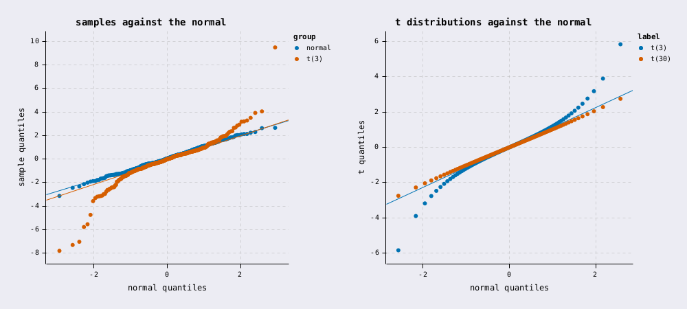
Two groups against each other: one column per group (the shorter padded with nils, which the chart drops), the longer one interpolated.
Source: cljplot - qqplot. Data: Old Faithful geyser eruptions, R datasets package faithful (Härdle 1991; Azzalini & Bowman 1990); licence: Part of R (GPL-2 | GPL-3).
| eruptions | waiting |
|---|---|
| 3.6 | 79 |
| 1.8 | 54 |
| 3.333 | 74 |
| 2.283 | 62 |
| 4.533 | 85 |
| 2.883 | 55 |
| 4.7 | 88 |
| 3.6 | 85 |
| 1.95 | 51 |
| 4.35 | 85 |
| 1.833 | 54 |
| 3.917 | 84 |
| 4.2 | 78 |
| 1.75 | 47 |
| 4.7 | 83 |
| 2.167 | 52 |
| 1.75 | 62 |
| 4.8 | 84 |
| 1.6 | 52 |
| 4.25 | 79 |
| 1.8 | 51 |
| 1.75 | 47 |
| 3.45 | 78 |
| 3.067 | 69 |
| 4.533 | 74 |
| 3.6 | 83 |
| 1.967 | 55 |
| 4.083 | 76 |
| 3.85 | 78 |
| 4.433 | 79 |
| 4.3 | 73 |
| 4.467 | 77 |
| 3.367 | 66 |
| 4.033 | 80 |
| 3.833 | 74 |
| 2.017 | 52 |
| 1.867 | 48 |
| 4.833 | 80 |
| 1.833 | 59 |
| 4.783 | 90 |
| 4.35 | 80 |
| 1.883 | 58 |
| 4.567 | 84 |
| 1.75 | 58 |
| 4.533 | 73 |
| 3.317 | 83 |
| 3.833 | 64 |
| 2.1 | 53 |
| 4.633 | 82 |
| 2 | 59 |
| 4.8 | 75 |
| 4.716 | 90 |
| 1.833 | 54 |
| 4.833 | 80 |
| 1.733 | 54 |
| 4.883 | 83 |
| 3.717 | 71 |
| 1.667 | 64 |
| 4.567 | 77 |
| 4.317 | 81 |
| 2.233 | 59 |
| 4.5 | 84 |
| 1.75 | 48 |
| 4.8 | 82 |
| 1.817 | 60 |
| 4.4 | 92 |
| 4.167 | 78 |
| 4.7 | 78 |
| 2.067 | 65 |
| 4.7 | 73 |
| 4.033 | 82 |
| 1.967 | 56 |
| 4.5 | 79 |
| 4 | 71 |
| 1.983 | 62 |
| 5.067 | 76 |
| 2.017 | 60 |
| 4.567 | 78 |
| 3.883 | 76 |
| 3.6 | 83 |
| 4.133 | 75 |
| 4.333 | 82 |
| 4.1 | 70 |
| 2.633 | 65 |
| 4.067 | 73 |
| 4.933 | 88 |
| 3.95 | 76 |
| 4.517 | 80 |
| 2.167 | 48 |
| 4 | 86 |
| 2.2 | 60 |
| 4.333 | 90 |
| 1.867 | 50 |
| 4.817 | 78 |
| 1.833 | 63 |
| 4.3 | 72 |
| 4.667 | 84 |
| 3.75 | 75 |
| 1.867 | 51 |
| 4.9 | 82 |
| … | … |
(let [faithful (nu/dataset :faithful)
short-wait (map :eruptions (filter #(< (double (:waiting %)) 70.0) faithful))
long-wait (map :eruptions (filter #(>= (double (:waiting %)) 70.0) faithful))
rows (take (max (count short-wait) (count long-wait))
(map (fn [a b] {:short a :long b}) (concat short-wait (repeat nil)) (concat long-wait (repeat nil))))]
(plot/render-image
{:data rows :mapping {:x :short :y :long}
:charts [(chart/qq)]
:labels {:title "Old Faithful eruptions: after short against after long waits" :x "waiting < 70 min" :y "waiting >= 70 min"}}
{:width 550 :height 500}))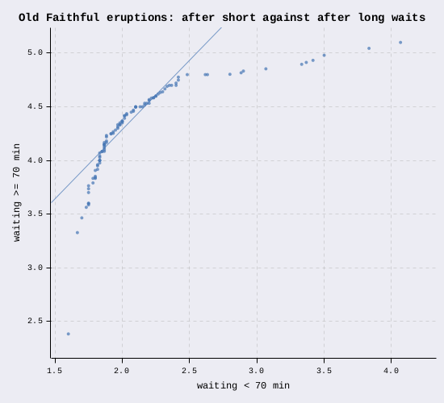
37.1.2 P-P plot
Probabilities against probabilities: a t sample’s empirical CDF against the normal CDF, y = x for reference.
Source: cljplot - ppplot.
(let [d (r/distribution :t {:rng (r/rng :mersenne 2)})]
(plot/render-image
{:data (repeatedly 2000 (fn [] {:v (r/sample d)}))
:mapping {:y :v}
:charts [(chart/pp {:x-distribution [:normal] :size 2})]
:labels {:title "P-P: a t sample against the normal" :y "sample probabilities"}}
{:width 550 :height 500}))
37.1.3 Kernel densities
One sample, a density per fastmath KDE kernel; chart/function takes the map kernel -> density.
Source: cljplot - kernel densities.
(let [g (r/rng :mersenne 3)
data (concat (repeatedly 500 #(r/grandom g 4.5 0.1))
(take 10000 (remove #(== (m/round (* (double %) 10.0)) 30.0)
(repeatedly #(+ (r/grandom g 2.0 0.1) (* (r/drandom g) (r/drandom g 1.0 3.0)))))))
kernels (:kde k/kernel-list)]
(plot/render-image
{:charts [(chart/function {:f (mapv (fn [kernel] [(name kernel) (k/kernel-density kernel data)]) kernels)
:domain [1.0 6.0] :width 1.5 :mapping {:color :function}})]
:scales {:color {:title "kernel"}}
:labels {:title "Kernel densities of one sample"}}
{:width 800 :height 550}))
37.1.4 Gaussian process
A Gaussian process through ten noisy samples of a sine: the mean, 50 % and 95 % bands, the true function.
Source: cljplot - Gaussian process prediction.
(let [g (r/rng :mersenne 4)
truth (fn [x] (+ 10.0 (m/sin (* -0.7 (double x)))))
xs (repeatedly 10 #(r/drandom g -5 5))
ys (map #(+ (truth %) (r/grandom g 0.0 0.0005)) xs)
process (gp/gaussian-process xs ys {:normalize? true :kernel (k/kernel :gaussian {:sigma 0.8}) :noise 0.0005})
xtest (m/slice-range -5.0 5.0 200)
band (mapv (fn [x [mu sd]] {:x x :mu mu :lo95 (- mu (* 1.96 sd)) :hi95 (+ mu (* 1.96 sd))
:lo50 (- mu (* 0.67 sd)) :hi50 (+ mu (* 0.67 sd))})
xtest (gp/predict-all process xtest true))]
(plot/render-image
{:data band :mapping {:x :x}
:charts [(chart/ribbon {:mapping {:ymin :lo95 :ymax :hi95} :color [130 170 230]})
(chart/ribbon {:mapping {:ymin :lo50 :ymax :hi50} :color [70 120 200]})
(chart/function {:f truth :color [215 48 39] :width 1.5})
(chart/line {:mapping {:y :mu} :color :black :width 2})
(chart/scatter {:data (map (fn [x y] {:x x :y y}) xs ys) :mapping {:y :y} :size 9 :color :black})]
:labels {:title "Gaussian process: mean, 50 % and 95 % bands, the true function (red)" :y nil}}
{:width 800 :height 500}))
A posterior sample through three points, with its 95 % band (the posterior standard deviation).
Source: cljplot - Gaussian process posterior sample.
(let [xs [-4 1 2] ys [-5 1 2]
process (gp/gaussian-process xs ys {:kernel (k/kernel :gaussian {:sigma 0.8}) :noise 0.005})
xtest (m/slice-range -5.0 5.0 60)
rows (mapv (fn [x [y sd]] {:x x :y y :lo (- y (* 1.96 sd)) :hi (+ y (* 1.96 sd))})
xtest (gp/posterior-samples process xtest true (r/rng :mersenne 5)))]
(plot/render-image
{:data rows :mapping {:x :x :y :y}
:charts [(chart/ribbon {:mapping {:ymin :lo :ymax :hi} :color [130 170 230] :interpolator :cubic})
(chart/line {:color :black :width 2 :interpolator :cubic})
(chart/scatter {:data (map (fn [x y] {:x x :y y}) xs ys) :size 9 :color :black})]
:labels {:title "Gaussian process: a posterior sample with its 95 % band"}}
{:width 800 :height 500}))
Many samples: 30 posterior curves of a periodic kernel through the three points, 20 prior curves of a Gaussian one.
Source: cljplot - Gaussian process posterior and prior samples.
(let [xs [-4 1 2] ys [-5 1 2]
xtest (m/slice-range -5.0 5.0 40)
g (r/rng :mersenne 6)
periodic (gp/gaussian-process xs ys {:kernel (k/kernel :periodic {:sigma 0.5 :periodicity 8.0}) :noise 0.0001})
gaussian (gp/gaussian-process xs ys {:kernel (k/kernel :gaussian) :noise 1.0e-7})
curves (fn [sample-fn n] (vec (for [i (range n) [x y] (map vector xtest (sample-fn))] {:x x :y y :i i})))
panel (fn [rows title points?]
{:data rows :mapping {:x :x :y :y :group :i}
:charts (cond-> [(chart/line {:color [0 0 0 90] :interpolator :cubic})]
points? (conj (chart/scatter {:data (map (fn [x y] {:x x :y y}) xs ys) :mapping {:group nil}
:size 9 :color [215 48 39]})))
:labels {:title title}})]
(plot/render-image
(plot/arrange [(panel (curves #(gp/posterior-samples periodic xtest false g) 30) "30 posterior samples (periodic kernel)" true)
(panel (curves #(gp/prior-samples gaussian xtest g) 20) "20 prior samples (Gaussian kernel)" false)]
{:columns 2})
{:width 1000 :height 450}))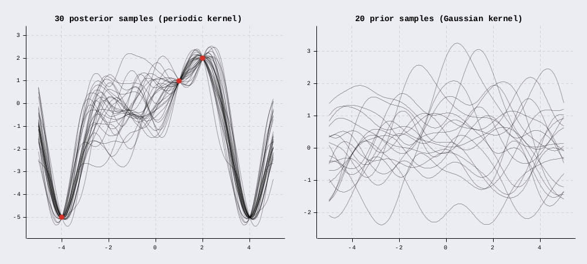
37.1.5 Bayesian optimisation
fastmath’s bayesian-optimization maximizes a black box: each step fits a Gaussian process to the points seen so far and evaluates where the expected improvement is highest (dashed rule). Three steps of one run:
Source: cljplot - Bayesian optimisation.
(defn target
"1D target with two bumps, the higher at x = 2."
^double [^double x]
(+ (m/exp (- (m/sq (- x 2.0)))) (m/exp (- (* 0.1 (m/sq (- x 6.0))))) (/ 1.0 (inc (* x x)))))(def bo-1d
(opt/bayesian-optimization target {:bounds [[-2.0 10.0]] :vector-arg? false :init-points 2 :rng (r/rng :mersenne 7)}))| x | y | util-fn | gp | xs | ys | util-best |
|---|---|---|---|---|---|---|
| [0.14888007855355237] | 1.0434073223067877 | fn | #fastmath.interpolation.gp.GaussianProcess{:kscale 1.0, :kernel fn, :noise 1.0E-8, :xss [[0.9071082133650545] [7.024407064739064]], :ys #object[org.apache.commons.math3.linear.ArrayRealVector 0x6e73c946 "{0.7071067812; -0.7071067812}"], :ymean 0.923227662111161, :ystddev 0.004222828647721835, :chol #object[org.apache.commons.math3.linear.CholeskyDecomposition 0x4d662057 "org.apache.commons.math3.linear.CholeskyDecomposition@4d662057"], :w #object[org.apache.commons.math3.linear.ArrayRealVector 0x7f495a43 "{0.7071071814; -0.7071071814}"], :n 2, :L -2.337877359369782, :dim 1} | ([0.14888007855355237] [0.9071082133650545] [7.024407064739064]) | (1.0434073223067877 0.9262136528837539 0.920241671338568) | [0.14888007855355237] |
| [0.14888007855355237] | 1.0434073223067877 | fn | #fastmath.interpolation.gp.GaussianProcess{:kscale 1.0, :kernel fn, :noise 1.0E-8, :xss [[0.14888007855355237] [0.9071082133650545] [7.024407064739064]], :ys #object[org.apache.commons.math3.linear.ArrayRealVector 0x48f038ab "{1.1536327802; -0.5338215502; -0.6198112301}"], :ymean 0.9632875488430366, :ystddev 0.06944997995540468, :chol #object[org.apache.commons.math3.linear.CholeskyDecomposition 0x3839e10a "org.apache.commons.math3.linear.CholeskyDecomposition@3839e10a"], :w #object[org.apache.commons.math3.linear.ArrayRealVector 0x44a11ac2 "{1.8414833929; -1.4235897595; -0.6198105238}"], :n 3, :L -4.2581313131506064, :dim 1} | ([-0.2657636177137914] [0.14888007855355237] [0.9071082133650545] [7.024407064739064]) | (0.9596468453638001 1.0434073223067877 0.9262136528837539 0.920241671338568) | [-0.2657636177137914] |
| [0.14888007855355237] | 1.0434073223067877 | fn | #fastmath.interpolation.gp.GaussianProcess{:kscale 1.0, :kernel fn, :noise 1.0E-8, :xss [[-0.2657636177137914] [0.14888007855355237] [0.9071082133650545] [7.024407064739064]], :ys #object[org.apache.commons.math3.linear.ArrayRealVector 0x718fdb57 "{-0.0481278451; 1.4282209924; -0.6374159755; -0.7426771718}"], :ymean 0.9623773729732275, :ystddev 0.05673488190105512, :chol #object[org.apache.commons.math3.linear.CholeskyDecomposition 0x38f380ad "org.apache.commons.math3.linear.CholeskyDecomposition@38f380ad"], :w #object[org.apache.commons.math3.linear.ArrayRealVector 0x4f350708 "{-3.8505750276; 5.6168652018; -2.4744325477; -0.7426760295}"], :n 4, :L -8.210152423999233, :dim 1} | ([0.26760397390460766] [-0.2657636177137914] [0.14888007855355237] [0.9071082133650545] [7.024407064739064]) | (1.0203030326384166 0.9596468453638001 1.0434073223067877 0.9262136528837539 0.920241671338568) | [0.26760397390460766] |
| [0.14888007855355237] | 1.0434073223067877 | fn | #fastmath.interpolation.gp.GaussianProcess{:kscale 1.0, :kernel fn, :noise 1.0E-8, :xss [[0.26760397390460766] [-0.2657636177137914] [0.14888007855355237] [0.9071082133650545] [7.024407064739064]], :ys #object[org.apache.commons.math3.linear.ArrayRealVector 0x38e6326 "{0.8342928134; -0.2577323233; 1.250251452; -0.8596476139; -0.9671643282}"], :ymean 0.9739625049062652, :ystddev 0.05554468046333932, :chol #object[org.apache.commons.math3.linear.CholeskyDecomposition 0xcd45563 "org.apache.commons.math3.linear.CholeskyDecomposition@cd45563"], :w #object[org.apache.commons.math3.linear.ArrayRealVector 0x28864abc "{-24.9980985614; -8.5893243298; 32.3715131447; -0.0350946839; -0.9671639446}"], :n 5, :L -13.35171656566094, :dim 1} | ([10.0] [0.26760397390460766] [-0.2657636177137914] [0.14888007855355237] [0.9071082133650545] [7.024407064739064]) | (0.21179750809366532 1.0203030326384166 0.9596468453638001 1.0434073223067877 0.9262136528837539 0.920241671338568) | [10.0] |
| [0.14888007855355237] | 1.0434073223067877 | fn | #fastmath.interpolation.gp.GaussianProcess{:kscale 1.0, :kernel fn, :noise 1.0E-8, :xss [[10.0] [0.26760397390460766] [-0.2657636177137914] [0.14888007855355237] [0.9071082133650545] [7.024407064739064]], :ys #object[org.apache.commons.math3.linear.ArrayRealVector 0x4fec15e3 "{-2.0157094834; 0.550210904; 0.3577088829; 0.623536028; 0.2516033491; 0.2326503195}"], :ymean 0.8469350054374986, :ystddev 0.31509376850382914, :chol #object[org.apache.commons.math3.linear.CholeskyDecomposition 0x3f0bc86b "org.apache.commons.math3.linear.CholeskyDecomposition@3f0bc86b"], :w #object[org.apache.commons.math3.linear.ArrayRealVector 0x11daeda4 "{-2.0164920161; -4.2392061578; -1.1303248936; 5.4919568914; 0.3159880481; 0.239245959}"], :n 6, :L -5.316327394935635, :dim 1} | ([5.76869328108109] [10.0] [0.26760397390460766] [-0.2657636177137914] [0.14888007855355237] [0.9071082133650545] [7.024407064739064]) | (1.0238380681496897 0.21179750809366532 1.0203030326384166 0.9596468453638001 1.0434073223067877 0.9262136528837539 0.920241671338568) | [5.76869328108109] |
| [0.14888007855355237] | 1.0434073223067877 | fn | #fastmath.interpolation.gp.GaussianProcess{:kscale 1.0, :kernel fn, :noise 1.0E-8, :xss [[5.76869328108109] [10.0] [0.26760397390460766] [-0.2657636177137914] [0.14888007855355237] [0.9071082133650545] [7.024407064739064]], :ys #object[org.apache.commons.math3.linear.ArrayRealVector 0xb939689 "{0.5134662198; -2.2363333333; 0.5014955873; 0.2960965409; 0.5797332623; 0.1828822728; 0.1626594502}"], :ymean 0.8722068715392401, :ystddev 0.2953090013959463, :chol #object[org.apache.commons.math3.linear.CholeskyDecomposition 0x247fc915 "org.apache.commons.math3.linear.CholeskyDecomposition@247fc915"], :w #object[org.apache.commons.math3.linear.ArrayRealVector 0x45d61561 "{0.4995164708; -2.236631358; -4.5587329392; -1.2875223609; 5.9054037048; 0.2687515815; 0.0736477104}"], :n 7, :L -6.810385543044578, :dim 1} | ([4.928032976070911] [5.76869328108109] [10.0] [0.26760397390460766] [-0.2657636177137914] [0.14888007855355237] [0.9071082133650545] [7.024407064739064]) | (0.9311826015193632 1.0238380681496897 0.21179750809366532 1.0203030326384166 0.9596468453638001 1.0434073223067877 0.9262136528837539 0.920241671338568) | [4.928032976070911] |
| [2.5005700666355852] | 1.2101084476056592 | fn | #fastmath.interpolation.gp.GaussianProcess{:kscale 1.0, :kernel fn, :noise 1.0E-8, :xss [[4.928032976070911] [5.76869328108109] [10.0] [0.26760397390460766] [-0.2657636177137914] [0.14888007855355237] [0.9071082133650545] [7.024407064739064]], :ys #object[org.apache.commons.math3.linear.ArrayRealVector 0x3a777b2 "{0.1881996207; 0.5261153542; -2.4354074946; 0.5132230321; 0.292009101; 0.5974846874; 0.1700777981; 0.1482979011}"], :ymean 0.8795788377867556, :ystddev 0.2741969593112322, :chol #object[org.apache.commons.math3.linear.CholeskyDecomposition 0x14978e91 "org.apache.commons.math3.linear.CholeskyDecomposition@14978e91"], :w #object[org.apache.commons.math3.linear.ArrayRealVector 0x4e7ada77 "{-0.0373949724; 0.5315685711; -2.4356473048; -4.9209296977; -1.4122539803; 6.3744210388; 0.2679711158; 0.0548567475}"], :n 8, :L -8.156508912857127, :dim 1} | ([2.5005700666355852] [4.928032976070911] [5.76869328108109] [10.0] [0.26760397390460766] [-0.2657636177137914] [0.14888007855355237] [0.9071082133650545] [7.024407064739064]) | (1.2101084476056592 0.9311826015193632 1.0238380681496897 0.21179750809366532 1.0203030326384166 0.9596468453638001 1.0434073223067877 0.9262136528837539 0.920241671338568) | [2.5005700666355852] |
| [2.5005700666355852] | 1.2101084476056592 | fn | #fastmath.interpolation.gp.GaussianProcess{:kscale 1.0, :kernel fn, :noise 1.0E-8, :xss [[2.5005700666355852] [4.928032976070911] [5.76869328108109] [10.0] [0.26760397390460766] [-0.2657636177137914] [0.14888007855355237] [0.9071082133650545] [7.024407064739064]], :ys #object[org.apache.commons.math3.linear.ArrayRealVector 0x3b72a3c4 "{1.0524945957; 0.0532983694; 0.3852181033; -2.5237552837; 0.3725545434; 0.1552658473; 0.4553210542; 0.0354981017; 0.0141046686}"], :ymean 0.916304349988856, :ystddev 0.2791502196885119, :chol #object[org.apache.commons.math3.linear.CholeskyDecomposition 0x35049ff "org.apache.commons.math3.linear.CholeskyDecomposition@35049ff"], :w #object[org.apache.commons.math3.linear.ArrayRealVector 0x2b1bbc02 "{1.062841644; -0.1526763698; 0.460162712; -2.5236036197; -4.6105008582; -1.4915005055; 6.1016112695; 0.0032081619; -0.0619401103}"], :n 9, :L -9.747619973757363, :dim 1} | ([3.009083126290267] [2.5005700666355852] [4.928032976070911] [5.76869328108109] [10.0] [0.26760397390460766] [-0.2657636177137914] [0.14888007855355237] [0.9071082133650545] [7.024407064739064]) | (0.8694722235954507 1.2101084476056592 0.9311826015193632 1.0238380681496897 0.21179750809366532 1.0203030326384166 0.9596468453638001 1.0434073223067877 0.9262136528837539 0.920241671338568) | [3.009083126290267] |
| [2.1409467813201193] | 1.384970698916639 | fn | #fastmath.interpolation.gp.GaussianProcess{:kscale 1.0, :kernel fn, :noise 1.0E-8, :xss [[3.009083126290267] [2.5005700666355852] [4.928032976070911] [5.76869328108109] [10.0] [0.26760397390460766] [-0.2657636177137914] [0.14888007855355237] [0.9071082133650545] [7.024407064739064]], :ys #object[org.apache.commons.math3.linear.ArrayRealVector 0x33aa7274 "{-0.1598962165; 1.1323421489; 0.0742084156; 0.4257064076; -2.6548525347; 0.4122958887; 0.1821904367; 0.4999443753; 0.0553582006; 0.0327028776}"], :ymean 0.9116211373495154, :ystddev 0.26360169542395057, :chol #object[org.apache.commons.math3.linear.CholeskyDecomposition 0x1de89b46 "org.apache.commons.math3.linear.CholeskyDecomposition@1de89b46"], :w #object[org.apache.commons.math3.linear.ArrayRealVector 0x1cf636b5 "{-1.8427491585; 2.4296988366; -0.0728563942; 0.4726341456; -2.6547508132; -4.6928928604; -1.5488847336; 6.3017518866; -0.0877102797; -0.0473569394}"], :n 10, :L -11.699646295148318, :dim 1} | ([2.1409467813201193] [3.009083126290267] [2.5005700666355852] [4.928032976070911] [5.76869328108109] [10.0] [0.26760397390460766] [-0.2657636177137914] [0.14888007855355237] [0.9071082133650545] [7.024407064739064]) | (1.384970698916639 0.8694722235954507 1.2101084476056592 0.9311826015193632 1.0238380681496897 0.21179750809366532 1.0203030326384166 0.9596468453638001 1.0434073223067877 0.9262136528837539 0.920241671338568) | [2.1409467813201193] |
| [1.8780816811148904] | 1.3889958272641616 | fn | #fastmath.interpolation.gp.GaussianProcess{:kscale 1.0, :kernel fn, :noise 1.0E-8, :xss [[2.1409467813201193] [3.009083126290267] [2.5005700666355852] [4.928032976070911] [5.76869328108109] [10.0] [0.26760397390460766] [-0.2657636177137914] [0.14888007855355237] [0.9071082133650545] [7.024407064739064]], :ys #object[org.apache.commons.math3.linear.ArrayRealVector 0x6afb6285 "{1.4944982734; -0.2958334566; 0.8871998004; -0.0815126526; 0.2402807761; -2.5799447925; 0.2280035599; 0.0173439713; 0.3082450055; -0.0987698645; -0.1195106204}"], :ymean 0.9546529156737994, :ystddev 0.2879346138459156, :chol #object[org.apache.commons.math3.linear.CholeskyDecomposition 0xaa2947c "org.apache.commons.math3.linear.CholeskyDecomposition@aa2947c"], :w #object[org.apache.commons.math3.linear.ArrayRealVector 0x53c91cc5 "{1.982881134; -1.1402370901; 0.1011259825; -0.1881628905; 0.3586989924; -2.5794128464; -3.8342386356; -1.5211413692; 5.4175708405; -0.5205784566; -0.1745147171}"], :n 11, :L -11.810225947294992, :dim 1} | ([1.8780816811148904] [2.1409467813201193] [3.009083126290267] [2.5005700666355852] [4.928032976070911] [5.76869328108109] [10.0] [0.26760397390460766] [-0.2657636177137914] [0.14888007855355237] [0.9071082133650545] [7.024407064739064]) | (1.3889958272641616 1.384970698916639 0.8694722235954507 1.2101084476056592 0.9311826015193632 1.0238380681496897 0.21179750809366532 1.0203030326384166 0.9596468453638001 1.0434073223067877 0.9262136528837539 0.920241671338568) | [1.8780816811148904] |
| [2.0006002658399327] | 1.401897116112 | fn | #fastmath.interpolation.gp.GaussianProcess{:kscale 1.0, :kernel fn, :noise 1.0E-8, :xss [[1.8780816811148904] [2.1409467813201193] [3.009083126290267] [2.5005700666355852] [4.928032976070911] [5.76869328108109] [10.0] [0.26760397390460766] [-0.2657636177137914] [0.14888007855355237] [0.9071082133650545] [7.024407064739064]], :ys #object[org.apache.commons.math3.linear.ArrayRealVector 0x7e27db97 "{1.3191905094; 1.3058539724; -0.4021572738; 0.7264794328; -0.1976910639; 0.1093061177; -2.5812438555; 0.097593415; -0.1033799244; 0.1741453127; -0.2141547792; -0.2339418632}"], :ymean 0.9908481583063296, :ystddev 0.3018121083606376, :chol #object[org.apache.commons.math3.linear.CholeskyDecomposition 0x4ff9719c "org.apache.commons.math3.linear.CholeskyDecomposition@4ff9719c"], :w #object[org.apache.commons.math3.linear.ArrayRealVector 0x51660d6b "{1.1692221795; 0.323979065; -1.3117168199; 0.7536750423; -0.262881712; 0.2784840167; -2.5803854755; -3.4424313489; -1.5458049637; 5.0154425319; -0.7766944261; -0.2712520921}"], :n 12, :L -11.465840670754183, :dim 1} | ([2.0006002658399327] [1.8780816811148904] [2.1409467813201193] [3.009083126290267] [2.5005700666355852] [4.928032976070911] [5.76869328108109] [10.0] [0.26760397390460766] [-0.2657636177137914] [0.14888007855355237] [0.9071082133650545] [7.024407064739064]) | (1.401897116112 1.3889958272641616 1.384970698916639 0.8694722235954507 1.2101084476056592 0.9311826015193632 1.0238380681496897 0.21179750809366532 1.0203030326384166 0.9596468453638001 1.0434073223067877 0.9262136528837539 0.920241671338568) | [2.0006002658399327] |
| [2.0006002658399327] | 1.401897116112 | fn | #fastmath.interpolation.gp.GaussianProcess{:kscale 1.0, :kernel fn, :noise 1.0E-8, :xss [[2.0006002658399327] [1.8780816811148904] [2.1409467813201193] [3.009083126290267] [2.5005700666355852] [4.928032976070911] [5.76869328108109] [10.0] [0.26760397390460766] [-0.2657636177137914] [0.14888007855355237] [0.9071082133650545] [7.024407064739064]], :ys #object[org.apache.commons.math3.linear.ArrayRealVector 0x4ad20cb6 "{1.2214487237; 1.1799172928; 1.1669597239; -0.4925170562; 0.6040485619; -0.2938609124; 0.0044127058; -2.6096832002; -0.0069671714; -0.2022296972; 0.0674094448; -0.3098567985; -0.3290816171}"], :ymean 1.0224673089067657, :ystddev 0.3106391613936422, :chol #object[org.apache.commons.math3.linear.CholeskyDecomposition 0xa699d18 "org.apache.commons.math3.linear.CholeskyDecomposition@a699d18"], :w #object[org.apache.commons.math3.linear.ArrayRealVector 0xe987858 "{-0.1883942809; 1.1792271134; 0.4160096816; -1.3502429297; 0.7133587157; -0.3283783723; 0.2171664143; -2.6085511979; -3.4356023827; -1.6024330058; 4.9672244197; -0.8070433142; -0.3525368756}"], :n 13, :L -9.371843529343339, :dim 1} | ([-2.0] [2.0006002658399327] [1.8780816811148904] [2.1409467813201193] [3.009083126290267] [2.5005700666355852] [4.928032976070911] [5.76869328108109] [10.0] [0.26760397390460766] [-0.2657636177137914] [0.14888007855355237] [0.9071082133650545] [7.024407064739064]) | (0.20166166980834865 1.401897116112 1.3889958272641616 1.384970698916639 0.8694722235954507 1.2101084476056592 0.9311826015193632 1.0238380681496897 0.21179750809366532 1.0203030326384166 0.9596468453638001 1.0434073223067877 0.9262136528837539 0.920241671338568) | [-2.0] |
| [2.0006002658399327] | 1.401897116112 | fn | #fastmath.interpolation.gp.GaussianProcess{:kscale 1.0, :kernel fn, :noise 1.0E-8, :xss [[-2.0] [2.0006002658399327] [1.8780816811148904] [2.1409467813201193] [3.009083126290267] [2.5005700666355852] [4.928032976070911] [5.76869328108109] [10.0] [0.26760397390460766] [-0.2657636177137914] [0.14888007855355237] [0.9071082133650545] [7.024407064739064]], :ys #object[org.apache.commons.math3.linear.ArrayRealVector 0x6f7431b5 "{-2.0577071359; 1.1826610838; 1.1478304791; 1.1369635296; -0.2547674694; 0.664874421; -0.0881632019; 0.1619859088; -2.0303426314; 0.1524421007; -0.0113160871; 0.2148185338; -0.1015782558; -0.1177012751}"], :ymean 0.9638383346854502, :ystddev 0.3704009436373274, :chol #object[org.apache.commons.math3.linear.CholeskyDecomposition 0x35193751 "org.apache.commons.math3.linear.CholeskyDecomposition@35193751"], :w #object[org.apache.commons.math3.linear.ArrayRealVector 0x73defdb7 "{-2.0405543366; -0.4258424834; 1.2083506306; 0.5181733766; -1.0065533836; 0.5780372997; -0.1620809367; 0.2652213615; -2.0298566855; -2.3079092399; -0.8523610218; 3.4013564425; -0.6240691456; -0.1572740153}"], :n 14, :L -10.419310914580652, :dim 1} | ([8.178661389006042] [-2.0] [2.0006002658399327] [1.8780816811148904] [2.1409467813201193] [3.009083126290267] [2.5005700666355852] [4.928032976070911] [5.76869328108109] [10.0] [0.26760397390460766] [-0.2657636177137914] [0.14888007855355237] [0.9071082133650545] [7.024407064739064]) | (0.6368282836925258 0.20166166980834865 1.401897116112 1.3889958272641616 1.384970698916639 0.8694722235954507 1.2101084476056592 0.9311826015193632 1.0238380681496897 0.21179750809366532 1.0203030326384166 0.9596468453638001 1.0434073223067877 0.9262136528837539 0.920241671338568) | [8.178661389006042] |
| [2.0006002658399327] | 1.401897116112 | fn | #fastmath.interpolation.gp.GaussianProcess{:kscale 1.0, :kernel fn, :noise 1.0E-8, :xss [[8.178661389006042] [-2.0] [2.0006002658399327] [1.8780816811148904] [2.1409467813201193] [3.009083126290267] [2.5005700666355852] [4.928032976070911] [5.76869328108109] [10.0] [0.26760397390460766] [-0.2657636177137914] [0.14888007855355237] [0.9071082133650545] [7.024407064739064]], :ys #object[org.apache.commons.math3.linear.ArrayRealVector 0x3ec9012c "{-0.8321364909; -2.0185941873; 1.253781352; 1.2186067017; 1.207632412; -0.1978456601; 0.7308801583; -0.029595729; 0.2230242745; -1.990959385; 0.2133861957; 0.048010457; 0.2763787632; -0.0431432925; -0.0594255698}"], :ymean 0.9420376646192553, :ystddev 0.3667780277377646, :chol #object[org.apache.commons.math3.linear.CholeskyDecomposition 0x70fe76d9 "org.apache.commons.math3.linear.CholeskyDecomposition@70fe76d9"], :w #object[org.apache.commons.math3.linear.ArrayRealVector 0xc216428 "{-0.743618625; -2.0046169099; -0.5210140441; 1.2954874615; 0.5829728319; -0.9696557789; 0.5767682665; -0.11350636; 0.2711769345; -1.9494634175; -2.2843820218; -0.8109048386; 3.3927456078; -0.6025896944; 0.0738472901}"], :n 15, :L -11.469859551989678, :dim 1} | ([4.066430010995775] [8.178661389006042] [-2.0] [2.0006002658399327] [1.8780816811148904] [2.1409467813201193] [3.009083126290267] [2.5005700666355852] [4.928032976070911] [5.76869328108109] [10.0] [0.26760397390460766] [-0.2657636177137914] [0.14888007855355237] [0.9071082133650545] [7.024407064739064]) | (0.7590727922085285 0.6368282836925258 0.20166166980834865 1.401897116112 1.3889958272641616 1.384970698916639 0.8694722235954507 1.2101084476056592 0.9311826015193632 1.0238380681496897 0.21179750809366532 1.0203030326384166 0.9596468453638001 1.0434073223067877 0.9262136528837539 0.920241671338568) | [4.066430010995775] |
| [2.0006002658399327] | 1.401897116112 | fn | #fastmath.interpolation.gp.GaussianProcess{:kscale 1.0, :kernel fn, :noise 1.0E-8, :xss [[4.066430010995775] [8.178661389006042] [-2.0] [2.0006002658399327] [1.8780816811148904] [2.1409467813201193] [3.009083126290267] [2.5005700666355852] [4.928032976070911] [5.76869328108109] [10.0] [0.26760397390460766] [-0.2657636177137914] [0.14888007855355237] [0.9071082133650545] [7.024407064739064]], :ys #object[org.apache.commons.math3.linear.ArrayRealVector 0x816135e "{-0.4800966004; -0.8222485318; -2.0402426916; 1.3191137418; 1.283004137; 1.2717381468; -0.1710980274; 0.7823136503; 0.0016240462; 0.2609587782; -2.0118733465; 0.251064516; 0.0812930319; 0.3157314481; -0.0122836164; -0.0289986823}"], :ymean 0.9306023600935849, :ystddev 0.3572813632922582, :chol #object[org.apache.commons.math3.linear.CholeskyDecomposition 0x7e20b311 "org.apache.commons.math3.linear.CholeskyDecomposition@7e20b311"], :w #object[org.apache.commons.math3.linear.ArrayRealVector 0x7deb5ab2 "{-0.3917690903; -0.7393792996; -2.0276964925; -0.7703950576; 1.4316110053; 0.8275759514; -0.7970454984; 0.4374591147; 0.078064286; 0.2507429891; -1.970710117; -2.3189615556; -0.8055141963; 3.4592241557; -0.6046289902; 0.1029543476}"], :n 16, :L -12.471651895203593, :dim 1} | ([6.37252163439886] [4.066430010995775] [8.178661389006042] [-2.0] [2.0006002658399327] [1.8780816811148904] [2.1409467813201193] [3.009083126290267] [2.5005700666355852] [4.928032976070911] [5.76869328108109] [10.0] [0.26760397390460766] [-0.2657636177137914] [0.14888007855355237] [0.9071082133650545] [7.024407064739064]) | (1.0102518567115288 0.7590727922085285 0.6368282836925258 0.20166166980834865 1.401897116112 1.3889958272641616 1.384970698916639 0.8694722235954507 1.2101084476056592 0.9311826015193632 1.0238380681496897 0.21179750809366532 1.0203030326384166 0.9596468453638001 1.0434073223067877 0.9262136528837539 0.920241671338568) | [6.37252163439886] |
| [2.0006002658399327] | 1.401897116112 | fn | #fastmath.interpolation.gp.GaussianProcess{:kscale 1.0, :kernel fn, :noise 1.0E-8, :xss [[6.37252163439886] [4.066430010995775] [8.178661389006042] [-2.0] [2.0006002658399327] [1.8780816811148904] [2.1409467813201193] [3.009083126290267] [2.5005700666355852] [4.928032976070911] [5.76869328108109] [10.0] [0.26760397390460766] [-0.2657636177137914] [0.14888007855355237] [0.9071082133650545] [7.024407064739064]], :ys #object[org.apache.commons.math3.linear.ArrayRealVector 0x7aec7103 "{0.2163625083; -0.5085929925; -0.8614163024; -2.1173984884; 1.3467329305; 1.309497103; 1.2978797378; -0.1899570615; 0.7931905781; -0.0118479582; 0.2555751662; -2.0881443317; 0.2453723117; 0.0703058239; 0.3120561411; -0.0261893869; -0.0434257792}"], :ymean 0.9352876246005227, :ystddev 0.3464751480708619, :chol #object[org.apache.commons.math3.linear.CholeskyDecomposition 0x42d811e3 "org.apache.commons.math3.linear.CholeskyDecomposition@42d811e3"], :w #object[org.apache.commons.math3.linear.ArrayRealVector 0x399b8a92 "{0.1328572917; -0.4161709725; -0.7646442082; -2.1037000202; -0.7784444003; 1.4606998935; 0.844790626; -0.8280801042; 0.4488615698; 0.0929437365; 0.1735777948; -2.0454043886; -2.4017964872; -0.8419822167; 3.5766920157; -0.6297988919; 0.0335557295}"], :n 17, :L -13.358819253865184, :dim 1} | ([1.5556367200793386] [6.37252163439886] [4.066430010995775] [8.178661389006042] [-2.0] [2.0006002658399327] [1.8780816811148904] [2.1409467813201193] [3.009083126290267] [2.5005700666355852] [4.928032976070911] [5.76869328108109] [10.0] [0.26760397390460766] [-0.2657636177137914] [0.14888007855355237] [0.9071082133650545] [7.024407064739064]) | (1.2519397006011372 1.0102518567115288 0.7590727922085285 0.6368282836925258 0.20166166980834865 1.401897116112 1.3889958272641616 1.384970698916639 0.8694722235954507 1.2101084476056592 0.9311826015193632 1.0238380681496897 0.21179750809366532 1.0203030326384166 0.9596468453638001 1.0434073223067877 0.9262136528837539 0.920241671338568) | [1.5556367200793386] |
| [2.0006002658399327] | 1.401897116112 | fn | #fastmath.interpolation.gp.GaussianProcess{:kscale 1.0, :kernel fn, :noise 1.0E-8, :xss [[1.5556367200793386] [6.37252163439886] [4.066430010995775] [8.178661389006042] [-2.0] [2.0006002658399327] [1.8780816811148904] [2.1409467813201193] [3.009083126290267] [2.5005700666355852] [4.928032976070911] [5.76869328108109] [10.0] [0.26760397390460766] [-0.2657636177137914] [0.14888007855355237] [0.9071082133650545] [7.024407064739064]], :ys #object[org.apache.commons.math3.linear.ArrayRealVector 0x1e8279d9 "{0.8685615396; 0.1666269465; -0.5628730218; -0.9179080454; -2.1817635011; 1.3040832264; 1.2666139818; 1.2549237918; -0.2422396846; 0.7470709298; -0.0630140838; 0.2060854134; -2.1523259613; 0.1958186012; 0.0196546889; 0.2629204459; -0.0774454134; -0.0947898539}"], :ymean 0.9528794066005569, :ystddev 0.3443167586289121, :chol #object[org.apache.commons.math3.linear.CholeskyDecomposition 0x7ff7763 "org.apache.commons.math3.linear.CholeskyDecomposition@7ff7763"], :w #object[org.apache.commons.math3.linear.ArrayRealVector 0x5aa2976 "{0.1735715254; 0.1184725891; -0.447911962; -0.8100798389; -2.1651713976; -0.1087645128; 0.8589694796; 0.6046342996; -0.8631731034; 0.4623133524; 0.0682731102; 0.1516872454; -2.106933891; -2.3987940324; -0.8859170684; 3.5884555494; -0.7061171091; 0.0063895531}"], :n 18, :L -13.251384677399798, :dim 1} | ([-0.9870290750037981] [1.5556367200793386] [6.37252163439886] [4.066430010995775] [8.178661389006042] [-2.0] [2.0006002658399327] [1.8780816811148904] [2.1409467813201193] [3.009083126290267] [2.5005700666355852] [4.928032976070911] [5.76869328108109] [10.0] [0.26760397390460766] [-0.2657636177137914] [0.14888007855355237] [0.9071082133650545] [7.024407064739064]) | (0.514243811006284 1.2519397006011372 1.0102518567115288 0.7590727922085285 0.6368282836925258 0.20166166980834865 1.401897116112 1.3889958272641616 1.384970698916639 0.8694722235954507 1.2101084476056592 0.9311826015193632 1.0238380681496897 0.21179750809366532 1.0203030326384166 0.9596468453638001 1.0434073223067877 0.9262136528837539 0.920241671338568) | [-0.9870290750037981] |
| [2.0006002658399327] | 1.401897116112 | fn | #fastmath.interpolation.gp.GaussianProcess{:kscale 1.0, :kernel fn, :noise 1.0E-8, :xss [[-0.9870290750037981] [1.5556367200793386] [6.37252163439886] [4.066430010995775] [8.178661389006042] [-2.0] [2.0006002658399327] [1.8780816811148904] [2.1409467813201193] [3.009083126290267] [2.5005700666355852] [4.928032976070911] [5.76869328108109] [10.0] [0.26760397390460766] [-0.2657636177137914] [0.14888007855355237] [0.9071082133650545] [7.024407064739064]], :ys #object[org.apache.commons.math3.linear.ArrayRealVector 0x6080fc4b "{-1.1892563651; 0.9219470118; 0.2302633528; -0.4885831213; -0.8384332734; -2.0838315977; 1.3511084135; 1.3141863635; 1.302666895; -0.1726322591; 0.8022306303; 0.0039759613; 0.2691455749; -2.0548239588; 0.2590286975; 0.0854374532; 0.3251505982; -0.0102446156; -0.0273357609}"], :ymean 0.929793322621911, :ystddev 0.3494196237383958, :chol #object[org.apache.commons.math3.linear.CholeskyDecomposition 0x6dc11d33 "org.apache.commons.math3.linear.CholeskyDecomposition@6dc11d33"], :w #object[org.apache.commons.math3.linear.ArrayRealVector 0x11792b87 "{-0.8728136271; 0.2176623671; 0.136409951; -0.4033400717; -0.7456929013; -1.8430752342; -0.0741566583; 0.8126640192; 0.6051098717; -0.8153776466; 0.4649832186; 0.0998365295; 0.1792155914; -2.0131779291; -1.4115825475; 0.0453003359; 2.1684817994; -0.718531385; 0.0417012195}"], :n 19, :L -13.661325740238572, :dim 1} | ([8.982047080129169] [-0.9870290750037981] [1.5556367200793386] [6.37252163439886] [4.066430010995775] [8.178661389006042] [-2.0] [2.0006002658399327] [1.8780816811148904] [2.1409467813201193] [3.009083126290267] [2.5005700666355852] [4.928032976070911] [5.76869328108109] [10.0] [0.26760397390460766] [-0.2657636177137914] [0.14888007855355237] [0.9071082133650545] [7.024407064739064]) | (0.4232028770582053 0.514243811006284 1.2519397006011372 1.0102518567115288 0.7590727922085285 0.6368282836925258 0.20166166980834865 1.401897116112 1.3889958272641616 1.384970698916639 0.8694722235954507 1.2101084476056592 0.9311826015193632 1.0238380681496897 0.21179750809366532 1.0203030326384166 0.9596468453638001 1.0434073223067877 0.9262136528837539 0.920241671338568) | [8.982047080129169] |
| [2.0006002658399327] | 1.401897116112 | fn | #fastmath.interpolation.gp.GaussianProcess{:kscale 1.0, :kernel fn, :noise 1.0E-8, :xss [[8.982047080129169] [-0.9870290750037981] [1.5556367200793386] [6.37252163439886] [4.066430010995775] [8.178661389006042] [-2.0] [2.0006002658399327] [1.8780816811148904] [2.1409467813201193] [3.009083126290267] [2.5005700666355852] [4.928032976070911] [5.76869328108109] [10.0] [0.26760397390460766] [-0.2657636177137914] [0.14888007855355237] [0.9071082133650545] [7.024407064739064]], :ys #object[org.apache.commons.math3.linear.ArrayRealVector 0x45cc5147 "{-1.3425468057; -1.0885749806; 0.9693341749; 0.2951110516; -0.4055892014; -0.7466079014; -1.9605679783; 1.3876620287; 1.3516720214; 1.340443345; -0.0976140537; 0.8526398571; 0.0745359522; 0.3330117493; -1.9322925945; 0.3231502575; 0.1539410686; 0.3876030082; 0.0606743528; 0.0440146484}"], :ymean 0.9044638003437256, :ystddev 0.3584686367931385, :chol #object[org.apache.commons.math3.linear.CholeskyDecomposition 0x22499f11 "org.apache.commons.math3.linear.CholeskyDecomposition@22499f11"], :w #object[org.apache.commons.math3.linear.ArrayRealVector 0x478426ee "{-0.6509398702; -0.8175984301; 0.2363426376; 0.1787459975; -0.3528405333; -0.3770137326; -1.7385483238; -0.0748413194; 0.7972884512; 0.6111943509; -0.7569470331; 0.4624092538; 0.1336644433; 0.1986575695; -1.711563706; -1.3466069847; 0.0712657849; 2.1068677622; -0.6726596398; 0.0225233937}"], :n 20, :L -13.981265319592907, :dim 1} | ([2.0424997902831064] [8.982047080129169] [-0.9870290750037981] [1.5556367200793386] [6.37252163439886] [4.066430010995775] [8.178661389006042] [-2.0] [2.0006002658399327] [1.8780816811148904] [2.1409467813201193] [3.009083126290267] [2.5005700666355852] [4.928032976070911] [5.76869328108109] [10.0] [0.26760397390460766] [-0.2657636177137914] [0.14888007855355237] [0.9071082133650545] [7.024407064739064]) | (1.4003927443583972 0.4232028770582053 0.514243811006284 1.2519397006011372 1.0102518567115288 0.7590727922085285 0.6368282836925258 0.20166166980834865 1.401897116112 1.3889958272641616 1.384970698916639 0.8694722235954507 1.2101084476056592 0.9311826015193632 1.0238380681496897 0.21179750809366532 1.0203030326384166 0.9596468453638001 1.0434073223067877 0.9262136528837539 0.920241671338568) | [2.0424997902831064] |
| [2.0006002658399327] | 1.401897116112 | fn | #fastmath.interpolation.gp.GaussianProcess{:kscale 1.0, :kernel fn, :noise 1.0E-8, :xss [[2.0424997902831064] [8.982047080129169] [-0.9870290750037981] [1.5556367200793386] [6.37252163439886] [4.066430010995775] [8.178661389006042] [-2.0] [2.0006002658399327] [1.8780816811148904] [2.1409467813201193] [3.009083126290267] [2.5005700666355852] [4.928032976070911] [5.76869328108109] [10.0] [0.26760397390460766] [-0.2657636177137914] [0.14888007855355237] [0.9071082133650545] [7.024407064739064]], :ys #object[org.apache.commons.math3.linear.ArrayRealVector 0x1f79188a "{1.2912908234; -1.380317962; -1.1314146863; 0.8854245028; 0.22465694; -0.4620593451; -0.7962722896; -1.986005204; 1.2954037322; 1.2601319823; 1.249127398; -0.1602304982; 0.7710590691; 0.0084838871; 0.2618012484; -1.9582941158; 0.2521365638; 0.0863043051; 0.3153030223; -0.0051010745; -0.021428299}"], :ymean 0.9280794643444243, :ystddev 0.36576832380099067, :chol #object[org.apache.commons.math3.linear.CholeskyDecomposition 0x3818244b "org.apache.commons.math3.linear.CholeskyDecomposition@3818244b"], :w #object[org.apache.commons.math3.linear.ArrayRealVector 0x5647954e "{0.8101045414; -0.6673462088; -0.8315928783; 0.2023243374; 0.1570721007; -0.3828267434; -0.4075875772; -1.7568505199; -0.8158760119; 0.8934065766; 0.3960973772; -0.7777007271; 0.4539707863; 0.0992063054; 0.1652849152; -1.7306734492; -1.347428196; 0.0450020071; 2.071819888; -0.6837179095; -0.0150518371}"], :n 21, :L -10.036901440419818, :dim 1} | ([7.554358412008395] [2.0424997902831064] [8.982047080129169] [-0.9870290750037981] [1.5556367200793386] [6.37252163439886] [4.066430010995775] [8.178661389006042] [-2.0] [2.0006002658399327] [1.8780816811148904] [2.1409467813201193] [3.009083126290267] [2.5005700666355852] [4.928032976070911] [5.76869328108109] [10.0] [0.26760397390460766] [-0.2657636177137914] [0.14888007855355237] [0.9071082133650545] [7.024407064739064]) | (0.8025889917787153 1.4003927443583972 0.4232028770582053 0.514243811006284 1.2519397006011372 1.0102518567115288 0.7590727922085285 0.6368282836925258 0.20166166980834865 1.401897116112 1.3889958272641616 1.384970698916639 0.8694722235954507 1.2101084476056592 0.9311826015193632 1.0238380681496897 0.21179750809366532 1.0203030326384166 0.9596468453638001 1.0434073223067877 0.9262136528837539 0.920241671338568) | [7.554358412008395] |
| [2.0006002658399327] | 1.401897116112 | fn | #fastmath.interpolation.gp.GaussianProcess{:kscale 1.0, :kernel fn, :noise 1.0E-8, :xss [[7.554358412008395] [2.0424997902831064] [8.982047080129169] [-0.9870290750037981] [1.5556367200793386] [6.37252163439886] [4.066430010995775] [8.178661389006042] [-2.0] [2.0006002658399327] [1.8780816811148904] [2.1409467813201193] [3.009083126290267] [2.5005700666355852] [4.928032976070911] [5.76869328108109] [10.0] [0.26760397390460766] [-0.2657636177137914] [0.14888007855355237] [0.9071082133650545] [7.024407064739064]], :ys #object[org.apache.commons.math3.linear.ArrayRealVector 0x30927a3e "{-0.3346412109; 1.3354134711; -1.3945133754; -1.1401768355; 0.9206875687; 0.2454962311; -0.4562102585; -0.7977186765; -2.0134220538; 1.3396161599; 1.3035744693; 1.292329668; -0.1477928448; 0.8038256727; 0.0246043761; 0.2834513559; -1.9851060653; 0.2735757026; 0.1041235218; 0.3381210103; 0.0107228709; -0.0059607577}"], :ymean 0.9223753519550739, :ystddev 0.35795459813655695, :chol #object[org.apache.commons.math3.linear.CholeskyDecomposition 0x677889ee "org.apache.commons.math3.linear.CholeskyDecomposition@677889ee"], :w #object[org.apache.commons.math3.linear.ArrayRealVector 0x1e3bc336 "{-0.0785773199; 0.8102195748; -0.6841346659; -0.8422624915; 0.2123516023; 0.1463068139; -0.381762899; -0.3679930266; -1.7821200589; -0.8180191647; 0.9115018776; 0.4134495076; -0.7861957856; 0.4658147688; 0.1080974904; 0.1819005003; -1.7537717728; -1.3702042209; 0.0520995246; 2.1154792434; -0.6924071276; 0.047606219}"], :n 22, :L -10.562215332572329, :dim 1} | ([5.3582707674224235] [7.554358412008395] [2.0424997902831064] [8.982047080129169] [-0.9870290750037981] [1.5556367200793386] [6.37252163439886] [4.066430010995775] [8.178661389006042] [-2.0] [2.0006002658399327] [1.8780816811148904] [2.1409467813201193] [3.009083126290267] [2.5005700666355852] [4.928032976070911] [5.76869328108109] [10.0] [0.26760397390460766] [-0.2657636177137914] [0.14888007855355237] [0.9071082133650545] [7.024407064739064]) | (0.9933249435920638 0.8025889917787153 1.4003927443583972 0.4232028770582053 0.514243811006284 1.2519397006011372 1.0102518567115288 0.7590727922085285 0.6368282836925258 0.20166166980834865 1.401897116112 1.3889958272641616 1.384970698916639 0.8694722235954507 1.2101084476056592 0.9311826015193632 1.0238380681496897 0.21179750809366532 1.0203030326384166 0.9596468453638001 1.0434073223067877 0.9262136528837539 0.920241671338568) | [5.3582707674224235] |
| [2.0006002658399327] | 1.401897116112 | fn | #fastmath.interpolation.gp.GaussianProcess{:kscale 1.0, :kernel fn, :noise 1.0E-8, :xss [[5.3582707674224235] [7.554358412008395] [2.0424997902831064] [8.982047080129169] [-0.9870290750037981] [1.5556367200793386] [6.37252163439886] [4.066430010995775] [8.178661389006042] [-2.0] [2.0006002658399327] [1.8780816811148904] [2.1409467813201193] [3.009083126290267] [2.5005700666355852] [4.928032976070911] [5.76869328108109] [10.0] [0.26760397390460766] [-0.2657636177137914] [0.14888007855355237] [0.9071082133650545] [7.024407064739064]], :ys #object[org.apache.commons.math3.linear.ArrayRealVector 0x74bcc85a "{0.1938787744; -0.3510228237; 1.3568052865; -1.4348672602; -1.1747781164; 0.9326990809; 0.2422362126; -0.4753415296; -0.8245742118; -2.0677744638; 1.361103032; 1.3242461477; 1.3127470105; -0.1599483065; 0.8131939935; 0.0163482083; 0.2810498094; -2.038818022; 0.2709507878; 0.0976659243; 0.3369559863; 0.00215273; -0.0149082501}"], :ymean 0.9254601168088561, :ystddev 0.35003742414308464, :chol #object[org.apache.commons.math3.linear.CholeskyDecomposition 0x575c0f79 "org.apache.commons.math3.linear.CholeskyDecomposition@575c0f79"], :w #object[org.apache.commons.math3.linear.ArrayRealVector 0x74c8db85 "{0.0426681128; -0.0820351145; 0.8428546818; -0.7038970737; -0.8654511928; 0.2140412682; 0.1551365162; -0.3915088686; -0.3804271831; -1.8296620423; -0.8482989273; 0.9331325196; 0.4158502683; -0.8096938354; 0.4761586271; 0.0830371208; 0.1535356374; -1.8006645672; -1.4048671677; 0.0498959481; 2.164194393; -0.7115152571; 0.0426975803}"], :n 23, :L -10.800330206871697, :dim 1} | ([1.96018341497202] [5.3582707674224235] [7.554358412008395] [2.0424997902831064] [8.982047080129169] [-0.9870290750037981] [1.5556367200793386] [6.37252163439886] [4.066430010995775] [8.178661389006042] [-2.0] [2.0006002658399327] [1.8780816811148904] [2.1409467813201193] [3.009083126290267] [2.5005700666355852] [4.928032976070911] [5.76869328108109] [10.0] [0.26760397390460766] [-0.2657636177137914] [0.14888007855355237] [0.9071082133650545] [7.024407064739064]) | (1.4004643165489965 0.9933249435920638 0.8025889917787153 1.4003927443583972 0.4232028770582053 0.514243811006284 1.2519397006011372 1.0102518567115288 0.7590727922085285 0.6368282836925258 0.20166166980834865 1.401897116112 1.3889958272641616 1.384970698916639 0.8694722235954507 1.2101084476056592 0.9311826015193632 1.0238380681496897 0.21179750809366532 1.0203030326384166 0.9596468453638001 1.0434073223067877 0.9262136528837539 0.920241671338568) | [1.96018341497202] |
| [2.0006002658399327] | 1.401897116112 | fn | #fastmath.interpolation.gp.GaussianProcess{:kscale 1.0, :kernel fn, :noise 1.0E-8, :xss [[1.96018341497202] [5.3582707674224235] [7.554358412008395] [2.0424997902831064] [8.982047080129169] [-0.9870290750037981] [1.5556367200793386] [6.37252163439886] [4.066430010995775] [8.178661389006042] [-2.0] [2.0006002658399327] [1.8780816811148904] [2.1409467813201193] [3.009083126290267] [2.5005700666355852] [4.928032976070911] [5.76869328108109] [10.0] [0.26760397390460766] [-0.2657636177137914] [0.14888007855355237] [0.9071082133650545] [7.024407064739064]], :ys #object[org.apache.commons.math3.linear.ArrayRealVector 0x342a8459 "{1.2793721184; 0.1351088909; -0.400953574; 1.2791709652; -1.4672164043; -1.2113463022; 0.8619444077; 0.1826818979; -0.5232556413; -0.8668232379; -2.0898568898; 1.2833989947; 1.2471399851; 1.2358273814; -0.2129785763; 0.7443778746; -0.0395418593; 0.2208658791; -2.0613701656; 0.210930679; 0.0404567596; 0.2758651727; -0.0535070652; -0.0702912903}"], :ymean 0.9452519584646952, :ystddev 0.35580919071149103, :chol #object[org.apache.commons.math3.linear.CholeskyDecomposition 0x2646749e "org.apache.commons.math3.linear.CholeskyDecomposition@2646749e"], :w #object[org.apache.commons.math3.linear.ArrayRealVector 0x115690e8 "{-1.9118153654; 0.0328783019; -0.0980637712; -0.4676365782; -0.7198836538; -0.8775209959; 0.180001252; 0.1311134146; -0.4180034544; -0.3984972837; -1.8456433326; 1.9388050361; 1.2536470359; 0.5027835797; -0.8257335515; 0.4584465122; 0.059032891; 0.1330612401; -1.8170110705; -1.4065440681; 0.0276359324; 2.135609146; -0.7204771396; 0.0223502975}"], :n 24, :L -6.203834222115738, :dim 1} | ([3.5453292921049764] [1.96018341497202] [5.3582707674224235] [7.554358412008395] [2.0424997902831064] [8.982047080129169] [-0.9870290750037981] [1.5556367200793386] [6.37252163439886] [4.066430010995775] [8.178661389006042] [-2.0] [2.0006002658399327] [1.8780816811148904] [2.1409467813201193] [3.009083126290267] [2.5005700666355852] [4.928032976070911] [5.76869328108109] [10.0] [0.26760397390460766] [-0.2657636177137914] [0.14888007855355237] [0.9071082133650545] [7.024407064739064]) | (0.7129236278504151 1.4004643165489965 0.9933249435920638 0.8025889917787153 1.4003927443583972 0.4232028770582053 0.514243811006284 1.2519397006011372 1.0102518567115288 0.7590727922085285 0.6368282836925258 0.20166166980834865 1.401897116112 1.3889958272641616 1.384970698916639 0.8694722235954507 1.2101084476056592 0.9311826015193632 1.0238380681496897 0.21179750809366532 1.0203030326384166 0.9596468453638001 1.0434073223067877 0.9262136528837539 0.920241671338568) | [3.5453292921049764] |
| [2.0006002658399327] | 1.401897116112 | fn | #fastmath.interpolation.gp.GaussianProcess{:kscale 1.0, :kernel fn, :noise 1.0E-8, :xss [[3.5453292921049764] [1.96018341497202] [5.3582707674224235] [7.554358412008395] [2.0424997902831064] [8.982047080129169] [-0.9870290750037981] [1.5556367200793386] [6.37252163439886] [4.066430010995775] [8.178661389006042] [-2.0] [2.0006002658399327] [1.8780816811148904] [2.1409467813201193] [3.009083126290267] [2.5005700666355852] [4.928032976070911] [5.76869328108109] [10.0] [0.26760397390460766] [-0.2657636177137914] [0.14888007855355237] [0.9071082133650545] [7.024407064739064]], :ys #object[org.apache.commons.math3.linear.ArrayRealVector 0x237075b4 "{-0.6346987667; 1.321858908; 0.1632486935; -0.3795350232; 1.3216552326; -1.4591668568; -1.2000886074; 0.8991974103; 0.2114181797; -0.5033705367; -0.8512458483; -2.0896141255; 1.3259362739; 1.2892226421; 1.2777681989; -0.1892031597; 0.780156806; -0.0135918606; 0.2500809188; -2.0607702295; 0.2400211493; 0.067409796; 0.3057698039; -0.0277321649; -0.0447268338}"], :ymean 0.9359588252401241, :ystddev 0.3514032310820316, :chol #object[org.apache.commons.math3.linear.CholeskyDecomposition 0x439835cf "org.apache.commons.math3.linear.CholeskyDecomposition@439835cf"], :w #object[org.apache.commons.math3.linear.ArrayRealVector 0x566f4ba6 "{-0.4201186277; -2.5455527738; 0.0840551324; -0.0906334252; -2.0685539004; -0.7158603677; -0.8761038209; 0.1906325447; 0.1465738448; -0.1716302389; -0.3920714308; -1.8470765678; 3.6587926745; 1.3142706058; 1.0903752994; -0.5060625799; 0.2445299381; -0.004041251; 0.1265926404; -1.8181375445; -1.4132706086; 0.0381225547; 2.1598722656; -0.7190598576; 0.0308794658}"], :n 25, :L -6.468465591919891, :dim 1} | ([4.51696234654092] [3.5453292921049764] [1.96018341497202] [5.3582707674224235] [7.554358412008395] [2.0424997902831064] [8.982047080129169] [-0.9870290750037981] [1.5556367200793386] [6.37252163439886] [4.066430010995775] [8.178661389006042] [-2.0] [2.0006002658399327] [1.8780816811148904] [2.1409467813201193] [3.009083126290267] [2.5005700666355852] [4.928032976070911] [5.76869328108109] [10.0] [0.26760397390460766] [-0.2657636177137914] [0.14888007855355237] [0.9071082133650545] [7.024407064739064]) | (0.8510623991068376 0.7129236278504151 1.4004643165489965 0.9933249435920638 0.8025889917787153 1.4003927443583972 0.4232028770582053 0.514243811006284 1.2519397006011372 1.0102518567115288 0.7590727922085285 0.6368282836925258 0.20166166980834865 1.401897116112 1.3889958272641616 1.384970698916639 0.8694722235954507 1.2101084476056592 0.9311826015193632 1.0238380681496897 0.21179750809366532 1.0203030326384166 0.9596468453638001 1.0434073223067877 0.9262136528837539 0.920241671338568) | [4.51696234654092] |
| [2.0006002658399327] | 1.401897116112 | fn | #fastmath.interpolation.gp.GaussianProcess{:kscale 1.0, :kernel fn, :noise 1.0E-8, :xss [[4.51696234654092] [3.5453292921049764] [1.96018341497202] [5.3582707674224235] [7.554358412008395] [2.0424997902831064] [8.982047080129169] [-0.9870290750037981] [1.5556367200793386] [6.37252163439886] [4.066430010995775] [8.178661389006042] [-2.0] [2.0006002658399327] [1.8780816811148904] [2.1409467813201193] [3.009083126290267] [2.5005700666355852] [4.928032976070911] [5.76869328108109] [10.0] [0.26760397390460766] [-0.2657636177137914] [0.14888007855355237] [0.9071082133650545] [7.024407064739064]], :ys #object[org.apache.commons.math3.linear.ArrayRealVector 0x731b5053 "{-0.2368140761; -0.6375580798; 1.3570145213; 0.1758930961; -0.3774366338; 1.3568068886; -1.4780451681; -1.2139331593; 0.9261409244; 0.2249984911; -0.5036782087; -0.8583125617; -2.1207417084; 1.3611711084; 1.3237441493; 1.312067152; -0.1834067184; 0.8047874213; -0.0043833805; 0.2644124277; -2.09133739; 0.2541572019; 0.0781920973; 0.3211833197; -0.0187984238; -0.0361232905}"], :ymean 0.9326935780811515, :ystddev 0.34470577221238213, :chol #object[org.apache.commons.math3.linear.CholeskyDecomposition 0x53665651 "org.apache.commons.math3.linear.CholeskyDecomposition@53665651"], :w #object[org.apache.commons.math3.linear.ArrayRealVector 0x515237bf "{-0.0443862261; -0.4365448704; -2.594662841; 0.0698186198; -0.0895838337; -2.1232045244; -0.7251095344; -0.8886778552; 0.1976833494; 0.1517976502; -0.1431002713; -0.3955242677; -1.8751888101; 3.7415660006; 1.33869061; 1.1187059082; -0.5087097832; 0.2495150181; 0.0357666828; 0.1381170645; -1.8457039947; -1.4367832044; 0.0424984697; 2.2009054496; -0.7293255403; 0.0352188127}"], :n 26, :L -6.539197118369255, :dim 1} | ([2.280142662654576] [4.51696234654092] [3.5453292921049764] [1.96018341497202] [5.3582707674224235] [7.554358412008395] [2.0424997902831064] [8.982047080129169] [-0.9870290750037981] [1.5556367200793386] [6.37252163439886] [4.066430010995775] [8.178661389006042] [-2.0] [2.0006002658399327] [1.8780816811148904] [2.1409467813201193] [3.009083126290267] [2.5005700666355852] [4.928032976070911] [5.76869328108109] [10.0] [0.26760397390460766] [-0.2657636177137914] [0.14888007855355237] [0.9071082133650545] [7.024407064739064]) | (1.336476602860462 0.8510623991068376 0.7129236278504151 1.4004643165489965 0.9933249435920638 0.8025889917787153 1.4003927443583972 0.4232028770582053 0.514243811006284 1.2519397006011372 1.0102518567115288 0.7590727922085285 0.6368282836925258 0.20166166980834865 1.401897116112 1.3889958272641616 1.384970698916639 0.8694722235954507 1.2101084476056592 0.9311826015193632 1.0238380681496897 0.21179750809366532 1.0203030326384166 0.9596468453638001 1.0434073223067877 0.9262136528837539 0.920241671338568) | [2.280142662654576] |
| [2.0006002658399327] | 1.401897116112 | fn | #fastmath.interpolation.gp.GaussianProcess{:kscale 1.0, :kernel fn, :noise 1.0E-8, :xss [[2.280142662654576] [4.51696234654092] [3.5453292921049764] [1.96018341497202] [5.3582707674224235] [7.554358412008395] [2.0424997902831064] [8.982047080129169] [-0.9870290750037981] [1.5556367200793386] [6.37252163439886] [4.066430010995775] [8.178661389006042] [-2.0] [2.0006002658399327] [1.8780816811148904] [2.1409467813201193] [3.009083126290267] [2.5005700666355852] [4.928032976070911] [5.76869328108109] [10.0] [0.26760397390460766] [-0.2657636177137914] [0.14888007855355237] [0.9071082133650545] [7.024407064739064]], :ys #object[org.apache.commons.math3.linear.ArrayRealVector 0x7dcc6448 "{1.1210936997; -0.2784831531; -0.6767735723; 1.3055871122; 0.1316971893; -0.4182447388; 1.3053807507; -1.5121147169; -1.2496197531; 0.8773515704; 0.180501933; -0.5437133905; -0.8961764687; -2.1508763007; 1.3097182503; 1.2725204404; 1.2609149365; -0.2254027858; 0.756741063; -0.0474755314; 0.2196745548; -2.1216520123; 0.2094821174; 0.034594372; 0.2760978628; -0.0618023175; -0.0790211114}"], :ymean 0.9476485049248297, :ystddev 0.34682925972393663, :chol #object[org.apache.commons.math3.linear.CholeskyDecomposition 0x54fc3a6a "org.apache.commons.math3.linear.CholeskyDecomposition@54fc3a6a"], :w #object[org.apache.commons.math3.linear.ArrayRealVector 0x35c92a7a "{0.3536618688; -0.0552300866; -0.4511476081; -1.9534862403; 0.0594343488; -0.1025156202; -0.3714721249; -0.7419147283; -0.9034861533; 0.182232095; 0.1339874517; -0.1534543622; -0.4118878204; -1.8991017584; 1.944702594; 1.2863320312; 0.2776353596; -0.5074858839; 0.1494686178; 0.0246610592; 0.1243103597; -1.8697172218; -1.4458391322; 0.0256998254; 2.1915820909; -0.7418355323; 0.0198312595}"], :n 27, :L -4.455676017233834, :dim 1} | ([1.7489924903359066] [2.280142662654576] [4.51696234654092] [3.5453292921049764] [1.96018341497202] [5.3582707674224235] [7.554358412008395] [2.0424997902831064] [8.982047080129169] [-0.9870290750037981] [1.5556367200793386] [6.37252163439886] [4.066430010995775] [8.178661389006042] [-2.0] [2.0006002658399327] [1.8780816811148904] [2.1409467813201193] [3.009083126290267] [2.5005700666355852] [4.928032976070911] [5.76869328108109] [10.0] [0.26760397390460766] [-0.2657636177137914] [0.14888007855355237] [0.9071082133650545] [7.024407064739064]) | (1.3494349870791946 1.336476602860462 0.8510623991068376 0.7129236278504151 1.4004643165489965 0.9933249435920638 0.8025889917787153 1.4003927443583972 0.4232028770582053 0.514243811006284 1.2519397006011372 1.0102518567115288 0.7590727922085285 0.6368282836925258 0.20166166980834865 1.401897116112 1.3889958272641616 1.384970698916639 0.8694722235954507 1.2101084476056592 0.9311826015193632 1.0238380681496897 0.21179750809366532 1.0203030326384166 0.9596468453638001 1.0434073223067877 0.9262136528837539 0.920241671338568) | [1.7489924903359066] |
| [2.0006002658399327] | 1.401897116112 | fn | #fastmath.interpolation.gp.GaussianProcess{:kscale 1.0, :kernel fn, :noise 1.0E-8, :xss [[1.7489924903359066] [2.280142662654576] [4.51696234654092] [3.5453292921049764] [1.96018341497202] [5.3582707674224235] [7.554358412008395] [2.0424997902831064] [8.982047080129169] [-0.9870290750037981] [1.5556367200793386] [6.37252163439886] [4.066430010995775] [8.178661389006042] [-2.0] [2.0006002658399327] [1.8780816811148904] [2.1409467813201193] [3.009083126290267] [2.5005700666355852] [4.928032976070911] [5.76869328108109] [10.0] [0.26760397390460766] [-0.2657636177137914] [0.14888007855355237] [0.9071082133650545] [7.024407064739064]], :ys #object[org.apache.commons.math3.linear.ArrayRealVector 0x75660cb3 "{1.1110481667; 1.0738875694; -0.3181287067; -0.7142675434; 1.2573843403; 0.0898358231; -0.4571352942; 1.2571790936; -1.5450961378; -1.2840191836; 0.831462146; 0.1383769214; -0.5819261586; -0.9324852156; -2.180407103; 1.2614931618; 1.2244962962; 1.2129534856; -0.265335082; 0.7115031819; -0.0883689985; 0.177337931; -2.1513406856; 0.1672005536; -0.0067424404; 0.2334564378; -0.1026183908; -0.119744168}"], :ymean 0.9619980221446284, :ystddev 0.34871302302921137, :chol #object[org.apache.commons.math3.linear.CholeskyDecomposition 0x6b96c873 "org.apache.commons.math3.linear.CholeskyDecomposition@6b96c873"], :w #object[org.apache.commons.math3.linear.ArrayRealVector 0x5e8c8001 "{0.5030544284; 0.3612770069; -0.0649533531; -0.4618013791; 0.5296713838; 0.04969799; -0.1148258374; 0.3642423295; -0.7581814142; -0.9178414514; 0.0523672101; 0.1171596656; -0.1646584722; -0.4275902958; -1.922632794; -0.3253572901; -0.0126517092; 0.2064428818; -0.51763998; 0.1362685397; 0.0138970632; 0.1112416563; -1.8933179939; -1.4644991834; 0.009019383; 2.1913596509; -0.7447099155; 0.0052432276}"], :n 28, :L -2.1769368721010025, :dim 1} | ([6.693306693480508] [1.7489924903359066] [2.280142662654576] [4.51696234654092] [3.5453292921049764] [1.96018341497202] [5.3582707674224235] [7.554358412008395] [2.0424997902831064] [8.982047080129169] [-0.9870290750037981] [1.5556367200793386] [6.37252163439886] [4.066430010995775] [8.178661389006042] [-2.0] [2.0006002658399327] [1.8780816811148904] [2.1409467813201193] [3.009083126290267] [2.5005700666355852] [4.928032976070911] [5.76869328108109] [10.0] [0.26760397390460766] [-0.2657636177137914] [0.14888007855355237] [0.9071082133650545] [7.024407064739064]) | (0.9749034241182697 1.3494349870791946 1.336476602860462 0.8510623991068376 0.7129236278504151 1.4004643165489965 0.9933249435920638 0.8025889917787153 1.4003927443583972 0.4232028770582053 0.514243811006284 1.2519397006011372 1.0102518567115288 0.7590727922085285 0.6368282836925258 0.20166166980834865 1.401897116112 1.3889958272641616 1.384970698916639 0.8694722235954507 1.2101084476056592 0.9311826015193632 1.0238380681496897 0.21179750809366532 1.0203030326384166 0.9596468453638001 1.0434073223067877 0.9262136528837539 0.920241671338568) | [6.693306693480508] |
| [2.0006002658399327] | 1.401897116112 | fn | #fastmath.interpolation.gp.GaussianProcess{:kscale 1.0, :kernel fn, :noise 1.0E-8, :xss [[6.693306693480508] [1.7489924903359066] [2.280142662654576] [4.51696234654092] [3.5453292921049764] [1.96018341497202] [5.3582707674224235] [7.554358412008395] [2.0424997902831064] [8.982047080129169] [-0.9870290750037981] [1.5556367200793386] [6.37252163439886] [4.066430010995775] [8.178661389006042] [-2.0] [2.0006002658399327] [1.8780816811148904] [2.1409467813201193] [3.009083126290267] [2.5005700666355852] [4.928032976070911] [5.76869328108109] [10.0] [0.26760397390460766] [-0.2657636177137914] [0.14888007855355237] [0.9071082133650545] [7.024407064739064]], :ys #object[org.apache.commons.math3.linear.ArrayRealVector 0x226aeb50 "{0.0363873059; 1.1301088186; 1.0922672453; -0.3252580309; -0.7286561976; 1.2791266343; 0.0901825374; -0.4668119442; 1.2789176265; -1.5747099062; -1.3088486602; 0.8453993235; 0.1396131618; -0.5938896283; -0.950872756; -2.2216630827; 1.2833107509; 1.2456359097; 1.2338815747; -0.2714969515; 0.7232420854; -0.0912879262; 0.1792881404; -2.1920640169; 0.1689649934; -0.0081655437; 0.236435031; -0.1057984417; -0.1232380525}"], :ymean 0.9624430360057884, :ystddev 0.342437776513171, :chol #object[org.apache.commons.math3.linear.CholeskyDecomposition 0x672c783a "org.apache.commons.math3.linear.CholeskyDecomposition@672c783a"], :w #object[org.apache.commons.math3.linear.ArrayRealVector 0x3a24f1fc "{0.0215208103; 0.5126152911; 0.3679361318; -0.0667587523; -0.4707037255; 0.5402244829; 0.0482054543; -0.1136756258; 0.3713558509; -0.7725404278; -0.9352712881; 0.0527886351; 0.1053483557; -0.1679637633; -0.4368846443; -1.9589321939; -0.332278678; -0.0135508849; 0.2099253605; -0.527526289; 0.1383997788; 0.0146257399; 0.1170194338; -1.9291053829; -1.491884363; 0.0086854265; 2.2316499226; -0.75885881; -0.0085948688}"], :n 29, :L -1.920402269424212, :dim 1} | ([1.2688913041741214] [6.693306693480508] [1.7489924903359066] [2.280142662654576] [4.51696234654092] [3.5453292921049764] [1.96018341497202] [5.3582707674224235] [7.554358412008395] [2.0424997902831064] [8.982047080129169] [-0.9870290750037981] [1.5556367200793386] [6.37252163439886] [4.066430010995775] [8.178661389006042] [-2.0] [2.0006002658399327] [1.8780816811148904] [2.1409467813201193] [3.009083126290267] [2.5005700666355852] [4.928032976070911] [5.76869328108109] [10.0] [0.26760397390460766] [-0.2657636177137914] [0.14888007855355237] [0.9071082133650545] [7.024407064739064]) | (1.075715271322019 0.9749034241182697 1.3494349870791946 1.336476602860462 0.8510623991068376 0.7129236278504151 1.4004643165489965 0.9933249435920638 0.8025889917787153 1.4003927443583972 0.4232028770582053 0.514243811006284 1.2519397006011372 1.0102518567115288 0.7590727922085285 0.6368282836925258 0.20166166980834865 1.401897116112 1.3889958272641616 1.384970698916639 0.8694722235954507 1.2101084476056592 0.9311826015193632 1.0238380681496897 0.21179750809366532 1.0203030326384166 0.9596468453638001 1.0434073223067877 0.9262136528837539 0.920241671338568) | [1.2688913041741214] |
| [2.0006002658399327] | 1.401897116112 | fn | #fastmath.interpolation.gp.GaussianProcess{:kscale 1.0, :kernel fn, :noise 1.0E-8, :xss [[1.2688913041741214] [6.693306693480508] [1.7489924903359066] [2.280142662654576] [4.51696234654092] [3.5453292921049764] [1.96018341497202] [5.3582707674224235] [7.554358412008395] [2.0424997902831064] [8.982047080129169] [-0.9870290750037981] [1.5556367200793386] [6.37252163439886] [4.066430010995775] [8.178661389006042] [-2.0] [2.0006002658399327] [1.8780816811148904] [2.1409467813201193] [3.009083126290267] [2.5005700666355852] [4.928032976070911] [5.76869328108109] [10.0] [0.26760397390460766] [-0.2657636177137914] [0.14888007855355237] [0.9071082133650545] [7.024407064739064]], :ys #object[org.apache.commons.math3.linear.ArrayRealVector 0x92e231 "{0.3248028301; 0.0257615362; 1.1367460711; 1.0983072161; -0.3415919185; -0.7513572193; 1.2881159461; 0.080405858; -0.4853800828; 1.2879036393; -1.6107648244; -1.3407072921; 0.8475427937; 0.1306166829; -0.6144635287; -0.9770811873; -2.2679293451; 1.2923661037; 1.2540966124; 1.2421567499; -0.2869822879; 0.7234574569; -0.1039288892; 0.1709178812; -2.2378630952; 0.1604317962; -0.0194945242; 0.2289667638; -0.1186684349; -0.1363833081}"], :ymean 0.9662187771829961, :ystddev 0.3371168105436402, :chol #object[org.apache.commons.math3.linear.CholeskyDecomposition 0x75d7a918 "org.apache.commons.math3.linear.CholeskyDecomposition@75d7a918"], :w #object[org.apache.commons.math3.linear.ArrayRealVector 0x713ef230 "{-0.0604890215; 0.0207627942; 0.3881552933; 0.3732235923; -0.0705230653; -0.481684314; 0.3213669452; 0.0465113683; -0.1191578662; 0.3180178597; -0.7902612211; -0.9551068241; 0.1487581259; 0.103314039; -0.1738987836; -0.4486142684; -1.9990711216; -0.1481742075; 0.151230392; 0.2160403699; -0.5393988747; 0.1375935578; 0.0119210767; 0.1152814221; -1.9687251649; -1.5401926801; 0.0029325448; 2.2841550751; -0.7492424346; -0.01198451}"], :n 30, :L -1.4069778329843814, :dim 1} | ([6.064331131401518] [1.2688913041741214] [6.693306693480508] [1.7489924903359066] [2.280142662654576] [4.51696234654092] [3.5453292921049764] [1.96018341497202] [5.3582707674224235] [7.554358412008395] [2.0424997902831064] [8.982047080129169] [-0.9870290750037981] [1.5556367200793386] [6.37252163439886] [4.066430010995775] [8.178661389006042] [-2.0] [2.0006002658399327] [1.8780816811148904] [2.1409467813201193] [3.009083126290267] [2.5005700666355852] [4.928032976070911] [5.76869328108109] [10.0] [0.26760397390460766] [-0.2657636177137914] [0.14888007855355237] [0.9071082133650545] [7.024407064739064]) | (1.0260580585968129 1.075715271322019 0.9749034241182697 1.3494349870791946 1.336476602860462 0.8510623991068376 0.7129236278504151 1.4004643165489965 0.9933249435920638 0.8025889917787153 1.4003927443583972 0.4232028770582053 0.514243811006284 1.2519397006011372 1.0102518567115288 0.7590727922085285 0.6368282836925258 0.20166166980834865 1.401897116112 1.3889958272641616 1.384970698916639 0.8694722235954507 1.2101084476056592 0.9311826015193632 1.0238380681496897 0.21179750809366532 1.0203030326384166 0.9596468453638001 1.0434073223067877 0.9262136528837539 0.920241671338568) | [6.064331131401518] |
| [2.0006002658399327] | 1.401897116112 | fn | #fastmath.interpolation.gp.GaussianProcess{:kscale 1.0, :kernel fn, :noise 1.0E-8, :xss [[6.064331131401518] [1.2688913041741214] [6.693306693480508] [1.7489924903359066] [2.280142662654576] [4.51696234654092] [3.5453292921049764] [1.96018341497202] [5.3582707674224235] [7.554358412008395] [2.0424997902831064] [8.982047080129169] [-0.9870290750037981] [1.5556367200793386] [6.37252163439886] [4.066430010995775] [8.178661389006042] [-2.0] [2.0006002658399327] [1.8780816811148904] [2.1409467813201193] [3.009083126290267] [2.5005700666355852] [4.928032976070911] [5.76869328108109] [10.0] [0.26760397390460766] [-0.2657636177137914] [0.14888007855355237] [0.9071082133650545] [7.024407064739064]], :ys #object[org.apache.commons.math3.linear.ArrayRealVector 0x6c0856fa "{0.174622; 0.3243611509; 0.0203674393; 1.1497509701; 1.1106755298; -0.3530697498; -0.7696211667; 1.303627679; 0.0759167247; -0.4992391874; 1.3034118562; -1.6432614065; -1.368731456; 0.8557582021; 0.1269590902; -0.630460382; -0.9990833455; -2.3113092177; 1.3079482233; 1.2690449517; 1.2569073533; -0.29755573; 0.7296178901; -0.1114707871; 0.167927716; -2.2807450411; 0.1572679711; -0.025638106; 0.2269379451; -0.1264544342; -0.1444626831}"], :ymean 0.9681490765834418, :ystddev 0.33162477824862385, :chol #object[org.apache.commons.math3.linear.CholeskyDecomposition 0x7b9cb220 "org.apache.commons.math3.linear.CholeskyDecomposition@7b9cb220"], :w #object[org.apache.commons.math3.linear.ArrayRealVector 0x334b4b22 "{0.0607861621; -0.0622774497; 0.0438729624; 0.3943532836; 0.3794394394; -0.0710944569; -0.4913255221; 0.3273458314; 0.0608806924; -0.1216903423; 0.3242019512; -0.8061607642; -0.9736550045; 0.1501087347; 0.0555339609; -0.1791054189; -0.4588656847; -2.0369560101; -0.152131021; 0.1529755369; 0.218494658; -0.5502372733; 0.1383255917; 0.0051374093; 0.0744600809; -2.0061050703; -1.5684145194; 0.0007243539; 2.3227890477; -0.7635616821; -0.0212891898}"], :n 31, :L -0.8975214325861529, :dim 1} | ([9.469715007009157] [6.064331131401518] [1.2688913041741214] [6.693306693480508] [1.7489924903359066] [2.280142662654576] [4.51696234654092] [3.5453292921049764] [1.96018341497202] [5.3582707674224235] [7.554358412008395] [2.0424997902831064] [8.982047080129169] [-0.9870290750037981] [1.5556367200793386] [6.37252163439886] [4.066430010995775] [8.178661389006042] [-2.0] [2.0006002658399327] [1.8780816811148904] [2.1409467813201193] [3.009083126290267] [2.5005700666355852] [4.928032976070911] [5.76869328108109] [10.0] [0.26760397390460766] [-0.2657636177137914] [0.14888007855355237] [0.9071082133650545] [7.024407064739064]) | (0.3110525124071629 1.0260580585968129 1.075715271322019 0.9749034241182697 1.3494349870791946 1.336476602860462 0.8510623991068376 0.7129236278504151 1.4004643165489965 0.9933249435920638 0.8025889917787153 1.4003927443583972 0.4232028770582053 0.514243811006284 1.2519397006011372 1.0102518567115288 0.7590727922085285 0.6368282836925258 0.20166166980834865 1.401897116112 1.3889958272641616 1.384970698916639 0.8694722235954507 1.2101084476056592 0.9311826015193632 1.0238380681496897 0.21179750809366532 1.0203030326384166 0.9596468453638001 1.0434073223067877 0.9262136528837539 0.920241671338568) | [9.469715007009157] |
| [2.0006002658399327] | 1.401897116112 | fn | #fastmath.interpolation.gp.GaussianProcess{:kscale 1.0, :kernel fn, :noise 1.0E-8, :xss [[9.469715007009157] [6.064331131401518] [1.2688913041741214] [6.693306693480508] [1.7489924903359066] [2.280142662654576] [4.51696234654092] [3.5453292921049764] [1.96018341497202] [5.3582707674224235] [7.554358412008395] [2.0424997902831064] [8.982047080129169] [-0.9870290750037981] [1.5556367200793386] [6.37252163439886] [4.066430010995775] [8.178661389006042] [-2.0] [2.0006002658399327] [1.8780816811148904] [2.1409467813201193] [3.009083126290267] [2.5005700666355852] [4.928032976070911] [5.76869328108109] [10.0] [0.26760397390460766] [-0.2657636177137914] [0.14888007855355237] [0.9071082133650545] [7.024407064739064]], :ys #object[org.apache.commons.math3.linear.ArrayRealVector 0x35e29009 "{-1.8382067641; 0.2265212892; 0.3699168765; 0.0788015835; 1.1603398024; 1.1229197578; -0.2788152767; -0.6777198696; 1.3076976637; 0.1319975737; -0.4187923783; 1.307490984; -1.5143491307; -1.2514493933; 0.8788017722; 0.1808775755; -0.5444545057; -0.8974610907; -2.1540957005; 1.3118351721; 1.2745800023; 1.2629566024; -0.2256530582; 0.7580052805; -0.0474514357; 0.2201106025; -2.1248263476; 0.2099024482; 0.0347450216; 0.2766209167; -0.0618003141; -0.0790456598}"], :ymean 0.9476148089529332, :ystddev 0.3462952639284656, :chol #object[org.apache.commons.math3.linear.CholeskyDecomposition 0x1b73afc9 "org.apache.commons.math3.linear.CholeskyDecomposition@1b73afc9"], :w #object[org.apache.commons.math3.linear.ArrayRealVector 0x5e01335 "{0.1421938438; 0.066832856; -0.051625351; 0.0476807904; 0.3799849245; 0.3622152976; -0.053428938; -0.4516695934; 0.3062632675; 0.0735231905; -0.1070127376; 0.2996940429; -0.8321180237; -0.9045890747; 0.1550887381; 0.0671691353; -0.1542296963; -0.3903155581; -1.9019846396; -0.1289811852; 0.1542878409; 0.2216391332; -0.5082068229; 0.1487848669; 0.0196429634; 0.084254714; -1.9424240163; -1.4743145275; 0.0236837044; 2.2161741069; -0.7117457197; 0.0015126755}"], :n 32, :L -0.16404254042144473, :dim 1} | ([-1.4616461639136382] [9.469715007009157] [6.064331131401518] [1.2688913041741214] [6.693306693480508] [1.7489924903359066] [2.280142662654576] [4.51696234654092] [3.5453292921049764] [1.96018341497202] [5.3582707674224235] [7.554358412008395] [2.0424997902831064] [8.982047080129169] [-0.9870290750037981] [1.5556367200793386] [6.37252163439886] [4.066430010995775] [8.178661389006042] [-2.0] [2.0006002658399327] [1.8780816811148904] [2.1409467813201193] [3.009083126290267] [2.5005700666355852] [4.928032976070911] [5.76869328108109] [10.0] [0.26760397390460766] [-0.2657636177137914] [0.14888007855355237] [0.9071082133650545] [7.024407064739064]) | (0.32266174017081417 0.3110525124071629 1.0260580585968129 1.075715271322019 0.9749034241182697 1.3494349870791946 1.336476602860462 0.8510623991068376 0.7129236278504151 1.4004643165489965 0.9933249435920638 0.8025889917787153 1.4003927443583972 0.4232028770582053 0.514243811006284 1.2519397006011372 1.0102518567115288 0.7590727922085285 0.6368282836925258 0.20166166980834865 1.401897116112 1.3889958272641616 1.384970698916639 0.8694722235954507 1.2101084476056592 0.9311826015193632 1.0238380681496897 0.21179750809366532 1.0203030326384166 0.9596468453638001 1.0434073223067877 0.9262136528837539 0.920241671338568) | [-1.4616461639136382] |
| [2.0006002658399327] | 1.401897116112 | fn | #fastmath.interpolation.gp.GaussianProcess{:kscale 1.0, :kernel fn, :noise 1.0E-8, :xss [[-1.4616461639136382] [9.469715007009157] [6.064331131401518] [1.2688913041741214] [6.693306693480508] [1.7489924903359066] [2.280142662654576] [4.51696234654092] [3.5453292921049764] [1.96018341497202] [5.3582707674224235] [7.554358412008395] [2.0424997902831064] [8.982047080129169] [-0.9870290750037981] [1.5556367200793386] [6.37252163439886] [4.066430010995775] [8.178661389006042] [-2.0] [2.0006002658399327] [1.8780816811148904] [2.1409467813201193] [3.009083126290267] [2.5005700666355852] [4.928032976070911] [5.76869328108109] [10.0] [0.26760397390460766] [-0.2657636177137914] [0.14888007855355237] [0.9071082133650545] [7.024407064739064]], :ys #object[org.apache.commons.math3.linear.ArrayRealVector 0x6c9b4af0 "{-1.6938091678; -1.7262569014; 0.2721800273; 0.4109716887; 0.1292030795; 1.1760169264; 1.1397983073; -0.2169319665; -0.6030291419; 1.3186436473; 0.1806911344; -0.3524148978; 1.3184436034; -1.4127971926; -1.1583382372; 0.9035180879; 0.228001772; -0.4740424582; -0.8157152486; -2.0320037598; 1.3226483149; 1.2865892771; 1.2753390634; -0.1654765991; 0.7865999448; 0.0070035988; 0.2659751651; -2.0036741425; 0.2560947585; 0.0865610181; 0.3206711326; -0.0068845878; -0.0235762464}"], :ymean 0.9286768371716568, :ystddev 0.3577823927943503, :chol #object[org.apache.commons.math3.linear.CholeskyDecomposition 0x4dd8edb2 "org.apache.commons.math3.linear.CholeskyDecomposition@4dd8edb2"], :w #object[org.apache.commons.math3.linear.ArrayRealVector 0x4b531e27 "{0.1161782872; 0.1370150281; 0.0730357396; -0.0411869375; 0.0545576906; 0.3712358388; 0.3495664603; -0.0386258198; -0.4203486851; 0.2921762434; 0.08480748; -0.0859169854; 0.2810394748; -0.7788861858; -0.9302660783; 0.1588972526; 0.0759466533; -0.13384788; -0.3550829101; -1.8522607815; -0.1117669865; 0.1546894159; 0.2255438912; -0.4751796899; 0.1585746979; 0.0321355561; 0.0928803393; -1.8364162149; -1.371933789; 0.0777199068; 2.09258932; -0.6738104538; 0.0157992796}"], :n 33, :L 0.3134974814977838, :dim 1} | ([-0.5769068283014669] [-1.4616461639136382] [9.469715007009157] [6.064331131401518] [1.2688913041741214] [6.693306693480508] [1.7489924903359066] [2.280142662654576] [4.51696234654092] [3.5453292921049764] [1.96018341497202] [5.3582707674224235] [7.554358412008395] [2.0424997902831064] [8.982047080129169] [-0.9870290750037981] [1.5556367200793386] [6.37252163439886] [4.066430010995775] [8.178661389006042] [-2.0] [2.0006002658399327] [1.8780816811148904] [2.1409467813201193] [3.009083126290267] [2.5005700666355852] [4.928032976070911] [5.76869328108109] [10.0] [0.26760397390460766] [-0.2657636177137914] [0.14888007855355237] [0.9071082133650545] [7.024407064739064]) | (0.7648204686307951 0.32266174017081417 0.3110525124071629 1.0260580585968129 1.075715271322019 0.9749034241182697 1.3494349870791946 1.336476602860462 0.8510623991068376 0.7129236278504151 1.4004643165489965 0.9933249435920638 0.8025889917787153 1.4003927443583972 0.4232028770582053 0.514243811006284 1.2519397006011372 1.0102518567115288 0.7590727922085285 0.6368282836925258 0.20166166980834865 1.401897116112 1.3889958272641616 1.384970698916639 0.8694722235954507 1.2101084476056592 0.9311826015193632 1.0238380681496897 0.21179750809366532 1.0203030326384166 0.9596468453638001 1.0434073223067877 0.9262136528837539 0.920241671338568) | [-0.5769068283014669] |
| [2.0006002658399327] | 1.401897116112 | fn | #fastmath.interpolation.gp.GaussianProcess{:kscale 1.0, :kernel fn, :noise 1.0E-8, :xss [[-0.5769068283014669] [-1.4616461639136382] [9.469715007009157] [6.064331131401518] [1.2688913041741214] [6.693306693480508] [1.7489924903359066] [2.280142662654576] [4.51696234654092] [3.5453292921049764] [1.96018341497202] [5.3582707674224235] [7.554358412008395] [2.0424997902831064] [8.982047080129169] [-0.9870290750037981] [1.5556367200793386] [6.37252163439886] [4.066430010995775] [8.178661389006042] [-2.0] [2.0006002658399327] [1.8780816811148904] [2.1409467813201193] [3.009083126290267] [2.5005700666355852] [4.928032976070911] [5.76869328108109] [10.0] [0.26760397390460766] [-0.2657636177137914] [0.14888007855355237] [0.9071082133650545] [7.024407064739064]], :ys #object[org.apache.commons.math3.linear.ArrayRealVector 0x4eafd5c3 "{-0.4499707804; -1.7009905342; -1.7338370491; 0.2891605867; 0.4296579919; 0.1444264582; 1.204105604; 1.1674418595; -0.2059625732; -0.5968048669; 1.3484852014; 0.1965472992; -0.3431105841; 1.3482826989; -1.4165249335; -1.158938688; 0.928257766; 0.2444393825; -0.4662329421; -0.812104877; -2.0433415238; 1.3525390862; 1.3160368842; 1.304648406; -0.1538748215; 0.8099027038; 0.020725151; 0.282879467; -2.0146637366; 0.2728776306; 0.1012603277; 0.3382476458; 0.0066662791; -0.0102305192}"], :ymean 0.9238575322145727, :ystddev 0.35343864645658457, :chol #object[org.apache.commons.math3.linear.CholeskyDecomposition 0x7855ca2c "org.apache.commons.math3.linear.CholeskyDecomposition@7855ca2c"], :w #object[org.apache.commons.math3.linear.ArrayRealVector 0x72ea1de9 "{-0.322193092; 0.0570853977; 0.1385409026; 0.0760840068; -0.0301980684; 0.0573940917; 0.384424799; 0.3536398469; -0.0357290825; -0.4211821124; 0.3070763704; 0.0893647536; -0.0824235932; 0.2854850913; -0.7816281228; -0.7632265196; 0.1555449345; 0.0796967193; -0.1315179414; -0.3535989534; -1.8495012102; -0.1202068783; 0.1488856995; 0.2308762073; -0.4767144697; 0.1642711778; 0.0359111398; 0.0969407043; -1.8477428881; -1.1996111033; 0.3810704678; 1.8385720349; -0.6912264019; 0.0196862772}"], :n 34, :L 0.7007795045722176, :dim 1} | ([8.559109002358886] [-0.5769068283014669] [-1.4616461639136382] [9.469715007009157] [6.064331131401518] [1.2688913041741214] [6.693306693480508] [1.7489924903359066] [2.280142662654576] [4.51696234654092] [3.5453292921049764] [1.96018341497202] [5.3582707674224235] [7.554358412008395] [2.0424997902831064] [8.982047080129169] [-0.9870290750037981] [1.5556367200793386] [6.37252163439886] [4.066430010995775] [8.178661389006042] [-2.0] [2.0006002658399327] [1.8780816811148904] [2.1409467813201193] [3.009083126290267] [2.5005700666355852] [4.928032976070911] [5.76869328108109] [10.0] [0.26760397390460766] [-0.2657636177137914] [0.14888007855355237] [0.9071082133650545] [7.024407064739064]) | (0.532958488905731 0.7648204686307951 0.32266174017081417 0.3110525124071629 1.0260580585968129 1.075715271322019 0.9749034241182697 1.3494349870791946 1.336476602860462 0.8510623991068376 0.7129236278504151 1.4004643165489965 0.9933249435920638 0.8025889917787153 1.4003927443583972 0.4232028770582053 0.514243811006284 1.2519397006011372 1.0102518567115288 0.7590727922085285 0.6368282836925258 0.20166166980834865 1.401897116112 1.3889958272641616 1.384970698916639 0.8694722235954507 1.2101084476056592 0.9311826015193632 1.0238380681496897 0.21179750809366532 1.0203030326384166 0.9596468453638001 1.0434073223067877 0.9262136528837539 0.920241671338568) | [8.559109002358886] |
| [2.0006002658399327] | 1.401897116112 | fn | #fastmath.interpolation.gp.GaussianProcess{:kscale 1.0, :kernel fn, :noise 1.0E-8, :xss [[8.559109002358886] [-0.5769068283014669] [-1.4616461639136382] [9.469715007009157] [6.064331131401518] [1.2688913041741214] [6.693306693480508] [1.7489924903359066] [2.280142662654576] [4.51696234654092] [3.5453292921049764] [1.96018341497202] [5.3582707674224235] [7.554358412008395] [2.0424997902831064] [8.982047080129169] [-0.9870290750037981] [1.5556367200793386] [6.37252163439886] [4.066430010995775] [8.178661389006042] [-2.0] [2.0006002658399327] [1.8780816811148904] [2.1409467813201193] [3.009083126290267] [2.5005700666355852] [4.928032976070911] [5.76869328108109] [10.0] [0.26760397390460766] [-0.2657636177137914] [0.14888007855355237] [0.9071082133650545] [7.024407064739064]], :ys #object[org.apache.commons.math3.linear.ArrayRealVector 0x219b87b5 "{-1.0714265278; -0.4172176181; -1.6647881771; -1.6975441306; 0.3198758851; 0.459985924; 0.175540804; 1.2322983014; 1.1957356428; -0.1738821675; -0.5636468674; 1.3762798289; 0.2275179422; -0.3106520467; 1.3760778847; -1.3811068783; -1.1242308256; 0.9572110054; 0.275277982; -0.4334349433; -0.7783532724; -2.0061952684; 1.3803225367; 1.3439209752; 1.3325638962; -0.1219380272; 0.8391822606; 0.0521805544; 0.3136120831; -1.977596549; 0.3036378229; 0.1324936871; 0.3688276059; 0.0381604444; 0.0213102323}"], :ymean 0.9126889881200343, :ystddev 0.35441580861854766, :chol #object[org.apache.commons.math3.linear.CholeskyDecomposition 0x112a4f88 "org.apache.commons.math3.linear.CholeskyDecomposition@112a4f88"], :w #object[org.apache.commons.math3.linear.ArrayRealVector 0x4778f32b "{-0.1002308629; -0.3176814518; 0.0576265085; 0.1129738978; 0.0794278073; -0.0259643011; 0.0549644249; 0.3845166768; 0.3520538819; -0.0278542728; -0.4100089082; 0.3022502759; 0.0971174759; -0.0922225526; 0.2789344619; -0.6976716612; -0.7482861702; 0.1612309281; 0.0893575819; -0.1219643686; -0.2735875408; -1.8187025302; -0.1108762191; 0.1527231937; 0.2368326416; -0.4654511942; 0.172490686; 0.0436671804; 0.1039148534; -1.8104750118; -1.1836578375; 0.3889015985; 1.832256362; -0.678821712; 0.0395180398}"], :n 35, :L 1.0701010477099118, :dim 1} | ([0.5981065394140019] [8.559109002358886] [-0.5769068283014669] [-1.4616461639136382] [9.469715007009157] [6.064331131401518] [1.2688913041741214] [6.693306693480508] [1.7489924903359066] [2.280142662654576] [4.51696234654092] [3.5453292921049764] [1.96018341497202] [5.3582707674224235] [7.554358412008395] [2.0424997902831064] [8.982047080129169] [-0.9870290750037981] [1.5556367200793386] [6.37252163439886] [4.066430010995775] [8.178661389006042] [-2.0] [2.0006002658399327] [1.8780816811148904] [2.1409467813201193] [3.009083126290267] [2.5005700666355852] [4.928032976070911] [5.76869328108109] [10.0] [0.26760397390460766] [-0.2657636177137914] [0.14888007855355237] [0.9071082133650545] [7.024407064739064]) | (0.9306750067595986 0.532958488905731 0.7648204686307951 0.32266174017081417 0.3110525124071629 1.0260580585968129 1.075715271322019 0.9749034241182697 1.3494349870791946 1.336476602860462 0.8510623991068376 0.7129236278504151 1.4004643165489965 0.9933249435920638 0.8025889917787153 1.4003927443583972 0.4232028770582053 0.514243811006284 1.2519397006011372 1.0102518567115288 0.7590727922085285 0.6368282836925258 0.20166166980834865 1.401897116112 1.3889958272641616 1.384970698916639 0.8694722235954507 1.2101084476056592 0.9311826015193632 1.0238380681496897 0.21179750809366532 1.0203030326384166 0.9596468453638001 1.0434073223067877 0.9262136528837539 0.920241671338568) | [0.5981065394140019] |
| [2.0006002658399327] | 1.401897116112 | fn | #fastmath.interpolation.gp.GaussianProcess{:kscale 1.0, :kernel fn, :noise 1.0E-8, :xss [[0.5981065394140019] [8.559109002358886] [-0.5769068283014669] [-1.4616461639136382] [9.469715007009157] [6.064331131401518] [1.2688913041741214] [6.693306693480508] [1.7489924903359066] [2.280142662654576] [4.51696234654092] [3.5453292921049764] [1.96018341497202] [5.3582707674224235] [7.554358412008395] [2.0424997902831064] [8.982047080129169] [-0.9870290750037981] [1.5556367200793386] [6.37252163439886] [4.066430010995775] [8.178661389006042] [-2.0] [2.0006002658399327] [1.8780816811148904] [2.1409467813201193] [3.009083126290267] [2.5005700666355852] [4.928032976070911] [5.76869328108109] [10.0] [0.26760397390460766] [-0.2657636177137914] [0.14888007855355237] [0.9071082133650545] [7.024407064739064]], :ys #object[org.apache.commons.math3.linear.ArrayRealVector 0x65dfbb78 "{0.0500571443; -1.0884587973; -0.4247233266; -1.6904609525; -1.7236938968; 0.3231036994; 0.4652540144; 0.1766668173; 1.2488127703; 1.2117176879; -0.177844436; -0.5732848721; 1.3948909503; 0.2294008443; -0.3166059521; 1.3946860655; -1.4026486993; -1.1420320289; 0.9697196653; 0.2778563636; -0.4411768078; -0.7911178222; -2.0368395987; 1.3989925279; 1.3620608885; 1.3505384282; -0.1251438875; 0.8499721912; 0.0515102012; 0.3167486842; -2.007824426; 0.3066291792; 0.1329928501; 0.372768253; 0.037285931; 0.0201903468}"], :ymean 0.9131885997489111, :ystddev 0.34932889678024304, :chol #object[org.apache.commons.math3.linear.CholeskyDecomposition 0x18843e59 "org.apache.commons.math3.linear.CholeskyDecomposition@18843e59"], :w #object[org.apache.commons.math3.linear.ArrayRealVector 0x5b1174ce "{-0.3256528872; -0.1018845314; -0.3406993674; 0.0571871943; 0.1145875276; 0.0803561214; -0.1527473508; 0.0555235467; 0.2879194931; 0.3566826009; -0.028613237; -0.416432121; 0.1431168579; 0.0981628219; -0.0940824416; 0.2394629831; -0.7084197214; -0.7550524034; 0.263488615; 0.0903698886; -0.1241580043; -0.278057997; -1.846073795; 0.0248016129; 0.2746471953; 0.2436593659; -0.4726866392; 0.1746733712; 0.0439484254; 0.1051228372; -1.8380063199; -0.6966802438; 0.4418733334; 1.4944388167; -0.4639189264; 0.0397281486}"], :n 36, :L 1.7475338277894323, :dim 1} | ([2.0174839523794024] [0.5981065394140019] [8.559109002358886] [-0.5769068283014669] [-1.4616461639136382] [9.469715007009157] [6.064331131401518] [1.2688913041741214] [6.693306693480508] [1.7489924903359066] [2.280142662654576] [4.51696234654092] [3.5453292921049764] [1.96018341497202] [5.3582707674224235] [7.554358412008395] [2.0424997902831064] [8.982047080129169] [-0.9870290750037981] [1.5556367200793386] [6.37252163439886] [4.066430010995775] [8.178661389006042] [-2.0] [2.0006002658399327] [1.8780816811148904] [2.1409467813201193] [3.009083126290267] [2.5005700666355852] [4.928032976070911] [5.76869328108109] [10.0] [0.26760397390460766] [-0.2657636177137914] [0.14888007855355237] [0.9071082133650545] [7.024407064739064]) | (1.4016576830177883 0.9306750067595986 0.532958488905731 0.7648204686307951 0.32266174017081417 0.3110525124071629 1.0260580585968129 1.075715271322019 0.9749034241182697 1.3494349870791946 1.336476602860462 0.8510623991068376 0.7129236278504151 1.4004643165489965 0.9933249435920638 0.8025889917787153 1.4003927443583972 0.4232028770582053 0.514243811006284 1.2519397006011372 1.0102518567115288 0.7590727922085285 0.6368282836925258 0.20166166980834865 1.401897116112 1.3889958272641616 1.384970698916639 0.8694722235954507 1.2101084476056592 0.9311826015193632 1.0238380681496897 0.21179750809366532 1.0203030326384166 0.9596468453638001 1.0434073223067877 0.9262136528837539 0.920241671338568) | [2.0174839523794024] |
| [2.0006002658399327] | 1.401897116112 | fn | #fastmath.interpolation.gp.GaussianProcess{:kscale 1.0, :kernel fn, :noise 1.0E-8, :xss [[2.0174839523794024] [0.5981065394140019] [8.559109002358886] [-0.5769068283014669] [-1.4616461639136382] [9.469715007009157] [6.064331131401518] [1.2688913041741214] [6.693306693480508] [1.7489924903359066] [2.280142662654576] [4.51696234654092] [3.5453292921049764] [1.96018341497202] [5.3582707674224235] [7.554358412008395] [2.0424997902831064] [8.982047080129169] [-0.9870290750037981] [1.5556367200793386] [6.37252163439886] [4.066430010995775] [8.178661389006042] [-2.0] [2.0006002658399327] [1.8780816811148904] [2.1409467813201193] [3.009083126290267] [2.5005700666355852] [4.928032976070911] [5.76869328108109] [10.0] [0.26760397390460766] [-0.2657636177137914] [0.14888007855355237] [0.9071082133650545] [7.024407064739064]], :ys #object[org.apache.commons.math3.linear.ArrayRealVector 0x5bf0352c "{1.343776942; 0.0121141659; -1.112394885; -0.4568251938; -1.7069907509; -1.7398148381; 0.2818014942; 0.4222029677; 0.1371661902; 1.1961217866; 1.1594830762; -0.2129835955; -0.603559022; 1.3404028016; 0.189251443; -0.3500379617; 1.3402004374; -1.4227193834; -1.1653090179; 0.9204622977; 0.2371108256; -0.4730762517; -0.8187120252; -2.0491079831; 1.3444539184; 1.3079766402; 1.2965959379; -0.1609314093; 0.8021880483; 0.0135493462; 0.2755246632; -2.0204497771; 0.2655296561; 0.0940295335; 0.3308550365; -0.0004999262; -0.0173851875}"], :ymean 0.9263904668642862, :ystddev 0.3536801393829447, :chol #object[org.apache.commons.math3.linear.CholeskyDecomposition 0x436c4151 "org.apache.commons.math3.linear.CholeskyDecomposition@436c4151"], :w #object[org.apache.commons.math3.linear.ArrayRealVector 0x7aa3d993 "{-0.3548131399; -0.3290022327; -0.10569721; -0.3412113263; 0.0556280923; 0.1123558943; 0.073408449; -0.1586531689; 0.0485435148; 0.2800470112; 0.3538485319; -0.0374918831; -0.423172723; 0.0904213236; 0.0873264803; -0.106416892; 0.362635315; -0.7150660807; -0.760861265; 0.2553684487; 0.0817178091; -0.1335104038; -0.2873340098; -1.8537970676; 0.3042373349; 0.2740118461; 0.2268858411; -0.4786457962; 0.1621497807; 0.034155595; 0.0958642266; -1.8458580611; -0.6916884313; 0.4269938971; 1.469296881; -0.465555603; 0.029704037}"], :n 37, :L 8.444872092766232, :dim 1} | ([2.7159174805141744] [2.0174839523794024] [0.5981065394140019] [8.559109002358886] [-0.5769068283014669] [-1.4616461639136382] [9.469715007009157] [6.064331131401518] [1.2688913041741214] [6.693306693480508] [1.7489924903359066] [2.280142662654576] [4.51696234654092] [3.5453292921049764] [1.96018341497202] [5.3582707674224235] [7.554358412008395] [2.0424997902831064] [8.982047080129169] [-0.9870290750037981] [1.5556367200793386] [6.37252163439886] [4.066430010995775] [8.178661389006042] [-2.0] [2.0006002658399327] [1.8780816811148904] [2.1409467813201193] [3.009083126290267] [2.5005700666355852] [4.928032976070911] [5.76869328108109] [10.0] [0.26760397390460766] [-0.2657636177137914] [0.14888007855355237] [0.9071082133650545] [7.024407064739064]) | (1.0584578856682958 1.4016576830177883 0.9306750067595986 0.532958488905731 0.7648204686307951 0.32266174017081417 0.3110525124071629 1.0260580585968129 1.075715271322019 0.9749034241182697 1.3494349870791946 1.336476602860462 0.8510623991068376 0.7129236278504151 1.4004643165489965 0.9933249435920638 0.8025889917787153 1.4003927443583972 0.4232028770582053 0.514243811006284 1.2519397006011372 1.0102518567115288 0.7590727922085285 0.6368282836925258 0.20166166980834865 1.401897116112 1.3889958272641616 1.384970698916639 0.8694722235954507 1.2101084476056592 0.9311826015193632 1.0238380681496897 0.21179750809366532 1.0203030326384166 0.9596468453638001 1.0434073223067877 0.9262136528837539 0.920241671338568) | [2.7159174805141744] |
| [2.0006002658399327] | 1.401897116112 | fn | #fastmath.interpolation.gp.GaussianProcess{:kscale 1.0, :kernel fn, :noise 1.0E-8, :xss [[2.7159174805141744] [2.0174839523794024] [0.5981065394140019] [8.559109002358886] [-0.5769068283014669] [-1.4616461639136382] [9.469715007009157] [6.064331131401518] [1.2688913041741214] [6.693306693480508] [1.7489924903359066] [2.280142662654576] [4.51696234654092] [3.5453292921049764] [1.96018341497202] [5.3582707674224235] [7.554358412008395] [2.0424997902831064] [8.982047080129169] [-0.9870290750037981] [1.5556367200793386] [6.37252163439886] [4.066430010995775] [8.178661389006042] [-2.0] [2.0006002658399327] [1.8780816811148904] [2.1409467813201193] [3.009083126290267] [2.5005700666355852] [4.928032976070911] [5.76869328108109] [10.0] [0.26760397390460766] [-0.2657636177137914] [0.14888007855355237] [0.9071082133650545] [7.024407064739064]], :ys #object[org.apache.commons.math3.linear.ArrayRealVector 0x2ac4650d "{0.3679047364; 1.3498077309; 0.0023148019; -1.1355618601; -0.4721990786; -1.7372259896; -1.7704402735; 0.2752080406; 0.4172785379; 0.1288533832; 1.2003973236; 1.1633230701; -0.2254588111; -0.6206772064; 1.3463934803; 0.1815577999; -0.3641424123; 1.3461887105; -1.4495753437; -1.1891050102; 0.92146093; 0.2299861114; -0.4886433211; -0.8383878428; -2.0834101433; 1.3504927548; 1.3135818526; 1.3020658622; -0.1727878541; 0.8017806945; 0.0037670429; 0.2688565938; -2.0544112627; 0.2587427709; 0.0852039391; 0.3248447074; -0.0104492404; -0.0275352253}"], :ymean 0.9298659252538654, :ystddev 0.34952515603982975, :chol #object[org.apache.commons.math3.linear.CholeskyDecomposition 0x70477c2c "org.apache.commons.math3.linear.CholeskyDecomposition@70477c2c"], :w #object[org.apache.commons.math3.linear.ArrayRealVector 0x5180ddbc "{0.0406531074; -0.6839061267; -0.3348725178; -0.1083031907; -0.3465204154; 0.056061469; 0.1134725906; 0.072719515; -0.1626115513; 0.0474467739; 0.282272162; 0.4122535394; -0.0397973138; -0.4277951534; 0.0777133403; 0.0858951409; -0.1112757653; 0.5698715055; -0.7276586139; -0.7739279087; 0.2570968211; 0.0806704219; -0.13934124; -0.2941320198; -1.8839415303; 0.4797918213; 0.2776466062; 0.1606899304; -0.5033654273; 0.1095365581; 0.0318483409; 0.0948348697; -1.8759159322; -0.70086449; 0.4295542661; 1.4849634982; -0.4730466902; 0.0275160231}"], :n 38, :L 9.477785162180943, :dim 1} | ([7.845736445002668] [2.7159174805141744] [2.0174839523794024] [0.5981065394140019] [8.559109002358886] [-0.5769068283014669] [-1.4616461639136382] [9.469715007009157] [6.064331131401518] [1.2688913041741214] [6.693306693480508] [1.7489924903359066] [2.280142662654576] [4.51696234654092] [3.5453292921049764] [1.96018341497202] [5.3582707674224235] [7.554358412008395] [2.0424997902831064] [8.982047080129169] [-0.9870290750037981] [1.5556367200793386] [6.37252163439886] [4.066430010995775] [8.178661389006042] [-2.0] [2.0006002658399327] [1.8780816811148904] [2.1409467813201193] [3.009083126290267] [2.5005700666355852] [4.928032976070911] [5.76869328108109] [10.0] [0.26760397390460766] [-0.2657636177137914] [0.14888007855355237] [0.9071082133650545] [7.024407064739064]) | (0.727276320144039 1.0584578856682958 1.4016576830177883 0.9306750067595986 0.532958488905731 0.7648204686307951 0.32266174017081417 0.3110525124071629 1.0260580585968129 1.075715271322019 0.9749034241182697 1.3494349870791946 1.336476602860462 0.8510623991068376 0.7129236278504151 1.4004643165489965 0.9933249435920638 0.8025889917787153 1.4003927443583972 0.4232028770582053 0.514243811006284 1.2519397006011372 1.0102518567115288 0.7590727922085285 0.6368282836925258 0.20166166980834865 1.401897116112 1.3889958272641616 1.384970698916639 0.8694722235954507 1.2101084476056592 0.9311826015193632 1.0238380681496897 0.21179750809366532 1.0203030326384166 0.9596468453638001 1.0434073223067877 0.9262136528837539 0.920241671338568) | [7.845736445002668] |
| [2.0006002658399327] | 1.401897116112 | fn | #fastmath.interpolation.gp.GaussianProcess{:kscale 1.0, :kernel fn, :noise 1.0E-8, :xss [[7.845736445002668] [2.7159174805141744] [2.0174839523794024] [0.5981065394140019] [8.559109002358886] [-0.5769068283014669] [-1.4616461639136382] [9.469715007009157] [6.064331131401518] [1.2688913041741214] [6.693306693480508] [1.7489924903359066] [2.280142662654576] [4.51696234654092] [3.5453292921049764] [1.96018341497202] [5.3582707674224235] [7.554358412008395] [2.0424997902831064] [8.982047080129169] [-0.9870290750037981] [1.5556367200793386] [6.37252163439886] [4.066430010995775] [8.178661389006042] [-2.0] [2.0006002658399327] [1.8780816811148904] [2.1409467813201193] [3.009083126290267] [2.5005700666355852] [4.928032976070911] [5.76869328108109] [10.0] [0.26760397390460766] [-0.2657636177137914] [0.14888007855355237] [0.9071082133650545] [7.024407064739064]], :ys #object[org.apache.commons.math3.linear.ArrayRealVector 0x358be95e "{-0.5698177819; 0.3862000768; 1.3769108214; 0.0173307707; -1.1307527381; -0.4614395382; -1.737813844; -1.7713260628; 0.2926718841; 0.4360167653; 0.1450044134; 1.2261601905; 1.188753378; -0.2124859903; -0.6112495269; 1.3734659448; 0.198181593; -0.3524135947; 1.3732593382; -1.4475829483; -1.1847761747; 0.9447217147; 0.2470443104; -0.4780312868; -0.8309130455; -2.087103298; 1.3776019901; 1.3403599941; 1.3287407043; -0.1593425705; 0.8239679377; 0.0187960384; 0.2862634642; -2.057844295; 0.2760589195; 0.1009634302; 0.3427537958; 0.0044522339; -0.0127870137}"], :ymean 0.924671319994639, :ystddev 0.3464177603909643, :chol #object[org.apache.commons.math3.linear.CholeskyDecomposition 0x3cee1eef "org.apache.commons.math3.linear.CholeskyDecomposition@3cee1eef"], :w #object[org.apache.commons.math3.linear.ArrayRealVector 0x7703a342 "{-0.0580926452; 0.0423538309; -0.6897934652; -0.334922338; -0.1240066618; -0.3477392405; 0.0569080352; 0.1133291371; 0.0775110944; -0.1609498245; 0.0594046751; 0.2862949282; 0.4174136056; -0.0364076438; -0.426748587; 0.0791388652; 0.0906898468; -0.0681740305; 0.5755508958; -0.7226599631; -0.7748048357; 0.2614014482; 0.0802703464; -0.1362701007; -0.2516059316; -1.8886141396; 0.4840019689; 0.2809477705; 0.1632261784; -0.5036698464; 0.112946624; 0.0357907977; 0.0982734832; -1.88015474; -0.7057127129; 0.4372009993; 1.5009974379; -0.4743375422; 0.0171198724}"], :n 39, :L 10.100907047337941, :dim 1} | ([2.0789358754151577] [7.845736445002668] [2.7159174805141744] [2.0174839523794024] [0.5981065394140019] [8.559109002358886] [-0.5769068283014669] [-1.4616461639136382] [9.469715007009157] [6.064331131401518] [1.2688913041741214] [6.693306693480508] [1.7489924903359066] [2.280142662654576] [4.51696234654092] [3.5453292921049764] [1.96018341497202] [5.3582707674224235] [7.554358412008395] [2.0424997902831064] [8.982047080129169] [-0.9870290750037981] [1.5556367200793386] [6.37252163439886] [4.066430010995775] [8.178661389006042] [-2.0] [2.0006002658399327] [1.8780816811148904] [2.1409467813201193] [3.009083126290267] [2.5005700666355852] [4.928032976070911] [5.76869328108109] [10.0] [0.26760397390460766] [-0.2657636177137914] [0.14888007855355237] [0.9071082133650545] [7.024407064739064]) | (1.396611919399761 0.727276320144039 1.0584578856682958 1.4016576830177883 0.9306750067595986 0.532958488905731 0.7648204686307951 0.32266174017081417 0.3110525124071629 1.0260580585968129 1.075715271322019 0.9749034241182697 1.3494349870791946 1.336476602860462 0.8510623991068376 0.7129236278504151 1.4004643165489965 0.9933249435920638 0.8025889917787153 1.4003927443583972 0.4232028770582053 0.514243811006284 1.2519397006011372 1.0102518567115288 0.7590727922085285 0.6368282836925258 0.20166166980834865 1.401897116112 1.3889958272641616 1.384970698916639 0.8694722235954507 1.2101084476056592 0.9311826015193632 1.0238380681496897 0.21179750809366532 1.0203030326384166 0.9596468453638001 1.0434073223067877 0.9262136528837539 0.920241671338568) | [2.0789358754151577] |
| [2.0006002658399327] | 1.401897116112 | fn | #fastmath.interpolation.gp.GaussianProcess{:kscale 1.0, :kernel fn, :noise 1.0E-8, :xss [[2.0789358754151577] [7.845736445002668] [2.7159174805141744] [2.0174839523794024] [0.5981065394140019] [8.559109002358886] [-0.5769068283014669] [-1.4616461639136382] [9.469715007009157] [6.064331131401518] [1.2688913041741214] [6.693306693480508] [1.7489924903359066] [2.280142662654576] [4.51696234654092] [3.5453292921049764] [1.96018341497202] [5.3582707674224235] [7.554358412008395] [2.0424997902831064] [8.982047080129169] [-0.9870290750037981] [1.5556367200793386] [6.37252163439886] [4.066430010995775] [8.178661389006042] [-2.0] [2.0006002658399327] [1.8780816811148904] [2.1409467813201193] [3.009083126290267] [2.5005700666355852] [4.928032976070911] [5.76869328108109] [10.0] [0.26760397390460766] [-0.2657636177137914] [0.14888007855355237] [0.9071082133650545] [7.024407064739064]], :ys #object[org.apache.commons.math3.linear.ArrayRealVector 0x20b9fd23 "{1.3147109619; -0.5977045274; 0.3485424022; 1.329127641; -0.016556895; -1.152906478; -0.4904339577; -1.7537631486; -1.7869328575; 0.2559701093; 0.3978499419; 0.1098118661; 1.1799177488; 1.1428932506; -0.2440248262; -0.6387128215; 1.3257179724; 0.1624455512; -0.382522308; 1.3255134775; -1.4664985421; -1.206377771; 0.9013556998; 0.2108088698; -0.5068561313; -0.8561312809; -2.0994827084; 1.3298117456; 1.2929503794; 1.2814498439; -0.1914245558; 0.7818360802; -0.015106603; 0.2496271864; -2.0705227455; 0.2395269367; 0.0662210014; 0.3055401616; -0.0293038074; -0.0463668622}"], :ymean 0.9364698349797671, :ystddev 0.34999486407498326, :chol #object[org.apache.commons.math3.linear.CholeskyDecomposition 0x4a923173 "org.apache.commons.math3.linear.CholeskyDecomposition@4a923173"], :w #object[org.apache.commons.math3.linear.ArrayRealVector 0x6c747a8 "{0.3234875298; -0.0613995131; 0.0392932388; 0.1937634511; -0.3381390845; -0.1284403693; -0.3484329129; 0.0555537651; 0.1113284597; 0.0714525219; -0.1663118915; 0.0537149188; 0.2802934215; 0.4170272919; -0.0444125859; -0.4333509538; 0.1088065708; 0.0810707846; -0.077064838; -0.1730682505; -0.728788002; -0.7805212485; 0.2541944297; 0.0723621387; -0.1446091854; -0.2578110377; -1.8967979073; 0.0520422856; 0.27406352; 0.0908481377; -0.5080638801; 0.1050771136; 0.0270832342; 0.0900378467; -1.8884278456; -0.7017348696; 0.4242042199; 1.4795564299; -0.4761291998; 0.007361684}"], :n 40, :L 15.446994279807086, :dim 1} | ([1.9287130934202672] [2.0789358754151577] [7.845736445002668] [2.7159174805141744] [2.0174839523794024] [0.5981065394140019] [8.559109002358886] [-0.5769068283014669] [-1.4616461639136382] [9.469715007009157] [6.064331131401518] [1.2688913041741214] [6.693306693480508] [1.7489924903359066] [2.280142662654576] [4.51696234654092] [3.5453292921049764] [1.96018341497202] [5.3582707674224235] [7.554358412008395] [2.0424997902831064] [8.982047080129169] [-0.9870290750037981] [1.5556367200793386] [6.37252163439886] [4.066430010995775] [8.178661389006042] [-2.0] [2.0006002658399327] [1.8780816811148904] [2.1409467813201193] [3.009083126290267] [2.5005700666355852] [4.928032976070911] [5.76869328108109] [10.0] [0.26760397390460766] [-0.2657636177137914] [0.14888007855355237] [0.9071082133650545] [7.024407064739064]) | (1.3974061628106846 1.396611919399761 0.727276320144039 1.0584578856682958 1.4016576830177883 0.9306750067595986 0.532958488905731 0.7648204686307951 0.32266174017081417 0.3110525124071629 1.0260580585968129 1.075715271322019 0.9749034241182697 1.3494349870791946 1.336476602860462 0.8510623991068376 0.7129236278504151 1.4004643165489965 0.9933249435920638 0.8025889917787153 1.4003927443583972 0.4232028770582053 0.514243811006284 1.2519397006011372 1.0102518567115288 0.7590727922085285 0.6368282836925258 0.20166166980834865 1.401897116112 1.3889958272641616 1.384970698916639 0.8694722235954507 1.2101084476056592 0.9311826015193632 1.0238380681496897 0.21179750809366532 1.0203030326384166 0.9596468453638001 1.0434073223067877 0.9262136528837539 0.920241671338568) | [1.9287130934202672] |
| [2.0006002658399327] | 1.401897116112 | fn | #fastmath.interpolation.gp.GaussianProcess{:kscale 1.0, :kernel fn, :noise 1.0E-8, :xss [[1.9287130934202672] [2.0789358754151577] [7.845736445002668] [2.7159174805141744] [2.0174839523794024] [0.5981065394140019] [8.559109002358886] [-0.5769068283014669] [-1.4616461639136382] [9.469715007009157] [6.064331131401518] [1.2688913041741214] [6.693306693480508] [1.7489924903359066] [2.280142662654576] [4.51696234654092] [3.5453292921049764] [1.96018341497202] [5.3582707674224235] [7.554358412008395] [2.0424997902831064] [8.982047080129169] [-0.9870290750037981] [1.5556367200793386] [6.37252163439886] [4.066430010995775] [8.178661389006042] [-2.0] [2.0006002658399327] [1.8780816811148904] [2.1409467813201193] [3.009083126290267] [2.5005700666355852] [4.928032976070911] [5.76869328108109] [10.0] [0.26760397390460766] [-0.2657636177137914] [0.14888007855355237] [0.9071082133650545] [7.024407064739064]], :ys #object[org.apache.commons.math3.linear.ArrayRealVector 0x6cb4ed81 "{1.273884828; 1.2716349099; -0.6244466606; 0.3137183848; 1.2859284563; -0.0482626035; -1.1749066377; -0.5180922875; -1.7706313982; -1.8035178051; 0.2219367508; 0.3626047894; 0.0770268435; 1.137992964; 1.1012846916; -0.2737877336; -0.6651047032; 1.2825479097; 0.1292109849; -0.4111023101; 1.2823451613; -1.4858203155; -1.2279212329; 0.8618101103; 0.1771612329; -0.5343741995; -0.8806661941; -2.1133981713; 1.2866067179; 1.2500601842; 1.2386578747; -0.2216367215; 0.7433113065; -0.0468246984; 0.2156480027; -2.0846855551; 0.2056340192; 0.0338082879; 0.2710834259; -0.0609006446; -0.0778179641}"], :ymean 0.9477121844390578, :ystddev 0.35300991775423485, :chol #object[org.apache.commons.math3.linear.CholeskyDecomposition 0x38b55d1 "org.apache.commons.math3.linear.CholeskyDecomposition@38b55d1"], :w #object[org.apache.commons.math3.linear.ArrayRealVector 0x5849e57a "{-0.0849522334; 0.3239081832; -0.0645600873; 0.0361231465; 0.2972454291; -0.3415324313; -0.1327293322; -0.3494700319; 0.0543493351; 0.109581767; 0.0658669076; -0.1715734552; 0.0484544674; 0.2727191203; 0.4103849653; -0.0519489567; -0.4400183039; 0.2245982822; 0.0721663929; -0.0854642333; -0.1972069568; -0.735330368; -0.786736332; 0.2480802759; 0.0650481074; -0.1525641016; -0.263900562; -1.9065642658; -0.0859305437; 0.2920359461; 0.0874245175; -0.5126698688; 0.0990188181; 0.0189719685; 0.0824374522; -1.898268415; -0.6987911714; 0.4125245473; 1.4611527663; -0.4783167443; -0.0017546734}"], :n 41, :L 20.965653296036983, :dim 1} | ([7.278431485950314] [1.9287130934202672] [2.0789358754151577] [7.845736445002668] [2.7159174805141744] [2.0174839523794024] [0.5981065394140019] [8.559109002358886] [-0.5769068283014669] [-1.4616461639136382] [9.469715007009157] [6.064331131401518] [1.2688913041741214] [6.693306693480508] [1.7489924903359066] [2.280142662654576] [4.51696234654092] [3.5453292921049764] [1.96018341497202] [5.3582707674224235] [7.554358412008395] [2.0424997902831064] [8.982047080129169] [-0.9870290750037981] [1.5556367200793386] [6.37252163439886] [4.066430010995775] [8.178661389006042] [-2.0] [2.0006002658399327] [1.8780816811148904] [2.1409467813201193] [3.009083126290267] [2.5005700666355852] [4.928032976070911] [5.76869328108109] [10.0] [0.26760397390460766] [-0.2657636177137914] [0.14888007855355237] [0.9071082133650545] [7.024407064739064]) | (0.8677454510238549 1.3974061628106846 1.396611919399761 0.727276320144039 1.0584578856682958 1.4016576830177883 0.9306750067595986 0.532958488905731 0.7648204686307951 0.32266174017081417 0.3110525124071629 1.0260580585968129 1.075715271322019 0.9749034241182697 1.3494349870791946 1.336476602860462 0.8510623991068376 0.7129236278504151 1.4004643165489965 0.9933249435920638 0.8025889917787153 1.4003927443583972 0.4232028770582053 0.514243811006284 1.2519397006011372 1.0102518567115288 0.7590727922085285 0.6368282836925258 0.20166166980834865 1.401897116112 1.3889958272641616 1.384970698916639 0.8694722235954507 1.2101084476056592 0.9311826015193632 1.0238380681496897 0.21179750809366532 1.0203030326384166 0.9596468453638001 1.0434073223067877 0.9262136528837539 0.920241671338568) | [7.278431485950314] |
| [2.0006002658399327] | 1.401897116112 | fn | #fastmath.interpolation.gp.GaussianProcess{:kscale 1.0, :kernel fn, :noise 1.0E-8, :xss [[7.278431485950314] [1.9287130934202672] [2.0789358754151577] [7.845736445002668] [2.7159174805141744] [2.0174839523794024] [0.5981065394140019] [8.559109002358886] [-0.5769068283014669] [-1.4616461639136382] [9.469715007009157] [6.064331131401518] [1.2688913041741214] [6.693306693480508] [1.7489924903359066] [2.280142662654576] [4.51696234654092] [3.5453292921049764] [1.96018341497202] [5.3582707674224235] [7.554358412008395] [2.0424997902831064] [8.982047080129169] [-0.9870290750037981] [1.5556367200793386] [6.37252163439886] [4.066430010995775] [8.178661389006042] [-2.0] [2.0006002658399327] [1.8780816811148904] [2.1409467813201193] [3.009083126290267] [2.5005700666355852] [4.928032976070911] [5.76869328108109] [10.0] [0.26760397390460766] [-0.2657636177137914] [0.14888007855355237] [0.9071082133650545] [7.024407064739064]], :ys #object[org.apache.commons.math3.linear.ArrayRealVector 0x648f03dc "{-0.2237418257; 1.2943603939; 1.2920839504; -0.6263514484; 0.3228740812; 1.3065460103; -0.0433744771; -1.1833010661; -0.5187432119; -1.7860491157; -1.8193232364; 0.2300103889; 0.3723368314; 0.0833920681; 1.1568664346; 1.1197253905; -0.2715584328; -0.6674888285; 1.3031256088; 0.1361914338; -0.4104918775; 1.3029204701; -1.4978802566; -1.2369406761; 0.8774275268; 0.1847069906; -0.5352170793; -0.8855916787; -2.1328569331; 1.3072322683; 1.2702548698; 1.2587181329; -0.218792587; 0.7575316829; -0.0419196198; 0.2236474997; -2.1038058099; 0.2135154564; 0.0396639879; 0.279736478; -0.0561615143; -0.0732782802}"], :ymean 0.9458082145958386, :ystddev 0.34889660588490523, :chol #object[org.apache.commons.math3.linear.CholeskyDecomposition 0x2f9c2229 "org.apache.commons.math3.linear.CholeskyDecomposition@2f9c2229"], :w #object[org.apache.commons.math3.linear.ArrayRealVector 0x76e0dfd6 "{-0.012647847; -0.0858366483; 0.327688409; -0.0690898547; 0.0370345039; 0.3006034916; -0.3444838759; -0.133807246; -0.3529024724; 0.055115163; 0.1109744461; 0.0667428402; -0.1724605667; 0.0457303507; 0.2764796117; 0.4157541696; -0.0512132152; -0.4434299715; 0.2273448999; 0.0743583075; -0.075575092; -0.1992146818; -0.741683214; -0.7938042512; 0.2517318874; 0.0687634211; -0.1527854693; -0.2641288359; -1.9245921606; -0.086743723; 0.2957437608; 0.0888616677; -0.5171807767; 0.101070244; 0.0205683089; 0.0848433263; -1.9161896874; -0.7065060307; 0.4187685809; 1.4793665914; -0.4828814199; 0.0091755329}"], :n 42, :L 21.918014394396423, :dim 1} | ([5.147927478449182] [7.278431485950314] [1.9287130934202672] [2.0789358754151577] [7.845736445002668] [2.7159174805141744] [2.0174839523794024] [0.5981065394140019] [8.559109002358886] [-0.5769068283014669] [-1.4616461639136382] [9.469715007009157] [6.064331131401518] [1.2688913041741214] [6.693306693480508] [1.7489924903359066] [2.280142662654576] [4.51696234654092] [3.5453292921049764] [1.96018341497202] [5.3582707674224235] [7.554358412008395] [2.0424997902831064] [8.982047080129169] [-0.9870290750037981] [1.5556367200793386] [6.37252163439886] [4.066430010995775] [8.178661389006042] [-2.0] [2.0006002658399327] [1.8780816811148904] [2.1409467813201193] [3.009083126290267] [2.5005700666355852] [4.928032976070911] [5.76869328108109] [10.0] [0.26760397390460766] [-0.2657636177137914] [0.14888007855355237] [0.9071082133650545] [7.024407064739064]) | (0.9663819886666424 0.8677454510238549 1.3974061628106846 1.396611919399761 0.727276320144039 1.0584578856682958 1.4016576830177883 0.9306750067595986 0.532958488905731 0.7648204686307951 0.32266174017081417 0.3110525124071629 1.0260580585968129 1.075715271322019 0.9749034241182697 1.3494349870791946 1.336476602860462 0.8510623991068376 0.7129236278504151 1.4004643165489965 0.9933249435920638 0.8025889917787153 1.4003927443583972 0.4232028770582053 0.514243811006284 1.2519397006011372 1.0102518567115288 0.7590727922085285 0.6368282836925258 0.20166166980834865 1.401897116112 1.3889958272641616 1.384970698916639 0.8694722235954507 1.2101084476056592 0.9311826015193632 1.0238380681496897 0.21179750809366532 1.0203030326384166 0.9596468453638001 1.0434073223067877 0.9262136528837539 0.920241671338568) | [5.147927478449182] |
| [2.0006002658399327] | 1.401897116112 | fn | #fastmath.interpolation.gp.GaussianProcess{:kscale 1.0, :kernel fn, :noise 1.0E-8, :xss [[5.147927478449182] [7.278431485950314] [1.9287130934202672] [2.0789358754151577] [7.845736445002668] [2.7159174805141744] [2.0174839523794024] [0.5981065394140019] [8.559109002358886] [-0.5769068283014669] [-1.4616461639136382] [9.469715007009157] [6.064331131401518] [1.2688913041741214] [6.693306693480508] [1.7489924903359066] [2.280142662654576] [4.51696234654092] [3.5453292921049764] [1.96018341497202] [5.3582707674224235] [7.554358412008395] [2.0424997902831064] [8.982047080129169] [-0.9870290750037981] [1.5556367200793386] [6.37252163439886] [4.066430010995775] [8.178661389006042] [-2.0] [2.0006002658399327] [1.8780816811148904] [2.1409467813201193] [3.009083126290267] [2.5005700666355852] [4.928032976070911] [5.76869328108109] [10.0] [0.26760397390460766] [-0.2657636177137914] [0.14888007855355237] [0.9071082133650545] [7.024407064739064]], :ys #object[org.apache.commons.math3.linear.ArrayRealVector 0x61158645 "{0.058292514; -0.2278324849; 1.3086080088; 1.3063040665; -0.6353055256; 0.3253863979; 1.3209408242; -0.0452863463; -1.1989829476; -0.52639741; -1.8090120346; -1.8426880979; 0.2314009367; 0.3754466451; 0.0830115053; 1.1694531588; 1.1318634607; -0.276226704; -0.6769398344; 1.3174791052; 0.1364486734; -0.4168384281; 1.3172714885; -1.5173621717; -1.25327051; 0.8866387027; 0.1855502853; -0.5430702774; -0.8976773094; -2.1600091989; 1.3216353721; 1.2842112963; 1.2725351987; -0.2228234607; 0.7652945487; -0.0438139148; 0.2249611854; -2.1306071458; 0.2147067498; 0.0387552014; 0.2817277038; -0.0582278475; -0.0755513795}"], :ymean 0.9462866744579503, :ystddev 0.34473233032423634, :chol #object[org.apache.commons.math3.linear.CholeskyDecomposition 0x7d18e858 "org.apache.commons.math3.linear.CholeskyDecomposition@7d18e858"], :w #object[org.apache.commons.math3.linear.ArrayRealVector 0x335b00b8 "{0.0044911583; -0.0130163234; -0.0869039254; 0.3316995575; -0.070156098; 0.0373875309; 0.3043140945; -0.3489185687; -0.1356653461; -0.3573403275; 0.0557491286; 0.1122797318; 0.0668065178; -0.1748326769; 0.045931435; 0.279680728; 0.4206562263; -0.0515101204; -0.4491777258; 0.2300680907; 0.0719670163; -0.0767299536; -0.2017534598; -0.7511968709; -0.8039545826; 0.2545878762; 0.0695347425; -0.1552303842; -0.2676572429; -1.9489723788; -0.0878604011; 0.2992489821; 0.0898067682; -0.5238506653; 0.1020463724; 0.0178006419; 0.086541943; -1.9404683901; -0.7151735872; 0.4234760696; 1.4969857756; -0.4889877622; 0.0090738953}"], :n 43, :L 23.0852999643606, :dim 1} | ([3.281647933297595] [5.147927478449182] [7.278431485950314] [1.9287130934202672] [2.0789358754151577] [7.845736445002668] [2.7159174805141744] [2.0174839523794024] [0.5981065394140019] [8.559109002358886] [-0.5769068283014669] [-1.4616461639136382] [9.469715007009157] [6.064331131401518] [1.2688913041741214] [6.693306693480508] [1.7489924903359066] [2.280142662654576] [4.51696234654092] [3.5453292921049764] [1.96018341497202] [5.3582707674224235] [7.554358412008395] [2.0424997902831064] [8.982047080129169] [-0.9870290750037981] [1.5556367200793386] [6.37252163439886] [4.066430010995775] [8.178661389006042] [-2.0] [2.0006002658399327] [1.8780816811148904] [2.1409467813201193] [3.009083126290267] [2.5005700666355852] [4.928032976070911] [5.76869328108109] [10.0] [0.26760397390460766] [-0.2657636177137914] [0.14888007855355237] [0.9071082133650545] [7.024407064739064]) | (0.7560577629341725 0.9663819886666424 0.8677454510238549 1.3974061628106846 1.396611919399761 0.727276320144039 1.0584578856682958 1.4016576830177883 0.9306750067595986 0.532958488905731 0.7648204686307951 0.32266174017081417 0.3110525124071629 1.0260580585968129 1.075715271322019 0.9749034241182697 1.3494349870791946 1.336476602860462 0.8510623991068376 0.7129236278504151 1.4004643165489965 0.9933249435920638 0.8025889917787153 1.4003927443583972 0.4232028770582053 0.514243811006284 1.2519397006011372 1.0102518567115288 0.7590727922085285 0.6368282836925258 0.20166166980834865 1.401897116112 1.3889958272641616 1.384970698916639 0.8694722235954507 1.2101084476056592 0.9311826015193632 1.0238380681496897 0.21179750809366532 1.0203030326384166 0.9596468453638001 1.0434073223067877 0.9262136528837539 0.920241671338568) | [3.281647933297595] |
| [2.0006002658399327] | 1.401897116112 | fn | #fastmath.interpolation.gp.GaussianProcess{:kscale 1.0, :kernel fn, :noise 1.0E-8, :xss [[3.281647933297595] [5.147927478449182] [7.278431485950314] [1.9287130934202672] [2.0789358754151577] [7.845736445002668] [2.7159174805141744] [2.0174839523794024] [0.5981065394140019] [8.559109002358886] [-0.5769068283014669] [-1.4616461639136382] [9.469715007009157] [6.064331131401518] [1.2688913041741214] [6.693306693480508] [1.7489924903359066] [2.280142662654576] [4.51696234654092] [3.5453292921049764] [1.96018341497202] [5.3582707674224235] [7.554358412008395] [2.0424997902831064] [8.982047080129169] [-0.9870290750037981] [1.5556367200793386] [6.37252163439886] [4.066430010995775] [8.178661389006042] [-2.0] [2.0006002658399327] [1.8780816811148904] [2.1409467813201193] [3.009083126290267] [2.5005700666355852] [4.928032976070911] [5.76869328108109] [10.0] [0.26760397390460766] [-0.2657636177137914] [0.14888007855355237] [0.9071082133650545] [7.024407064739064]], :ys #object[org.apache.commons.math3.linear.ArrayRealVector 0x4335676a "{-0.5437343257; 0.0714195258; -0.2170714734; 1.3320740221; 1.3297510282; -0.6279139552; 0.3407220395; 1.344508819; -0.03301584; -1.1962524901; -0.5181052659; -1.8113259773; -1.8452805117; 0.2459594017; 0.3911962405; 0.0963429212; 1.1917684847; 1.1538679531; -0.2658658698; -0.6698925428; 1.3410184746; 0.1502219673; -0.4076403283; 1.3408091411; -1.5172644283; -1.2509889626; 0.9066154036; 0.1997296061; -0.5349160031; -0.8924553212; -2.1652255771; 1.3452091101; 1.3074755704; 1.2957029218; -0.212021029; 0.7842678409; -0.0315312327; 0.2394663995; -2.135580395; 0.2291271687; 0.0517206569; 0.2967023267; -0.0460643559; -0.0635311382}"], :ymean 0.9419632901051372, :ystddev 0.3419050782203345, :chol #object[org.apache.commons.math3.linear.CholeskyDecomposition 0xe5ff6e7 "org.apache.commons.math3.linear.CholeskyDecomposition@e5ff6e7"], :w #object[org.apache.commons.math3.linear.ArrayRealVector 0x34bf955c "{-0.2271559099; 0.0126707534; -0.0113326835; -0.0846616832; 0.1429815637; -0.0686473918; -0.0966715849; 0.118629268; -0.3493126989; -0.1345866491; -0.3587018652; 0.0564999478; 0.1135292391; 0.0691113154; -0.1736464271; 0.0487552283; 0.2832762343; 0.3589887475; -0.0336136142; -0.3211840978; 0.2231482124; 0.072737452; -0.0750957312; 0.0272597683; -0.7523577576; -0.8054879242; 0.258374707; 0.0726419868; -0.1856773028; -0.2667863464; -1.9547784308; -0.0079687611; 0.3019935546; 0.2026054575; -0.3253503541; 0.1941364812; 0.0104489242; 0.0905913856; -1.9462042296; -0.7198743879; 0.4301768576; 1.5116529363; -0.4905417723; 0.0114262901}"], :n 44, :L 24.0252337701409, :dim 1} | ([-0.06646743198231508] [3.281647933297595] [5.147927478449182] [7.278431485950314] [1.9287130934202672] [2.0789358754151577] [7.845736445002668] [2.7159174805141744] [2.0174839523794024] [0.5981065394140019] [8.559109002358886] [-0.5769068283014669] [-1.4616461639136382] [9.469715007009157] [6.064331131401518] [1.2688913041741214] [6.693306693480508] [1.7489924903359066] [2.280142662654576] [4.51696234654092] [3.5453292921049764] [1.96018341497202] [5.3582707674224235] [7.554358412008395] [2.0424997902831064] [8.982047080129169] [-0.9870290750037981] [1.5556367200793386] [6.37252163439886] [4.066430010995775] [8.178661389006042] [-2.0] [2.0006002658399327] [1.8780816811148904] [2.1409467813201193] [3.009083126290267] [2.5005700666355852] [4.928032976070911] [5.76869328108109] [10.0] [0.26760397390460766] [-0.2657636177137914] [0.14888007855355237] [0.9071082133650545] [7.024407064739064]) | (1.0347971369521738 0.7560577629341725 0.9663819886666424 0.8677454510238549 1.3974061628106846 1.396611919399761 0.727276320144039 1.0584578856682958 1.4016576830177883 0.9306750067595986 0.532958488905731 0.7648204686307951 0.32266174017081417 0.3110525124071629 1.0260580585968129 1.075715271322019 0.9749034241182697 1.3494349870791946 1.336476602860462 0.8510623991068376 0.7129236278504151 1.4004643165489965 0.9933249435920638 0.8025889917787153 1.4003927443583972 0.4232028770582053 0.514243811006284 1.2519397006011372 1.0102518567115288 0.7590727922085285 0.6368282836925258 0.20166166980834865 1.401897116112 1.3889958272641616 1.384970698916639 0.8694722235954507 1.2101084476056592 0.9311826015193632 1.0238380681496897 0.21179750809366532 1.0203030326384166 0.9596468453638001 1.0434073223067877 0.9262136528837539 0.920241671338568) | [-0.06646743198231508] |
| [2.0006002658399327] | 1.401897116112 | fn | #fastmath.interpolation.gp.GaussianProcess{:kscale 1.0, :kernel fn, :noise 1.0E-8, :xss [[-0.06646743198231508] [3.281647933297595] [5.147927478449182] [7.278431485950314] [1.9287130934202672] [2.0789358754151577] [7.845736445002668] [2.7159174805141744] [2.0174839523794024] [0.5981065394140019] [8.559109002358886] [-0.5769068283014669] [-1.4616461639136382] [9.469715007009157] [6.064331131401518] [1.2688913041741214] [6.693306693480508] [1.7489924903359066] [2.280142662654576] [4.51696234654092] [3.5453292921049764] [1.96018341497202] [5.3582707674224235] [7.554358412008395] [2.0424997902831064] [8.982047080129169] [-0.9870290750037981] [1.5556367200793386] [6.37252163439886] [4.066430010995775] [8.178661389006042] [-2.0] [2.0006002658399327] [1.8780816811148904] [2.1409467813201193] [3.009083126290267] [2.5005700666355852] [4.928032976070911] [5.76869328108109] [10.0] [0.26760397390460766] [-0.2657636177137914] [0.14888007855355237] [0.9071082133650545] [7.024407064739064]], :ys #object[org.apache.commons.math3.linear.ArrayRealVector 0x5f8a0db3 "{0.2683300748; -0.5556584476; 0.0660863224; -0.2254956444; 1.340247799; 1.337899916; -0.6407399995; 0.3382742133; 1.3528158256; -0.0394679911; -1.2151678614; -0.5297547914; -1.836831406; -1.8711497382; 0.242496264; 0.3892892081; 0.0912767536; 1.1984389916; 1.1601323839; -0.2748128367; -0.6831683567; 1.3492880847; 0.1457330738; -0.4181063036; 1.3490765084; -1.5396192051; -1.2704907947; 0.9102307062; 0.1957711503; -0.5467456432; -0.9081157306; -2.1945227782; 1.3535236198; 1.3153857931; 1.3034870093; -0.2203910883; 0.7865722799; -0.0379674773; 0.235933694; -2.16455997; 0.225483686; 0.0461763947; 0.2937828618; -0.0526563122; -0.0703102381}"], :ymean 0.9440262644795158, :ystddev 0.3382806512795786, :chol #object[org.apache.commons.math3.linear.CholeskyDecomposition 0x37ec3f1f "org.apache.commons.math3.linear.CholeskyDecomposition@37ec3f1f"], :w #object[org.apache.commons.math3.linear.ArrayRealVector 0x46751fcb "{0.8158314943; -0.2301457079; 0.0125920506; -0.0123225764; -0.1142723814; 0.1443648251; -0.0703908713; -0.0985834065; 0.1300968313; -0.436690893; -0.1370899657; -0.2289313439; 0.0656693053; 0.1145907794; 0.0688733082; -0.188055596; 0.048078993; 0.276461635; 0.362080013; -0.0354877521; -0.3263017598; 0.2481147217; 0.072085101; -0.0769927798; 0.0254800558; -0.7628546164; -0.8496014285; 0.2688404625; 0.0722515306; -0.1894962543; -0.2711320295; -1.9826418144; -0.0233447254; 0.3226723253; 0.2045696074; -0.3300596777; 0.1954479537; 0.0091669855; 0.0902230966; -1.9720287196; -0.137443672; -0.046288394; 0.553536817; -0.4691676359; 0.0104593839}"], :n 45, :L 25.52778989113967, :dim 1} | ([1.985806909043101] [-0.06646743198231508] [3.281647933297595] [5.147927478449182] [7.278431485950314] [1.9287130934202672] [2.0789358754151577] [7.845736445002668] [2.7159174805141744] [2.0174839523794024] [0.5981065394140019] [8.559109002358886] [-0.5769068283014669] [-1.4616461639136382] [9.469715007009157] [6.064331131401518] [1.2688913041741214] [6.693306693480508] [1.7489924903359066] [2.280142662654576] [4.51696234654092] [3.5453292921049764] [1.96018341497202] [5.3582707674224235] [7.554358412008395] [2.0424997902831064] [8.982047080129169] [-0.9870290750037981] [1.5556367200793386] [6.37252163439886] [4.066430010995775] [8.178661389006042] [-2.0] [2.0006002658399327] [1.8780816811148904] [2.1409467813201193] [3.009083126290267] [2.5005700666355852] [4.928032976070911] [5.76869328108109] [10.0] [0.26760397390460766] [-0.2657636177137914] [0.14888007855355237] [0.9071082133650545] [7.024407064739064]) | (1.4017003422892191 1.0347971369521738 0.7560577629341725 0.9663819886666424 0.8677454510238549 1.3974061628106846 1.396611919399761 0.727276320144039 1.0584578856682958 1.4016576830177883 0.9306750067595986 0.532958488905731 0.7648204686307951 0.32266174017081417 0.3110525124071629 1.0260580585968129 1.075715271322019 0.9749034241182697 1.3494349870791946 1.336476602860462 0.8510623991068376 0.7129236278504151 1.4004643165489965 0.9933249435920638 0.8025889917787153 1.4003927443583972 0.4232028770582053 0.514243811006284 1.2519397006011372 1.0102518567115288 0.7590727922085285 0.6368282836925258 0.20166166980834865 1.401897116112 1.3889958272641616 1.384970698916639 0.8694722235954507 1.2101084476056592 0.9311826015193632 1.0238380681496897 0.21179750809366532 1.0203030326384166 0.9596468453638001 1.0434073223067877 0.9262136528837539 0.920241671338568) | [1.985806909043101] |
| [2.0006002658399327] | 1.401897116112 | fn | #fastmath.interpolation.gp.GaussianProcess{:kscale 1.0, :kernel fn, :noise 1.0E-8, :xss [[1.985806909043101] [-0.06646743198231508] [3.281647933297595] [5.147927478449182] [7.278431485950314] [1.9287130934202672] [2.0789358754151577] [7.845736445002668] [2.7159174805141744] [2.0174839523794024] [0.5981065394140019] [8.559109002358886] [-0.5769068283014669] [-1.4616461639136382] [9.469715007009157] [6.064331131401518] [1.2688913041741214] [6.693306693480508] [1.7489924903359066] [2.280142662654576] [4.51696234654092] [3.5453292921049764] [1.96018341497202] [5.3582707674224235] [7.554358412008395] [2.0424997902831064] [8.982047080129169] [-0.9870290750037981] [1.5556367200793386] [6.37252163439886] [4.066430010995775] [8.178661389006042] [-2.0] [2.0006002658399327] [1.8780816811148904] [2.1409467813201193] [3.009083126290267] [2.5005700666355852] [4.928032976070911] [5.76869328108109] [10.0] [0.26760397390460766] [-0.2657636177137914] [0.14888007855355237] [0.9071082133650545] [7.024407064739064]], :ys #object[org.apache.commons.math3.linear.ArrayRealVector 0xea8772c "{1.3120538112; 0.2368466315; -0.5799970806; 0.0363565361; -0.2526971214; 1.2994697494; 1.2971422249; -0.6643408897; 0.3061842838; 1.3119287985; -0.0682825152; -1.2337878835; -0.5543180352; -1.8500609791; -1.8840817368; 0.2112368258; 0.3567569272; 0.0613285408; 1.1588905672; 1.1209161163; -0.301586684; -0.7064013503; 1.3084316467; 0.1153126699; -0.4436376523; 1.3082219049; -1.5554259073; -1.2886311113; 0.8731813379; 0.1649168659; -0.5711615592; -0.929398204; -2.2046508069; 1.3126304555; 1.2748233221; 1.2630277127; -0.2476368269; 0.7505951547; -0.0667950124; 0.2047311599; -2.1749478064; 0.194371764; 0.0166192475; 0.2620787171; -0.0813564803; -0.0988573289}"], :ymean 0.9539757009536398, :ystddev 0.3412395417904789, :chol #object[org.apache.commons.math3.linear.CholeskyDecomposition 0x14014df "org.apache.commons.math3.linear.CholeskyDecomposition@14014df"], :w #object[org.apache.commons.math3.linear.ArrayRealVector 0x5702d72f "{-0.1057041767; 0.8061415999; -0.230808411; 0.0114575208; -0.016367925; -0.1246460448; 0.1400380763; -0.0745996741; -0.1019178289; 0.0745629881; -0.438384155; -0.1409754733; -0.2310510928; 0.0644037057; 0.1128568583; 0.063597936; -0.1924583905; 0.0419314891; 0.2711030144; 0.3553154899; -0.0424184975; -0.3314873632; 0.2853124855; 0.0646151345; -0.0815482392; 0.0356182194; -0.7678860457; -0.8539220058; 0.2626091723; 0.0660371408; -0.1966003198; -0.2758917154; -1.9892173389; 0.0965157337; 0.3197863456; 0.2020247437; -0.333046805; 0.1900812068; 0.0024232465; 0.0830393943; -1.9787022594; -0.1409429258; -0.0517257698; 0.5465808426; -0.4709287147; 0.0051605571}"], :n 46, :L 32.755256916518995, :dim 1} | ([3.8182616991906944] [1.985806909043101] [-0.06646743198231508] [3.281647933297595] [5.147927478449182] [7.278431485950314] [1.9287130934202672] [2.0789358754151577] [7.845736445002668] [2.7159174805141744] [2.0174839523794024] [0.5981065394140019] [8.559109002358886] [-0.5769068283014669] [-1.4616461639136382] [9.469715007009157] [6.064331131401518] [1.2688913041741214] [6.693306693480508] [1.7489924903359066] [2.280142662654576] [4.51696234654092] [3.5453292921049764] [1.96018341497202] [5.3582707674224235] [7.554358412008395] [2.0424997902831064] [8.982047080129169] [-0.9870290750037981] [1.5556367200793386] [6.37252163439886] [4.066430010995775] [8.178661389006042] [-2.0] [2.0006002658399327] [1.8780816811148904] [2.1409467813201193] [3.009083126290267] [2.5005700666355852] [4.928032976070911] [5.76869328108109] [10.0] [0.26760397390460766] [-0.2657636177137914] [0.14888007855355237] [0.9071082133650545] [7.024407064739064]) | (0.7221128268484003 1.4017003422892191 1.0347971369521738 0.7560577629341725 0.9663819886666424 0.8677454510238549 1.3974061628106846 1.396611919399761 0.727276320144039 1.0584578856682958 1.4016576830177883 0.9306750067595986 0.532958488905731 0.7648204686307951 0.32266174017081417 0.3110525124071629 1.0260580585968129 1.075715271322019 0.9749034241182697 1.3494349870791946 1.336476602860462 0.8510623991068376 0.7129236278504151 1.4004643165489965 0.9933249435920638 0.8025889917787153 1.4003927443583972 0.4232028770582053 0.514243811006284 1.2519397006011372 1.0102518567115288 0.7590727922085285 0.6368282836925258 0.20166166980834865 1.401897116112 1.3889958272641616 1.384970698916639 0.8694722235954507 1.2101084476056592 0.9311826015193632 1.0238380681496897 0.21179750809366532 1.0203030326384166 0.9596468453638001 1.0434073223067877 0.9262136528837539 0.920241671338568) | [3.8182616991906944] |
| [2.0006002658399327] | 1.401897116112 | fn | #fastmath.interpolation.gp.GaussianProcess{:kscale 1.0, :kernel fn, :noise 1.0E-8, :xss [[3.8182616991906944] [1.985806909043101] [-0.06646743198231508] [3.281647933297595] [5.147927478449182] [7.278431485950314] [1.9287130934202672] [2.0789358754151577] [7.845736445002668] [2.7159174805141744] [2.0174839523794024] [0.5981065394140019] [8.559109002358886] [-0.5769068283014669] [-1.4616461639136382] [9.469715007009157] [6.064331131401518] [1.2688913041741214] [6.693306693480508] [1.7489924903359066] [2.280142662654576] [4.51696234654092] [3.5453292921049764] [1.96018341497202] [5.3582707674224235] [7.554358412008395] [2.0424997902831064] [8.982047080129169] [-0.9870290750037981] [1.5556367200793386] [6.37252163439886] [4.066430010995775] [8.178661389006042] [-2.0] [2.0006002658399327] [1.8780816811148904] [2.1409467813201193] [3.009083126290267] [2.5005700666355852] [4.928032976070911] [5.76869328108109] [10.0] [0.26760397390460766] [-0.2657636177137914] [0.14888007855355237] [0.9071082133650545] [7.024407064739064]], :ys #object[org.apache.commons.math3.linear.ArrayRealVector 0x39670143 "{-0.6690135674; 1.3344854255; 0.2528142858; -0.5689401498; 0.0511188785; -0.2396725197; 1.3218257105; 1.3194841933; -0.6537910193; 0.3225687841; 1.3343596613; -0.0541492447; -1.2266614302; -0.5431067263; -1.8466394533; -1.8808647379; 0.2270505183; 0.3734454615; 0.0762410106; 1.1804013905; 1.1421986438; -0.2888559979; -0.6961043402; 1.3308414852; 0.130549683; -0.4317609521; 1.3306304825; -1.5502330863; -1.281834366; 0.8929745267; 0.1804520909; -0.5600515107; -0.9204418124; -2.2033610139; 1.3350655365; 1.2970311132; 1.2851645906; -0.2345818036; 0.7696513764; -0.0526527993; 0.2205057415; -2.1734794441; 0.2100840667; 0.0312629328; 0.2781980624; -0.0673018082; -0.0849078689}"], :ymean 0.9490424483131028, :ystddev 0.33920032794264615, :chol #object[org.apache.commons.math3.linear.CholeskyDecomposition 0x74bb0054 "org.apache.commons.math3.linear.CholeskyDecomposition@74bb0054"], :w #object[org.apache.commons.math3.linear.ArrayRealVector 0x75dc14f0 "{-0.1212576737; -0.1077782699; 0.8122928092; -0.2895861752; 0.0009026349; -0.0143814312; -0.1250769195; 0.1265427507; -0.0726425772; -0.1122561694; 0.0599573362; -0.4382863767; -0.1392917543; -0.2303925952; 0.0651381538; 0.11390462; 0.0667135787; -0.1906068215; 0.0451018267; 0.2741716423; 0.3539309206; -0.06199862; -0.2268482814; 0.2871997111; 0.0724565573; -0.0794382512; 0.0538888642; -0.7666932371; -0.8532257695; 0.266138681; 0.0690641023; -0.1188055648; -0.274003949; -1.9893208635; 0.1051902579; 0.3224364509; 0.2125812008; -0.3070852255; 0.2002789993; 0.0208305291; 0.0859255289; -1.9787395846; -0.1394501912; -0.049124301; 0.5509422737; -0.470851874; 0.007762507}"], :n 47, :L 33.82124624058942, :dim 1} | ([5.584627570619707] [3.8182616991906944] [1.985806909043101] [-0.06646743198231508] [3.281647933297595] [5.147927478449182] [7.278431485950314] [1.9287130934202672] [2.0789358754151577] [7.845736445002668] [2.7159174805141744] [2.0174839523794024] [0.5981065394140019] [8.559109002358886] [-0.5769068283014669] [-1.4616461639136382] [9.469715007009157] [6.064331131401518] [1.2688913041741214] [6.693306693480508] [1.7489924903359066] [2.280142662654576] [4.51696234654092] [3.5453292921049764] [1.96018341497202] [5.3582707674224235] [7.554358412008395] [2.0424997902831064] [8.982047080129169] [-0.9870290750037981] [1.5556367200793386] [6.37252163439886] [4.066430010995775] [8.178661389006042] [-2.0] [2.0006002658399327] [1.8780816811148904] [2.1409467813201193] [3.009083126290267] [2.5005700666355852] [4.928032976070911] [5.76869328108109] [10.0] [0.26760397390460766] [-0.2657636177137914] [0.14888007855355237] [0.9071082133650545] [7.024407064739064]) | (1.0139646055394047 0.7221128268484003 1.4017003422892191 1.0347971369521738 0.7560577629341725 0.9663819886666424 0.8677454510238549 1.3974061628106846 1.396611919399761 0.727276320144039 1.0584578856682958 1.4016576830177883 0.9306750067595986 0.532958488905731 0.7648204686307951 0.32266174017081417 0.3110525124071629 1.0260580585968129 1.075715271322019 0.9749034241182697 1.3494349870791946 1.336476602860462 0.8510623991068376 0.7129236278504151 1.4004643165489965 0.9933249435920638 0.8025889917787153 1.4003927443583972 0.4232028770582053 0.514243811006284 1.2519397006011372 1.0102518567115288 0.7590727922085285 0.6368282836925258 0.20166166980834865 1.401897116112 1.3889958272641616 1.384970698916639 0.8694722235954507 1.2101084476056592 0.9311826015193632 1.0238380681496897 0.21179750809366532 1.0203030326384166 0.9596468453638001 1.0434073223067877 0.9262136528837539 0.920241671338568) | [5.584627570619707] |
| [2.0006002658399327] | 1.401897116112 | fn | #fastmath.interpolation.gp.GaussianProcess{:kscale 1.0, :kernel fn, :noise 1.0E-8, :xss [[5.584627570619707] [3.8182616991906944] [1.985806909043101] [-0.06646743198231508] [3.281647933297595] [5.147927478449182] [7.278431485950314] [1.9287130934202672] [2.0789358754151577] [7.845736445002668] [2.7159174805141744] [2.0174839523794024] [0.5981065394140019] [8.559109002358886] [-0.5769068283014669] [-1.4616461639136382] [9.469715007009157] [6.064331131401518] [1.2688913041741214] [6.693306693480508] [1.7489924903359066] [2.280142662654576] [4.51696234654092] [3.5453292921049764] [1.96018341497202] [5.3582707674224235] [7.554358412008395] [2.0424997902831064] [8.982047080129169] [-0.9870290750037981] [1.5556367200793386] [6.37252163439886] [4.066430010995775] [8.178661389006042] [-2.0] [2.0006002658399327] [1.8780816811148904] [2.1409467813201193] [3.009083126290267] [2.5005700666355852] [4.928032976070911] [5.76869328108109] [10.0] [0.26760397390460766] [-0.2657636177137914] [0.14888007855355237] [0.9071082133650545] [7.024407064739064]], :ys #object[org.apache.commons.math3.linear.ArrayRealVector 0x34a60ecb "{0.1893625317; -0.6800118391; 1.344358104; 0.2514189254; -0.5788959317; 0.0476224066; -0.2461982383; 1.3315665096; 1.3292006002; -0.664630714; 0.3219000738; 1.3442310296; -0.0587423209; -1.2434688592; -0.552793395; -1.8699053484; -1.9044871664; 0.2253867704; 0.3733067463; 0.0730062423; 1.188668937; 1.1500682227; -0.2958940731; -0.7073848232; 1.3406762039; 0.1278806616; -0.4402877039; 1.3404630031; -1.5704112422; -1.2992165452; 0.8982478756; 0.1783029154; -0.5699146974; -0.934059275; -2.2303429668; 1.3449442581; 1.3065136207; 1.2945234816; -0.241054491; 0.7736400373; -0.0572302867; 0.218773815; -2.2001501132; 0.208243575; 0.0275596165; 0.2770671312; -0.0720318981; -0.0898213654}"], :ymean 0.9503949932553174, :ystddev 0.335703223489485, :chol #object[org.apache.commons.math3.linear.CholeskyDecomposition 0x35ca6c05 "org.apache.commons.math3.linear.CholeskyDecomposition@35ca6c05"], :w #object[org.apache.commons.math3.linear.ArrayRealVector 0x195f6348 "{0.0363065828; -0.1227334073; -0.1089727365; 0.8203931973; -0.2931490113; 0.016030711; -0.0148162546; -0.1264560113; 0.12752936; -0.0740291543; -0.1140412288; 0.0602967554; -0.4436092991; -0.1414407397; -0.2333598716; 0.0657205134; 0.1149891582; 0.0756813274; -0.1934258747; 0.0460375021; 0.2766292593; 0.3571012822; -0.0629506422; -0.2300358957; 0.2901187828; 0.044351936; -0.0810946521; 0.054654982; -0.7762903323; -0.8637290555; 0.2683706962; 0.0656833763; -0.1213320195; -0.2778518006; -2.0133283339; 0.1063769142; 0.3255922419; 0.2147042639; -0.3110145555; 0.2018803092; 0.0154026436; 0.059975232; -2.0026377166; -0.141551134; -0.0504428587; 0.5563836421; -0.4765624406; 0.0065564106}"], :n 48, :L 35.29155732823839, :dim 1} | ([4.304586132445479] [5.584627570619707] [3.8182616991906944] [1.985806909043101] [-0.06646743198231508] [3.281647933297595] [5.147927478449182] [7.278431485950314] [1.9287130934202672] [2.0789358754151577] [7.845736445002668] [2.7159174805141744] [2.0174839523794024] [0.5981065394140019] [8.559109002358886] [-0.5769068283014669] [-1.4616461639136382] [9.469715007009157] [6.064331131401518] [1.2688913041741214] [6.693306693480508] [1.7489924903359066] [2.280142662654576] [4.51696234654092] [3.5453292921049764] [1.96018341497202] [5.3582707674224235] [7.554358412008395] [2.0424997902831064] [8.982047080129169] [-0.9870290750037981] [1.5556367200793386] [6.37252163439886] [4.066430010995775] [8.178661389006042] [-2.0] [2.0006002658399327] [1.8780816811148904] [2.1409467813201193] [3.009083126290267] [2.5005700666355852] [4.928032976070911] [5.76869328108109] [10.0] [0.26760397390460766] [-0.2657636177137914] [0.14888007855355237] [0.9071082133650545] [7.024407064739064]) | (0.8063205587703478 1.0139646055394047 0.7221128268484003 1.4017003422892191 1.0347971369521738 0.7560577629341725 0.9663819886666424 0.8677454510238549 1.3974061628106846 1.396611919399761 0.727276320144039 1.0584578856682958 1.4016576830177883 0.9306750067595986 0.532958488905731 0.7648204686307951 0.32266174017081417 0.3110525124071629 1.0260580585968129 1.075715271322019 0.9749034241182697 1.3494349870791946 1.336476602860462 0.8510623991068376 0.7129236278504151 1.4004643165489965 0.9933249435920638 0.8025889917787153 1.4003927443583972 0.4232028770582053 0.514243811006284 1.2519397006011372 1.0102518567115288 0.7590727922085285 0.6368282836925258 0.20166166980834865 1.401897116112 1.3889958272641616 1.384970698916639 0.8694722235954507 1.2101084476056592 0.9311826015193632 1.0238380681496897 0.21179750809366532 1.0203030326384166 0.9596468453638001 1.0434073223067877 0.9262136528837539 0.920241671338568) | [4.304586132445479] |
| [2.0006002658399327] | 1.401897116112 | fn | #fastmath.interpolation.gp.GaussianProcess{:kscale 1.0, :kernel fn, :noise 1.0E-8, :xss [[4.304586132445479] [5.584627570619707] [3.8182616991906944] [1.985806909043101] [-0.06646743198231508] [3.281647933297595] [5.147927478449182] [7.278431485950314] [1.9287130934202672] [2.0789358754151577] [7.845736445002668] [2.7159174805141744] [2.0174839523794024] [0.5981065394140019] [8.559109002358886] [-0.5769068283014669] [-1.4616461639136382] [9.469715007009157] [6.064331131401518] [1.2688913041741214] [6.693306693480508] [1.7489924903359066] [2.280142662654576] [4.51696234654092] [3.5453292921049764] [1.96018341497202] [5.3582707674224235] [7.554358412008395] [2.0424997902831064] [8.982047080129169] [-0.9870290750037981] [1.5556367200793386] [6.37252163439886] [4.066430010995775] [8.178661389006042] [-2.0] [2.0006002658399327] [1.8780816811148904] [2.1409467813201193] [3.009083126290267] [2.5005700666355852] [4.928032976070911] [5.76869328108109] [10.0] [0.26760397390460766] [-0.2657636177137914] [0.14888007855355237] [0.9071082133650545] [7.024407064739064]], :ys #object[org.apache.commons.math3.linear.ArrayRealVector 0xcb19f07 "{-0.4240491942; 0.1998345151; -0.6770582882; 1.3648185994; 0.2624275785; -0.5750679207; 0.0568686079; -0.239493026; 1.351916382; 1.349530012; -0.6615441456; 0.3335182546; 1.3646904261; -0.0504159719; -1.2453881384; -0.5487396468; -1.8772421101; -1.9121229949; 0.2361702949; 0.3853694968; 0.0824719654; 1.2077830176; 1.1688484807; -0.2896186351; -0.7046679965; 1.3611048578; 0.137820944; -0.4352609958; 1.3608898133; -1.5751579502; -1.3016179357; 0.9148503672; 0.1886792542; -0.5660090159; -0.9333027506; -2.2407968274; 1.3654098226; 1.3266468334; 1.3145530024; -0.234304795; 0.7891649084; -0.0488908615; 0.22950015; -2.2103428631; 0.2188788435; 0.0366323129; 0.2882975924; -0.0638204786; -0.081763791}"], :ymean 0.9474546986739915, :ystddev 0.33282492180796686, :chol #object[org.apache.commons.math3.linear.CholeskyDecomposition 0x8e5180c "org.apache.commons.math3.linear.CholeskyDecomposition@8e5180c"], :w #object[org.apache.commons.math3.linear.ArrayRealVector 0x6ea9e751 "{-0.0477244925; 0.0395849439; -0.1422510881; -0.109838036; 0.828280629; -0.2975966775; 0.0270378735; -0.0136741174; -0.1273806144; 0.1286259721; -0.0732076606; -0.1142419954; 0.0606841695; -0.4457853997; -0.1411263333; -0.2341342498; 0.0664998101; 0.1162079151; 0.0781493522; -0.1932711262; 0.048225031; 0.2798953751; 0.3610680639; -0.0305962981; -0.2225978794; 0.292783015; 0.0411722472; -0.0802179188; 0.0555660891; -0.7794750775; -0.8676574164; 0.2718765631; 0.0678035437; -0.0826622228; -0.2781006486; -2.0235384927; 0.1074952699; 0.3288530906; 0.2171870362; -0.3108961808; 0.2050346256; 0.0041687523; 0.0609837166; -2.0127536098; -0.1413538536; -0.0491099861; 0.5618485827; -0.478917394; 0.0081672353}"], :n 49, :L 36.58819104644279, :dim 1} | ([1.8203892521458362] [4.304586132445479] [5.584627570619707] [3.8182616991906944] [1.985806909043101] [-0.06646743198231508] [3.281647933297595] [5.147927478449182] [7.278431485950314] [1.9287130934202672] [2.0789358754151577] [7.845736445002668] [2.7159174805141744] [2.0174839523794024] [0.5981065394140019] [8.559109002358886] [-0.5769068283014669] [-1.4616461639136382] [9.469715007009157] [6.064331131401518] [1.2688913041741214] [6.693306693480508] [1.7489924903359066] [2.280142662654576] [4.51696234654092] [3.5453292921049764] [1.96018341497202] [5.3582707674224235] [7.554358412008395] [2.0424997902831064] [8.982047080129169] [-0.9870290750037981] [1.5556367200793386] [6.37252163439886] [4.066430010995775] [8.178661389006042] [-2.0] [2.0006002658399327] [1.8780816811148904] [2.1409467813201193] [3.009083126290267] [2.5005700666355852] [4.928032976070911] [5.76869328108109] [10.0] [0.26760397390460766] [-0.2657636177137914] [0.14888007855355237] [0.9071082133650545] [7.024407064739064]) | (1.3743789791560805 0.8063205587703478 1.0139646055394047 0.7221128268484003 1.4017003422892191 1.0347971369521738 0.7560577629341725 0.9663819886666424 0.8677454510238549 1.3974061628106846 1.396611919399761 0.727276320144039 1.0584578856682958 1.4016576830177883 0.9306750067595986 0.532958488905731 0.7648204686307951 0.32266174017081417 0.3110525124071629 1.0260580585968129 1.075715271322019 0.9749034241182697 1.3494349870791946 1.336476602860462 0.8510623991068376 0.7129236278504151 1.4004643165489965 0.9933249435920638 0.8025889917787153 1.4003927443583972 0.4232028770582053 0.514243811006284 1.2519397006011372 1.0102518567115288 0.7590727922085285 0.6368282836925258 0.20166166980834865 1.401897116112 1.3889958272641616 1.384970698916639 0.8694722235954507 1.2101084476056592 0.9311826015193632 1.0238380681496897 0.21179750809366532 1.0203030326384166 0.9596468453638001 1.0434073223067877 0.9262136528837539 0.920241671338568) | [1.8203892521458362] |
| [2.0006002658399327] | 1.401897116112 | fn | #fastmath.interpolation.gp.GaussianProcess{:kscale 1.0, :kernel fn, :noise 1.0E-8, :xss [[1.8203892521458362] [4.304586132445479] [5.584627570619707] [3.8182616991906944] [1.985806909043101] [-0.06646743198231508] [3.281647933297595] [5.147927478449182] [7.278431485950314] [1.9287130934202672] [2.0789358754151577] [7.845736445002668] [2.7159174805141744] [2.0174839523794024] [0.5981065394140019] [8.559109002358886] [-0.5769068283014669] [-1.4616461639136382] [9.469715007009157] [6.064331131401518] [1.2688913041741214] [6.693306693480508] [1.7489924903359066] [2.280142662654576] [4.51696234654092] [3.5453292921049764] [1.96018341497202] [5.3582707674224235] [7.554358412008395] [2.0424997902831064] [8.982047080129169] [-0.9870290750037981] [1.5556367200793386] [6.37252163439886] [4.066430010995775] [8.178661389006042] [-2.0] [2.0006002658399327] [1.8780816811148904] [2.1409467813201193] [3.009083126290267] [2.5005700666355852] [4.928032976070911] [5.76869328108109] [10.0] [0.26760397390460766] [-0.2657636177137914] [0.14888007855355237] [0.9071082133650545] [7.024407064739064]], :ys #object[org.apache.commons.math3.linear.ArrayRealVector 0xc8e8cef "{1.2492910682; -0.4469192704; 0.1731014286; -0.6983617636; 1.3308720763; 0.2353069235; -0.5970029078; 0.0310207485; -0.2635058511; 1.3180497479; 1.315678154; -0.6829436826; 0.3059574149; 1.3307446966; -0.0755995386; -1.263172586; -0.5708376553; -1.8911141966; -1.9257791033; 0.2092122217; 0.3574876008; 0.0564655732; 1.1748088394; 1.1361153802; -0.3133210886; -0.725800516; 1.3271813298; 0.1114718378; -0.45806165; 1.3269676168; -1.5909005043; -1.3190542155; 0.8836899915; 0.1620152397; -0.5880000946; -0.9530195921; -2.2524178283; 1.3314596388; 1.2929366652; 1.2809177177; -0.258349745; 0.7587827614; -0.0740838715; 0.2025833775; -2.2221524312; 0.1920278368; 0.0109097541; 0.2610167534; -0.0889210462; -0.1067532558}"], :ymean 0.9559931842836332, :ystddev 0.3348985720992238, :chol #object[org.apache.commons.math3.linear.CholeskyDecomposition 0xc4763de "org.apache.commons.math3.linear.CholeskyDecomposition@c4763de"], :w #object[org.apache.commons.math3.linear.ArrayRealVector 0x2cc22f22 "{0.1136805083; -0.0495937818; 0.0368530134; -0.1451643933; 0.0572783768; 0.8208785808; -0.2996281207; 0.0250780402; -0.0172402429; 0.1010975487; 0.1253102868; -0.0769709154; -0.11750659; 0.0690584684; -0.4478996215; -0.1446898004; -0.2362731286; 0.0654793315; 0.1148410032; 0.0729585038; -0.1979411756; 0.042828436; 0.2393984479; 0.3555264138; -0.0359559292; -0.2254153679; 0.0680681556; 0.0367904813; -0.0842810541; 0.0577559034; -0.7848324186; -0.8725051251; 0.2701857925; 0.0627274782; -0.086283094; -0.2825957649; -2.0317917662; 0.0245293144; 0.1439660884; 0.2153562073; -0.3134305515; 0.2007424591; -0.0015813081; 0.0567973306; -2.0210788845; -0.1445117205; -0.053915761; 0.5564313038; -0.4808748743; 0.0036016926}"], :n 50, :L 40.96714822259063, :dim 1} | ([2.1995511304439157] [1.8203892521458362] [4.304586132445479] [5.584627570619707] [3.8182616991906944] [1.985806909043101] [-0.06646743198231508] [3.281647933297595] [5.147927478449182] [7.278431485950314] [1.9287130934202672] [2.0789358754151577] [7.845736445002668] [2.7159174805141744] [2.0174839523794024] [0.5981065394140019] [8.559109002358886] [-0.5769068283014669] [-1.4616461639136382] [9.469715007009157] [6.064331131401518] [1.2688913041741214] [6.693306693480508] [1.7489924903359066] [2.280142662654576] [4.51696234654092] [3.5453292921049764] [1.96018341497202] [5.3582707674224235] [7.554358412008395] [2.0424997902831064] [8.982047080129169] [-0.9870290750037981] [1.5556367200793386] [6.37252163439886] [4.066430010995775] [8.178661389006042] [-2.0] [2.0006002658399327] [1.8780816811148904] [2.1409467813201193] [3.009083126290267] [2.5005700666355852] [4.928032976070911] [5.76869328108109] [10.0] [0.26760397390460766] [-0.2657636177137914] [0.14888007855355237] [0.9071082133650545] [7.024407064739064]) | (1.3681540146460365 1.3743789791560805 0.8063205587703478 1.0139646055394047 0.7221128268484003 1.4017003422892191 1.0347971369521738 0.7560577629341725 0.9663819886666424 0.8677454510238549 1.3974061628106846 1.396611919399761 0.727276320144039 1.0584578856682958 1.4016576830177883 0.9306750067595986 0.532958488905731 0.7648204686307951 0.32266174017081417 0.3110525124071629 1.0260580585968129 1.075715271322019 0.9749034241182697 1.3494349870791946 1.336476602860462 0.8510623991068376 0.7129236278504151 1.4004643165489965 0.9933249435920638 0.8025889917787153 1.4003927443583972 0.4232028770582053 0.514243811006284 1.2519397006011372 1.0102518567115288 0.7590727922085285 0.6368282836925258 0.20166166980834865 1.401897116112 1.3889958272641616 1.384970698916639 0.8694722235954507 1.2101084476056592 0.9311826015193632 1.0238380681496897 0.21179750809366532 1.0203030326384166 0.9596468453638001 1.0434073223067877 0.9262136528837539 0.920241671338568) | [2.1995511304439157] |
| [2.0006002658399327] | 1.401897116112 | fn | #fastmath.interpolation.gp.GaussianProcess{:kscale 1.0, :kernel fn, :noise 1.0E-8, :xss [[2.1995511304439157] [1.8203892521458362] [4.304586132445479] [5.584627570619707] [3.8182616991906944] [1.985806909043101] [-0.06646743198231508] [3.281647933297595] [5.147927478449182] [7.278431485950314] [1.9287130934202672] [2.0789358754151577] [7.845736445002668] [2.7159174805141744] [2.0174839523794024] [0.5981065394140019] [8.559109002358886] [-0.5769068283014669] [-1.4616461639136382] [9.469715007009157] [6.064331131401518] [1.2688913041741214] [6.693306693480508] [1.7489924903359066] [2.280142662654576] [4.51696234654092] [3.5453292921049764] [1.96018341497202] [5.3582707674224235] [7.554358412008395] [2.0424997902831064] [8.982047080129169] [-0.9870290750037981] [1.5556367200793386] [6.37252163439886] [4.066430010995775] [8.178661389006042] [-2.0] [2.0006002658399327] [1.8780816811148904] [2.1409467813201193] [3.009083126290267] [2.5005700666355852] [4.928032976070911] [5.76869328108109] [10.0] [0.26760397390460766] [-0.2657636177137914] [0.14888007855355237] [0.9071082133650545] [7.024407064739064]], :ys #object[org.apache.commons.math3.linear.ArrayRealVector 0xd70d684 "{1.2007631778; 1.2192613023; -0.4687829161; 0.1482527972; -0.7190148816; 1.3004495523; 0.2101588142; -0.6181440009; 0.0068561408; -0.2862525099; 1.2876889549; 1.2853287786; -0.7036710284; 0.2804691707; 1.3003227859; -0.0992508408; -1.281106517; -0.5921047167; -1.906025008; -1.9405230263; 0.184189741; 0.3317512731; 0.0321784656; 1.1451376557; 1.1066304797; -0.3358279203; -0.7463215347; 1.2967765743; 0.0869199118; -0.4798716525; 1.2965638901; -1.6072566441; -1.3367191137; 0.8554203506; 0.1372199809; -0.6091845303; -0.9724467027; -2.265589204; 1.3010342861; 1.2626967749; 1.2507356906; -0.281121227; 0.7311144655; -0.0977424706; 0.1775928103; -2.2354695145; 0.1670880874; -0.0131580326; 0.2357448685; -0.1125082143; -0.1302545737}"], :ymean 0.9640747691927, :ystddev 0.3365186848734884, :chol #object[org.apache.commons.math3.linear.CholeskyDecomposition 0x75e1ca31 "org.apache.commons.math3.linear.CholeskyDecomposition@75e1ca31"], :w #object[org.apache.commons.math3.linear.ArrayRealVector 0x420f0ec0 "{-0.0494174013; 0.1134241207; -0.0513918149; 0.0343331372; -0.148028315; 0.0481248751; 0.8147720533; -0.3017731884; 0.0232688125; -0.0205960443; 0.1009696053; 0.0367317398; -0.0805720553; -0.1201651282; -0.0172126209; -0.450256771; -0.1481728565; -0.2385166046; 0.0645906758; 0.1136783444; 0.0681736182; -0.2019575977; 0.0378202811; 0.2357795163; 0.3656005821; -0.0410104845; -0.2283083286; 0.0662614759; 0.0327262375; -0.0881703537; 0.1577622941; -0.7906463837; -0.8779311086; 0.2656723092; 0.0580396294; -0.0897655848; -0.2870913258; -2.0415860051; 0.068822781; 0.1415684784; 0.2858723875; -0.3162678397; 0.1952266291; -0.0069653353; 0.0529362858; -2.0309296279; -0.1476798225; -0.0584653333; 0.5519764496; -0.4833611295; -0.0006684462}"], :n 51, :L 45.144252746228354, :dim 1} | ([1.4255258333135221] [2.1995511304439157] [1.8203892521458362] [4.304586132445479] [5.584627570619707] [3.8182616991906944] [1.985806909043101] [-0.06646743198231508] [3.281647933297595] [5.147927478449182] [7.278431485950314] [1.9287130934202672] [2.0789358754151577] [7.845736445002668] [2.7159174805141744] [2.0174839523794024] [0.5981065394140019] [8.559109002358886] [-0.5769068283014669] [-1.4616461639136382] [9.469715007009157] [6.064331131401518] [1.2688913041741214] [6.693306693480508] [1.7489924903359066] [2.280142662654576] [4.51696234654092] [3.5453292921049764] [1.96018341497202] [5.3582707674224235] [7.554358412008395] [2.0424997902831064] [8.982047080129169] [-0.9870290750037981] [1.5556367200793386] [6.37252163439886] [4.066430010995775] [8.178661389006042] [-2.0] [2.0006002658399327] [1.8780816811148904] [2.1409467813201193] [3.009083126290267] [2.5005700666355852] [4.928032976070911] [5.76869328108109] [10.0] [0.26760397390460766] [-0.2657636177137914] [0.14888007855355237] [0.9071082133650545] [7.024407064739064]) | (1.1720790356428559 1.3681540146460365 1.3743789791560805 0.8063205587703478 1.0139646055394047 0.7221128268484003 1.4017003422892191 1.0347971369521738 0.7560577629341725 0.9663819886666424 0.8677454510238549 1.3974061628106846 1.396611919399761 0.727276320144039 1.0584578856682958 1.4016576830177883 0.9306750067595986 0.532958488905731 0.7648204686307951 0.32266174017081417 0.3110525124071629 1.0260580585968129 1.075715271322019 0.9749034241182697 1.3494349870791946 1.336476602860462 0.8510623991068376 0.7129236278504151 1.4004643165489965 0.9933249435920638 0.8025889917787153 1.4003927443583972 0.4232028770582053 0.514243811006284 1.2519397006011372 1.0102518567115288 0.7590727922085285 0.6368282836925258 0.20166166980834865 1.401897116112 1.3889958272641616 1.384970698916639 0.8694722235954507 1.2101084476056592 0.9311826015193632 1.0238380681496897 0.21179750809366532 1.0203030326384166 0.9596468453638001 1.0434073223067877 0.9262136528837539 0.920241671338568) | [1.4255258333135221] |
| [2.0006002658399327] | 1.401897116112 | fn | #fastmath.interpolation.gp.GaussianProcess{:kscale 1.0, :kernel fn, :noise 1.0E-8, :xss [[1.4255258333135221] [2.1995511304439157] [1.8203892521458362] [4.304586132445479] [5.584627570619707] [3.8182616991906944] [1.985806909043101] [-0.06646743198231508] [3.281647933297595] [5.147927478449182] [7.278431485950314] [1.9287130934202672] [2.0789358754151577] [7.845736445002668] [2.7159174805141744] [2.0174839523794024] [0.5981065394140019] [8.559109002358886] [-0.5769068283014669] [-1.4616461639136382] [9.469715007009157] [6.064331131401518] [1.2688913041741214] [6.693306693480508] [1.7489924903359066] [2.280142662654576] [4.51696234654092] [3.5453292921049764] [1.96018341497202] [5.3582707674224235] [7.554358412008395] [2.0424997902831064] [8.982047080129169] [-0.9870290750037981] [1.5556367200793386] [6.37252163439886] [4.066430010995775] [8.178661389006042] [-2.0] [2.0006002658399327] [1.8780816811148904] [2.1409467813201193] [3.009083126290267] [2.5005700666355852] [4.928032976070911] [5.76869328108109] [10.0] [0.26760397390460766] [-0.2657636177137914] [0.14888007855355237] [0.9071082133650545] [7.024407064739064]], :ys #object[org.apache.commons.math3.linear.ArrayRealVector 0x7f89929c "{0.6099703286; 1.1962324179; 1.2148449952; -0.4836436038; 0.1372098744; -0.7354238212; 1.2965355786; 0.1994989204; -0.6339288255; -0.005061641; -0.2999838332; 1.2836960279; 1.2813212486; -0.7199850315; 0.2702443059; 1.2964080279; -0.1118251348; -1.3009932678; -0.6077284293; -1.9297782964; -1.9644897632; 0.1733691696; 0.3218437043; 0.0204173598; 1.1402627258; 1.1015172956; -0.3498659799; -0.7628994279; 1.2928398749; 0.075497506; -0.4948009492; 1.2926258748; -1.6291613729; -1.3569499545; 0.8487528624; 0.1261087951; -0.6249139203; -0.9904236928; -2.2915672122; 1.2971239302; 1.2585492146; 1.2465141239; -0.2948208016; 0.7236778635; -0.1103074319; 0.1667314219; -2.2612611641; 0.1561617036; -0.0251996474; 0.2252432825; -0.1251645352; -0.1430206961}"], :ymean 0.9680748512398184, :ystddev 0.3344493573486926, :chol #object[org.apache.commons.math3.linear.CholeskyDecomposition 0x74c6bf1f "org.apache.commons.math3.linear.CholeskyDecomposition@74c6bf1f"], :w #object[org.apache.commons.math3.linear.ArrayRealVector 0xf0d43f4 "{0.1465939115; -0.0489605588; -0.1277686933; -0.0527253421; 0.0333789813; -0.1507242103; -0.0599197021; 0.8197089732; -0.3054586476; 0.0225719512; -0.0224360869; -0.0649856082; 0.0374631295; -0.0830485838; -0.1227797269; -0.0237844852; -0.4610665682; -0.1511712074; -0.2416211091; 0.0647079296; 0.114078019; 0.0663873648; -0.268778977; 0.0356627869; 0.4126932276; 0.3660847372; -0.0438673217; -0.2316888076; 0.2128885606; 0.0309928005; -0.090854933; 0.1571457847; -0.800315584; -0.8881695419; 0.1205445729; 0.0562144686; -0.0922595872; -0.2917841065; -2.0639678743; 0.122522524; 0.3420867469; 0.2862617518; -0.3203143971; 0.1950424172; -0.0096937139; 0.0514770939; -2.0532473049; -0.1457243018; -0.0615175315; 0.5508288261; -0.4761806268; -0.0027905825}"], :n 52, :L 47.347372375523946, :dim 1} | ([-1.7398091838636285] [1.4255258333135221] [2.1995511304439157] [1.8203892521458362] [4.304586132445479] [5.584627570619707] [3.8182616991906944] [1.985806909043101] [-0.06646743198231508] [3.281647933297595] [5.147927478449182] [7.278431485950314] [1.9287130934202672] [2.0789358754151577] [7.845736445002668] [2.7159174805141744] [2.0174839523794024] [0.5981065394140019] [8.559109002358886] [-0.5769068283014669] [-1.4616461639136382] [9.469715007009157] [6.064331131401518] [1.2688913041741214] [6.693306693480508] [1.7489924903359066] [2.280142662654576] [4.51696234654092] [3.5453292921049764] [1.96018341497202] [5.3582707674224235] [7.554358412008395] [2.0424997902831064] [8.982047080129169] [-0.9870290750037981] [1.5556367200793386] [6.37252163439886] [4.066430010995775] [8.178661389006042] [-2.0] [2.0006002658399327] [1.8780816811148904] [2.1409467813201193] [3.009083126290267] [2.5005700666355852] [4.928032976070911] [5.76869328108109] [10.0] [0.26760397390460766] [-0.2657636177137914] [0.14888007855355237] [0.9071082133650545] [7.024407064739064]) | (0.2508311052629435 1.1720790356428559 1.3681540146460365 1.3743789791560805 0.8063205587703478 1.0139646055394047 0.7221128268484003 1.4017003422892191 1.0347971369521738 0.7560577629341725 0.9663819886666424 0.8677454510238549 1.3974061628106846 1.396611919399761 0.727276320144039 1.0584578856682958 1.4016576830177883 0.9306750067595986 0.532958488905731 0.7648204686307951 0.32266174017081417 0.3110525124071629 1.0260580585968129 1.075715271322019 0.9749034241182697 1.3494349870791946 1.336476602860462 0.8510623991068376 0.7129236278504151 1.4004643165489965 0.9933249435920638 0.8025889917787153 1.4003927443583972 0.4232028770582053 0.514243811006284 1.2519397006011372 1.0102518567115288 0.7590727922085285 0.6368282836925258 0.20166166980834865 1.401897116112 1.3889958272641616 1.384970698916639 0.8694722235954507 1.2101084476056592 0.9311826015193632 1.0238380681496897 0.21179750809366532 1.0203030326384166 0.9596468453638001 1.0434073223067877 0.9262136528837539 0.920241671338568) | [-1.7398091838636285] |
| [2.0006002658399327] | 1.401897116112 | fn | #fastmath.interpolation.gp.GaussianProcess{:kscale 1.0, :kernel fn, :noise 1.0E-8, :xss [[-1.7398091838636285] [1.4255258333135221] [2.1995511304439157] [1.8203892521458362] [4.304586132445479] [5.584627570619707] [3.8182616991906944] [1.985806909043101] [-0.06646743198231508] [3.281647933297595] [5.147927478449182] [7.278431485950314] [1.9287130934202672] [2.0789358754151577] [7.845736445002668] [2.7159174805141744] [2.0174839523794024] [0.5981065394140019] [8.559109002358886] [-0.5769068283014669] [-1.4616461639136382] [9.469715007009157] [6.064331131401518] [1.2688913041741214] [6.693306693480508] [1.7489924903359066] [2.280142662654576] [4.51696234654092] [3.5453292921049764] [1.96018341497202] [5.3582707674224235] [7.554358412008395] [2.0424997902831064] [8.982047080129169] [-0.9870290750037981] [1.5556367200793386] [6.37252163439886] [4.066430010995775] [8.178661389006042] [-2.0] [2.0006002658399327] [1.8780816811148904] [2.1409467813201193] [3.009083126290267] [2.5005700666355852] [4.928032976070911] [5.76869328108109] [10.0] [0.26760397390460766] [-0.2657636177137914] [0.14888007855355237] [0.9071082133650545] [7.024407064739064]], :ys #object[org.apache.commons.math3.linear.ArrayRealVector 0x35ce35db "{-2.0364363723; 0.6295205422; 1.1969328845; 1.2149470223; -0.4289310519; 0.1719604823; -0.6726159251; 1.2940110555; 0.2322467845; -0.5743842395; 0.034263341; -0.251176388; 1.2815843275; 1.2792859031; -0.6576735299; 0.3007175344; 1.2938876058; -0.0690674478; -1.2200009433; -0.5490262495; -1.8285690094; -1.8621644184; 0.2069571686; 0.3506578872; 0.0589231302; 1.1427627536; 1.1052630829; -0.2994547028; -0.6992081245; 1.2904341776; 0.1122323161; -0.4397296616; 1.2902270581; -1.5376176485; -1.2741584869; 0.8606256388; 0.1612163296; -0.5656591853; -0.9194169328; -2.1787255347; 1.2945804902; 1.2572460452; 1.2455979118; -0.2461793604; 0.7395721042; -0.0675985427; 0.2005328406; -2.1493938996; 0.1903029643; 0.0147728203; 0.257163403; -0.0819779541; -0.0992599962}"], :ymean 0.9545419503723301, :ystddev 0.3455599471206517, :chol #object[org.apache.commons.math3.linear.CholeskyDecomposition 0x6604c8c "org.apache.commons.math3.linear.CholeskyDecomposition@6604c8c"], :w #object[org.apache.commons.math3.linear.ArrayRealVector 0x471f3518 "{2.1740051064; 0.1404181448; -0.0498449241; -0.1230416677; -0.0477047918; 0.0361256052; -0.1400496543; -0.0579111032; 0.6467180694; -0.2896835972; 0.0245994101; -0.0161069801; -0.0623246197; 0.0353599589; -0.0739016233; -0.112705479; -0.0242909144; -0.43412393; -0.139494851; -0.5105182933; -1.4240789063; 0.1114045098; 0.0714828818; -0.2507567537; 0.0423468144; 0.4026329849; 0.3601295643; -0.0339333628; -0.2177958777; 0.2069724854; 0.0363352527; -0.0809296799; 0.1548412893; -0.7589409381; -0.3365570302; 0.1228328855; 0.0615591572; -0.0829455093; -0.272852912; -3.0555933761; 0.1199036434; 0.3329038625; 0.2814429797; -0.30317293; 0.1933301342; -0.0005894053; 0.0556723886; -1.9552994262; -0.1762250984; 0.1644340844; 0.6229189923; -0.4547484177; 0.0042342782}"], :n 53, :L 48.739525373544474, :dim 1} | ([9.739610914548129] [-1.7398091838636285] [1.4255258333135221] [2.1995511304439157] [1.8203892521458362] [4.304586132445479] [5.584627570619707] [3.8182616991906944] [1.985806909043101] [-0.06646743198231508] [3.281647933297595] [5.147927478449182] [7.278431485950314] [1.9287130934202672] [2.0789358754151577] [7.845736445002668] [2.7159174805141744] [2.0174839523794024] [0.5981065394140019] [8.559109002358886] [-0.5769068283014669] [-1.4616461639136382] [9.469715007009157] [6.064331131401518] [1.2688913041741214] [6.693306693480508] [1.7489924903359066] [2.280142662654576] [4.51696234654092] [3.5453292921049764] [1.96018341497202] [5.3582707674224235] [7.554358412008395] [2.0424997902831064] [8.982047080129169] [-0.9870290750037981] [1.5556367200793386] [6.37252163439886] [4.066430010995775] [8.178661389006042] [-2.0] [2.0006002658399327] [1.8780816811148904] [2.1409467813201193] [3.009083126290267] [2.5005700666355852] [4.928032976070911] [5.76869328108109] [10.0] [0.26760397390460766] [-0.2657636177137914] [0.14888007855355237] [0.9071082133650545] [7.024407064739064]) | (0.25740667574454956 0.2508311052629435 1.1720790356428559 1.3681540146460365 1.3743789791560805 0.8063205587703478 1.0139646055394047 0.7221128268484003 1.4017003422892191 1.0347971369521738 0.7560577629341725 0.9663819886666424 0.8677454510238549 1.3974061628106846 1.396611919399761 0.727276320144039 1.0584578856682958 1.4016576830177883 0.9306750067595986 0.532958488905731 0.7648204686307951 0.32266174017081417 0.3110525124071629 1.0260580585968129 1.075715271322019 0.9749034241182697 1.3494349870791946 1.336476602860462 0.8510623991068376 0.7129236278504151 1.4004643165489965 0.9933249435920638 0.8025889917787153 1.4003927443583972 0.4232028770582053 0.514243811006284 1.2519397006011372 1.0102518567115288 0.7590727922085285 0.6368282836925258 0.20166166980834865 1.401897116112 1.3889958272641616 1.384970698916639 0.8694722235954507 1.2101084476056592 0.9311826015193632 1.0238380681496897 0.21179750809366532 1.0203030326384166 0.9596468453638001 1.0434073223067877 0.9262136528837539 0.920241671338568) | [9.739610914548129] |
| [2.0006002658399327] | 1.401897116112 | fn | #fastmath.interpolation.gp.GaussianProcess{:kscale 1.0, :kernel fn, :noise 1.0E-8, :xss [[9.739610914548129] [-1.7398091838636285] [1.4255258333135221] [2.1995511304439157] [1.8203892521458362] [4.304586132445479] [5.584627570619707] [3.8182616991906944] [1.985806909043101] [-0.06646743198231508] [3.281647933297595] [5.147927478449182] [7.278431485950314] [1.9287130934202672] [2.0789358754151577] [7.845736445002668] [2.7159174805141744] [2.0174839523794024] [0.5981065394140019] [8.559109002358886] [-0.5769068283014669] [-1.4616461639136382] [9.469715007009157] [6.064331131401518] [1.2688913041741214] [6.693306693480508] [1.7489924903359066] [2.280142662654576] [4.51696234654092] [3.5453292921049764] [1.96018341497202] [5.3582707674224235] [7.554358412008395] [2.0424997902831064] [8.982047080129169] [-0.9870290750037981] [1.5556367200793386] [6.37252163439886] [4.066430010995775] [8.178661389006042] [-2.0] [2.0006002658399327] [1.8780816811148904] [2.1409467813201193] [3.009083126290267] [2.5005700666355852] [4.928032976070911] [5.76869328108109] [10.0] [0.26760397390460766] [-0.2657636177137914] [0.14888007855355237] [0.9071082133650545] [7.024407064739064]], :ys #object[org.apache.commons.math3.linear.ArrayRealVector 0x2268ccec "{-1.926374713; -1.9448876378; 0.64880271; 1.2008341053; 1.2183599307; -0.3809572491; 0.2036458117; -0.6180365133; 1.2952807611; 0.2622979225; -0.5224676114; 0.0696812512; -0.2080210124; 1.2831908866; 1.280954766; -0.6034991643; 0.3289126236; 1.2951606578; -0.0308485316; -1.1505834688; -0.4977970049; -1.7426549724; -1.7753397048; 0.2376938366; 0.3774992344; 0.0936725831; 1.1481323738; 1.1116492133; -0.2549906384; -0.6439078732; 1.2918008423; 0.1455367075; -0.391463139; 1.2915993373; -1.4595904817; -1.2032729543; 0.8736431997; 0.1931929027; -0.5139790688; -0.8581474423; -2.0833197427; 1.2958347601; 1.2595123465; 1.2481799611; -0.2031594402; 0.7558710848; -0.0294194444; 0.231443654; -2.0547832054; 0.2214910808; 0.0507190635; 0.2865391217; -0.0434090705; -0.0602226452}"], :ymean 0.9416320378792231, :ystddev 0.35518809374031246, :chol #object[org.apache.commons.math3.linear.CholeskyDecomposition 0x66cc4597 "org.apache.commons.math3.linear.CholeskyDecomposition@66cc4597"], :w #object[org.apache.commons.math3.linear.ArrayRealVector 0x62cc71ee "{2.1744195938; 2.0834993814; 0.1363722695; -0.0507755532; -0.1197139198; -0.0433246463; 0.0385960852; -0.1308438137; -0.0565227454; 0.6346272272; -0.2763053073; 0.0264735058; -0.0226072149; -0.0605004852; 0.0335679618; -0.1190594258; -0.1039642335; -0.0248285221; -0.4155838022; -0.3420374481; -0.4874643499; -1.3630022493; -1.3710883811; 0.0759946696; -0.2363447068; 0.0470521786; 0.3951459395; 0.3557647146; -0.0251039384; -0.2059117707; 0.2025724735; 0.0412695037; -0.0456495455; 0.1531927362; -0.2624249294; -0.3202330389; 0.1246106208; 0.0671033402; -0.0748060569; -0.152972117; -2.9273074627; 0.1180066177; 0.3260418493; 0.2778837251; -0.2886041343; 0.1923205494; 0.0075912762; 0.0597487986; -2.946848144; -0.1650062723; 0.1641167937; 0.6074657431; -0.4351522502; 0.0152805235}"], :n 54, :L 50.01681359428434, :dim 1} | ([4.72958898258471] [9.739610914548129] [-1.7398091838636285] [1.4255258333135221] [2.1995511304439157] [1.8203892521458362] [4.304586132445479] [5.584627570619707] [3.8182616991906944] [1.985806909043101] [-0.06646743198231508] [3.281647933297595] [5.147927478449182] [7.278431485950314] [1.9287130934202672] [2.0789358754151577] [7.845736445002668] [2.7159174805141744] [2.0174839523794024] [0.5981065394140019] [8.559109002358886] [-0.5769068283014669] [-1.4616461639136382] [9.469715007009157] [6.064331131401518] [1.2688913041741214] [6.693306693480508] [1.7489924903359066] [2.280142662654576] [4.51696234654092] [3.5453292921049764] [1.96018341497202] [5.3582707674224235] [7.554358412008395] [2.0424997902831064] [8.982047080129169] [-0.9870290750037981] [1.5556367200793386] [6.37252163439886] [4.066430010995775] [8.178661389006042] [-2.0] [2.0006002658399327] [1.8780816811148904] [2.1409467813201193] [3.009083126290267] [2.5005700666355852] [4.928032976070911] [5.76869328108109] [10.0] [0.26760397390460766] [-0.2657636177137914] [0.14888007855355237] [0.9071082133650545] [7.024407064739064]) | (0.8943291457507195 0.25740667574454956 0.2508311052629435 1.1720790356428559 1.3681540146460365 1.3743789791560805 0.8063205587703478 1.0139646055394047 0.7221128268484003 1.4017003422892191 1.0347971369521738 0.7560577629341725 0.9663819886666424 0.8677454510238549 1.3974061628106846 1.396611919399761 0.727276320144039 1.0584578856682958 1.4016576830177883 0.9306750067595986 0.532958488905731 0.7648204686307951 0.32266174017081417 0.3110525124071629 1.0260580585968129 1.075715271322019 0.9749034241182697 1.3494349870791946 1.336476602860462 0.8510623991068376 0.7129236278504151 1.4004643165489965 0.9933249435920638 0.8025889917787153 1.4003927443583972 0.4232028770582053 0.514243811006284 1.2519397006011372 1.0102518567115288 0.7590727922085285 0.6368282836925258 0.20166166980834865 1.401897116112 1.3889958272641616 1.384970698916639 0.8694722235954507 1.2101084476056592 0.9311826015193632 1.0238380681496897 0.21179750809366532 1.0203030326384166 0.9596468453638001 1.0434073223067877 0.9262136528837539 0.920241671338568) | [4.72958898258471] |
| [2.0006002658399327] | 1.401897116112 | fn | #fastmath.interpolation.gp.GaussianProcess{:kscale 1.0, :kernel fn, :noise 1.0E-8, :xss [[4.72958898258471] [9.739610914548129] [-1.7398091838636285] [1.4255258333135221] [2.1995511304439157] [1.8203892521458362] [4.304586132445479] [5.584627570619707] [3.8182616991906944] [1.985806909043101] [-0.06646743198231508] [3.281647933297595] [5.147927478449182] [7.278431485950314] [1.9287130934202672] [2.0789358754151577] [7.845736445002668] [2.7159174805141744] [2.0174839523794024] [0.5981065394140019] [8.559109002358886] [-0.5769068283014669] [-1.4616461639136382] [9.469715007009157] [6.064331131401518] [1.2688913041741214] [6.693306693480508] [1.7489924903359066] [2.280142662654576] [4.51696234654092] [3.5453292921049764] [1.96018341497202] [5.3582707674224235] [7.554358412008395] [2.0424997902831064] [8.982047080129169] [-0.9870290750037981] [1.5556367200793386] [6.37252163439886] [4.066430010995775] [8.178661389006042] [-2.0] [2.0006002658399327] [1.8780816811148904] [2.1409467813201193] [3.009083126290267] [2.5005700666355852] [4.928032976070911] [5.76869328108109] [10.0] [0.26760397390460766] [-0.2657636177137914] [0.14888007855355237] [0.9071082133650545] [7.024407064739064]], :ys #object[org.apache.commons.math3.linear.ArrayRealVector 0x5cc52f5a "{-0.1319617228; -1.9417000426; -1.9603837325; 0.657231064; 1.21435445; 1.2320419353; -0.3820274997; 0.2079679958; -0.6212936058; 1.3096722908; 0.2671611193; -0.5248431672; 0.0727677334; -0.2074960826; 1.2974708982; 1.2952141514; -0.6066221629; 0.3343902808; 1.3095510797; -0.0286893458; -1.1587528256; -0.4999449967; -1.7562856536; -1.789271873; 0.242330083; 0.3834250591; 0.0969803636; 1.1611665926; 1.124346908; -0.2548989609; -0.6474036056; 1.3061602729; 0.1493228877; -0.3926302969; 1.3059569091; -1.4706101488; -1.2119283239; 0.8841455041; 0.1974186682; -0.5162763255; -0.8636193411; -2.1000927484; 1.3102313999; 1.2735739449; 1.2621370285; -0.2025896668; 0.7652870479; -0.0272470765; 0.2360222481; -2.0712929873; 0.2259778714; 0.0536306366; 0.2916259217; -0.0413657443; -0.058334409}"], :ymean 0.9407719852950686, :ystddev 0.3519417492620889, :chol #object[org.apache.commons.math3.linear.CholeskyDecomposition 0x38ae8782 "org.apache.commons.math3.linear.CholeskyDecomposition@38ae8782"], :w #object[org.apache.commons.math3.linear.ArrayRealVector 0x3cca9dfd "{-0.0059350138; 2.1922932591; 2.1005948924; 0.1376140754; -0.0513872407; -0.1208186818; -0.0459260106; 0.0386750558; -0.1320177422; -0.0570557619; 0.6408468335; -0.2785312217; 0.0242003515; -0.0224549185; -0.0610495074; 0.0338276009; -0.1197002599; -0.1045498557; -0.0251326738; -0.418961861; -0.3445536115; -0.4913411903; -1.3740637016; -1.3821868808; 0.0771023394; -0.2380128033; 0.0479706327; 0.3990212282; 0.3594021785; -0.020233238; -0.2072886127; 0.2045224346; 0.0432769396; -0.0456597843; 0.1547708694; -0.2643327862; -0.3227027548; 0.1261034315; 0.0681830379; -0.0741819628; -0.153891247; -2.9512529422; 0.1191833456; 0.3291946584; 0.280712547; -0.2908203372; 0.1943847523; 0.0131112945; 0.0608682154; -2.9709590315; -0.1660951935; 0.1659089753; 0.6131653665; -0.4386773971; 0.0158520141}"], :n 55, :L 51.611175501728106, :dim 1} | ([2.380205720128388] [4.72958898258471] [9.739610914548129] [-1.7398091838636285] [1.4255258333135221] [2.1995511304439157] [1.8203892521458362] [4.304586132445479] [5.584627570619707] [3.8182616991906944] [1.985806909043101] [-0.06646743198231508] [3.281647933297595] [5.147927478449182] [7.278431485950314] [1.9287130934202672] [2.0789358754151577] [7.845736445002668] [2.7159174805141744] [2.0174839523794024] [0.5981065394140019] [8.559109002358886] [-0.5769068283014669] [-1.4616461639136382] [9.469715007009157] [6.064331131401518] [1.2688913041741214] [6.693306693480508] [1.7489924903359066] [2.280142662654576] [4.51696234654092] [3.5453292921049764] [1.96018341497202] [5.3582707674224235] [7.554358412008395] [2.0424997902831064] [8.982047080129169] [-0.9870290750037981] [1.5556367200793386] [6.37252163439886] [4.066430010995775] [8.178661389006042] [-2.0] [2.0006002658399327] [1.8780816811148904] [2.1409467813201193] [3.009083126290267] [2.5005700666355852] [4.928032976070911] [5.76869328108109] [10.0] [0.26760397390460766] [-0.2657636177137914] [0.14888007855355237] [0.9071082133650545] [7.024407064739064]) | (1.2851766163394298 0.8943291457507195 0.25740667574454956 0.2508311052629435 1.1720790356428559 1.3681540146460365 1.3743789791560805 0.8063205587703478 1.0139646055394047 0.7221128268484003 1.4017003422892191 1.0347971369521738 0.7560577629341725 0.9663819886666424 0.8677454510238549 1.3974061628106846 1.396611919399761 0.727276320144039 1.0584578856682958 1.4016576830177883 0.9306750067595986 0.532958488905731 0.7648204686307951 0.32266174017081417 0.3110525124071629 1.0260580585968129 1.075715271322019 0.9749034241182697 1.3494349870791946 1.336476602860462 0.8510623991068376 0.7129236278504151 1.4004643165489965 0.9933249435920638 0.8025889917787153 1.4003927443583972 0.4232028770582053 0.514243811006284 1.2519397006011372 1.0102518567115288 0.7590727922085285 0.6368282836925258 0.20166166980834865 1.401897116112 1.3889958272641616 1.384970698916639 0.8694722235954507 1.2101084476056592 0.9311826015193632 1.0238380681496897 0.21179750809366532 1.0203030326384166 0.9596468453638001 1.0434073223067877 0.9262136528837539 0.920241671338568) | [2.380205720128388] |
| [2.0006002658399327] | 1.401897116112 | fn | #fastmath.interpolation.gp.GaussianProcess{:kscale 1.0, :kernel fn, :noise 1.0E-8, :xss [[2.380205720128388] [4.72958898258471] [9.739610914548129] [-1.7398091838636285] [1.4255258333135221] [2.1995511304439157] [1.8203892521458362] [4.304586132445479] [5.584627570619707] [3.8182616991906944] [1.985806909043101] [-0.06646743198231508] [3.281647933297595] [5.147927478449182] [7.278431485950314] [1.9287130934202672] [2.0789358754151577] [7.845736445002668] [2.7159174805141744] [2.0174839523794024] [0.5981065394140019] [8.559109002358886] [-0.5769068283014669] [-1.4616461639136382] [9.469715007009157] [6.064331131401518] [1.2688913041741214] [6.693306693480508] [1.7489924903359066] [2.280142662654576] [4.51696234654092] [3.5453292921049764] [1.96018341497202] [5.3582707674224235] [7.554358412008395] [2.0424997902831064] [8.982047080129169] [-0.9870290750037981] [1.5556367200793386] [6.37252163439886] [4.066430010995775] [8.178661389006042] [-2.0] [2.0006002658399327] [1.8780816811148904] [2.1409467813201193] [3.009083126290267] [2.5005700666355852] [4.928032976070911] [5.76869328108109] [10.0] [0.26760397390460766] [-0.2657636177137914] [0.14888007855355237] [0.9071082133650545] [7.024407064739064]], :ys #object[org.apache.commons.math3.linear.ArrayRealVector 0x3d08c88b "{0.9616295335; -0.1495173015; -1.960234883; -1.9789286827; 0.6401025229; 1.1975273721; 1.2152244282; -0.3997183907; 0.1905963554; -0.6391139654; 1.29289679; 0.2498215086; -0.5426113368; 0.0553229351; -0.2250925335; 1.2806887951; 1.2784308272; -0.6244345836; 0.3170870483; 1.2927755133; -0.0461890431; -1.1768640079; -0.5176996936; -1.774720165; -1.8077242335; 0.2249770361; 0.3661483597; 0.079548667; 1.1443107344; 1.1074711264; -0.2725210618; -0.6652380934; 1.2893828717; 0.131919514; -0.4103269252; 1.2891793979; -1.4888900792; -1.2300682799; 0.8671397479; 0.1800413194; -0.5340398594; -0.8815708247; -2.1187132962; 1.2934562016; 1.256778911; 1.2453358061; -0.2201834627; 0.7482169765; -0.0447459934; 0.218665788; -2.0898979514; 0.2086159762; 0.0361754832; 0.2742995491; -0.0588723009; -0.0758501475}"], :ymean 0.9469220679922893, :ystddev 0.35175141418854217, :chol #object[org.apache.commons.math3.linear.CholeskyDecomposition 0x48c28f8f "org.apache.commons.math3.linear.CholeskyDecomposition@48c28f8f"], :w #object[org.apache.commons.math3.linear.ArrayRealVector 0x41c8382 "{0.1013762183; -0.0080221082; 2.2091010127; 2.1169201415; 0.1378038575; 0.1160894138; -0.1208916818; -0.0482458591; 0.0368084192; -0.1346371896; -0.0483991681; 0.6385768163; -0.2804037591; 0.0220375285; -0.0250583486; -0.0613926422; 0.1282311778; -0.1230386629; -0.0988420111; 0.0575596502; -0.4224462826; -0.3493107407; -0.4960399442; -1.3856180359; -1.3940142122; 0.0738985554; -0.2418046011; 0.0444884089; 0.3975905749; 0.2047699148; -0.0224572052; -0.2106381653; 0.2045388669; 0.0409040428; -0.0486203155; 0.0557871574; -0.268144538; -0.326341275; 0.1237146108; 0.0650362494; -0.0768135324; -0.1574935415; -2.9747166642; 0.0757388655; 0.3283790878; 0.153155573; -0.2962915128; 0.1514576703; 0.0109171789; 0.0583619304; -2.9945395738; -0.1692838537; 0.1640072231; 0.612808149; -0.4424115441; 0.0127991987}"], :n 56, :L 54.71193685157091, :dim 1} | ([1.0852065057601354] [2.380205720128388] [4.72958898258471] [9.739610914548129] [-1.7398091838636285] [1.4255258333135221] [2.1995511304439157] [1.8203892521458362] [4.304586132445479] [5.584627570619707] [3.8182616991906944] [1.985806909043101] [-0.06646743198231508] [3.281647933297595] [5.147927478449182] [7.278431485950314] [1.9287130934202672] [2.0789358754151577] [7.845736445002668] [2.7159174805141744] [2.0174839523794024] [0.5981065394140019] [8.559109002358886] [-0.5769068283014669] [-1.4616461639136382] [9.469715007009157] [6.064331131401518] [1.2688913041741214] [6.693306693480508] [1.7489924903359066] [2.280142662654576] [4.51696234654092] [3.5453292921049764] [1.96018341497202] [5.3582707674224235] [7.554358412008395] [2.0424997902831064] [8.982047080129169] [-0.9870290750037981] [1.5556367200793386] [6.37252163439886] [4.066430010995775] [8.178661389006042] [-2.0] [2.0006002658399327] [1.8780816811148904] [2.1409467813201193] [3.009083126290267] [2.5005700666355852] [4.928032976070911] [5.76869328108109] [10.0] [0.26760397390460766] [-0.2657636177137914] [0.14888007855355237] [0.9071082133650545] [7.024407064739064]) | (0.9816004524494846 1.2851766163394298 0.8943291457507195 0.25740667574454956 0.2508311052629435 1.1720790356428559 1.3681540146460365 1.3743789791560805 0.8063205587703478 1.0139646055394047 0.7221128268484003 1.4017003422892191 1.0347971369521738 0.7560577629341725 0.9663819886666424 0.8677454510238549 1.3974061628106846 1.396611919399761 0.727276320144039 1.0584578856682958 1.4016576830177883 0.9306750067595986 0.532958488905731 0.7648204686307951 0.32266174017081417 0.3110525124071629 1.0260580585968129 1.075715271322019 0.9749034241182697 1.3494349870791946 1.336476602860462 0.8510623991068376 0.7129236278504151 1.4004643165489965 0.9933249435920638 0.8025889917787153 1.4003927443583972 0.4232028770582053 0.514243811006284 1.2519397006011372 1.0102518567115288 0.7590727922085285 0.6368282836925258 0.20166166980834865 1.401897116112 1.3889958272641616 1.384970698916639 0.8694722235954507 1.2101084476056592 0.9311826015193632 1.0238380681496897 0.21179750809366532 1.0203030326384166 0.9596468453638001 1.0434073223067877 0.9262136528837539 0.920241671338568) | [1.0852065057601354] |
| [2.0006002658399327] | 1.401897116112 | fn | #fastmath.interpolation.gp.GaussianProcess{:kscale 1.0, :kernel fn, :noise 1.0E-8, :xss [[1.0852065057601354] [2.380205720128388] [4.72958898258471] [9.739610914548129] [-1.7398091838636285] [1.4255258333135221] [2.1995511304439157] [1.8203892521458362] [4.304586132445479] [5.584627570619707] [3.8182616991906944] [1.985806909043101] [-0.06646743198231508] [3.281647933297595] [5.147927478449182] [7.278431485950314] [1.9287130934202672] [2.0789358754151577] [7.845736445002668] [2.7159174805141744] [2.0174839523794024] [0.5981065394140019] [8.559109002358886] [-0.5769068283014669] [-1.4616461639136382] [9.469715007009157] [6.064331131401518] [1.2688913041741214] [6.693306693480508] [1.7489924903359066] [2.280142662654576] [4.51696234654092] [3.5453292921049764] [1.96018341497202] [5.3582707674224235] [7.554358412008395] [2.0424997902831064] [8.982047080129169] [-0.9870290750037981] [1.5556367200793386] [6.37252163439886] [4.066430010995775] [8.178661389006042] [-2.0] [2.0006002658399327] [1.8780816811148904] [2.1409467813201193] [3.009083126290267] [2.5005700666355852] [4.928032976070911] [5.76869328108109] [10.0] [0.26760397390460766] [-0.2657636177137914] [0.14888007855355237] [0.9071082133650545] [7.024407064739064]], :ys #object[org.apache.commons.math3.linear.ArrayRealVector 0x6cd1d389 "{0.0977262305; 0.9685029064; -0.1526024428; -1.9795483537; -1.9984096943; 0.6440942503; 1.2065149498; 1.2243706135; -0.405045928; 0.1905594401; -0.6465870554; 1.3027391042; 0.2503153913; -0.5492195341; 0.0540736488; -0.2288550083; 1.2904216967; 1.288143492; -0.6317761115; 0.31818379; 1.3026167405; -0.0483481179; -1.1891566153; -0.5240846235; -1.7923709833; -1.8256708466; 0.2252482533; 0.3676848072; 0.0785165007; 1.1528213646; 1.1156515862; -0.2767086089; -0.6729453177; 1.2991936928; 0.1313567148; -0.4157495401; 1.2989883954; -1.5039791812; -1.2428377239; 0.8731662679; 0.1799098059; -0.540571236; -0.891216904; -2.1394471098; 1.3033035295; 1.2662975232; 1.2547518609; -0.2239019407; 0.7531776661; -0.0468921351; 0.2188804414; -2.110373511; 0.2087405595; 0.0347545902; 0.2750128132; -0.0611450478; -0.0782750562}"], :ymean 0.9475304607020646, :ystddev 0.34862688939129555, :chol #object[org.apache.commons.math3.linear.CholeskyDecomposition 0x17e61208 "org.apache.commons.math3.linear.CholeskyDecomposition@17e61208"], :w #object[org.apache.commons.math3.linear.ArrayRealVector 0x4b04498c "{-0.1219974939; 0.1021756134; -0.0083028394; 2.2304589987; 2.1373971499; 0.0349481476; 0.1170580947; -0.070769754; -0.0489112465; 0.0369498873; -0.1361153982; -0.026172097; 0.647388824; -0.2831848928; 0.0220177208; -0.025541569; -0.0271317938; 0.1292713998; -0.1244681257; -0.1000103412; 0.0594785363; -0.4476328671; -0.352897599; -0.50073619; -1.3990965284; -1.4076137369; 0.0742369231; -0.113726104; 0.0445369757; 0.3614758161; 0.2065100937; -0.0228774623; -0.212808445; 0.175663161; 0.0410315181; -0.0493490963; 0.0564275258; -0.2709139281; -0.3296566722; 0.1788906474; 0.065301363; -0.0777524372; -0.1592562945; -3.0035563766; 0.065168809; 0.2892892544; 0.1544763447; -0.2992487974; 0.1526562734; 0.0107956753; 0.0586315591; -3.0235708981; -0.1544861115; 0.1642559638; 0.6055030296; -0.377799507; 0.0126083496}"], :n 57, :L 56.52958648989116, :dim 1} | ([6.536399566705946] [1.0852065057601354] [2.380205720128388] [4.72958898258471] [9.739610914548129] [-1.7398091838636285] [1.4255258333135221] [2.1995511304439157] [1.8203892521458362] [4.304586132445479] [5.584627570619707] [3.8182616991906944] [1.985806909043101] [-0.06646743198231508] [3.281647933297595] [5.147927478449182] [7.278431485950314] [1.9287130934202672] [2.0789358754151577] [7.845736445002668] [2.7159174805141744] [2.0174839523794024] [0.5981065394140019] [8.559109002358886] [-0.5769068283014669] [-1.4616461639136382] [9.469715007009157] [6.064331131401518] [1.2688913041741214] [6.693306693480508] [1.7489924903359066] [2.280142662654576] [4.51696234654092] [3.5453292921049764] [1.96018341497202] [5.3582707674224235] [7.554358412008395] [2.0424997902831064] [8.982047080129169] [-0.9870290750037981] [1.5556367200793386] [6.37252163439886] [4.066430010995775] [8.178661389006042] [-2.0] [2.0006002658399327] [1.8780816811148904] [2.1409467813201193] [3.009083126290267] [2.5005700666355852] [4.928032976070911] [5.76869328108109] [10.0] [0.26760397390460766] [-0.2657636177137914] [0.14888007855355237] [0.9071082133650545] [7.024407064739064]) | (0.9945080000428127 0.9816004524494846 1.2851766163394298 0.8943291457507195 0.25740667574454956 0.2508311052629435 1.1720790356428559 1.3681540146460365 1.3743789791560805 0.8063205587703478 1.0139646055394047 0.7221128268484003 1.4017003422892191 1.0347971369521738 0.7560577629341725 0.9663819886666424 0.8677454510238549 1.3974061628106846 1.396611919399761 0.727276320144039 1.0584578856682958 1.4016576830177883 0.9306750067595986 0.532958488905731 0.7648204686307951 0.32266174017081417 0.3110525124071629 1.0260580585968129 1.075715271322019 0.9749034241182697 1.3494349870791946 1.336476602860462 0.8510623991068376 0.7129236278504151 1.4004643165489965 0.9933249435920638 0.8025889917787153 1.4003927443583972 0.4232028770582053 0.514243811006284 1.2519397006011372 1.0102518567115288 0.7590727922085285 0.6368282836925258 0.20166166980834865 1.401897116112 1.3889958272641616 1.384970698916639 0.8694722235954507 1.2101084476056592 0.9311826015193632 1.0238380681496897 0.21179750809366532 1.0203030326384166 0.9596468453638001 1.0434073223067877 0.9262136528837539 0.920241671338568) | [6.536399566705946] |
| [2.0006002658399327] | 1.401897116112 | fn | #fastmath.interpolation.gp.GaussianProcess{:kscale 1.0, :kernel fn, :noise 1.0E-8, :xss [[6.536399566705946] [1.0852065057601354] [2.380205720128388] [4.72958898258471] [9.739610914548129] [-1.7398091838636285] [1.4255258333135221] [2.1995511304439157] [1.8203892521458362] [4.304586132445479] [5.584627570619707] [3.8182616991906944] [1.985806909043101] [-0.06646743198231508] [3.281647933297595] [5.147927478449182] [7.278431485950314] [1.9287130934202672] [2.0789358754151577] [7.845736445002668] [2.7159174805141744] [2.0174839523794024] [0.5981065394140019] [8.559109002358886] [-0.5769068283014669] [-1.4616461639136382] [9.469715007009157] [6.064331131401518] [1.2688913041741214] [6.693306693480508] [1.7489924903359066] [2.280142662654576] [4.51696234654092] [3.5453292921049764] [1.96018341497202] [5.3582707674224235] [7.554358412008395] [2.0424997902831064] [8.982047080129169] [-0.9870290750037981] [1.5556367200793386] [6.37252163439886] [4.066430010995775] [8.178661389006042] [-2.0] [2.0006002658399327] [1.8780816811148904] [2.1409467813201193] [3.009083126290267] [2.5005700666355852] [4.928032976070911] [5.76869328108109] [10.0] [0.26760397390460766] [-0.2657636177137914] [0.14888007855355237] [0.9071082133650545] [7.024407064739064]], :ys #object[org.apache.commons.math3.linear.ArrayRealVector 0x2be4c3fd "{0.1335827799; 0.0962356626; 0.9746127904; -0.1562779693; -1.9991701209; -2.01819609; 0.6473725789; 1.2147022885; 1.2327138029; -0.410924872; 0.1898791538; -0.6545742572; 1.3117663219; 0.2501566765; -0.5563568772; 0.0522020655; -0.2331960947; 1.2993414036; 1.2970433139; -0.6396340381; 0.318617455; 1.3116428902; -0.0511136752; -1.2018795593; -0.53100258; -1.8103589991; -1.8439495156; 0.2248707435; 0.3685505349; 0.0768582634; 1.1605400464; 1.1230458368; -0.2814673787; -0.6811625839; 1.3081899649; 0.1301596859; -0.4217219091; 1.3079828756; -1.5194500097; -1.2560292159; 0.8784440194; 0.1791365658; -0.5476330936; -0.9013393231; -2.1604645308; 1.3123356737; 1.2750066657; 1.2633602287; -0.2281997948; 0.757408114; -0.049644984; 0.2184473511; -2.1311371673; 0.2082189646; 0.0327143832; 0.2750696663; -0.0640223013; -0.0813018266}"], :ymean 0.9483404182769051, :ystddev 0.3456102786341334, :chol #object[org.apache.commons.math3.linear.CholeskyDecomposition 0x49cb1093 "org.apache.commons.math3.linear.CholeskyDecomposition@49cb1093"], :w #object[org.apache.commons.math3.linear.ArrayRealVector 0x6e1a3df0 "{0.0098304496; -0.1232621939; 0.102921029; -0.0086358842; 2.2520220173; 2.1580889637; 0.035098087; 0.1179870824; -0.0713030673; -0.0496481609; 0.0376626607; -0.1376677665; -0.0263641101; 0.652694204; -0.2860165514; 0.0220234147; -0.0269864024; -0.0273199017; 0.1303179373; -0.1261020503; -0.1012625891; 0.0599587839; -0.4520111548; -0.356600269; -0.5057006598; -1.4127573839; -1.4213863633; 0.0762822614; -0.114995755; 0.0383102483; 0.3643451925; 0.2081841127; -0.0233788888; -0.215045368; 0.1770674513; 0.0408227107; -0.0498505036; 0.0568969774; -0.2737672598; -0.3329984051; 0.1802117333; 0.0593572326; -0.0787684461; -0.1610851399; -3.0327034877; 0.0656937479; 0.2916061124; 0.1557435046; -0.302266078; 0.1537753802; 0.0105506279; 0.0577525152; -3.052907189; -0.1562226448; 0.1654210322; 0.6106748718; -0.3814528629; 0.0140912824}"], :n 58, :L 58.377391234042896, :dim 1} | ([1.661859919154264] [6.536399566705946] [1.0852065057601354] [2.380205720128388] [4.72958898258471] [9.739610914548129] [-1.7398091838636285] [1.4255258333135221] [2.1995511304439157] [1.8203892521458362] [4.304586132445479] [5.584627570619707] [3.8182616991906944] [1.985806909043101] [-0.06646743198231508] [3.281647933297595] [5.147927478449182] [7.278431485950314] [1.9287130934202672] [2.0789358754151577] [7.845736445002668] [2.7159174805141744] [2.0174839523794024] [0.5981065394140019] [8.559109002358886] [-0.5769068283014669] [-1.4616461639136382] [9.469715007009157] [6.064331131401518] [1.2688913041741214] [6.693306693480508] [1.7489924903359066] [2.280142662654576] [4.51696234654092] [3.5453292921049764] [1.96018341497202] [5.3582707674224235] [7.554358412008395] [2.0424997902831064] [8.982047080129169] [-0.9870290750037981] [1.5556367200793386] [6.37252163439886] [4.066430010995775] [8.178661389006042] [-2.0] [2.0006002658399327] [1.8780816811148904] [2.1409467813201193] [3.009083126290267] [2.5005700666355852] [4.928032976070911] [5.76869328108109] [10.0] [0.26760397390460766] [-0.2657636177137914] [0.14888007855355237] [0.9071082133650545] [7.024407064739064]) | (1.3100809651388372 0.9945080000428127 0.9816004524494846 1.2851766163394298 0.8943291457507195 0.25740667574454956 0.2508311052629435 1.1720790356428559 1.3681540146460365 1.3743789791560805 0.8063205587703478 1.0139646055394047 0.7221128268484003 1.4017003422892191 1.0347971369521738 0.7560577629341725 0.9663819886666424 0.8677454510238549 1.3974061628106846 1.396611919399761 0.727276320144039 1.0584578856682958 1.4016576830177883 0.9306750067595986 0.532958488905731 0.7648204686307951 0.32266174017081417 0.3110525124071629 1.0260580585968129 1.075715271322019 0.9749034241182697 1.3494349870791946 1.336476602860462 0.8510623991068376 0.7129236278504151 1.4004643165489965 0.9933249435920638 0.8025889917787153 1.4003927443583972 0.4232028770582053 0.514243811006284 1.2519397006011372 1.0102518567115288 0.7590727922085285 0.6368282836925258 0.20166166980834865 1.401897116112 1.3889958272641616 1.384970698916639 0.8694722235954507 1.2101084476056592 0.9311826015193632 1.0238380681496897 0.21179750809366532 1.0203030326384166 0.9596468453638001 1.0434073223067877 0.9262136528837539 0.920241671338568) | [1.661859919154264] |
| [2.0006002658399327] | 1.401897116112 | fn | #fastmath.interpolation.gp.GaussianProcess{:kscale 1.0, :kernel fn, :noise 1.0E-8, :xss [[1.661859919154264] [6.536399566705946] [1.0852065057601354] [2.380205720128388] [4.72958898258471] [9.739610914548129] [-1.7398091838636285] [1.4255258333135221] [2.1995511304439157] [1.8203892521458362] [4.304586132445479] [5.584627570619707] [3.8182616991906944] [1.985806909043101] [-0.06646743198231508] [3.281647933297595] [5.147927478449182] [7.278431485950314] [1.9287130934202672] [2.0789358754151577] [7.845736445002668] [2.7159174805141744] [2.0174839523794024] [0.5981065394140019] [8.559109002358886] [-0.5769068283014669] [-1.4616461639136382] [9.469715007009157] [6.064331131401518] [1.2688913041741214] [6.693306693480508] [1.7489924903359066] [2.280142662654576] [4.51696234654092] [3.5453292921049764] [1.96018341497202] [5.3582707674224235] [7.554358412008395] [2.0424997902831064] [8.982047080129169] [-0.9870290750037981] [1.5556367200793386] [6.37252163439886] [4.066430010995775] [8.178661389006042] [-2.0] [2.0006002658399327] [1.8780816811148904] [2.1409467813201193] [3.009083126290267] [2.5005700666355852] [4.928032976070911] [5.76869328108109] [10.0] [0.26760397390460766] [-0.2657636177137914] [0.14888007855355237] [0.9071082133650545] [7.024407064739064]], :ys #object[org.apache.commons.math3.linear.ArrayRealVector 0x7bb4196 "{1.0282497318; 0.1157658062; 0.0784434402; 0.9562384366; -0.1739028421; -2.0155736442; -2.0345870041; 0.6292150986; 1.1961688188; 1.2141683964; -0.4283809813; 0.1720248706; -0.6718688915; 1.2931685245; 0.2322624452; -0.5737166035; 0.0344390257; -0.2507699911; 1.2807518406; 1.278455274; -0.6569385738; 0.3006778523; 1.2930451746; -0.068808244; -1.218811475; -0.5483791096; -1.8268876541; -1.860455909; 0.2069932701; 0.3505778398; 0.0590788831; 1.142042472; 1.1045731112; -0.299009284; -0.6984395972; 1.2895945377; 0.1123449809; -0.4391708628; 1.2893875856; -1.5361714603; -1.2729252447; 0.8601334; 0.1612894021; -0.5649986015; -0.9184704174; -2.1767611585; 1.293737499; 1.2564332302; 1.2447945117; -0.2457770025; 0.7391777094; -0.0673405262; 0.2005741347; -2.1474532313; 0.1903525269; 0.0149642586; 0.2571589243; -0.0817083151; -0.0989763887}"], :ymean 0.9544716139864293, :ystddev 0.3458394786332436, :chol #object[org.apache.commons.math3.linear.CholeskyDecomposition 0xa4d91b7 "org.apache.commons.math3.linear.CholeskyDecomposition@a4d91b7"], :w #object[org.apache.commons.math3.linear.ArrayRealVector 0x1b1357e5 "{0.15910465; 0.0095589097; -0.1218122687; 0.1017446066; -0.0107522252; 2.2663692349; 2.1720594674; 0.0642779634; 0.1171965947; 0.145608307; -0.0519822604; 0.0357061856; -0.1403350877; 0.0638856731; 0.6496246727; -0.2885500965; 0.0197982797; -0.0295724225; 0.1113412268; 0.1294215488; -0.1293349149; -0.1040650518; 0.0653159642; -0.4551027008; -0.3609982188; -0.5098593935; -1.4227828636; -1.4316785335; 0.0728914378; -0.1263167316; 0.0348933354; 0.1443557085; 0.2070767666; -0.0255878618; -0.217772352; 0.0542975929; 0.0383730616; -0.05280301; 0.0573110052; -0.2773058819; -0.3362902323; 0.0965620414; 0.0562538525; -0.0812607532; -0.1645474566; -3.0528658704; 0.0207405068; 0.1224755129; 0.1550603847; -0.3051318156; 0.1520598641; 0.0083165089; 0.0551679574; -3.0731638319; -0.159180629; 0.163287054; 0.609509455; -0.3847671946; 0.0109297061}"], :n 59, :L 61.88698376308689, :dim 1} | ([-0.7753936315169188] [1.661859919154264] [6.536399566705946] [1.0852065057601354] [2.380205720128388] [4.72958898258471] [9.739610914548129] [-1.7398091838636285] [1.4255258333135221] [2.1995511304439157] [1.8203892521458362] [4.304586132445479] [5.584627570619707] [3.8182616991906944] [1.985806909043101] [-0.06646743198231508] [3.281647933297595] [5.147927478449182] [7.278431485950314] [1.9287130934202672] [2.0789358754151577] [7.845736445002668] [2.7159174805141744] [2.0174839523794024] [0.5981065394140019] [8.559109002358886] [-0.5769068283014669] [-1.4616461639136382] [9.469715007009157] [6.064331131401518] [1.2688913041741214] [6.693306693480508] [1.7489924903359066] [2.280142662654576] [4.51696234654092] [3.5453292921049764] [1.96018341497202] [5.3582707674224235] [7.554358412008395] [2.0424997902831064] [8.982047080129169] [-0.9870290750037981] [1.5556367200793386] [6.37252163439886] [4.066430010995775] [8.178661389006042] [-2.0] [2.0006002658399327] [1.8780816811148904] [2.1409467813201193] [3.009083126290267] [2.5005700666355852] [4.928032976070911] [5.76869328108109] [10.0] [0.26760397390460766] [-0.2657636177137914] [0.14888007855355237] [0.9071082133650545] [7.024407064739064]) | (0.6351162063577691 1.3100809651388372 0.9945080000428127 0.9816004524494846 1.2851766163394298 0.8943291457507195 0.25740667574454956 0.2508311052629435 1.1720790356428559 1.3681540146460365 1.3743789791560805 0.8063205587703478 1.0139646055394047 0.7221128268484003 1.4017003422892191 1.0347971369521738 0.7560577629341725 0.9663819886666424 0.8677454510238549 1.3974061628106846 1.396611919399761 0.727276320144039 1.0584578856682958 1.4016576830177883 0.9306750067595986 0.532958488905731 0.7648204686307951 0.32266174017081417 0.3110525124071629 1.0260580585968129 1.075715271322019 0.9749034241182697 1.3494349870791946 1.336476602860462 0.8510623991068376 0.7129236278504151 1.4004643165489965 0.9933249435920638 0.8025889917787153 1.4003927443583972 0.4232028770582053 0.514243811006284 1.2519397006011372 1.0102518567115288 0.7590727922085285 0.6368282836925258 0.20166166980834865 1.401897116112 1.3889958272641616 1.384970698916639 0.8694722235954507 1.2101084476056592 0.9311826015193632 1.0238380681496897 0.21179750809366532 1.0203030326384166 0.9596468453638001 1.0434073223067877 0.9262136528837539 0.920241671338568) | [-0.7753936315169188] |
| [2.0006002658399327] | 1.401897116112 | fn | #fastmath.interpolation.gp.GaussianProcess{:kscale 1.0, :kernel fn, :noise 1.0E-8, :xss [[-0.7753936315169188] [1.661859919154264] [6.536399566705946] [1.0852065057601354] [2.380205720128388] [4.72958898258471] [9.739610914548129] [-1.7398091838636285] [1.4255258333135221] [2.1995511304439157] [1.8203892521458362] [4.304586132445479] [5.584627570619707] [3.8182616991906944] [1.985806909043101] [-0.06646743198231508] [3.281647933297595] [5.147927478449182] [7.278431485950314] [1.9287130934202672] [2.0789358754151577] [7.845736445002668] [2.7159174805141744] [2.0174839523794024] [0.5981065394140019] [8.559109002358886] [-0.5769068283014669] [-1.4616461639136382] [9.469715007009157] [6.064331131401518] [1.2688913041741214] [6.693306693480508] [1.7489924903359066] [2.280142662654576] [4.51696234654092] [3.5453292921049764] [1.96018341497202] [5.3582707674224235] [7.554358412008395] [2.0424997902831064] [8.982047080129169] [-0.9870290750037981] [1.5556367200793386] [6.37252163439886] [4.066430010995775] [8.178661389006042] [-2.0] [2.0006002658399327] [1.8780816811148904] [2.1409467813201193] [3.009083126290267] [2.5005700666355852] [4.928032976070911] [5.76869328108109] [10.0] [0.26760397390460766] [-0.2657636177137914] [0.14888007855355237] [0.9071082133650545] [7.024407064739064]], :ys #object[org.apache.commons.math3.linear.ArrayRealVector 0x24d91cca "{-0.9092759369; 1.0450714409; 0.1313360365; 0.0939624826; 0.9729613816; -0.1587298946; -2.0029265626; -2.0219659994; 0.6454895286; 1.2132208302; 1.2312450943; -0.4135570526; 0.1876722606; -0.6573789083; 1.3103535718; 0.2479924515; -0.5590920038; 0.0498977156; -0.2357024675; 1.2979198583; 1.2956201419; -0.6424281136; 0.3165016909; 1.3102300527; -0.0534911585; -1.2050716279; -0.5337197593; -1.8139817882; -1.8475960822; 0.2226886195; 0.3664701166; 0.0745713668; 1.1590202487; 1.1214994983; -0.284007921; -0.6839860559; 1.3067746832; 0.1279105194; -0.4243617325; 1.3065674473; -1.5228668749; -1.2592596151; 0.8767245362; 0.1769220683; -0.5503620449; -0.9043186502; -2.1643351469; 1.3109233266; 1.2735678947; 1.2619132136; -0.230702631; 0.7556029539; -0.0520214277; 0.2162606802; -2.1349870236; 0.2060250534; 0.0303962387; 0.2729230764; -0.0664089222; -0.083700679}"], :ymean 0.949149023859285, :ystddev 0.34536580673786715, :chol #object[org.apache.commons.math3.linear.CholeskyDecomposition 0x79b35e36 "org.apache.commons.math3.linear.CholeskyDecomposition@79b35e36"], :w #object[org.apache.commons.math3.linear.ArrayRealVector 0x1f15a89e "{-0.3248418655; 0.1599453373; 0.0098024078; -0.1219107717; 0.1028470199; -0.008922247; 2.2557080088; 2.1912423318; 0.0651232664; 0.1179671692; 0.1462668024; -0.0499959027; 0.0374342358; -0.138129525; 0.0641599234; 0.7408382615; -0.2865786388; 0.0217470701; -0.0273493891; 0.1118286879; 0.1301360202; -0.1266292976; -0.1017132534; 0.0656883307; -0.4556110277; -0.3574647184; -0.2542027924; -1.4647145164; -1.4238761489; 0.0758951272; -0.1240335287; 0.0378894661; 0.1454517681; 0.2082056; -0.0236892114; -0.2155765502; 0.0546436528; 0.0405316684; -0.0502800759; 0.0575442595; -0.274452338; -0.1612012101; 0.0981355814; 0.0589945976; -0.0791602432; -0.1616705148; -3.046296243; 0.0208463238; 0.1232202123; 0.1558069365; -0.3028849559; 0.1536712401; 0.0102639715; 0.057457122; -3.0580106212; -0.1325031974; 0.0337805185; 0.5603006681; -0.3812670844; 0.0136849578}"], :n 60, :L 63.431099950808154, :dim 1} | ([9.211274139970708] [-0.7753936315169188] [1.661859919154264] [6.536399566705946] [1.0852065057601354] [2.380205720128388] [4.72958898258471] [9.739610914548129] [-1.7398091838636285] [1.4255258333135221] [2.1995511304439157] [1.8203892521458362] [4.304586132445479] [5.584627570619707] [3.8182616991906944] [1.985806909043101] [-0.06646743198231508] [3.281647933297595] [5.147927478449182] [7.278431485950314] [1.9287130934202672] [2.0789358754151577] [7.845736445002668] [2.7159174805141744] [2.0174839523794024] [0.5981065394140019] [8.559109002358886] [-0.5769068283014669] [-1.4616461639136382] [9.469715007009157] [6.064331131401518] [1.2688913041741214] [6.693306693480508] [1.7489924903359066] [2.280142662654576] [4.51696234654092] [3.5453292921049764] [1.96018341497202] [5.3582707674224235] [7.554358412008395] [2.0424997902831064] [8.982047080129169] [-0.9870290750037981] [1.5556367200793386] [6.37252163439886] [4.066430010995775] [8.178661389006042] [-2.0] [2.0006002658399327] [1.8780816811148904] [2.1409467813201193] [3.009083126290267] [2.5005700666355852] [4.928032976070911] [5.76869328108109] [10.0] [0.26760397390460766] [-0.2657636177137914] [0.14888007855355237] [0.9071082133650545] [7.024407064739064]) | (0.3682173211543205 0.6351162063577691 1.3100809651388372 0.9945080000428127 0.9816004524494846 1.2851766163394298 0.8943291457507195 0.25740667574454956 0.2508311052629435 1.1720790356428559 1.3681540146460365 1.3743789791560805 0.8063205587703478 1.0139646055394047 0.7221128268484003 1.4017003422892191 1.0347971369521738 0.7560577629341725 0.9663819886666424 0.8677454510238549 1.3974061628106846 1.396611919399761 0.727276320144039 1.0584578856682958 1.4016576830177883 0.9306750067595986 0.532958488905731 0.7648204686307951 0.32266174017081417 0.3110525124071629 1.0260580585968129 1.075715271322019 0.9749034241182697 1.3494349870791946 1.336476602860462 0.8510623991068376 0.7129236278504151 1.4004643165489965 0.9933249435920638 0.8025889917787153 1.4003927443583972 0.4232028770582053 0.514243811006284 1.2519397006011372 1.0102518567115288 0.7590727922085285 0.6368282836925258 0.20166166980834865 1.401897116112 1.3889958272641616 1.384970698916639 0.8694722235954507 1.2101084476056592 0.9311826015193632 1.0238380681496897 0.21179750809366532 1.0203030326384166 0.9596468453638001 1.0434073223067877 0.9262136528837539 0.920241671338568) | [9.211274139970708] |
| [2.0006002658399327] | 1.401897116112 | fn | #fastmath.interpolation.gp.GaussianProcess{:kscale 1.0, :kernel fn, :noise 1.0E-8, :xss [[9.211274139970708] [-0.7753936315169188] [1.661859919154264] [6.536399566705946] [1.0852065057601354] [2.380205720128388] [4.72958898258471] [9.739610914548129] [-1.7398091838636285] [1.4255258333135221] [2.1995511304439157] [1.8203892521458362] [4.304586132445479] [5.584627570619707] [3.8182616991906944] [1.985806909043101] [-0.06646743198231508] [3.281647933297595] [5.147927478449182] [7.278431485950314] [1.9287130934202672] [2.0789358754151577] [7.845736445002668] [2.7159174805141744] [2.0174839523794024] [0.5981065394140019] [8.559109002358886] [-0.5769068283014669] [-1.4616461639136382] [9.469715007009157] [6.064331131401518] [1.2688913041741214] [6.693306693480508] [1.7489924903359066] [2.280142662654576] [4.51696234654092] [3.5453292921049764] [1.96018341497202] [5.3582707674224235] [7.554358412008395] [2.0424997902831064] [8.982047080129169] [-0.9870290750037981] [1.5556367200793386] [6.37252163439886] [4.066430010995775] [8.178661389006042] [-2.0] [2.0006002658399327] [1.8780816811148904] [2.1409467813201193] [3.009083126290267] [2.5005700666355852] [4.928032976070911] [5.76869328108109] [10.0] [0.26760397390460766] [-0.2657636177137914] [0.14888007855355237] [0.9071082133650545] [7.024407064739064]], :ys #object[org.apache.commons.math3.linear.ArrayRealVector 0x1e3868e6 "{-1.6304530262; -0.8688852528; 1.0570553823; 0.1566012639; 0.1197709404; 0.9859934539; -0.1292485138; -1.9466394968; -1.9654021925; 0.6632814551; 1.2227606941; 1.2405229727; -0.3803717195; 0.2121186322; -0.6206495867; 1.3184815962; 0.2715620598; -0.5237912976; 0.0763466617; -0.2051022784; 1.3062286087; 1.303962319; -0.605916104; 0.3390755068; 1.3183598725; -0.0255394391; -1.1603815075; -0.4987878426; -1.760441064; -1.793566769; 0.246626023; 0.3883176336; 0.1006616775; 1.1693479265; 1.132372546; -0.2527056046; -0.6468699953; 1.3149547273; 0.1532255373; -0.3910193517; 1.3147505036; -1.4735575512; -1.2137818639; 0.891155426; 0.2015246957; -0.51518823; -0.864000021; -2.1057019822; 1.3190430695; 1.2822306047; 1.2707453262; -0.2001751153; 0.7717943647; -0.024091071; 0.2402915147; -2.0767804384; 0.2302046644; 0.0571286418; 0.2961303142; -0.0382694411; -0.0553098595}"], :ymean 0.939625553323138, :ystddev 0.35045979428487073, :chol #object[org.apache.commons.math3.linear.CholeskyDecomposition 0x72eb18a7 "org.apache.commons.math3.linear.CholeskyDecomposition@72eb18a7"], :w #object[org.apache.commons.math3.linear.ArrayRealVector 0x11caaa22 "{0.4290334176; -0.3166052116; 0.1590591796; 0.0093017925; -0.1177816768; 0.1030498999; -0.0055403193; 2.3603426154; 2.1354659006; 0.0662539286; 0.117327787; 0.1451156232; -0.0456411222; 0.0398356655; -0.1318934722; 0.063617559; 0.7331204609; -0.2782392034; 0.024816827; -0.018462351; 0.1108875402; 0.1291911519; -0.1002866999; -0.0958363709; 0.0652360351; -0.4434912525; -0.2636824293; -0.2463536027; -1.4260869283; -1.7182133782; 0.0798646267; -0.1191100599; 0.0435312001; 0.144684461; 0.2066689386; -0.0199350351; -0.208044725; 0.0542455926; 0.0436616543; -0.0546992923; 0.0569809584; -0.5368296586; -0.1553401473; 0.0987551118; 0.0630972041; -0.0741093805; -0.1918338963; -2.967940007; 0.0206494401; 0.1223310353; 0.1544836537; -0.2937828023; 0.1539111326; 0.0135295776; 0.0605497414; -3.0230467497; -0.1263414003; 0.0378271639; 0.5540197109; -0.3716260912; 0.0164552568}"], :n 61, :L 64.9663327458117, :dim 1} | ([6.209503987591123] [9.211274139970708] [-0.7753936315169188] [1.661859919154264] [6.536399566705946] [1.0852065057601354] [2.380205720128388] [4.72958898258471] [9.739610914548129] [-1.7398091838636285] [1.4255258333135221] [2.1995511304439157] [1.8203892521458362] [4.304586132445479] [5.584627570619707] [3.8182616991906944] [1.985806909043101] [-0.06646743198231508] [3.281647933297595] [5.147927478449182] [7.278431485950314] [1.9287130934202672] [2.0789358754151577] [7.845736445002668] [2.7159174805141744] [2.0174839523794024] [0.5981065394140019] [8.559109002358886] [-0.5769068283014669] [-1.4616461639136382] [9.469715007009157] [6.064331131401518] [1.2688913041741214] [6.693306693480508] [1.7489924903359066] [2.280142662654576] [4.51696234654092] [3.5453292921049764] [1.96018341497202] [5.3582707674224235] [7.554358412008395] [2.0424997902831064] [8.982047080129169] [-0.9870290750037981] [1.5556367200793386] [6.37252163439886] [4.066430010995775] [8.178661389006042] [-2.0] [2.0006002658399327] [1.8780816811148904] [2.1409467813201193] [3.009083126290267] [2.5005700666355852] [4.928032976070911] [5.76869328108109] [10.0] [0.26760397390460766] [-0.2657636177137914] [0.14888007855355237] [0.9071082133650545] [7.024407064739064]) | (1.0208998216558791 0.3682173211543205 0.6351162063577691 1.3100809651388372 0.9945080000428127 0.9816004524494846 1.2851766163394298 0.8943291457507195 0.25740667574454956 0.2508311052629435 1.1720790356428559 1.3681540146460365 1.3743789791560805 0.8063205587703478 1.0139646055394047 0.7221128268484003 1.4017003422892191 1.0347971369521738 0.7560577629341725 0.9663819886666424 0.8677454510238549 1.3974061628106846 1.396611919399761 0.727276320144039 1.0584578856682958 1.4016576830177883 0.9306750067595986 0.532958488905731 0.7648204686307951 0.32266174017081417 0.3110525124071629 1.0260580585968129 1.075715271322019 0.9749034241182697 1.3494349870791946 1.336476602860462 0.8510623991068376 0.7129236278504151 1.4004643165489965 0.9933249435920638 0.8025889917787153 1.4003927443583972 0.4232028770582053 0.514243811006284 1.2519397006011372 1.0102518567115288 0.7590727922085285 0.6368282836925258 0.20166166980834865 1.401897116112 1.3889958272641616 1.384970698916639 0.8694722235954507 1.2101084476056592 0.9311826015193632 1.0238380681496897 0.21179750809366532 1.0203030326384166 0.9596468453638001 1.0434073223067877 0.9262136528837539 0.920241671338568) | [6.209503987591123] |
| [2.0006002658399327] | 1.401897116112 | fn | #fastmath.interpolation.gp.GaussianProcess{:kscale 1.0, :kernel fn, :noise 1.0E-8, :xss [[6.209503987591123] [9.211274139970708] [-0.7753936315169188] [1.661859919154264] [6.536399566705946] [1.0852065057601354] [2.380205720128388] [4.72958898258471] [9.739610914548129] [-1.7398091838636285] [1.4255258333135221] [2.1995511304439157] [1.8203892521458362] [4.304586132445479] [5.584627570619707] [3.8182616991906944] [1.985806909043101] [-0.06646743198231508] [3.281647933297595] [5.147927478449182] [7.278431485950314] [1.9287130934202672] [2.0789358754151577] [7.845736445002668] [2.7159174805141744] [2.0174839523794024] [0.5981065394140019] [8.559109002358886] [-0.5769068283014669] [-1.4616461639136382] [9.469715007009157] [6.064331131401518] [1.2688913041741214] [6.693306693480508] [1.7489924903359066] [2.280142662654576] [4.51696234654092] [3.5453292921049764] [1.96018341497202] [5.3582707674224235] [7.554358412008395] [2.0424997902831064] [8.982047080129169] [-0.9870290750037981] [1.5556367200793386] [6.37252163439886] [4.066430010995775] [8.178661389006042] [-2.0] [2.0006002658399327] [1.8780816811148904] [2.1409467813201193] [3.009083126290267] [2.5005700666355852] [4.928032976070911] [5.76869328108109] [10.0] [0.26760397390460766] [-0.2657636177137914] [0.14888007855355237] [0.9071082133650545] [7.024407064739064]], :ys #object[org.apache.commons.math3.linear.ArrayRealVector 0x23a9b1dd "{0.2299592524; -1.6470293815; -0.8794798095; 1.0615882895; 0.154061478; 0.1169418676; 0.9899681992; -0.1340335311; -1.9656993654; -1.9846094343; 0.6647214317; 1.2285951478; 1.2464969417; -0.3871292052; 0.2100149122; -0.6292943553; 1.3250678978; 0.2699252432; -0.5316752845; 0.0731765092; -0.2104830954; 1.3127186681; 1.3104345777; -0.6144451472; 0.3379689802; 1.324945218; -0.0295098646; -1.1732656462; -0.5064754377; -1.7780384213; -1.811424315; 0.2447933441; 0.3875978836; 0.0976825094; 1.174762845; 1.1374970383; -0.258460326; -0.6557207143; 1.3215133268; 0.1506592364; -0.3978604701; 1.321307499; -1.4889015576; -1.2270854402; 0.894385258; 0.1993377647; -0.5230046434; -0.8745562062; -2.1260112206; 1.3256337812; 1.2885321698; 1.2769566792; -0.2055172315; 0.7740866651; -0.0280501202; 0.238409081; -2.0968625101; 0.2282430026; 0.0538075397; 0.294686471; -0.0423398554; -0.0595141193}"], :ymean 0.9409364286188274, :ystddev 0.3477285310782038, :chol #object[org.apache.commons.math3.linear.CholeskyDecomposition 0x7e0b8216 "org.apache.commons.math3.linear.CholeskyDecomposition@7e0b8216"], :w #object[org.apache.commons.math3.linear.ArrayRealVector 0x548f8350 "{0.0161843743; 0.4329707049; -0.3195796466; 0.1601089393; 0.017041516; -0.119033799; 0.1036237529; -0.0060975263; 2.3824643754; 2.1555583569; 0.0664861546; 0.1181001568; 0.1461202096; -0.0465120176; 0.0377005787; -0.1335171393; 0.0640631108; 0.7384556421; -0.2810038675; 0.0242106341; -0.0193516979; 0.1116635837; 0.1300745545; -0.1017780788; -0.0971993486; 0.0656787164; -0.447737335; -0.2666334036; -0.2488649273; -1.4396934776; -1.7345378189; 0.0699259897; -0.1204785375; 0.0405589213; 0.1456340507; 0.2080856071; -0.0205405646; -0.2102886042; 0.0546167075; 0.0442622705; -0.0557049189; 0.057390642; -0.5421964159; -0.1570483216; 0.0992469622; 0.0492291601; -0.0752294381; -0.1941425451; -2.9959794935; 0.0207969198; 0.1231667835; 0.1555664735; -0.296742256; 0.1547769254; 0.0133027468; 0.0639482515; -3.0515869516; -0.1279213893; 0.0374947816; 0.5581128415; -0.3751137359; 0.016345938}"], :n 62, :L 67.08704911494503, :dim 1} | ([0.4475940755835883] [6.209503987591123] [9.211274139970708] [-0.7753936315169188] [1.661859919154264] [6.536399566705946] [1.0852065057601354] [2.380205720128388] [4.72958898258471] [9.739610914548129] [-1.7398091838636285] [1.4255258333135221] [2.1995511304439157] [1.8203892521458362] [4.304586132445479] [5.584627570619707] [3.8182616991906944] [1.985806909043101] [-0.06646743198231508] [3.281647933297595] [5.147927478449182] [7.278431485950314] [1.9287130934202672] [2.0789358754151577] [7.845736445002668] [2.7159174805141744] [2.0174839523794024] [0.5981065394140019] [8.559109002358886] [-0.5769068283014669] [-1.4616461639136382] [9.469715007009157] [6.064331131401518] [1.2688913041741214] [6.693306693480508] [1.7489924903359066] [2.280142662654576] [4.51696234654092] [3.5453292921049764] [1.96018341497202] [5.3582707674224235] [7.554358412008395] [2.0424997902831064] [8.982047080129169] [-0.9870290750037981] [1.5556367200793386] [6.37252163439886] [4.066430010995775] [8.178661389006042] [-2.0] [2.0006002658399327] [1.8780816811148904] [2.1409467813201193] [3.009083126290267] [2.5005700666355852] [4.928032976070911] [5.76869328108109] [10.0] [0.26760397390460766] [-0.2657636177137914] [0.14888007855355237] [0.9071082133650545] [7.024407064739064]) | (0.9687406848400234 1.0208998216558791 0.3682173211543205 0.6351162063577691 1.3100809651388372 0.9945080000428127 0.9816004524494846 1.2851766163394298 0.8943291457507195 0.25740667574454956 0.2508311052629435 1.1720790356428559 1.3681540146460365 1.3743789791560805 0.8063205587703478 1.0139646055394047 0.7221128268484003 1.4017003422892191 1.0347971369521738 0.7560577629341725 0.9663819886666424 0.8677454510238549 1.3974061628106846 1.396611919399761 0.727276320144039 1.0584578856682958 1.4016576830177883 0.9306750067595986 0.532958488905731 0.7648204686307951 0.32266174017081417 0.3110525124071629 1.0260580585968129 1.075715271322019 0.9749034241182697 1.3494349870791946 1.336476602860462 0.8510623991068376 0.7129236278504151 1.4004643165489965 0.9933249435920638 0.8025889917787153 1.4003927443583972 0.4232028770582053 0.514243811006284 1.2519397006011372 1.0102518567115288 0.7590727922085285 0.6368282836925258 0.20166166980834865 1.401897116112 1.3889958272641616 1.384970698916639 0.8694722235954507 1.2101084476056592 0.9311826015193632 1.0238380681496897 0.21179750809366532 1.0203030326384166 0.9596468453638001 1.0434073223067877 0.9262136528837539 0.920241671338568) | [0.4475940755835883] |
| [2.0006002658399327] | 1.401897116112 | fn | #fastmath.interpolation.gp.GaussianProcess{:kscale 1.0, :kernel fn, :noise 1.0E-8, :xss [[0.4475940755835883] [6.209503987591123] [9.211274139970708] [-0.7753936315169188] [1.661859919154264] [6.536399566705946] [1.0852065057601354] [2.380205720128388] [4.72958898258471] [9.739610914548129] [-1.7398091838636285] [1.4255258333135221] [2.1995511304439157] [1.8203892521458362] [4.304586132445479] [5.584627570619707] [3.8182616991906944] [1.985806909043101] [-0.06646743198231508] [3.281647933297595] [5.147927478449182] [7.278431485950314] [1.9287130934202672] [2.0789358754151577] [7.845736445002668] [2.7159174805141744] [2.0174839523794024] [0.5981065394140019] [8.559109002358886] [-0.5769068283014669] [-1.4616461639136382] [9.469715007009157] [6.064331131401518] [1.2688913041741214] [6.693306693480508] [1.7489924903359066] [2.280142662654576] [4.51696234654092] [3.5453292921049764] [1.96018341497202] [5.3582707674224235] [7.554358412008395] [2.0424997902831064] [8.982047080129169] [-0.9870290750037981] [1.5556367200793386] [6.37252163439886] [4.066430010995775] [8.178661389006042] [-2.0] [2.0006002658399327] [1.8780816811148904] [2.1409467813201193] [3.009083126290267] [2.5005700666355852] [4.928032976070911] [5.76869328108109] [10.0] [0.26760397390460766] [-0.2657636177137914] [0.14888007855355237] [0.9071082133650545] [7.024407064739064]], :ys #object[org.apache.commons.math3.linear.ArrayRealVector 0x10d0b859 "{0.0793287527; 0.23054505; -1.6616686072; -0.8878931263; 1.0689197708; 0.1540316377; 0.1166109349; 0.9967187406; -0.1364002279; -1.9829234539; -2.0019869101; 0.6688337634; 1.2372812901; 1.2553282928; -0.3915488647; 0.2104389331; -0.6356783155; 1.3345365701; 0.2708352214; -0.5372674164; 0.0724905778; -0.213469906; 1.3220871708; 1.3197845531; -0.6207086594; 0.339430889; 1.3344128951; -0.0310287272; -1.1840619803; -0.5118631634; -1.793740315; -1.8273970153; 0.2454994672; 0.3894623527; 0.0971953562; 1.1830123315; 1.1454442466; -0.2618362996; -0.6623190295; 1.3309531665; 0.1506017992; -0.4023671753; 1.3307456692; -1.5022581439; -1.2383183286; 0.900360487; 0.1996751789; -0.5285264443; -0.8829295857; -2.1445356642; 1.3351070436; 1.2977044858; 1.2860351017; -0.2084637619; 0.779086103; -0.0295571422; 0.2390634187; -2.1151505166; 0.228814879; 0.0529644987; 0.2957972976; -0.0439627873; -0.0612763587}"], :ymean 0.9413777660191639, :ystddev 0.34493065727812927, :chol #object[org.apache.commons.math3.linear.CholeskyDecomposition 0x7e19c4c7 "org.apache.commons.math3.linear.CholeskyDecomposition@7e19c4c7"], :w #object[org.apache.commons.math3.linear.ArrayRealVector 0x5c20f220 "{-0.0368152618; 0.0162698289; 0.436675566; -0.3226548161; 0.162289017; 0.0171384064; -0.1138524728; 0.1043843468; -0.0062999627; 2.403005389; 2.174178713; 0.0689929287; 0.1190074654; 0.1477210775; -0.0470601011; 0.0378727437; -0.1347992388; 0.0647344511; 0.7501046655; -0.2834797356; 0.0242484138; -0.0196940177; 0.1127987839; 0.1310847071; -0.1028341988; -0.0981948737; 0.0661985677; -0.4291495945; -0.2690940071; -0.2505061002; -1.4522038761; -1.7495675104; 0.0702799977; -0.1249729549; 0.0406509308; 0.1460933895; 0.2097033396; -0.0208677897; -0.2122014399; 0.0548110048; 0.044444271; -0.0563768121; 0.0578444832; -0.5469851786; -0.1583956045; 0.0985780922; 0.0494462832; -0.0760233058; -0.1959919969; -3.0218882785; 0.0208763342; 0.1238032255; 0.1567840756; -0.2993705379; 0.1559159187; 0.0132495176; 0.0642733942; -3.077967222; -0.0908589413; 0.0357170946; 0.538840324; -0.3870144334; 0.0162489569}"], :n 63, :L 69.13003679059287, :dim 1} | ([6.8645026722506515] [0.4475940755835883] [6.209503987591123] [9.211274139970708] [-0.7753936315169188] [1.661859919154264] [6.536399566705946] [1.0852065057601354] [2.380205720128388] [4.72958898258471] [9.739610914548129] [-1.7398091838636285] [1.4255258333135221] [2.1995511304439157] [1.8203892521458362] [4.304586132445479] [5.584627570619707] [3.8182616991906944] [1.985806909043101] [-0.06646743198231508] [3.281647933297595] [5.147927478449182] [7.278431485950314] [1.9287130934202672] [2.0789358754151577] [7.845736445002668] [2.7159174805141744] [2.0174839523794024] [0.5981065394140019] [8.559109002358886] [-0.5769068283014669] [-1.4616461639136382] [9.469715007009157] [6.064331131401518] [1.2688913041741214] [6.693306693480508] [1.7489924903359066] [2.280142662654576] [4.51696234654092] [3.5453292921049764] [1.96018341497202] [5.3582707674224235] [7.554358412008395] [2.0424997902831064] [8.982047080129169] [-0.9870290750037981] [1.5556367200793386] [6.37252163439886] [4.066430010995775] [8.178661389006042] [-2.0] [2.0006002658399327] [1.8780816811148904] [2.1409467813201193] [3.009083126290267] [2.5005700666355852] [4.928032976070911] [5.76869328108109] [10.0] [0.26760397390460766] [-0.2657636177137914] [0.14888007855355237] [0.9071082133650545] [7.024407064739064]) | (0.9487687676456529 0.9687406848400234 1.0208998216558791 0.3682173211543205 0.6351162063577691 1.3100809651388372 0.9945080000428127 0.9816004524494846 1.2851766163394298 0.8943291457507195 0.25740667574454956 0.2508311052629435 1.1720790356428559 1.3681540146460365 1.3743789791560805 0.8063205587703478 1.0139646055394047 0.7221128268484003 1.4017003422892191 1.0347971369521738 0.7560577629341725 0.9663819886666424 0.8677454510238549 1.3974061628106846 1.396611919399761 0.727276320144039 1.0584578856682958 1.4016576830177883 0.9306750067595986 0.532958488905731 0.7648204686307951 0.32266174017081417 0.3110525124071629 1.0260580585968129 1.075715271322019 0.9749034241182697 1.3494349870791946 1.336476602860462 0.8510623991068376 0.7129236278504151 1.4004643165489965 0.9933249435920638 0.8025889917787153 1.4003927443583972 0.4232028770582053 0.514243811006284 1.2519397006011372 1.0102518567115288 0.7590727922085285 0.6368282836925258 0.20166166980834865 1.401897116112 1.3889958272641616 1.384970698916639 0.8694722235954507 1.2101084476056592 0.9311826015193632 1.0238380681496897 0.21179750809366532 1.0203030326384166 0.9596468453638001 1.0434073223067877 0.9262136528837539 0.920241671338568) | [6.8645026722506515] |
| [2.0006002658399327] | 1.401897116112 | fn | #fastmath.interpolation.gp.GaussianProcess{:kscale 1.0, :kernel fn, :noise 1.0E-8, :xss [[6.8645026722506515] [0.4475940755835883] [6.209503987591123] [9.211274139970708] [-0.7753936315169188] [1.661859919154264] [6.536399566705946] [1.0852065057601354] [2.380205720128388] [4.72958898258471] [9.739610914548129] [-1.7398091838636285] [1.4255258333135221] [2.1995511304439157] [1.8203892521458362] [4.304586132445479] [5.584627570619707] [3.8182616991906944] [1.985806909043101] [-0.06646743198231508] [3.281647933297595] [5.147927478449182] [7.278431485950314] [1.9287130934202672] [2.0789358754151577] [7.845736445002668] [2.7159174805141744] [2.0174839523794024] [0.5981065394140019] [8.559109002358886] [-0.5769068283014669] [-1.4616461639136382] [9.469715007009157] [6.064331131401518] [1.2688913041741214] [6.693306693480508] [1.7489924903359066] [2.280142662654576] [4.51696234654092] [3.5453292921049764] [1.96018341497202] [5.3582707674224235] [7.554358412008395] [2.0424997902831064] [8.982047080129169] [-0.9870290750037981] [1.5556367200793386] [6.37252163439886] [4.066430010995775] [8.178661389006042] [-2.0] [2.0006002658399327] [1.8780816811148904] [2.1409467813201193] [3.009083126290267] [2.5005700666355852] [4.928032976070911] [5.76869328108109] [10.0] [0.26760397390460766] [-0.2657636177137914] [0.14888007855355237] [0.9071082133650545] [7.024407064739064]], :ys #object[org.apache.commons.math3.linear.ArrayRealVector 0x741d7ff7 "{0.0212620397; 0.0796281575; 0.2320585075; -1.6753469449; -0.8953591431; 1.0771641897; 0.1549308008; 0.1172096629; 1.0043834875; -0.1378328212; -1.9991810129; -2.0183975217; 0.6738660584; 1.2468774134; 1.265069308; -0.3950299401; 0.211790967; -0.6411194045; 1.3449135155; 0.2726721519; -0.5419184054; 0.0727350818; -0.2155212597; 1.3323641652; 1.3300430608; -0.6260295634; 0.3418185455; 1.3447888477; -0.0316153366; -1.1939058134; -0.5163101922; -1.8084790015; -1.8424059174; 0.2471329874; 0.392251691; 0.0976382045; 1.192172752; 1.1543030486; -0.2642759668; -0.6679740058; 1.3413013423; 0.1514734256; -0.4059351064; 1.3410921791; -1.5146566414; -1.2485977633; 0.9072516136; 0.200940795; -0.5331072556; -0.8903557522; -2.1620907404; 1.3454885692; 1.3077857218; 1.2960226491; -0.2104749233; 0.7850035681; -0.0301319369; 0.2406452666; -2.1324696716; 0.2303144457; 0.0530522359; 0.2978346382; -0.0446532389; -0.0621058137}"], :ymean 0.9414932504195778, :ystddev 0.3421834092310877, :chol #object[org.apache.commons.math3.linear.CholeskyDecomposition 0x619a135d "org.apache.commons.math3.linear.CholeskyDecomposition@619a135d"], :w #object[org.apache.commons.math3.linear.ArrayRealVector 0x5195cc55 "{0.015741875; -0.0371327545; 0.0182052191; 0.4402445431; -0.3252891213; 0.1635746652; 0.0266391331; -0.1147920954; 0.1052013185; -0.0063930617; 2.4226204723; 2.1919314496; 0.0695222753; 0.1199495715; 0.1488952362; -0.0474832956; 0.0380697923; -0.1359340376; 0.0652494265; 0.7560925134; -0.2858075209; 0.0243897622; -0.0167627288; 0.1136960547; 0.1321253734; -0.1033560418; -0.0990378676; 0.0667238089; -0.4326499506; -0.2712978858; -0.252568563; -1.4640783532; -1.763872111; 0.0701739751; -0.126017074; 0.0262914592; 0.1472491931; 0.2113684605; -0.0210768574; -0.2139597292; 0.055246004; 0.044781263; -0.0579746835; 0.0583055032; -0.5514977381; -0.1597109338; 0.0993433047; 0.0454967479; -0.0766819988; -0.1977491164; -3.0465729951; 0.0210425811; 0.124785799; 0.1580311383; -0.3018324251; 0.1571369836; 0.0133182686; 0.064869177; -3.1031086526; -0.0916182154; 0.0359463843; 0.5431291925; -0.3901776804; 0.0065167051}"], :n 64, :L 71.1573704456458, :dim 1} | ([-1.2254669429276752] [6.8645026722506515] [0.4475940755835883] [6.209503987591123] [9.211274139970708] [-0.7753936315169188] [1.661859919154264] [6.536399566705946] [1.0852065057601354] [2.380205720128388] [4.72958898258471] [9.739610914548129] [-1.7398091838636285] [1.4255258333135221] [2.1995511304439157] [1.8203892521458362] [4.304586132445479] [5.584627570619707] [3.8182616991906944] [1.985806909043101] [-0.06646743198231508] [3.281647933297595] [5.147927478449182] [7.278431485950314] [1.9287130934202672] [2.0789358754151577] [7.845736445002668] [2.7159174805141744] [2.0174839523794024] [0.5981065394140019] [8.559109002358886] [-0.5769068283014669] [-1.4616461639136382] [9.469715007009157] [6.064331131401518] [1.2688913041741214] [6.693306693480508] [1.7489924903359066] [2.280142662654576] [4.51696234654092] [3.5453292921049764] [1.96018341497202] [5.3582707674224235] [7.554358412008395] [2.0424997902831064] [8.982047080129169] [-0.9870290750037981] [1.5556367200793386] [6.37252163439886] [4.066430010995775] [8.178661389006042] [-2.0] [2.0006002658399327] [1.8780816811148904] [2.1409467813201193] [3.009083126290267] [2.5005700666355852] [4.928032976070911] [5.76869328108109] [10.0] [0.26760397390460766] [-0.2657636177137914] [0.14888007855355237] [0.9071082133650545] [7.024407064739064]) | (0.4051507896956581 0.9487687676456529 0.9687406848400234 1.0208998216558791 0.3682173211543205 0.6351162063577691 1.3100809651388372 0.9945080000428127 0.9816004524494846 1.2851766163394298 0.8943291457507195 0.25740667574454956 0.2508311052629435 1.1720790356428559 1.3681540146460365 1.3743789791560805 0.8063205587703478 1.0139646055394047 0.7221128268484003 1.4017003422892191 1.0347971369521738 0.7560577629341725 0.9663819886666424 0.8677454510238549 1.3974061628106846 1.396611919399761 0.727276320144039 1.0584578856682958 1.4016576830177883 0.9306750067595986 0.532958488905731 0.7648204686307951 0.32266174017081417 0.3110525124071629 1.0260580585968129 1.075715271322019 0.9749034241182697 1.3494349870791946 1.336476602860462 0.8510623991068376 0.7129236278504151 1.4004643165489965 0.9933249435920638 0.8025889917787153 1.4003927443583972 0.4232028770582053 0.514243811006284 1.2519397006011372 1.0102518567115288 0.7590727922085285 0.6368282836925258 0.20166166980834865 1.401897116112 1.3889958272641616 1.384970698916639 0.8694722235954507 1.2101084476056592 0.9311826015193632 1.0238380681496897 0.21179750809366532 1.0203030326384166 0.9596468453638001 1.0434073223067877 0.9262136528837539 0.920241671338568) | [-1.2254669429276752] |
| [2.0006002658399327] | 1.401897116112 | fn | #fastmath.interpolation.gp.GaussianProcess{:kscale 1.0, :kernel fn, :noise 1.0E-8, :xss [[-1.2254669429276752] [6.8645026722506515] [0.4475940755835883] [6.209503987591123] [9.211274139970708] [-0.7753936315169188] [1.661859919154264] [6.536399566705946] [1.0852065057601354] [2.380205720128388] [4.72958898258471] [9.739610914548129] [-1.7398091838636285] [1.4255258333135221] [2.1995511304439157] [1.8203892521458362] [4.304586132445479] [5.584627570619707] [3.8182616991906944] [1.985806909043101] [-0.06646743198231508] [3.281647933297595] [5.147927478449182] [7.278431485950314] [1.9287130934202672] [2.0789358754151577] [7.845736445002668] [2.7159174805141744] [2.0174839523794024] [0.5981065394140019] [8.559109002358886] [-0.5769068283014669] [-1.4616461639136382] [9.469715007009157] [6.064331131401518] [1.2688913041741214] [6.693306693480508] [1.7489924903359066] [2.280142662654576] [4.51696234654092] [3.5453292921049764] [1.96018341497202] [5.3582707674224235] [7.554358412008395] [2.0424997902831064] [8.982047080129169] [-0.9870290750037981] [1.5556367200793386] [6.37252163439886] [4.066430010995775] [8.178661389006042] [-2.0] [2.0006002658399327] [1.8780816811148904] [2.1409467813201193] [3.009083126290267] [2.5005700666355852] [4.928032976070911] [5.76869328108109] [10.0] [0.26760397390460766] [-0.2657636177137914] [0.14888007855355237] [0.9071082133650545] [7.024407064739064]], :ys #object[org.apache.commons.math3.linear.ArrayRealVector 0xaff95b5 "{-1.5264688159; 0.0448812563; 0.1026109025; 0.2533790278; -1.6332265222; -0.8617443426; 1.0892689894; 0.1770923845; 0.1397825885; 1.0172819472; -0.1124787046; -1.9535292398; -1.9725361961; 0.6903687493; 1.2571315219; 1.2751250373; -0.3668711367; 0.233332501; -0.6102770412; 1.3540985585; 0.2935497879; -0.5121578105; 0.0957929944; -0.1893199651; 1.3416860566; 1.3393902634; -0.5953517519; 0.361942153; 1.3539752502; -0.007419502; -1.1570354168; -0.4868288501; -1.7649067984; -1.7984637476; 0.2682891233; 0.4118253344; 0.1204245533; 1.2030234046; 1.1655666633; -0.2375430112; -0.636838798; 1.3505257754; 0.1736727112; -0.3776573842; 1.3503188931; -1.4742885166; -1.2111309612; 0.9212092784; 0.2226006482; -0.5034427447; -0.8567955128; -2.1146624669; 1.3546673414; 1.3173756365; 1.3057408379; -0.1843286581; 0.8002943251; -0.0059522785; 0.2618721499; -2.0853644105; 0.2516539847; 0.0763247864; 0.318437882; -0.0203152284; -0.0375774861}"], :ymean 0.9332418279469021, :ystddev 0.3459559951420293, :chol #object[org.apache.commons.math3.linear.CholeskyDecomposition 0x1582b1da "org.apache.commons.math3.linear.CholeskyDecomposition@1582b1da"], :w #object[org.apache.commons.math3.linear.ArrayRealVector 0x24b358cc "{0.4760851827; 0.0175568944; -0.0323073707; 0.0190901821; 0.4318502288; -0.0280880906; 0.1629906495; 0.0283022992; -0.1118887581; 0.1055442719; -0.0034719795; 2.3735374389; 2.2914976376; 0.0704502633; 0.1195853356; 0.1480965443; -0.0437815548; 0.0401367702; -0.1307405218; 0.0648690835; 0.7261903482; -0.2790273168; 0.0270788562; -0.0127287583; 0.1130394661; 0.1315155032; -0.097885153; -0.0940973045; 0.0664365196; -0.4250150822; -0.2627831392; -0.3642064114; -1.7663338923; -1.7267399625; 0.0733053277; -0.1216800895; 0.0285767913; 0.1468693311; 0.2103709986; -0.0178529429; -0.2077660109; 0.0550065754; 0.0475963147; -0.0533777814; 0.057909331; -0.538201396; -0.5981125227; 0.1001471741; 0.0478544249; -0.0724223455; -0.1904863772; -3.0226647467; 0.0209118689; 0.1242378454; 0.1571341063; -0.2944160458; 0.1575944751; 0.0161773359; 0.0677865944; -3.0389298178; -0.0979535815; 0.0777902136; 0.5551624336; -0.3817331447; 0.0094879808}"], :n 65, :L 72.8131613736509, :dim 1} | ([8.3685392337397] [-1.2254669429276752] [6.8645026722506515] [0.4475940755835883] [6.209503987591123] [9.211274139970708] [-0.7753936315169188] [1.661859919154264] [6.536399566705946] [1.0852065057601354] [2.380205720128388] [4.72958898258471] [9.739610914548129] [-1.7398091838636285] [1.4255258333135221] [2.1995511304439157] [1.8203892521458362] [4.304586132445479] [5.584627570619707] [3.8182616991906944] [1.985806909043101] [-0.06646743198231508] [3.281647933297595] [5.147927478449182] [7.278431485950314] [1.9287130934202672] [2.0789358754151577] [7.845736445002668] [2.7159174805141744] [2.0174839523794024] [0.5981065394140019] [8.559109002358886] [-0.5769068283014669] [-1.4616461639136382] [9.469715007009157] [6.064331131401518] [1.2688913041741214] [6.693306693480508] [1.7489924903359066] [2.280142662654576] [4.51696234654092] [3.5453292921049764] [1.96018341497202] [5.3582707674224235] [7.554358412008395] [2.0424997902831064] [8.982047080129169] [-0.9870290750037981] [1.5556367200793386] [6.37252163439886] [4.066430010995775] [8.178661389006042] [-2.0] [2.0006002658399327] [1.8780816811148904] [2.1409467813201193] [3.009083126290267] [2.5005700666355852] [4.928032976070911] [5.76869328108109] [10.0] [0.26760397390460766] [-0.2657636177137914] [0.14888007855355237] [0.9071082133650545] [7.024407064739064]) | (0.5847174628773867 0.4051507896956581 0.9487687676456529 0.9687406848400234 1.0208998216558791 0.3682173211543205 0.6351162063577691 1.3100809651388372 0.9945080000428127 0.9816004524494846 1.2851766163394298 0.8943291457507195 0.25740667574454956 0.2508311052629435 1.1720790356428559 1.3681540146460365 1.3743789791560805 0.8063205587703478 1.0139646055394047 0.7221128268484003 1.4017003422892191 1.0347971369521738 0.7560577629341725 0.9663819886666424 0.8677454510238549 1.3974061628106846 1.396611919399761 0.727276320144039 1.0584578856682958 1.4016576830177883 0.9306750067595986 0.532958488905731 0.7648204686307951 0.32266174017081417 0.3110525124071629 1.0260580585968129 1.075715271322019 0.9749034241182697 1.3494349870791946 1.336476602860462 0.8510623991068376 0.7129236278504151 1.4004643165489965 0.9933249435920638 0.8025889917787153 1.4003927443583972 0.4232028770582053 0.514243811006284 1.2519397006011372 1.0102518567115288 0.7590727922085285 0.6368282836925258 0.20166166980834865 1.401897116112 1.3889958272641616 1.384970698916639 0.8694722235954507 1.2101084476056592 0.9311826015193632 1.0238380681496897 0.21179750809366532 1.0203030326384166 0.9596468453638001 1.0434073223067877 0.9262136528837539 0.920241671338568) | [8.3685392337397] |
| [2.0006002658399327] | 1.401897116112 | fn | #fastmath.interpolation.gp.GaussianProcess{:kscale 1.0, :kernel fn, :noise 1.0E-8, :xss [[8.3685392337397] [-1.2254669429276752] [6.8645026722506515] [0.4475940755835883] [6.209503987591123] [9.211274139970708] [-0.7753936315169188] [1.661859919154264] [6.536399566705946] [1.0852065057601354] [2.380205720128388] [4.72958898258471] [9.739610914548129] [-1.7398091838636285] [1.4255258333135221] [2.1995511304439157] [1.8203892521458362] [4.304586132445479] [5.584627570619707] [3.8182616991906944] [1.985806909043101] [-0.06646743198231508] [3.281647933297595] [5.147927478449182] [7.278431485950314] [1.9287130934202672] [2.0789358754151577] [7.845736445002668] [2.7159174805141744] [2.0174839523794024] [0.5981065394140019] [8.559109002358886] [-0.5769068283014669] [-1.4616461639136382] [9.469715007009157] [6.064331131401518] [1.2688913041741214] [6.693306693480508] [1.7489924903359066] [2.280142662654576] [4.51696234654092] [3.5453292921049764] [1.96018341497202] [5.3582707674224235] [7.554358412008395] [2.0424997902831064] [8.982047080129169] [-0.9870290750037981] [1.5556367200793386] [6.37252163439886] [4.066430010995775] [8.178661389006042] [-2.0] [2.0006002658399327] [1.8780816811148904] [2.1409467813201193] [3.009083126290267] [2.5005700666355852] [4.928032976070911] [5.76869328108109] [10.0] [0.26760397390460766] [-0.2657636177137914] [0.14888007855355237] [0.9071082133650545] [7.024407064739064]], :ys #object[org.apache.commons.math3.linear.ArrayRealVector 0x5b3bdf6b "{-0.9921635985; -1.5112103292; 0.0601454754; 0.1178753322; 0.2686440075; -1.617968425; -0.8464834309; 1.1045370185; 0.1923570859; 0.1550471538; 1.0325497137; -0.0972150596; -1.9382723111; -1.9572793367; 0.7056353232; 1.2724001634; 1.2903937444; -0.3516084197; 0.2485974076; -0.5950152122; 1.3693675538; 0.3088149142; -0.4968956236; 0.1110573993; -0.1740566004; 1.3569550065; 1.3546592049; -0.5800898685; 0.3772075287; 1.3692442449; 0.0078445263; -1.1417755824; -0.4715665708; -1.7496491816; -1.7832062532; 0.2835541574; 0.4270908921; 0.135689048; 1.2182918487; 1.1808349708; -0.2222798224; -0.6215770658; 1.3657947576; 0.1889374002; -0.3623947065; 1.3655878745; -1.4590298396; -1.1958713242; 0.9364766944; 0.2378655156; -0.4881805259; -0.8415345831; -2.099406126; 1.3699363386; 1.3326444978; 1.3210096567; -0.1690652752; 0.8155613; 0.0093117552; 0.2771371605; -2.0701079627; 0.2669189581; 0.0915891202; 0.333703099; -0.0050512472; -0.0223135679}"], :ymean 0.9279611557488792, :ystddev 0.34595473307497915, :chol #object[org.apache.commons.math3.linear.CholeskyDecomposition 0x2d9fab84 "org.apache.commons.math3.linear.CholeskyDecomposition@2d9fab84"], :w #object[org.apache.commons.math3.linear.ArrayRealVector 0x2d13c38c "{-0.052555263; 0.4735158482; 0.0175296599; -0.0313316809; 0.0197368069; 0.4364794227; -0.0276743443; 0.1637739305; 0.0292792479; -0.1107328273; 0.1064983161; -0.0016471371; 2.3599683512; 2.2772858387; 0.0715619879; 0.1201897734; 0.1486322913; -0.0417440665; 0.0417272573; -0.1283659408; 0.0650839477; 0.7278802894; -0.276683775; 0.0289704111; -0.0131781198; 0.1134172456; 0.1320477524; -0.1071396653; -0.0916269831; 0.0667187298; -0.4225287554; -0.2283031757; -0.361252319; -1.7548003867; -1.7179969375; 0.0758151255; -0.1198373392; 0.0308267382; 0.1476440571; 0.2112085134; -0.0159369008; -0.2052961342; 0.0552354872; 0.049709874; -0.0449872283; 0.0580629218; -0.5439849717; -0.5937474786; 0.1013336826; 0.0497928828; -0.0702316951; -0.1520071407; -3.0033219729; 0.0209738136; 0.124753455; 0.1576634702; -0.2917772596; 0.1589844587; 0.0180999419; 0.0701032505; -3.0197508701; -0.0965549159; 0.0801834899; 0.5567667148; -0.3791998696; 0.0133448755}"], :n 66, :L 74.49582783926614, :dim 1} | ([5.914037568911371] [8.3685392337397] [-1.2254669429276752] [6.8645026722506515] [0.4475940755835883] [6.209503987591123] [9.211274139970708] [-0.7753936315169188] [1.661859919154264] [6.536399566705946] [1.0852065057601354] [2.380205720128388] [4.72958898258471] [9.739610914548129] [-1.7398091838636285] [1.4255258333135221] [2.1995511304439157] [1.8203892521458362] [4.304586132445479] [5.584627570619707] [3.8182616991906944] [1.985806909043101] [-0.06646743198231508] [3.281647933297595] [5.147927478449182] [7.278431485950314] [1.9287130934202672] [2.0789358754151577] [7.845736445002668] [2.7159174805141744] [2.0174839523794024] [0.5981065394140019] [8.559109002358886] [-0.5769068283014669] [-1.4616461639136382] [9.469715007009157] [6.064331131401518] [1.2688913041741214] [6.693306693480508] [1.7489924903359066] [2.280142662654576] [4.51696234654092] [3.5453292921049764] [1.96018341497202] [5.3582707674224235] [7.554358412008395] [2.0424997902831064] [8.982047080129169] [-0.9870290750037981] [1.5556367200793386] [6.37252163439886] [4.066430010995775] [8.178661389006042] [-2.0] [2.0006002658399327] [1.8780816811148904] [2.1409467813201193] [3.009083126290267] [2.5005700666355852] [4.928032976070911] [5.76869328108109] [10.0] [0.26760397390460766] [-0.2657636177137914] [0.14888007855355237] [0.9071082133650545] [7.024407064739064]) | (1.0270579731920508 0.5847174628773867 0.4051507896956581 0.9487687676456529 0.9687406848400234 1.0208998216558791 0.3682173211543205 0.6351162063577691 1.3100809651388372 0.9945080000428127 0.9816004524494846 1.2851766163394298 0.8943291457507195 0.25740667574454956 0.2508311052629435 1.1720790356428559 1.3681540146460365 1.3743789791560805 0.8063205587703478 1.0139646055394047 0.7221128268484003 1.4017003422892191 1.0347971369521738 0.7560577629341725 0.9663819886666424 0.8677454510238549 1.3974061628106846 1.396611919399761 0.727276320144039 1.0584578856682958 1.4016576830177883 0.9306750067595986 0.532958488905731 0.7648204686307951 0.32266174017081417 0.3110525124071629 1.0260580585968129 1.075715271322019 0.9749034241182697 1.3494349870791946 1.336476602860462 0.8510623991068376 0.7129236278504151 1.4004643165489965 0.9933249435920638 0.8025889917787153 1.4003927443583972 0.4232028770582053 0.514243811006284 1.2519397006011372 1.0102518567115288 0.7590727922085285 0.6368282836925258 0.20166166980834865 1.401897116112 1.3889958272641616 1.384970698916639 0.8694722235954507 1.2101084476056592 0.9311826015193632 1.0238380681496897 0.21179750809366532 1.0203030326384166 0.9596468453638001 1.0434073223067877 0.9262136528837539 0.920241671338568) | [5.914037568911371] |
| [2.0006002658399327] | 1.401897116112 | fn | #fastmath.interpolation.gp.GaussianProcess{:kscale 1.0, :kernel fn, :noise 1.0E-8, :xss [[5.914037568911371] [8.3685392337397] [-1.2254669429276752] [6.8645026722506515] [0.4475940755835883] [6.209503987591123] [9.211274139970708] [-0.7753936315169188] [1.661859919154264] [6.536399566705946] [1.0852065057601354] [2.380205720128388] [4.72958898258471] [9.739610914548129] [-1.7398091838636285] [1.4255258333135221] [2.1995511304439157] [1.8203892521458362] [4.304586132445479] [5.584627570619707] [3.8182616991906944] [1.985806909043101] [-0.06646743198231508] [3.281647933297595] [5.147927478449182] [7.278431485950314] [1.9287130934202672] [2.0789358754151577] [7.845736445002668] [2.7159174805141744] [2.0174839523794024] [0.5981065394140019] [8.559109002358886] [-0.5769068283014669] [-1.4616461639136382] [9.469715007009157] [6.064331131401518] [1.2688913041741214] [6.693306693480508] [1.7489924903359066] [2.280142662654576] [4.51696234654092] [3.5453292921049764] [1.96018341497202] [5.3582707674224235] [7.554358412008395] [2.0424997902831064] [8.982047080129169] [-0.9870290750037981] [1.5556367200793386] [6.37252163439886] [4.066430010995775] [8.178661389006042] [-2.0] [2.0006002658399327] [1.8780816811148904] [2.1409467813201193] [3.009083126290267] [2.5005700666355852] [4.928032976070911] [5.76869328108109] [10.0] [0.26760397390460766] [-0.2657636177137914] [0.14888007855355237] [0.9071082133650545] [7.024407064739064]], :ys #object[org.apache.commons.math3.linear.ArrayRealVector 0x13589bda "{0.2841548045; -1.003450859; -1.5261501371; 0.0562633451; 0.1143994486; 0.2662290875; -1.6336594928; -0.8567455358; 1.1080043025; 0.1894053326; 0.1518328494; 1.0355104209; -0.1022045407; -1.9562173668; -1.9753581455; 0.7062955242; 1.2770487054; 1.2951689077; -0.3583880744; 0.2460414191; -0.6035077277; 1.3746984581; 0.3066826781; -0.5046976687; 0.1075335377; -0.1795868177; 1.3621985634; 1.3598866062; -0.588477354; 0.3755565735; 1.3745742816; 0.0035943527; -1.154115667; -0.4791903746; -1.7662668907; -1.8000601045; 0.2812441607; 0.4257909676; 0.13233852; 1.2225596289; 1.1848391657; -0.228149388; -0.630256498; 1.3711005201; 0.1859615824; -0.3692502647; 1.3708921812; -1.4736024518; -1.2085920821; 0.938761333; 0.2352340065; -0.4959212426; -0.8517618628; -2.1184850852; 1.3752712456; 1.3377169809; 1.3260002651; -0.1745603684; 0.8169950533; 0.0050719064; 0.2747820072; -2.0889807498; 0.2644918989; 0.0879282597; 0.3317460019; -0.0093921688; -0.0267759649}"], :ymean 0.9294402127256429, :ystddev 0.3435372512175631, :chol #object[org.apache.commons.math3.linear.CholeskyDecomposition 0x169dce5d "org.apache.commons.math3.linear.CholeskyDecomposition@169dce5d"], :w #object[org.apache.commons.math3.linear.ArrayRealVector 0x468e9481 "{0.0406260655; -0.0530710728; 0.4775731891; 0.0178449227; -0.031827399; 0.0401346658; 0.4402189878; -0.0279858196; 0.1647056481; 0.032675665; -0.1118382142; 0.1069789247; -0.0018497133; 2.3806693536; 2.2973221014; 0.0717520715; 0.1208652843; 0.1495272608; -0.0425655022; 0.0530188819; -0.1299334022; 0.0654814147; 0.7325264875; -0.2792912625; 0.0303580412; -0.0139354203; 0.114108926; 0.1328270343; -0.1087071295; -0.0929684704; 0.0671087444; -0.4262038329; -0.2308264397; -0.3646280677; -1.7704039246; -1.7333247804; 0.0403193526; -0.121200529; 0.0291036172; 0.1484646649; 0.2124586547; -0.0167142764; -0.2074397728; 0.0555596702; 0.0454347705; -0.0460152981; 0.0584281988; -0.5491567562; -0.599157516; 0.1017122075; 0.0411642131; -0.0713600202; -0.1539019825; -3.0299153674; 0.0211039306; 0.125486044; 0.1586237366; -0.2945754364; 0.1597111737; 0.0169567461; 0.041551721; -3.0464782796; -0.0976289838; 0.0800727766; 0.5602327668; -0.3825832381; 0.0127084562}"], :n 67, :L 76.82688639410202, :dim 1} | ([2.0042269523737284] [5.914037568911371] [8.3685392337397] [-1.2254669429276752] [6.8645026722506515] [0.4475940755835883] [6.209503987591123] [9.211274139970708] [-0.7753936315169188] [1.661859919154264] [6.536399566705946] [1.0852065057601354] [2.380205720128388] [4.72958898258471] [9.739610914548129] [-1.7398091838636285] [1.4255258333135221] [2.1995511304439157] [1.8203892521458362] [4.304586132445479] [5.584627570619707] [3.8182616991906944] [1.985806909043101] [-0.06646743198231508] [3.281647933297595] [5.147927478449182] [7.278431485950314] [1.9287130934202672] [2.0789358754151577] [7.845736445002668] [2.7159174805141744] [2.0174839523794024] [0.5981065394140019] [8.559109002358886] [-0.5769068283014669] [-1.4616461639136382] [9.469715007009157] [6.064331131401518] [1.2688913041741214] [6.693306693480508] [1.7489924903359066] [2.280142662654576] [4.51696234654092] [3.5453292921049764] [1.96018341497202] [5.3582707674224235] [7.554358412008395] [2.0424997902831064] [8.982047080129169] [-0.9870290750037981] [1.5556367200793386] [6.37252163439886] [4.066430010995775] [8.178661389006042] [-2.0] [2.0006002658399327] [1.8780816811148904] [2.1409467813201193] [3.009083126290267] [2.5005700666355852] [4.928032976070911] [5.76869328108109] [10.0] [0.26760397390460766] [-0.2657636177137914] [0.14888007855355237] [0.9071082133650545] [7.024407064739064]) | (1.40188742732111 1.0270579731920508 0.5847174628773867 0.4051507896956581 0.9487687676456529 0.9687406848400234 1.0208998216558791 0.3682173211543205 0.6351162063577691 1.3100809651388372 0.9945080000428127 0.9816004524494846 1.2851766163394298 0.8943291457507195 0.25740667574454956 0.2508311052629435 1.1720790356428559 1.3681540146460365 1.3743789791560805 0.8063205587703478 1.0139646055394047 0.7221128268484003 1.4017003422892191 1.0347971369521738 0.7560577629341725 0.9663819886666424 0.8677454510238549 1.3974061628106846 1.396611919399761 0.727276320144039 1.0584578856682958 1.4016576830177883 0.9306750067595986 0.532958488905731 0.7648204686307951 0.32266174017081417 0.3110525124071629 1.0260580585968129 1.075715271322019 0.9749034241182697 1.3494349870791946 1.336476602860462 0.8510623991068376 0.7129236278504151 1.4004643165489965 0.9933249435920638 0.8025889917787153 1.4003927443583972 0.4232028770582053 0.514243811006284 1.2519397006011372 1.0102518567115288 0.7590727922085285 0.6368282836925258 0.20166166980834865 1.401897116112 1.3889958272641616 1.384970698916639 0.8694722235954507 1.2101084476056592 0.9311826015193632 1.0238380681496897 0.21179750809366532 1.0203030326384166 0.9596468453638001 1.0434073223067877 0.9262136528837539 0.920241671338568) | [2.0042269523737284] |
| [2.0006002658399327] | 1.401897116112 | fn | #fastmath.interpolation.gp.GaussianProcess{:kscale 1.0, :kernel fn, :noise 1.0E-8, :xss [[2.0042269523737284] [5.914037568911371] [8.3685392337397] [-1.2254669429276752] [6.8645026722506515] [0.4475940755835883] [6.209503987591123] [9.211274139970708] [-0.7753936315169188] [1.661859919154264] [6.536399566705946] [1.0852065057601354] [2.380205720128388] [4.72958898258471] [9.739610914548129] [-1.7398091838636285] [1.4255258333135221] [2.1995511304439157] [1.8203892521458362] [4.304586132445479] [5.584627570619707] [3.8182616991906944] [1.985806909043101] [-0.06646743198231508] [3.281647933297595] [5.147927478449182] [7.278431485950314] [1.9287130934202672] [2.0789358754151577] [7.845736445002668] [2.7159174805141744] [2.0174839523794024] [0.5981065394140019] [8.559109002358886] [-0.5769068283014669] [-1.4616461639136382] [9.469715007009157] [6.064331131401518] [1.2688913041741214] [6.693306693480508] [1.7489924903359066] [2.280142662654576] [4.51696234654092] [3.5453292921049764] [1.96018341497202] [5.3582707674224235] [7.554358412008395] [2.0424997902831064] [8.982047080129169] [-0.9870290750037981] [1.5556367200793386] [6.37252163439886] [4.066430010995775] [8.178661389006042] [-2.0] [2.0006002658399327] [1.8780816811148904] [2.1409467813201193] [3.009083126290267] [2.5005700666355852] [4.928032976070911] [5.76869328108109] [10.0] [0.26760397390460766] [-0.2657636177137914] [0.14888007855355237] [0.9071082133650545] [7.024407064739064]], :ys #object[org.apache.commons.math3.linear.ArrayRealVector 0x75b2307f "{1.346370799; 0.2622461685; -1.0171416625; -1.5365049385; 0.0358091713; 0.0935742352; 0.2444348581; -1.6433281417; -0.8713726507; 1.0808376457; 0.1681014122; 0.1307687263; 1.0088064389; -0.1216473314; -1.9638273679; -1.9828459851; 0.6816926768; 1.2488031635; 1.2668077181; -0.3761958355; 0.2243760326; -0.6197510718; 1.3458296903; 0.2846302633; -0.5215716441; 0.0867521442; -0.1985357347; 1.3334095731; 1.3311123714; -0.6048166257; 0.3530645877; 1.3457063063; -0.016523674; -1.1668448887; -0.4962271442; -1.7750892049; -1.8086667416; 0.2593541011; 0.4029783729; 0.1113988148; 1.1946618504; 1.157182129; -0.2467883661; -0.6463291245; 1.3422547152; 0.164679641; -0.3869887005; 1.3420477059; -1.4842926261; -1.2209736212; 0.9126748286; 0.2136375956; -0.5128512315; -0.8664207847; -2.1250594517; 1.346398822; 1.3090842384; 1.2974423017; -0.1935413655; 0.7916856929; -0.0150555503; 0.2529331907; -2.0957434206; 0.2427087566; 0.0672719922; 0.3095336265; -0.0294273121; -0.0467001603}"], :ymean 0.9363879658814586, :ystddev 0.34574387811989354, :chol #object[org.apache.commons.math3.linear.CholeskyDecomposition 0x2263f358 "org.apache.commons.math3.linear.CholeskyDecomposition@2263f358"], :w #object[org.apache.commons.math3.linear.ArrayRealVector 0x5af43e6f "{0.0119898468; 0.038599328; -0.0534206729; 0.4779100017; 0.0160160892; -0.0329089163; 0.0380751508; 0.4405277502; -0.0283520376; 0.1626238352; 0.0306633603; -0.112646752; 0.105040427; -0.0042543337; 2.3845830753; 2.3013807965; 0.0698308726; 0.1192943976; 0.1478650953; -0.0449784325; 0.0500913165; -0.1322311403; 0.06467301; 0.7256299985; -0.2805953972; 0.0275998787; -0.0171310344; 0.1128112558; 0.1311889646; -0.1118308781; -0.0956277589; 0.0629006544; -0.4267589735; -0.2336295455; -0.3661917206; -1.7742970598; -1.7373766915; 0.0383161343; -0.122853552; 0.0268230554; 0.1464987363; 0.2100021051; -0.0191247521; -0.209368331; 0.0551745987; 0.0425368742; -0.0489847799; 0.0584514719; -0.5519242065; -0.6010829787; 0.0995015554; 0.0388667958; -0.0737882169; -0.1567607122; -3.0360568884; 0.0116882563; 0.1240194707; 0.1569291298; -0.2961707324; 0.15686276; 0.014349012; 0.0394676412; -3.0526000027; -0.0988477002; 0.0764113634; 0.5545478509; -0.3834783755; 0.010097231}"], :n 68, :L 84.80372471476949, :dim 1} | ([2.8550698183321748] [2.0042269523737284] [5.914037568911371] [8.3685392337397] [-1.2254669429276752] [6.8645026722506515] [0.4475940755835883] [6.209503987591123] [9.211274139970708] [-0.7753936315169188] [1.661859919154264] [6.536399566705946] [1.0852065057601354] [2.380205720128388] [4.72958898258471] [9.739610914548129] [-1.7398091838636285] [1.4255258333135221] [2.1995511304439157] [1.8203892521458362] [4.304586132445479] [5.584627570619707] [3.8182616991906944] [1.985806909043101] [-0.06646743198231508] [3.281647933297595] [5.147927478449182] [7.278431485950314] [1.9287130934202672] [2.0789358754151577] [7.845736445002668] [2.7159174805141744] [2.0174839523794024] [0.5981065394140019] [8.559109002358886] [-0.5769068283014669] [-1.4616461639136382] [9.469715007009157] [6.064331131401518] [1.2688913041741214] [6.693306693480508] [1.7489924903359066] [2.280142662654576] [4.51696234654092] [3.5453292921049764] [1.96018341497202] [5.3582707674224235] [7.554358412008395] [2.0424997902831064] [8.982047080129169] [-0.9870290750037981] [1.5556367200793386] [6.37252163439886] [4.066430010995775] [8.178661389006042] [-2.0] [2.0006002658399327] [1.8780816811148904] [2.1409467813201193] [3.009083126290267] [2.5005700666355852] [4.928032976070911] [5.76869328108109] [10.0] [0.26760397390460766] [-0.2657636177137914] [0.14888007855355237] [0.9071082133650545] [7.024407064739064]) | (0.9625570908935908 1.40188742732111 1.0270579731920508 0.5847174628773867 0.4051507896956581 0.9487687676456529 0.9687406848400234 1.0208998216558791 0.3682173211543205 0.6351162063577691 1.3100809651388372 0.9945080000428127 0.9816004524494846 1.2851766163394298 0.8943291457507195 0.25740667574454956 0.2508311052629435 1.1720790356428559 1.3681540146460365 1.3743789791560805 0.8063205587703478 1.0139646055394047 0.7221128268484003 1.4017003422892191 1.0347971369521738 0.7560577629341725 0.9663819886666424 0.8677454510238549 1.3974061628106846 1.396611919399761 0.727276320144039 1.0584578856682958 1.4016576830177883 0.9306750067595986 0.532958488905731 0.7648204686307951 0.32266174017081417 0.3110525124071629 1.0260580585968129 1.075715271322019 0.9749034241182697 1.3494349870791946 1.336476602860462 0.8510623991068376 0.7129236278504151 1.4004643165489965 0.9933249435920638 0.8025889917787153 1.4003927443583972 0.4232028770582053 0.514243811006284 1.2519397006011372 1.0102518567115288 0.7590727922085285 0.6368282836925258 0.20166166980834865 1.401897116112 1.3889958272641616 1.384970698916639 0.8694722235954507 1.2101084476056592 0.9311826015193632 1.0238380681496897 0.21179750809366532 1.0203030326384166 0.9596468453638001 1.0434073223067877 0.9262136528837539 0.920241671338568) | [2.8550698183321748] |
| [2.0006002658399327] | 1.401897116112 | fn | #fastmath.interpolation.gp.GaussianProcess{:kscale 1.0, :kernel fn, :noise 1.0E-8, :xss [[2.8550698183321748] [2.0042269523737284] [5.914037568911371] [8.3685392337397] [-1.2254669429276752] [6.8645026722506515] [0.4475940755835883] [6.209503987591123] [9.211274139970708] [-0.7753936315169188] [1.661859919154264] [6.536399566705946] [1.0852065057601354] [2.380205720128388] [4.72958898258471] [9.739610914548129] [-1.7398091838636285] [1.4255258333135221] [2.1995511304439157] [1.8203892521458362] [4.304586132445479] [5.584627570619707] [3.8182616991906944] [1.985806909043101] [-0.06646743198231508] [3.281647933297595] [5.147927478449182] [7.278431485950314] [1.9287130934202672] [2.0789358754151577] [7.845736445002668] [2.7159174805141744] [2.0174839523794024] [0.5981065394140019] [8.559109002358886] [-0.5769068283014669] [-1.4616461639136382] [9.469715007009157] [6.064331131401518] [1.2688913041741214] [6.693306693480508] [1.7489924903359066] [2.280142662654576] [4.51696234654092] [3.5453292921049764] [1.96018341497202] [5.3582707674224235] [7.554358412008395] [2.0424997902831064] [8.982047080129169] [-0.9870290750037981] [1.5556367200793386] [6.37252163439886] [4.066430010995775] [8.178661389006042] [-2.0] [2.0006002658399327] [1.8780816811148904] [2.1409467813201193] [3.009083126290267] [2.5005700666355852] [4.928032976070911] [5.76869328108109] [10.0] [0.26760397390460766] [-0.2657636177137914] [0.14888007855355237] [0.9071082133650545] [7.024407064739064]], :ys #object[org.apache.commons.math3.linear.ArrayRealVector 0x68ec832c "{0.0751438223; 1.3552189274; 0.263079794; -1.0257660431; -1.5489687655; 0.0349688381; 0.0931609361; 0.2451368117; -1.6565816702; -0.8789194188; 1.087722793; 0.1682390629; 0.1306303913; 1.015159088; -0.123651678; -1.9794502199; -1.9986094342; 0.6856271038; 1.2569300131; 1.2750676682; -0.3800819581; 0.2249296993; -0.6254377015; 1.3546738185; 0.2856293656; -0.5265324723; 0.0862884122; -0.2011084867; 1.3421618843; 1.3398477003; -0.6103928511; 0.3545695978; 1.3545495223; -0.0177508831; -1.1765759657; -0.5010006106; -1.7893167906; -1.8231425527; 0.2601663467; 0.4048523757; 0.1111172858; 1.2023884548; 1.1646316607; -0.2497178307; -0.6522122352; 1.351072415; 0.1647919959; -0.3909546105; 1.3508638754; -1.4963704682; -1.2311048505; 0.918316815; 0.2141118773; -0.5177475932; -0.8739309457; -2.1418742284; 1.3552471576; 1.3176567221; 1.3059287211; -0.1960771962; 0.7964332546; -0.0162719063; 0.2536979691; -2.1123414756; 0.2433979498; 0.0666642511; 0.3107168294; -0.0307499127; -0.0481504523}"], :ymean 0.9367672285627938, :ystddev 0.3432066873914852, :chol #object[org.apache.commons.math3.linear.CholeskyDecomposition 0xc397786 "org.apache.commons.math3.linear.CholeskyDecomposition@c397786"], :w #object[org.apache.commons.math3.linear.ArrayRealVector 0x31fdac6a "{-0.0648811499; 0.0090723545; 0.0387865223; -0.053853442; 0.4816291357; 0.0160401787; -0.0332228434; 0.0382572842; 0.4439558794; -0.0285915939; 0.1637693528; 0.030790825; -0.1135632192; 0.1398087241; -0.0045044936; 2.4032621131; 2.3194234729; 0.0702666365; 0.1398454292; 0.1489189679; -0.0458595524; 0.0503165419; -0.1351410091; 0.0660672253; 0.7308721398; -0.2931528578; 0.0276489494; -0.0174382997; 0.1136102266; 0.1420378297; -0.1128675314; -0.0434962128; 0.0728393054; -0.4300939454; -0.2355918355; -0.3691127911; -1.7882491792; -1.751051591; 0.0385038026; -0.1238951987; 0.0269061617; 0.1475258206; 0.1856094477; -0.0192107901; -0.2069197234; 0.0555494769; 0.0427137776; -0.0495263507; 0.0484293132; -0.5563492859; -0.6058427161; 0.1001512673; 0.0390422947; -0.0736563953; -0.1581308021; -3.0599023884; 0.009568513; 0.1249008303; 0.1446371067; -0.2629390173; 0.1223527588; 0.0143541825; 0.0396610737; -3.0765725238; -0.0996797256; 0.0768029993; 0.558531406; -0.3864967785; 0.0100327426}"], :n 69, :L 87.00718524470649, :dim 1} | ([1.976099310558841] [2.8550698183321748] [2.0042269523737284] [5.914037568911371] [8.3685392337397] [-1.2254669429276752] [6.8645026722506515] [0.4475940755835883] [6.209503987591123] [9.211274139970708] [-0.7753936315169188] [1.661859919154264] [6.536399566705946] [1.0852065057601354] [2.380205720128388] [4.72958898258471] [9.739610914548129] [-1.7398091838636285] [1.4255258333135221] [2.1995511304439157] [1.8203892521458362] [4.304586132445479] [5.584627570619707] [3.8182616991906944] [1.985806909043101] [-0.06646743198231508] [3.281647933297595] [5.147927478449182] [7.278431485950314] [1.9287130934202672] [2.0789358754151577] [7.845736445002668] [2.7159174805141744] [2.0174839523794024] [0.5981065394140019] [8.559109002358886] [-0.5769068283014669] [-1.4616461639136382] [9.469715007009157] [6.064331131401518] [1.2688913041741214] [6.693306693480508] [1.7489924903359066] [2.280142662654576] [4.51696234654092] [3.5453292921049764] [1.96018341497202] [5.3582707674224235] [7.554358412008395] [2.0424997902831064] [8.982047080129169] [-0.9870290750037981] [1.5556367200793386] [6.37252163439886] [4.066430010995775] [8.178661389006042] [-2.0] [2.0006002658399327] [1.8780816811148904] [2.1409467813201193] [3.009083126290267] [2.5005700666355852] [4.928032976070911] [5.76869328108109] [10.0] [0.26760397390460766] [-0.2657636177137914] [0.14888007855355237] [0.9071082133650545] [7.024407064739064]) | (1.4013653313383694 0.9625570908935908 1.40188742732111 1.0270579731920508 0.5847174628773867 0.4051507896956581 0.9487687676456529 0.9687406848400234 1.0208998216558791 0.3682173211543205 0.6351162063577691 1.3100809651388372 0.9945080000428127 0.9816004524494846 1.2851766163394298 0.8943291457507195 0.25740667574454956 0.2508311052629435 1.1720790356428559 1.3681540146460365 1.3743789791560805 0.8063205587703478 1.0139646055394047 0.7221128268484003 1.4017003422892191 1.0347971369521738 0.7560577629341725 0.9663819886666424 0.8677454510238549 1.3974061628106846 1.396611919399761 0.727276320144039 1.0584578856682958 1.4016576830177883 0.9306750067595986 0.532958488905731 0.7648204686307951 0.32266174017081417 0.3110525124071629 1.0260580585968129 1.075715271322019 0.9749034241182697 1.3494349870791946 1.336476602860462 0.8510623991068376 0.7129236278504151 1.4004643165489965 0.9933249435920638 0.8025889917787153 1.4003927443583972 0.4232028770582053 0.514243811006284 1.2519397006011372 1.0102518567115288 0.7590727922085285 0.6368282836925258 0.20166166980834865 1.401897116112 1.3889958272641616 1.384970698916639 0.8694722235954507 1.2101084476056592 0.9311826015193632 1.0238380681496897 0.21179750809366532 1.0203030326384166 0.9596468453638001 1.0434073223067877 0.9262136528837539 0.920241671338568) | [1.976099310558841] |
| [2.0006002658399327] | 1.401897116112 | fn | #fastmath.interpolation.gp.GaussianProcess{:kscale 1.0, :kernel fn, :noise 1.0E-8, :xss [[1.976099310558841] [2.8550698183321748] [2.0042269523737284] [5.914037568911371] [8.3685392337397] [-1.2254669429276752] [6.8645026722506515] [0.4475940755835883] [6.209503987591123] [9.211274139970708] [-0.7753936315169188] [1.661859919154264] [6.536399566705946] [1.0852065057601354] [2.380205720128388] [4.72958898258471] [9.739610914548129] [-1.7398091838636285] [1.4255258333135221] [2.1995511304439157] [1.8203892521458362] [4.304586132445479] [5.584627570619707] [3.8182616991906944] [1.985806909043101] [-0.06646743198231508] [3.281647933297595] [5.147927478449182] [7.278431485950314] [1.9287130934202672] [2.0789358754151577] [7.845736445002668] [2.7159174805141744] [2.0174839523794024] [0.5981065394140019] [8.559109002358886] [-0.5769068283014669] [-1.4616461639136382] [9.469715007009157] [6.064331131401518] [1.2688913041741214] [6.693306693480508] [1.7489924903359066] [2.280142662654576] [4.51696234654092] [3.5453292921049764] [1.96018341497202] [5.3582707674224235] [7.554358412008395] [2.0424997902831064] [8.982047080129169] [-0.9870290750037981] [1.5556367200793386] [6.37252163439886] [4.066430010995775] [8.178661389006042] [-2.0] [2.0006002658399327] [1.8780816811148904] [2.1409467813201193] [3.009083126290267] [2.5005700666355852] [4.928032976070911] [5.76869328108109] [10.0] [0.26760397390460766] [-0.2657636177137914] [0.14888007855355237] [0.9071082133650545] [7.024407064739064]], :ys #object[org.apache.commons.math3.linear.ArrayRealVector 0x4a01fb7c "{1.3266303176; 0.0554820498; 1.3281427354; 0.2423294634; -1.0390511527; -1.5592233931; 0.0155397661; 0.0733948053; 0.2244904099; -1.666212985; -0.8930550898; 1.0621959855; 0.1480380664; 0.1106472309; 0.9900525823; -0.1421619922; -1.9872114235; -2.0062596643; 0.6624293051; 1.2304231278; 1.2484557263; -0.3971069831; 0.2044003407; -0.6410415831; 1.3276007838; 0.2647484239; -0.5427092303; 0.0665620882; -0.2191701575; 1.315161321; 1.3128605412; -0.626083875; 0.3332893422; 1.3274772076; -0.0368745933; -1.1889875578; -0.5173252535; -1.7981792804; -1.8318091177; 0.2394328913; 0.3832808735; 0.0912471486; 1.1761974837; 1.1386593836; -0.2674979476; -0.6676610339; 1.3240202404; 0.1446109654; -0.4079166592; 1.3238129087; -1.5069297544; -1.2432006017; 0.8937712366; 0.1936451775; -0.5339752347; -0.8880955107; -2.1486946437; 1.3281708021; 1.290798097; 1.2791380267; -0.214168009; 0.7725936472; -0.0354041829; 0.2330019797; -2.1193329497; 0.2227616199; 0.0470515938; 0.2896905767; -0.0497983302; -0.0670980828}"], :ymean 0.9434043443167306, :ystddev 0.3452061821219896, :chol #object[org.apache.commons.math3.linear.CholeskyDecomposition 0x46f8e4f3 "org.apache.commons.math3.linear.CholeskyDecomposition@46f8e4f3"], :w #object[org.apache.commons.math3.linear.ArrayRealVector 0x13a2eed "{0.0418525923; -0.0653696884; 0.0137174687; 0.0368707934; -0.0542000763; 0.4820779636; 0.0143064528; -0.0342595366; 0.0363102698; 0.4443679798; -0.0289472682; 0.1618419661; 0.0288866817; -0.1143619187; 0.1382515747; -0.006791528; 2.4076238813; 2.3239006047; 0.0684601209; 0.1385395018; 0.1474892617; -0.048167827; 0.0475477897; -0.1373735497; 0.0287806954; 0.7245134958; -0.2945454895; 0.0250350467; -0.0204798808; 0.1150149166; 0.1407182932; -0.1158663246; -0.0456500223; 0.0708115051; -0.430736479; -0.2383187138; -0.3706974583; -1.7924269876; -1.7553703475; 0.0366103594; -0.1254993866; 0.0247460448; 0.1456688058; 0.1831350568; -0.0215052895; -0.208777498; 0.0391240901; 0.0399712509; -0.0523616067; 0.0476566945; -0.559128019; -0.6078345046; 0.0980752814; 0.0368694037; -0.0759776258; -0.1608898363; -3.066556846; 0.0145710276; 0.1231123553; 0.1429473616; -0.2642667457; 0.1194201109; 0.0118800508; 0.0376911031; -3.0832126226; -0.1008645637; 0.0733439416; 0.5532780999; -0.387450789; 0.0075538727}"], :n 70, :L 94.74576284262, :dim 1} | ([2.026331148718434] [1.976099310558841] [2.8550698183321748] [2.0042269523737284] [5.914037568911371] [8.3685392337397] [-1.2254669429276752] [6.8645026722506515] [0.4475940755835883] [6.209503987591123] [9.211274139970708] [-0.7753936315169188] [1.661859919154264] [6.536399566705946] [1.0852065057601354] [2.380205720128388] [4.72958898258471] [9.739610914548129] [-1.7398091838636285] [1.4255258333135221] [2.1995511304439157] [1.8203892521458362] [4.304586132445479] [5.584627570619707] [3.8182616991906944] [1.985806909043101] [-0.06646743198231508] [3.281647933297595] [5.147927478449182] [7.278431485950314] [1.9287130934202672] [2.0789358754151577] [7.845736445002668] [2.7159174805141744] [2.0174839523794024] [0.5981065394140019] [8.559109002358886] [-0.5769068283014669] [-1.4616461639136382] [9.469715007009157] [6.064331131401518] [1.2688913041741214] [6.693306693480508] [1.7489924903359066] [2.280142662654576] [4.51696234654092] [3.5453292921049764] [1.96018341497202] [5.3582707674224235] [7.554358412008395] [2.0424997902831064] [8.982047080129169] [-0.9870290750037981] [1.5556367200793386] [6.37252163439886] [4.066430010995775] [8.178661389006042] [-2.0] [2.0006002658399327] [1.8780816811148904] [2.1409467813201193] [3.009083126290267] [2.5005700666355852] [4.928032976070911] [5.76869328108109] [10.0] [0.26760397390460766] [-0.2657636177137914] [0.14888007855355237] [0.9071082133650545] [7.024407064739064]) | (1.401334511581235 1.4013653313383694 0.9625570908935908 1.40188742732111 1.0270579731920508 0.5847174628773867 0.4051507896956581 0.9487687676456529 0.9687406848400234 1.0208998216558791 0.3682173211543205 0.6351162063577691 1.3100809651388372 0.9945080000428127 0.9816004524494846 1.2851766163394298 0.8943291457507195 0.25740667574454956 0.2508311052629435 1.1720790356428559 1.3681540146460365 1.3743789791560805 0.8063205587703478 1.0139646055394047 0.7221128268484003 1.4017003422892191 1.0347971369521738 0.7560577629341725 0.9663819886666424 0.8677454510238549 1.3974061628106846 1.396611919399761 0.727276320144039 1.0584578856682958 1.4016576830177883 0.9306750067595986 0.532958488905731 0.7648204686307951 0.32266174017081417 0.3110525124071629 1.0260580585968129 1.075715271322019 0.9749034241182697 1.3494349870791946 1.336476602860462 0.8510623991068376 0.7129236278504151 1.4004643165489965 0.9933249435920638 0.8025889917787153 1.4003927443583972 0.4232028770582053 0.514243811006284 1.2519397006011372 1.0102518567115288 0.7590727922085285 0.6368282836925258 0.20166166980834865 1.401897116112 1.3889958272641616 1.384970698916639 0.8694722235954507 1.2101084476056592 0.9311826015193632 1.0238380681496897 0.21179750809366532 1.0203030326384166 0.9596468453638001 1.0434073223067877 0.9262136528837539 0.920241671338568) | [2.026331148718434] |
| [2.0006002658399327] | 1.401897116112 | fn | #fastmath.interpolation.gp.GaussianProcess{:kscale 1.0, :kernel fn, :noise 1.0E-8, :xss [[2.026331148718434] [1.976099310558841] [2.8550698183321748] [2.0042269523737284] [5.914037568911371] [8.3685392337397] [-1.2254669429276752] [6.8645026722506515] [0.4475940755835883] [6.209503987591123] [9.211274139970708] [-0.7753936315169188] [1.661859919154264] [6.536399566705946] [1.0852065057601354] [2.380205720128388] [4.72958898258471] [9.739610914548129] [-1.7398091838636285] [1.4255258333135221] [2.1995511304439157] [1.8203892521458362] [4.304586132445479] [5.584627570619707] [3.8182616991906944] [1.985806909043101] [-0.06646743198231508] [3.281647933297595] [5.147927478449182] [7.278431485950314] [1.9287130934202672] [2.0789358754151577] [7.845736445002668] [2.7159174805141744] [2.0174839523794024] [0.5981065394140019] [8.559109002358886] [-0.5769068283014669] [-1.4616461639136382] [9.469715007009157] [6.064331131401518] [1.2688913041741214] [6.693306693480508] [1.7489924903359066] [2.280142662654576] [4.51696234654092] [3.5453292921049764] [1.96018341497202] [5.3582707674224235] [7.554358412008395] [2.0424997902831064] [8.982047080129169] [-0.9870290750037981] [1.5556367200793386] [6.37252163439886] [4.066430010995775] [8.178661389006042] [-2.0] [2.0006002658399327] [1.8780816811148904] [2.1409467813201193] [3.009083126290267] [2.5005700666355852] [4.928032976070911] [5.76869328108109] [10.0] [0.26760397390460766] [-0.2657636177137914] [0.14888007855355237] [0.9071082133650545] [7.024407064739064]], :ys #object[org.apache.commons.math3.linear.ArrayRealVector 0x5df84c5c "{1.3010453898; 1.301134204; 0.0366067089; 1.3026387444; 0.2224809283; -1.0522256199; -1.5696885445; -0.0031275354; 0.0544261659; 0.2047347895; -1.6761208814; -0.9069899772; 1.0380771775; 0.1286806478; 0.0914845623; 0.966309533; -0.1600079045; -1.9954474002; -2.0143964283; 0.6403926809; 1.2054281091; 1.223366785; -0.4136250151; 0.1847493593; -0.6562890822; 1.3020996156; 0.2447831196; -0.5584688932; 0.047629037; -0.2366149729; 1.2897249437; 1.2874361475; -0.6414092813; 0.3129670427; 1.3019766831; -0.0552688947; -1.2013810816; -0.5332171289; -1.8073998306; -1.840854507; 0.2195994429; 0.3626981932; 0.0721855253; 1.1514848992; 1.1141423162; -0.2846910479; -0.6827698857; 1.2985377214; 0.1252713969; -0.4243783889; 1.2983314696; -1.5176672771; -1.255311757; 0.8705296686; 0.1740502143; -0.5497803886; -0.9020562301; -2.1560895355; 1.3026666649; 1.2654886155; 1.2538892766; -0.2316388782; 0.7499832323; -0.053806143; 0.2132020267; -2.1268807718; 0.2030150038; 0.0282201629; 0.2695953613; -0.0681253184; -0.0853349653}"], :ymean 0.9498540649824279, :ystddev 0.34701360163789413, :chol #object[org.apache.commons.math3.linear.CholeskyDecomposition 0x18678684 "org.apache.commons.math3.linear.CholeskyDecomposition@18678684"], :w #object[org.apache.commons.math3.linear.ArrayRealVector 0x19392607 "{0.051998651; 0.0403423674; -0.0658649324; 0.018277985; 0.0350439872; -0.0545544107; 0.4826977411; 0.0126457516; -0.0352692936; 0.0344531758; 0.4449377205; -0.0293004217; 0.1600460142; 0.0270678899; -0.1151742872; 0.1368147428; -0.0089922621; 2.4127569508; 2.3291118297; 0.0667501648; 0.1374427787; 0.146070029; -0.0504051463; 0.0449053114; -0.1395729452; 0.0287472008; 0.7186853284; -0.2959990781; 0.0225325964; -0.0234111632; 0.1139655322; 0.1415796261; -0.1187937623; -0.0477376048; 0.0228872108; -0.4315223669; -0.2410326699; -0.3723653665; -1.79714282; -1.7602071631; 0.0348048701; -0.1270901; 0.0226796174; 0.1439672226; 0.1808046207; -0.0237189485; -0.2106446057; 0.0387928412; 0.0373510169; -0.0551070489; 0.030163513; -0.5620171926; -0.6099863774; 0.0961201313; 0.0347954371; -0.0782382649; -0.1636044368; -3.074150956; 0.0208890779; 0.1218414134; 0.1410443762; -0.2656460658; 0.1166469135; 0.0095067939; 0.0358124854; -3.0907994418; -0.1020427389; 0.0700480891; 0.5484453563; -0.3885191049; 0.005174371}"], :n 71, :L 102.4917382546223, :dim 1} | ([8.776748245228738] [2.026331148718434] [1.976099310558841] [2.8550698183321748] [2.0042269523737284] [5.914037568911371] [8.3685392337397] [-1.2254669429276752] [6.8645026722506515] [0.4475940755835883] [6.209503987591123] [9.211274139970708] [-0.7753936315169188] [1.661859919154264] [6.536399566705946] [1.0852065057601354] [2.380205720128388] [4.72958898258471] [9.739610914548129] [-1.7398091838636285] [1.4255258333135221] [2.1995511304439157] [1.8203892521458362] [4.304586132445479] [5.584627570619707] [3.8182616991906944] [1.985806909043101] [-0.06646743198231508] [3.281647933297595] [5.147927478449182] [7.278431485950314] [1.9287130934202672] [2.0789358754151577] [7.845736445002668] [2.7159174805141744] [2.0174839523794024] [0.5981065394140019] [8.559109002358886] [-0.5769068283014669] [-1.4616461639136382] [9.469715007009157] [6.064331131401518] [1.2688913041741214] [6.693306693480508] [1.7489924903359066] [2.280142662654576] [4.51696234654092] [3.5453292921049764] [1.96018341497202] [5.3582707674224235] [7.554358412008395] [2.0424997902831064] [8.982047080129169] [-0.9870290750037981] [1.5556367200793386] [6.37252163439886] [4.066430010995775] [8.178661389006042] [-2.0] [2.0006002658399327] [1.8780816811148904] [2.1409467813201193] [3.009083126290267] [2.5005700666355852] [4.928032976070911] [5.76869328108109] [10.0] [0.26760397390460766] [-0.2657636177137914] [0.14888007855355237] [0.9071082133650545] [7.024407064739064]) | (0.4753503535974829 1.401334511581235 1.4013653313383694 0.9625570908935908 1.40188742732111 1.0270579731920508 0.5847174628773867 0.4051507896956581 0.9487687676456529 0.9687406848400234 1.0208998216558791 0.3682173211543205 0.6351162063577691 1.3100809651388372 0.9945080000428127 0.9816004524494846 1.2851766163394298 0.8943291457507195 0.25740667574454956 0.2508311052629435 1.1720790356428559 1.3681540146460365 1.3743789791560805 0.8063205587703478 1.0139646055394047 0.7221128268484003 1.4017003422892191 1.0347971369521738 0.7560577629341725 0.9663819886666424 0.8677454510238549 1.3974061628106846 1.396611919399761 0.727276320144039 1.0584578856682958 1.4016576830177883 0.9306750067595986 0.532958488905731 0.7648204686307951 0.32266174017081417 0.3110525124071629 1.0260580585968129 1.075715271322019 0.9749034241182697 1.3494349870791946 1.336476602860462 0.8510623991068376 0.7129236278504151 1.4004643165489965 0.9933249435920638 0.8025889917787153 1.4003927443583972 0.4232028770582053 0.514243811006284 1.2519397006011372 1.0102518567115288 0.7590727922085285 0.6368282836925258 0.20166166980834865 1.401897116112 1.3889958272641616 1.384970698916639 0.8694722235954507 1.2101084476056592 0.9311826015193632 1.0238380681496897 0.21179750809366532 1.0203030326384166 0.9596468453638001 1.0434073223067877 0.9262136528837539 0.920241671338568) | [8.776748245228738] |
| [2.0006002658399327] | 1.401897116112 | fn | #fastmath.interpolation.gp.GaussianProcess{:kscale 1.0, :kernel fn, :noise 1.0E-8, :xss [[8.776748245228738] [2.026331148718434] [1.976099310558841] [2.8550698183321748] [2.0042269523737284] [5.914037568911371] [8.3685392337397] [-1.2254669429276752] [6.8645026722506515] [0.4475940755835883] [6.209503987591123] [9.211274139970708] [-0.7753936315169188] [1.661859919154264] [6.536399566705946] [1.0852065057601354] [2.380205720128388] [4.72958898258471] [9.739610914548129] [-1.7398091838636285] [1.4255258333135221] [2.1995511304439157] [1.8203892521458362] [4.304586132445479] [5.584627570619707] [3.8182616991906944] [1.985806909043101] [-0.06646743198231508] [3.281647933297595] [5.147927478449182] [7.278431485950314] [1.9287130934202672] [2.0789358754151577] [7.845736445002668] [2.7159174805141744] [2.0174839523794024] [0.5981065394140019] [8.559109002358886] [-0.5769068283014669] [-1.4616461639136382] [9.469715007009157] [6.064331131401518] [1.2688913041741214] [6.693306693480508] [1.7489924903359066] [2.280142662654576] [4.51696234654092] [3.5453292921049764] [1.96018341497202] [5.3582707674224235] [7.554358412008395] [2.0424997902831064] [8.982047080129169] [-0.9870290750037981] [1.5556367200793386] [6.37252163439886] [4.066430010995775] [8.178661389006042] [-2.0] [2.0006002658399327] [1.8780816811148904] [2.1409467813201193] [3.009083126290267] [2.5005700666355852] [4.928032976070911] [5.76869328108109] [10.0] [0.26760397390460766] [-0.2657636177137914] [0.14888007855355237] [0.9071082133650545] [7.024407064739064]], :ys #object[org.apache.commons.math3.linear.ArrayRealVector 0x49a43e8b "{-1.3404589446; 1.3122622528; 1.312350544; 0.0552708078; 1.313846223; 0.2400502732; -1.0271485639; -1.5415637579; 0.0157705884; 0.0729853125; 0.2224086549; -1.6473692342; -0.8827683237; 1.0508428593; 0.1468024536; 0.109825444; 0.9794979087; -0.1401857935; -1.9648149977; -1.9836524206; 0.6555006275; 1.2172081347; 1.2350411561; -0.3923091611; 0.202540934; -0.6335439959; 1.3133102695; 0.2622211101; -0.5362999441; 0.0662282171; -0.2163416649; 1.3010084814; 1.2987331656; -0.6187518335; 0.3300034465; 1.313188061; -0.036063671; -1.1754255363; -0.5111969064; -1.7778749824; -1.811132619; 0.2371857592; 0.3794416927; 0.0906400736; 1.1635826371; 1.1264599928; -0.2641345835; -0.659868834; 1.309769354; 0.1434132823; -0.4029992002; 1.3095643169; -1.4898488831; -1.2290385731; 0.8842821643; 0.1919048044; -0.5276626126; -0.8778636352; -2.1245109899; 1.313873979; 1.2769148992; 1.2653838777; -0.2113948781; 0.7644457172; -0.0346095345; 0.2308260222; -2.0954742588; 0.2206989983; 0.0469336565; 0.2868872138; -0.0488443734; -0.0659526597}"], :ymean 0.943263735657637, :ystddev 0.34906953617193226, :chol #object[org.apache.commons.math3.linear.CholeskyDecomposition 0x56a1014f "org.apache.commons.math3.linear.CholeskyDecomposition@56a1014f"], :w #object[org.apache.commons.math3.linear.ArrayRealVector 0x72d6eeb9 "{-0.0015284112; 0.0518039207; 0.0402513708; -0.0646282579; 0.0182758014; 0.0364981053; -0.0544222154; 0.4766746794; 0.0141764974; -0.0338546155; 0.0359443122; 0.4388265029; -0.0286159709; 0.1600714911; 0.0286018669; -0.1130656937; 0.1367429434; -0.0066679007; 2.3805245238; 2.2978053932; 0.0677317689; 0.1371226989; 0.1458720741; -0.0475808011; 0.0470734477; -0.1357899859; 0.0287007959; 0.7165394135; -0.2912208425; 0.0248093767; -0.0202008385; 0.1137699999; 0.141278138; -0.1145686268; -0.0450940846; 0.0228593816; -0.425903616; -0.2342509556; -0.3665167437; -1.7722846307; -1.735435078; 0.0362402818; -0.1240617729; 0.0245169452; 0.1440767691; 0.1811132302; -0.0212168752; -0.2064028021; 0.0387922252; 0.0395811421; -0.0516893837; 0.0302772669; -0.5516381264; -0.6009920006; 0.0970211094; 0.0365026609; -0.0750791672; -0.1587371796; -3.0321067553; 0.0208736576; 0.1217595069; 0.1410424644; -0.2612821802; 0.118143703; 0.0117986607; 0.0373104306; -3.0485594128; -0.0997113179; 0.0725953516; 0.5471969345; -0.3830957592; 0.0075298006}"], :n 72, :L 104.33006155167193, :dim 1} | ([-0.39186323937808876] [8.776748245228738] [2.026331148718434] [1.976099310558841] [2.8550698183321748] [2.0042269523737284] [5.914037568911371] [8.3685392337397] [-1.2254669429276752] [6.8645026722506515] [0.4475940755835883] [6.209503987591123] [9.211274139970708] [-0.7753936315169188] [1.661859919154264] [6.536399566705946] [1.0852065057601354] [2.380205720128388] [4.72958898258471] [9.739610914548129] [-1.7398091838636285] [1.4255258333135221] [2.1995511304439157] [1.8203892521458362] [4.304586132445479] [5.584627570619707] [3.8182616991906944] [1.985806909043101] [-0.06646743198231508] [3.281647933297595] [5.147927478449182] [7.278431485950314] [1.9287130934202672] [2.0789358754151577] [7.845736445002668] [2.7159174805141744] [2.0174839523794024] [0.5981065394140019] [8.559109002358886] [-0.5769068283014669] [-1.4616461639136382] [9.469715007009157] [6.064331131401518] [1.2688913041741214] [6.693306693480508] [1.7489924903359066] [2.280142662654576] [4.51696234654092] [3.5453292921049764] [1.96018341497202] [5.3582707674224235] [7.554358412008395] [2.0424997902831064] [8.982047080129169] [-0.9870290750037981] [1.5556367200793386] [6.37252163439886] [4.066430010995775] [8.178661389006042] [-2.0] [2.0006002658399327] [1.8780816811148904] [2.1409467813201193] [3.009083126290267] [2.5005700666355852] [4.928032976070911] [5.76869328108109] [10.0] [0.26760397390460766] [-0.2657636177137914] [0.14888007855355237] [0.9071082133650545] [7.024407064739064]) | (0.88697365040185 0.4753503535974829 1.401334511581235 1.4013653313383694 0.9625570908935908 1.40188742732111 1.0270579731920508 0.5847174628773867 0.4051507896956581 0.9487687676456529 0.9687406848400234 1.0208998216558791 0.3682173211543205 0.6351162063577691 1.3100809651388372 0.9945080000428127 0.9816004524494846 1.2851766163394298 0.8943291457507195 0.25740667574454956 0.2508311052629435 1.1720790356428559 1.3681540146460365 1.3743789791560805 0.8063205587703478 1.0139646055394047 0.7221128268484003 1.4017003422892191 1.0347971369521738 0.7560577629341725 0.9663819886666424 0.8677454510238549 1.3974061628106846 1.396611919399761 0.727276320144039 1.0584578856682958 1.4016576830177883 0.9306750067595986 0.532958488905731 0.7648204686307951 0.32266174017081417 0.3110525124071629 1.0260580585968129 1.075715271322019 0.9749034241182697 1.3494349870791946 1.336476602860462 0.8510623991068376 0.7129236278504151 1.4004643165489965 0.9933249435920638 0.8025889917787153 1.4003927443583972 0.4232028770582053 0.514243811006284 1.2519397006011372 1.0102518567115288 0.7590727922085285 0.6368282836925258 0.20166166980834865 1.401897116112 1.3889958272641616 1.384970698916639 0.8694722235954507 1.2101084476056592 0.9311826015193632 1.0238380681496897 0.21179750809366532 1.0203030326384166 0.9596468453638001 1.0434073223067877 0.9262136528837539 0.920241671338568) | [-0.39186323937808876] |
| [2.0006002658399327] | 1.401897116112 | fn | #fastmath.interpolation.gp.GaussianProcess{:kscale 1.0, :kernel fn, :noise 1.0E-8, :xss [[-0.39186323937808876] [8.776748245228738] [2.026331148718434] [1.976099310558841] [2.8550698183321748] [2.0042269523737284] [5.914037568911371] [8.3685392337397] [-1.2254669429276752] [6.8645026722506515] [0.4475940755835883] [6.209503987591123] [9.211274139970708] [-0.7753936315169188] [1.661859919154264] [6.536399566705946] [1.0852065057601354] [2.380205720128388] [4.72958898258471] [9.739610914548129] [-1.7398091838636285] [1.4255258333135221] [2.1995511304439157] [1.8203892521458362] [4.304586132445479] [5.584627570619707] [3.8182616991906944] [1.985806909043101] [-0.06646743198231508] [3.281647933297595] [5.147927478449182] [7.278431485950314] [1.9287130934202672] [2.0789358754151577] [7.845736445002668] [2.7159174805141744] [2.0174839523794024] [0.5981065394140019] [8.559109002358886] [-0.5769068283014669] [-1.4616461639136382] [9.469715007009157] [6.064331131401518] [1.2688913041741214] [6.693306693480508] [1.7489924903359066] [2.280142662654576] [4.51696234654092] [3.5453292921049764] [1.96018341497202] [5.3582707674224235] [7.554358412008395] [2.0424997902831064] [8.982047080129169] [-0.9870290750037981] [1.5556367200793386] [6.37252163439886] [4.066430010995775] [8.178661389006042] [-2.0] [2.0006002658399327] [1.8780816811148904] [2.1409467813201193] [3.009083126290267] [2.5005700666355852] [4.928032976070911] [5.76869328108109] [10.0] [0.26760397390460766] [-0.2657636177137914] [0.14888007855355237] [0.9071082133650545] [7.024407064739064]], :ys #object[org.apache.commons.math3.linear.ArrayRealVector 0x228fe7fa "{-0.1601357287; -1.347397938; 1.3234567141; 1.3235456088; 0.057872735; 1.325051512; 0.2439153147; -1.0319458322; -1.5498774623; 0.0181025003; 0.0757083324; 0.2261531019; -1.656406203; -0.8865786384; 1.0602503116; 0.1500300722; 0.1128002954; 0.9884176616; -0.1389199673; -1.9760219602; -1.9949881519; 0.6622056018; 1.2277528256; 1.2457077499; -0.3927667982; 0.2061495694; -0.6356506646; 1.3245118948; 0.2662377069; -0.5377418725; 0.0689050468; -0.2155964246; 1.3121260142; 1.3098351449; -0.620757386; 0.3344833893; 1.3243888509; -0.0340860874; -1.1812363953; -0.5124672357; -1.7878040616; -1.8212890405; 0.2410312194; 0.3842595851; 0.0934837778; 1.1737607552; 1.1363843482; -0.2637160457; -0.6621554538; 1.3209467744; 0.1466177332; -0.4035299122; 1.3207403357; -1.4978090753; -1.2352159198; 0.8925510421; 0.1954407334; -0.529045498; -0.8816404225; -2.1368096013; 1.3250794578; 1.2878677333; 1.2762578881; -0.2106158226; 0.7718954178; -0.0326220107; 0.2346280086; -2.107574381; 0.2244317585; 0.0494785926; 0.2910724229; -0.0469541561; -0.0641793911}"], :ymean 0.9424926385993385, :ystddev 0.34669956946205194, :chol #object[org.apache.commons.math3.linear.CholeskyDecomposition 0x4ab7c546 "org.apache.commons.math3.linear.CholeskyDecomposition@4ab7c546"], :w #object[org.apache.commons.math3.linear.ArrayRealVector 0x14c20e26 "{-0.0803339948; -0.00142259; 0.0521711263; 0.0405381394; -0.0649700575; 0.0184134713; 0.0369432239; -0.0546544716; 0.4767875015; 0.0144636693; -0.0307342111; 0.0363896335; 0.4415237617; -0.0500733581; 0.1612539697; 0.0289971184; -0.1138422317; 0.1377641589; -0.0064459008; 2.3946877742; 2.3111382113; 0.0683006097; 0.1381176974; 0.1469347019; -0.047608307; 0.0476818054; -0.1363694109; 0.0289117896; 0.6927235984; -0.2928540474; 0.0252628167; -0.0199743717; 0.1145962895; 0.1423065979; -0.1149246171; -0.045124043; 0.0230279174; -0.4295282513; -0.2354812227; -0.3228223765; -1.7817235268; -1.745640865; 0.0366812372; -0.1245496231; 0.0249161782; 0.1451923367; 0.1825130874; -0.0210836118; -0.2074601802; 0.0390926531; 0.0401403439; -0.0516836339; 0.0305186195; -0.554804255; -0.5964373115; 0.0978945799; 0.0369773439; -0.0752745228; -0.1594196; -3.0499388843; 0.0210298684; 0.1226754735; 0.142104239; -0.2627384827; 0.1192085711; 0.0121559014; 0.0377667859; -3.0665705056; -0.1107513342; 0.1433349555; 0.5683810532; -0.3850912309; 0.0078606334}"], :n 73, :L 106.55672322747695, :dim 1} | ([2.1075971906219806] [-0.39186323937808876] [8.776748245228738] [2.026331148718434] [1.976099310558841] [2.8550698183321748] [2.0042269523737284] [5.914037568911371] [8.3685392337397] [-1.2254669429276752] [6.8645026722506515] [0.4475940755835883] [6.209503987591123] [9.211274139970708] [-0.7753936315169188] [1.661859919154264] [6.536399566705946] [1.0852065057601354] [2.380205720128388] [4.72958898258471] [9.739610914548129] [-1.7398091838636285] [1.4255258333135221] [2.1995511304439157] [1.8203892521458362] [4.304586132445479] [5.584627570619707] [3.8182616991906944] [1.985806909043101] [-0.06646743198231508] [3.281647933297595] [5.147927478449182] [7.278431485950314] [1.9287130934202672] [2.0789358754151577] [7.845736445002668] [2.7159174805141744] [2.0174839523794024] [0.5981065394140019] [8.559109002358886] [-0.5769068283014669] [-1.4616461639136382] [9.469715007009157] [6.064331131401518] [1.2688913041741214] [6.693306693480508] [1.7489924903359066] [2.280142662654576] [4.51696234654092] [3.5453292921049764] [1.96018341497202] [5.3582707674224235] [7.554358412008395] [2.0424997902831064] [8.982047080129169] [-0.9870290750037981] [1.5556367200793386] [6.37252163439886] [4.066430010995775] [8.178661389006042] [-2.0] [2.0006002658399327] [1.8780816811148904] [2.1409467813201193] [3.009083126290267] [2.5005700666355852] [4.928032976070911] [5.76869328108109] [10.0] [0.26760397390460766] [-0.2657636177137914] [0.14888007855355237] [0.9071082133650545] [7.024407064739064]) | (1.392037333884859 0.88697365040185 0.4753503535974829 1.401334511581235 1.4013653313383694 0.9625570908935908 1.40188742732111 1.0270579731920508 0.5847174628773867 0.4051507896956581 0.9487687676456529 0.9687406848400234 1.0208998216558791 0.3682173211543205 0.6351162063577691 1.3100809651388372 0.9945080000428127 0.9816004524494846 1.2851766163394298 0.8943291457507195 0.25740667574454956 0.2508311052629435 1.1720790356428559 1.3681540146460365 1.3743789791560805 0.8063205587703478 1.0139646055394047 0.7221128268484003 1.4017003422892191 1.0347971369521738 0.7560577629341725 0.9663819886666424 0.8677454510238549 1.3974061628106846 1.396611919399761 0.727276320144039 1.0584578856682958 1.4016576830177883 0.9306750067595986 0.532958488905731 0.7648204686307951 0.32266174017081417 0.3110525124071629 1.0260580585968129 1.075715271322019 0.9749034241182697 1.3494349870791946 1.336476602860462 0.8510623991068376 0.7129236278504151 1.4004643165489965 0.9933249435920638 0.8025889917787153 1.4003927443583972 0.4232028770582053 0.514243811006284 1.2519397006011372 1.0102518567115288 0.7590727922085285 0.6368282836925258 0.20166166980834865 1.401897116112 1.3889958272641616 1.384970698916639 0.8694722235954507 1.2101084476056592 0.9311826015193632 1.0238380681496897 0.21179750809366532 1.0203030326384166 0.9596468453638001 1.0434073223067877 0.9262136528837539 0.920241671338568) | [2.1075971906219806] |
| [2.0006002658399327] | 1.401897116112 | fn | #fastmath.interpolation.gp.GaussianProcess{:kscale 1.0, :kernel fn, :noise 1.0E-8, :xss [[2.1075971906219806] [-0.39186323937808876] [8.776748245228738] [2.026331148718434] [1.976099310558841] [2.8550698183321748] [2.0042269523737284] [5.914037568911371] [8.3685392337397] [-1.2254669429276752] [6.8645026722506515] [0.4475940755835883] [6.209503987591123] [9.211274139970708] [-0.7753936315169188] [1.661859919154264] [6.536399566705946] [1.0852065057601354] [2.380205720128388] [4.72958898258471] [9.739610914548129] [-1.7398091838636285] [1.4255258333135221] [2.1995511304439157] [1.8203892521458362] [4.304586132445479] [5.584627570619707] [3.8182616991906944] [1.985806909043101] [-0.06646743198231508] [3.281647933297595] [5.147927478449182] [7.278431485950314] [1.9287130934202672] [2.0789358754151577] [7.845736445002668] [2.7159174805141744] [2.0174839523794024] [0.5981065394140019] [8.559109002358886] [-0.5769068283014669] [-1.4616461639136382] [9.469715007009157] [6.064331131401518] [1.2688913041741214] [6.693306693480508] [1.7489924903359066] [2.280142662654576] [4.51696234654092] [3.5453292921049764] [1.96018341497202] [5.3582707674224235] [7.554358412008395] [2.0424997902831064] [8.982047080129169] [-0.9870290750037981] [1.5556367200793386] [6.37252163439886] [4.066430010995775] [8.178661389006042] [-2.0] [2.0006002658399327] [1.8780816811148904] [2.1409467813201193] [3.009083126290267] [2.5005700666355852] [4.928032976070911] [5.76869328108109] [10.0] [0.26760397390460766] [-0.2657636177137914] [0.14888007855355237] [0.9071082133650545] [7.024407064739064]], :ys #object[org.apache.commons.math3.linear.ArrayRealVector 0x51248921 "{1.2733873855; -0.1768619242; -1.3588047595; 1.3000834755; 1.3001719719; 0.0401697809; 1.3016711281; 0.225378821; -1.0447659958; -1.5603771006; 0.0005777315; 0.0579254682; 0.2076961895; -1.6664285532; -0.9000501009; 1.038056335; 0.1319142192; 0.0948512455; 0.966545522; -0.1557412172; -1.9846123135; -2.0034935296; 0.6417950129; 1.2048083759; 1.2226828554; -0.4084507204; 0.1877822802; -0.6502463773; 1.3011339287; 0.2476012006; -0.5527762527; 0.0511526639; -0.2320741356; 1.2888035414; 1.286522936; -0.635419826; 0.3155411172; 1.301011436; -0.051377032; -1.193387682; -0.5276148556; -1.7972377007; -1.8305726545; 0.2225076476; 0.3650942972; 0.0756212731; 1.1510582099; 1.113849263; -0.279978163; -0.6766324152; 1.2975847812; 0.1285171687; -0.4191656117; 1.2973792675; -1.5085419992; -1.2471253583; 0.8711084203; 0.1771214237; -0.5441188413; -0.89513401; -2.1446795665; 1.3016989487; 1.2646539465; 1.2530961177; -0.2271158486; 0.7509933779; -0.0499195149; 0.2161331254; -2.1155753308; 0.2059825583; 0.0318132474; 0.2723246479; -0.064187447; -0.0813355065}"], :ymean 0.9485675669140077, :ystddev 0.34825990268554197, :chol #object[org.apache.commons.math3.linear.CholeskyDecomposition 0xc4904c8 "org.apache.commons.math3.linear.CholeskyDecomposition@c4904c8"], :w #object[org.apache.commons.math3.linear.ArrayRealVector 0x78a07df2 "{0.0484224584; -0.0811232033; -0.0023281146; 0.0175129988; 0.0400911958; -0.0654703463; 0.0243252094; 0.035243418; -0.0555057588; 0.4775498829; 0.0129066242; -0.0316657449; 0.0346610271; 0.4419178321; -0.0506269554; 0.1596365603; 0.0273006798; -0.1146560959; 0.1367270341; -0.0085156544; 2.400503673; 2.3170298341; 0.0667236093; 0.1420526074; 0.1456628332; -0.0497302429; 0.0452205798; -0.1384941798; 0.0264141248; 0.6872774599; -0.2943463748; 0.0229234091; -0.0227440865; 0.1136025704; 0.0920567883; -0.1177600611; -0.0470912205; 0.0243254219; -0.4304623239; -0.2373361197; -0.3240987453; -1.7869142975; -1.7508178575; 0.0350014343; -0.126096672; 0.0229877911; 0.1436577805; 0.1793436628; -0.0231718288; -0.2093034196; 0.0390236469; 0.0376967513; -0.0542683953; 0.0758984749; -0.5570616234; -0.5986410729; 0.0961010244; 0.0350457556; -0.0774302904; -0.1618635123; -3.058390358; 0.0233196157; 0.1215441287; 0.1178332173; -0.264145547; 0.1165986617; 0.0099321651; 0.0360187123; -3.0750129303; -0.1120050089; 0.1409578714; 0.5642496299; -0.3862588483; 0.0056343906}"], :n 74, :L 112.700730651925, :dim 1} | ([1.9958121929747015] [2.1075971906219806] [-0.39186323937808876] [8.776748245228738] [2.026331148718434] [1.976099310558841] [2.8550698183321748] [2.0042269523737284] [5.914037568911371] [8.3685392337397] [-1.2254669429276752] [6.8645026722506515] [0.4475940755835883] [6.209503987591123] [9.211274139970708] [-0.7753936315169188] [1.661859919154264] [6.536399566705946] [1.0852065057601354] [2.380205720128388] [4.72958898258471] [9.739610914548129] [-1.7398091838636285] [1.4255258333135221] [2.1995511304439157] [1.8203892521458362] [4.304586132445479] [5.584627570619707] [3.8182616991906944] [1.985806909043101] [-0.06646743198231508] [3.281647933297595] [5.147927478449182] [7.278431485950314] [1.9287130934202672] [2.0789358754151577] [7.845736445002668] [2.7159174805141744] [2.0174839523794024] [0.5981065394140019] [8.559109002358886] [-0.5769068283014669] [-1.4616461639136382] [9.469715007009157] [6.064331131401518] [1.2688913041741214] [6.693306693480508] [1.7489924903359066] [2.280142662654576] [4.51696234654092] [3.5453292921049764] [1.96018341497202] [5.3582707674224235] [7.554358412008395] [2.0424997902831064] [8.982047080129169] [-0.9870290750037981] [1.5556367200793386] [6.37252163439886] [4.066430010995775] [8.178661389006042] [-2.0] [2.0006002658399327] [1.8780816811148904] [2.1409467813201193] [3.009083126290267] [2.5005700666355852] [4.928032976070911] [5.76869328108109] [10.0] [0.26760397390460766] [-0.2657636177137914] [0.14888007855355237] [0.9071082133650545] [7.024407064739064]) | (1.4018749516616555 1.392037333884859 0.88697365040185 0.4753503535974829 1.401334511581235 1.4013653313383694 0.9625570908935908 1.40188742732111 1.0270579731920508 0.5847174628773867 0.4051507896956581 0.9487687676456529 0.9687406848400234 1.0208998216558791 0.3682173211543205 0.6351162063577691 1.3100809651388372 0.9945080000428127 0.9816004524494846 1.2851766163394298 0.8943291457507195 0.25740667574454956 0.2508311052629435 1.1720790356428559 1.3681540146460365 1.3743789791560805 0.8063205587703478 1.0139646055394047 0.7221128268484003 1.4017003422892191 1.0347971369521738 0.7560577629341725 0.9663819886666424 0.8677454510238549 1.3974061628106846 1.396611919399761 0.727276320144039 1.0584578856682958 1.4016576830177883 0.9306750067595986 0.532958488905731 0.7648204686307951 0.32266174017081417 0.3110525124071629 1.0260580585968129 1.075715271322019 0.9749034241182697 1.3494349870791946 1.336476602860462 0.8510623991068376 0.7129236278504151 1.4004643165489965 0.9933249435920638 0.8025889917787153 1.4003927443583972 0.4232028770582053 0.514243811006284 1.2519397006011372 1.0102518567115288 0.7590727922085285 0.6368282836925258 0.20166166980834865 1.401897116112 1.3889958272641616 1.384970698916639 0.8694722235954507 1.2101084476056592 0.9311826015193632 1.0238380681496897 0.21179750809366532 1.0203030326384166 0.9596468453638001 1.0434073223067877 0.9262136528837539 0.920241671338568) | [1.9958121929747015] |
| [2.0006002658399327] | 1.401897116112 | fn | #fastmath.interpolation.gp.GaussianProcess{:kscale 1.0, :kernel fn, :noise 1.0E-8, :xss [[1.9958121929747015] [2.1075971906219806] [-0.39186323937808876] [8.776748245228738] [2.026331148718434] [1.976099310558841] [2.8550698183321748] [2.0042269523737284] [5.914037568911371] [8.3685392337397] [-1.2254669429276752] [6.8645026722506515] [0.4475940755835883] [6.209503987591123] [9.211274139970708] [-0.7753936315169188] [1.661859919154264] [6.536399566705946] [1.0852065057601354] [2.380205720128388] [4.72958898258471] [9.739610914548129] [-1.7398091838636285] [1.4255258333135221] [2.1995511304439157] [1.8203892521458362] [4.304586132445479] [5.584627570619707] [3.8182616991906944] [1.985806909043101] [-0.06646743198231508] [3.281647933297595] [5.147927478449182] [7.278431485950314] [1.9287130934202672] [2.0789358754151577] [7.845736445002668] [2.7159174805141744] [2.0174839523794024] [0.5981065394140019] [8.559109002358886] [-0.5769068283014669] [-1.4616461639136382] [9.469715007009157] [6.064331131401518] [1.2688913041741214] [6.693306693480508] [1.7489924903359066] [2.280142662654576] [4.51696234654092] [3.5453292921049764] [1.96018341497202] [5.3582707674224235] [7.554358412008395] [2.0424997902831064] [8.982047080129169] [-0.9870290750037981] [1.5556367200793386] [6.37252163439886] [4.066430010995775] [8.178661389006042] [-2.0] [2.0006002658399327] [1.8780816811148904] [2.1409467813201193] [3.009083126290267] [2.5005700666355852] [4.928032976070911] [5.76869328108109] [10.0] [0.26760397390460766] [-0.2657636177137914] [0.14888007855355237] [0.9071082133650545] [7.024407064739064]], :ys #object[org.apache.commons.math3.linear.ArrayRealVector 0x7c17effe "{1.2784911325; 1.2503705434; -0.1933416066; -1.3699567035; 1.2769462978; 1.2770343953; 0.0227118039; 1.2785267939; 0.2070859938; -1.0573335044; -1.5706204349; -0.0167017798; 0.0403874555; 0.1894830687; -1.6761938487; -0.9132699324; 1.0161002737; 0.114042694; 0.0771467858; 0.9449118036; -0.1723161036; -1.9929433604; -2.0117394674; 0.6216251434; 1.1821006612; 1.1998945696; -0.4238864907; 0.1696589235; -0.6645922267; 1.2779920159; 0.2292082035; -0.5675614596; 0.0336451804; -0.2483049429; 1.2657172092; 1.2634468839; -0.6498325078; 0.2968418734; 1.2778700754; -0.0684223515; -1.2052852618; -0.5425134803; -1.8064133595; -1.8395980523; 0.2042277624; 0.3461716869; 0.0580034946; 1.1285927801; 1.0915515567; -0.2959930376; -0.6908593267; 1.2744588666; 0.1106609561; -0.4345530834; 1.2742542793; -1.519018986; -1.2587807095; 0.8499048952; 0.1590461221; -0.5589430724; -0.9083760013; -2.1522890925; 1.278554489; 1.2416764713; 1.2301707407; -0.2433690059; 0.7303312847; -0.0669714043; 0.1978819742; -2.1233160474; 0.1877771619; 0.0143929385; 0.2538202072; -0.0811750221; -0.0982457849}"], :ymean 0.9546116653773097, :ystddev 0.34983683102641727, :chol #object[org.apache.commons.math3.linear.CholeskyDecomposition 0x90f1cdc "org.apache.commons.math3.linear.CholeskyDecomposition@90f1cdc"], :w #object[org.apache.commons.math3.linear.ArrayRealVector 0x4da42671 "{0.0143014495; 0.0482192529; -0.0818956807; -0.0032208013; 0.0178214698; 0.0398770592; -0.0659519259; 0.0200794418; 0.0335649351; -0.0563412409; 0.4782681303; 0.0113704689; -0.0325820208; 0.0329541877; 0.4422754207; -0.0511692564; 0.1580304734; 0.0256260737; -0.1154505348; 0.1354391288; -0.0105558376; 2.4060699578; 2.3226766322; 0.0651639983; 0.1409663241; 0.1443965781; -0.0518189793; 0.0427906359; -0.1405794437; 0.0206161361; 0.6818593933; -0.295796803; 0.0206151409; -0.0254734392; 0.1125623566; 0.0911504582; -0.1205475652; -0.049040751; 0.0250657722; -0.4313531588; -0.2391484228; -0.3253345384; -1.7919071996; -1.7557997035; 0.0333426914; -0.1276132283; 0.0210847853; 0.1421351436; 0.177277934; -0.0252291994; -0.2111063354; 0.039214769; 0.0352847206; -0.0568131746; 0.0750989794; -0.5592483606; -0.6007720399; 0.0943258735; 0.0331387484; -0.0795504859; -0.1642618746; -3.0665092277; 0.0165757549; 0.1204278703; 0.1165353228; -0.2655165291; 0.1140746416; 0.0077388577; 0.034292583; -3.0831217129; -0.1132332874; 0.1386041827; 0.5601364969; -0.3873830562; 0.0034389142}"], :n 75, :L 120.72876090820397, :dim 1} | ([0.7454069200584263] [1.9958121929747015] [2.1075971906219806] [-0.39186323937808876] [8.776748245228738] [2.026331148718434] [1.976099310558841] [2.8550698183321748] [2.0042269523737284] [5.914037568911371] [8.3685392337397] [-1.2254669429276752] [6.8645026722506515] [0.4475940755835883] [6.209503987591123] [9.211274139970708] [-0.7753936315169188] [1.661859919154264] [6.536399566705946] [1.0852065057601354] [2.380205720128388] [4.72958898258471] [9.739610914548129] [-1.7398091838636285] [1.4255258333135221] [2.1995511304439157] [1.8203892521458362] [4.304586132445479] [5.584627570619707] [3.8182616991906944] [1.985806909043101] [-0.06646743198231508] [3.281647933297595] [5.147927478449182] [7.278431485950314] [1.9287130934202672] [2.0789358754151577] [7.845736445002668] [2.7159174805141744] [2.0174839523794024] [0.5981065394140019] [8.559109002358886] [-0.5769068283014669] [-1.4616461639136382] [9.469715007009157] [6.064331131401518] [1.2688913041741214] [6.693306693480508] [1.7489924903359066] [2.280142662654576] [4.51696234654092] [3.5453292921049764] [1.96018341497202] [5.3582707674224235] [7.554358412008395] [2.0424997902831064] [8.982047080129169] [-0.9870290750037981] [1.5556367200793386] [6.37252163439886] [4.066430010995775] [8.178661389006042] [-2.0] [2.0006002658399327] [1.8780816811148904] [2.1409467813201193] [3.009083126290267] [2.5005700666355852] [4.928032976070911] [5.76869328108109] [10.0] [0.26760397390460766] [-0.2657636177137914] [0.14888007855355237] [0.9071082133650545] [7.024407064739064]) | (0.913263422201593 1.4018749516616555 1.392037333884859 0.88697365040185 0.4753503535974829 1.401334511581235 1.4013653313383694 0.9625570908935908 1.40188742732111 1.0270579731920508 0.5847174628773867 0.4051507896956581 0.9487687676456529 0.9687406848400234 1.0208998216558791 0.3682173211543205 0.6351162063577691 1.3100809651388372 0.9945080000428127 0.9816004524494846 1.2851766163394298 0.8943291457507195 0.25740667574454956 0.2508311052629435 1.1720790356428559 1.3681540146460365 1.3743789791560805 0.8063205587703478 1.0139646055394047 0.7221128268484003 1.4017003422892191 1.0347971369521738 0.7560577629341725 0.9663819886666424 0.8677454510238549 1.3974061628106846 1.396611919399761 0.727276320144039 1.0584578856682958 1.4016576830177883 0.9306750067595986 0.532958488905731 0.7648204686307951 0.32266174017081417 0.3110525124071629 1.0260580585968129 1.075715271322019 0.9749034241182697 1.3494349870791946 1.336476602860462 0.8510623991068376 0.7129236278504151 1.4004643165489965 0.9933249435920638 0.8025889917787153 1.4003927443583972 0.4232028770582053 0.514243811006284 1.2519397006011372 1.0102518567115288 0.7590727922085285 0.6368282836925258 0.20166166980834865 1.401897116112 1.3889958272641616 1.384970698916639 0.8694722235954507 1.2101084476056592 0.9311826015193632 1.0238380681496897 0.21179750809366532 1.0203030326384166 0.9596468453638001 1.0434073223067877 0.9262136528837539 0.920241671338568) | [0.7454069200584263] |
| [2.0006002658399327] | 1.401897116112 | fn | #fastmath.interpolation.gp.GaussianProcess{:kscale 1.0, :kernel fn, :noise 1.0E-8, :xss [[0.7454069200584263] [1.9958121929747015] [2.1075971906219806] [-0.39186323937808876] [8.776748245228738] [2.026331148718434] [1.976099310558841] [2.8550698183321748] [2.0042269523737284] [5.914037568911371] [8.3685392337397] [-1.2254669429276752] [6.8645026722506515] [0.4475940755835883] [6.209503987591123] [9.211274139970708] [-0.7753936315169188] [1.661859919154264] [6.536399566705946] [1.0852065057601354] [2.380205720128388] [4.72958898258471] [9.739610914548129] [-1.7398091838636285] [1.4255258333135221] [2.1995511304439157] [1.8203892521458362] [4.304586132445479] [5.584627570619707] [3.8182616991906944] [1.985806909043101] [-0.06646743198231508] [3.281647933297595] [5.147927478449182] [7.278431485950314] [1.9287130934202672] [2.0789358754151577] [7.845736445002668] [2.7159174805141744] [2.0174839523794024] [0.5981065394140019] [8.559109002358886] [-0.5769068283014669] [-1.4616461639136382] [9.469715007009157] [6.064331131401518] [1.2688913041741214] [6.693306693480508] [1.7489924903359066] [2.280142662654576] [4.51696234654092] [3.5453292921049764] [1.96018341497202] [5.3582707674224235] [7.554358412008395] [2.0424997902831064] [8.982047080129169] [-0.9870290750037981] [1.5556367200793386] [6.37252163439886] [4.066430010995775] [8.178661389006042] [-2.0] [2.0006002658399327] [1.8780816811148904] [2.1409467813201193] [3.009083126290267] [2.5005700666355852] [4.928032976070911] [5.76869328108109] [10.0] [0.26760397390460766] [-0.2657636177137914] [0.14888007855355237] [0.9071082133650545] [7.024407064739064]], :ys #object[org.apache.commons.math3.linear.ArrayRealVector 0x36108dda "{-0.1174122809; 1.2885462219; 1.260238903; -0.19305996; -1.3774881595; 1.286991129; 1.2870798115; 0.0244281147; 1.2885821201; 0.2100266085; -1.0627890418; -1.5794843626; -0.015247188; 0.0422211383; 0.1923067943; -1.6857588179; -0.9177688414; 1.0244130034; 0.1163654712; 0.0792245624; 0.9527518189; -0.1718948409; -2.0046116483; -2.0235325674; 0.6273184314; 1.1915156869; 1.2094277525; -0.4251357362; 0.1723510104; -0.6674398358; 1.288043791; 0.2322957168; -0.5697647532; 0.0354340923; -0.2483882705; 1.2756874756; 1.2734020746; -0.6525821076; 0.3003784959; 1.2879210408; -0.0673112008; -1.2117232465; -0.5445504472; -1.8168430281; -1.8502480779; 0.2071493975; 0.3500358753; 0.0599541535; 1.1376524962; 1.1003653071; -0.2963930295; -0.6938813577; 1.2844871805; 0.1129612776; -0.4358731585; 1.2842812346; -1.5275402635; -1.2655739212; 0.8571140342; 0.1616677366; -0.5610891371; -0.9128424131; -2.1650154872; 1.2886099991; 1.2514870995; 1.2399049671; -0.2434195573; 0.7367464164; -0.0658506189; 0.2007614712; -2.1358500518; 0.1905895597; 0.0160540093; 0.2570711521; -0.0801485533; -0.0973326714}"], :ymean 0.9540676095460503, :ystddev 0.34752912585496587, :chol #object[org.apache.commons.math3.linear.CholeskyDecomposition 0x753becf9 "org.apache.commons.math3.linear.CholeskyDecomposition@753becf9"], :w #object[org.apache.commons.math3.linear.ArrayRealVector 0x423e77e "{-0.2185039529; 0.0148200751; 0.0485386858; -0.0806155678; -0.0031603493; 0.0179443409; 0.0376633298; -0.06631949; 0.0202358087; 0.0339255129; -0.0566169891; 0.4812021809; 0.0115798951; -0.1430481094; 0.0333135173; 0.4449993712; -0.0512834527; 0.147784754; 0.0259368279; -0.1962844529; 0.1363993435; -0.0104375883; 2.4205621916; 2.3366439059; 0.040945901; 0.1419428163; 0.1398724443; -0.0519534972; 0.0432764918; -0.1412674191; 0.0207401585; 0.6922999878; -0.2975093385; 0.0209518262; -0.025385989; 0.1100566414; 0.091798903; -0.1210473597; -0.0491705121; 0.025121627; -0.2364855676; -0.2404752901; -0.3277225627; -1.8026303423; -1.7662922514; 0.0337001037; -0.0876716394; 0.0213878412; 0.1510525421; 0.1785690408; -0.0252008423; -0.2122592946; 0.0432202584; 0.0357221847; -0.056937679; 0.0756377665; -0.5625362762; -0.6043773125; 0.1115847268; 0.033517284; -0.0798549854; -0.1650691934; -3.0848874794; 0.0168797053; 0.1251428327; 0.1173784783; -0.2670475279; 0.1150132164; 0.0079849297; 0.0346619934; -3.1016039077; -0.0611766188; 0.1365542841; 0.5391955889; -0.2355759768; 0.0036583852}"], :n 76, :L 123.01990541200443, :dim 1} | ([-0.46411964931822847] [0.7454069200584263] [1.9958121929747015] [2.1075971906219806] [-0.39186323937808876] [8.776748245228738] [2.026331148718434] [1.976099310558841] [2.8550698183321748] [2.0042269523737284] [5.914037568911371] [8.3685392337397] [-1.2254669429276752] [6.8645026722506515] [0.4475940755835883] [6.209503987591123] [9.211274139970708] [-0.7753936315169188] [1.661859919154264] [6.536399566705946] [1.0852065057601354] [2.380205720128388] [4.72958898258471] [9.739610914548129] [-1.7398091838636285] [1.4255258333135221] [2.1995511304439157] [1.8203892521458362] [4.304586132445479] [5.584627570619707] [3.8182616991906944] [1.985806909043101] [-0.06646743198231508] [3.281647933297595] [5.147927478449182] [7.278431485950314] [1.9287130934202672] [2.0789358754151577] [7.845736445002668] [2.7159174805141744] [2.0174839523794024] [0.5981065394140019] [8.559109002358886] [-0.5769068283014669] [-1.4616461639136382] [9.469715007009157] [6.064331131401518] [1.2688913041741214] [6.693306693480508] [1.7489924903359066] [2.280142662654576] [4.51696234654092] [3.5453292921049764] [1.96018341497202] [5.3582707674224235] [7.554358412008395] [2.0424997902831064] [8.982047080129169] [-0.9870290750037981] [1.5556367200793386] [6.37252163439886] [4.066430010995775] [8.178661389006042] [-2.0] [2.0006002658399327] [1.8780816811148904] [2.1409467813201193] [3.009083126290267] [2.5005700666355852] [4.928032976070911] [5.76869328108109] [10.0] [0.26760397390460766] [-0.2657636177137914] [0.14888007855355237] [0.9071082133650545] [7.024407064739064]) | (0.8403981560952445 0.913263422201593 1.4018749516616555 1.392037333884859 0.88697365040185 0.4753503535974829 1.401334511581235 1.4013653313383694 0.9625570908935908 1.40188742732111 1.0270579731920508 0.5847174628773867 0.4051507896956581 0.9487687676456529 0.9687406848400234 1.0208998216558791 0.3682173211543205 0.6351162063577691 1.3100809651388372 0.9945080000428127 0.9816004524494846 1.2851766163394298 0.8943291457507195 0.25740667574454956 0.2508311052629435 1.1720790356428559 1.3681540146460365 1.3743789791560805 0.8063205587703478 1.0139646055394047 0.7221128268484003 1.4017003422892191 1.0347971369521738 0.7560577629341725 0.9663819886666424 0.8677454510238549 1.3974061628106846 1.396611919399761 0.727276320144039 1.0584578856682958 1.4016576830177883 0.9306750067595986 0.532958488905731 0.7648204686307951 0.32266174017081417 0.3110525124071629 1.0260580585968129 1.075715271322019 0.9749034241182697 1.3494349870791946 1.336476602860462 0.8510623991068376 0.7129236278504151 1.4004643165489965 0.9933249435920638 0.8025889917787153 1.4003927443583972 0.4232028770582053 0.514243811006284 1.2519397006011372 1.0102518567115288 0.7590727922085285 0.6368282836925258 0.20166166980834865 1.401897116112 1.3889958272641616 1.384970698916639 0.8694722235954507 1.2101084476056592 0.9311826015193632 1.0238380681496897 0.21179750809366532 1.0203030326384166 0.9596468453638001 1.0434073223067877 0.9262136528837539 0.920241671338568) | [-0.46411964931822847] |
| [2.0006002658399327] | 1.401897116112 | fn | #fastmath.interpolation.gp.GaussianProcess{:kscale 1.0, :kernel fn, :noise 1.0E-8, :xss [[-0.46411964931822847] [0.7454069200584263] [1.9958121929747015] [2.1075971906219806] [-0.39186323937808876] [8.776748245228738] [2.026331148718434] [1.976099310558841] [2.8550698183321748] [2.0042269523737284] [5.914037568911371] [8.3685392337397] [-1.2254669429276752] [6.8645026722506515] [0.4475940755835883] [6.209503987591123] [9.211274139970708] [-0.7753936315169188] [1.661859919154264] [6.536399566705946] [1.0852065057601354] [2.380205720128388] [4.72958898258471] [9.739610914548129] [-1.7398091838636285] [1.4255258333135221] [2.1995511304439157] [1.8203892521458362] [4.304586132445479] [5.584627570619707] [3.8182616991906944] [1.985806909043101] [-0.06646743198231508] [3.281647933297595] [5.147927478449182] [7.278431485950314] [1.9287130934202672] [2.0789358754151577] [7.845736445002668] [2.7159174805141744] [2.0174839523794024] [0.5981065394140019] [8.559109002358886] [-0.5769068283014669] [-1.4616461639136382] [9.469715007009157] [6.064331131401518] [1.2688913041741214] [6.693306693480508] [1.7489924903359066] [2.280142662654576] [4.51696234654092] [3.5453292921049764] [1.96018341497202] [5.3582707674224235] [7.554358412008395] [2.0424997902831064] [8.982047080129169] [-0.9870290750037981] [1.5556367200793386] [6.37252163439886] [4.066430010995775] [8.178661389006042] [-2.0] [2.0006002658399327] [1.8780816811148904] [2.1409467813201193] [3.009083126290267] [2.5005700666355852] [4.928032976070911] [5.76869328108109] [10.0] [0.26760397390460766] [-0.2657636177137914] [0.14888007855355237] [0.9071082133650545] [7.024407064739064]], :ys #object[org.apache.commons.math3.linear.ArrayRealVector 0x68d8de25 "{-0.3247477063; -0.1138363285; 1.3004689556; 1.2719935841; -0.1899331067; -1.3813929243; 1.2989046305; 1.2989938395; 0.0288461337; 1.3005050669; 0.2155464737; -1.0648255262; -1.5845883222; -0.0110647101; 0.0467447895; 0.1977214619; -1.6914936991; -0.9189443815; 1.0347676523; 0.1213292965; 0.0839678925; 0.9626810354; -0.1686423362; -2.0122394693; -2.0312727166; 0.6353156411; 1.2028623775; 1.220880782; -0.4233866517; 0.1776472062; -0.6671292428; 1.2999635419; 0.2379477875; -0.5688742906; 0.0399174507; -0.2455898859; 1.2875338705; 1.2852349018; -0.6521833084; 0.306434755; 1.2998400629; -0.0634378124; -1.2146439115; -0.5435102944; -1.8233561195; -1.8569594857; 0.2126521816; 0.3563869363; 0.0645830807; 1.1486794162; 1.1111708635; -0.2938796356; -0.6937277406; 1.2963858168; 0.1179048931; -0.4341878191; 1.2961786483; -1.5323358455; -1.2688142825; 0.866475476; 0.1669005087; -0.5601471698; -0.9139887063; -2.1735955809; 1.3005331115; 1.2631898236; 1.2515389313; -0.2405916748; 0.7453932694; -0.0619685594; 0.2062263319; -2.1442569984; 0.1959940326; 0.0204223136; 0.2628703075; -0.0763513766; -0.093637512}"], :ymean 0.9525913828778579, :ystddev 0.34547811914838084, :chol #object[org.apache.commons.math3.linear.CholeskyDecomposition 0x5a94f0b9 "org.apache.commons.math3.linear.CholeskyDecomposition@5a94f0b9"], :w #object[org.apache.commons.math3.linear.ArrayRealVector 0x70e28336 "{0.1293184192; -0.2192299489; 0.0149233843; 0.0488219444; -0.1957264127; -0.002955733; 0.0180801657; 0.0379254319; -0.0665211149; 0.0203746019; 0.0345027577; -0.0566845933; 0.4847796215; 0.0120141811; -0.1425856869; 0.0338947914; 0.4470600992; -0.0387456802; 0.1489049324; 0.0264745421; -0.1969566363; 0.1373752078; -0.0099854732; 2.430879534; 2.3466921995; 0.0415517568; 0.1428957551; 0.1408642788; -0.0516898943; 0.0440839822; -0.1414359491; 0.0208850733; 0.6889739953; -0.2985886927; 0.0216215458; -0.0248363076; 0.1108244431; 0.092469369; -0.1209452832; -0.0489277586; 0.0252961477; -0.2379606506; -0.2411901061; -0.3816177129; -1.810618048; -1.7735942188; 0.0342713979; -0.0877608626; 0.0219598464; 0.1521495476; 0.1799401264; -0.0248157823; -0.2128401739; 0.043521267; 0.0364887848; -0.056585816; 0.0761478581; -0.5647140283; -0.6109663205; 0.1125448019; 0.0341488452; -0.079718364; -0.165275538; -3.0978225069; 0.0169962029; 0.126021612; 0.1182652159; -0.267999357; 0.1161902801; 0.0085637191; 0.0352545302; -3.1145836121; -0.0637592967; 0.172352689; 0.5469773914; -0.236608525; 0.0042168168}"], :n 77, :L 126.37514510481509, :dim 1} | ([0.26809788835763104] [-0.46411964931822847] [0.7454069200584263] [1.9958121929747015] [2.1075971906219806] [-0.39186323937808876] [8.776748245228738] [2.026331148718434] [1.976099310558841] [2.8550698183321748] [2.0042269523737284] [5.914037568911371] [8.3685392337397] [-1.2254669429276752] [6.8645026722506515] [0.4475940755835883] [6.209503987591123] [9.211274139970708] [-0.7753936315169188] [1.661859919154264] [6.536399566705946] [1.0852065057601354] [2.380205720128388] [4.72958898258471] [9.739610914548129] [-1.7398091838636285] [1.4255258333135221] [2.1995511304439157] [1.8203892521458362] [4.304586132445479] [5.584627570619707] [3.8182616991906944] [1.985806909043101] [-0.06646743198231508] [3.281647933297595] [5.147927478449182] [7.278431485950314] [1.9287130934202672] [2.0789358754151577] [7.845736445002668] [2.7159174805141744] [2.0174839523794024] [0.5981065394140019] [8.559109002358886] [-0.5769068283014669] [-1.4616461639136382] [9.469715007009157] [6.064331131401518] [1.2688913041741214] [6.693306693480508] [1.7489924903359066] [2.280142662654576] [4.51696234654092] [3.5453292921049764] [1.96018341497202] [5.3582707674224235] [7.554358412008395] [2.0424997902831064] [8.982047080129169] [-0.9870290750037981] [1.5556367200793386] [6.37252163439886] [4.066430010995775] [8.178661389006042] [-2.0] [2.0006002658399327] [1.8780816811148904] [2.1409467813201193] [3.009083126290267] [2.5005700666355852] [4.928032976070911] [5.76869328108109] [10.0] [0.26760397390460766] [-0.2657636177137914] [0.14888007855355237] [0.9071082133650545] [7.024407064739064]) | (1.0201790246439997 0.8403981560952445 0.913263422201593 1.4018749516616555 1.392037333884859 0.88697365040185 0.4753503535974829 1.401334511581235 1.4013653313383694 0.9625570908935908 1.40188742732111 1.0270579731920508 0.5847174628773867 0.4051507896956581 0.9487687676456529 0.9687406848400234 1.0208998216558791 0.3682173211543205 0.6351162063577691 1.3100809651388372 0.9945080000428127 0.9816004524494846 1.2851766163394298 0.8943291457507195 0.25740667574454956 0.2508311052629435 1.1720790356428559 1.3681540146460365 1.3743789791560805 0.8063205587703478 1.0139646055394047 0.7221128268484003 1.4017003422892191 1.0347971369521738 0.7560577629341725 0.9663819886666424 0.8677454510238549 1.3974061628106846 1.396611919399761 0.727276320144039 1.0584578856682958 1.4016576830177883 0.9306750067595986 0.532958488905731 0.7648204686307951 0.32266174017081417 0.3110525124071629 1.0260580585968129 1.075715271322019 0.9749034241182697 1.3494349870791946 1.336476602860462 0.8510623991068376 0.7129236278504151 1.4004643165489965 0.9933249435920638 0.8025889917787153 1.4003927443583972 0.4232028770582053 0.514243811006284 1.2519397006011372 1.0102518567115288 0.7590727922085285 0.6368282836925258 0.20166166980834865 1.401897116112 1.3889958272641616 1.384970698916639 0.8694722235954507 1.2101084476056592 0.9311826015193632 1.0238380681496897 0.21179750809366532 1.0203030326384166 0.9596468453638001 1.0434073223067877 0.9262136528837539 0.920241671338568) | [0.26809788835763104] |
| [2.0006002658399327] | 1.401897116112 | fn | #fastmath.interpolation.gp.GaussianProcess{:kscale 1.0, :kernel fn, :noise 1.0E-8, :xss [[0.26809788835763104] [-0.46411964931822847] [0.7454069200584263] [1.9958121929747015] [2.1075971906219806] [-0.39186323937808876] [8.776748245228738] [2.026331148718434] [1.976099310558841] [2.8550698183321748] [2.0042269523737284] [5.914037568911371] [8.3685392337397] [-1.2254669429276752] [6.8645026722506515] [0.4475940755835883] [6.209503987591123] [9.211274139970708] [-0.7753936315169188] [1.661859919154264] [6.536399566705946] [1.0852065057601354] [2.380205720128388] [4.72958898258471] [9.739610914548129] [-1.7398091838636285] [1.4255258333135221] [2.1995511304439157] [1.8203892521458362] [4.304586132445479] [5.584627570619707] [3.8182616991906944] [1.985806909043101] [-0.06646743198231508] [3.281647933297595] [5.147927478449182] [7.278431485950314] [1.9287130934202672] [2.0789358754151577] [7.845736445002668] [2.7159174805141744] [2.0174839523794024] [0.5981065394140019] [8.559109002358886] [-0.5769068283014669] [-1.4616461639136382] [9.469715007009157] [6.064331131401518] [1.2688913041741214] [6.693306693480508] [1.7489924903359066] [2.280142662654576] [4.51696234654092] [3.5453292921049764] [1.96018341497202] [5.3582707674224235] [7.554358412008395] [2.0424997902831064] [8.982047080129169] [-0.9870290750037981] [1.5556367200793386] [6.37252163439886] [4.066430010995775] [8.178661389006042] [-2.0] [2.0006002658399327] [1.8780816811148904] [2.1409467813201193] [3.009083126290267] [2.5005700666355852] [4.928032976070911] [5.76869328108109] [10.0] [0.26760397390460766] [-0.2657636177137914] [0.14888007855355237] [0.9071082133650545] [7.024407064739064]], :ys #object[org.apache.commons.math3.linear.ArrayRealVector 0x6be18243 "{0.1943450622; -0.3293199631; -0.1170782951; 1.3061474964; 1.277492521; -0.1936550417; -1.3926298039; 1.3045733046; 1.3046630762; 0.0265041143; 1.3061838354; 0.2143820372; -1.0740657069; -1.5971068247; -0.0136584609; 0.044515663; 0.196444597; -1.7046864904; -0.9272644399; 1.038770324; 0.1195706001; 0.0819735449; 0.9662290322; -0.172229983; -2.0274553139; -2.0466086104; 0.6367988324; 1.2079252802; 1.226057333; -0.428581058; 0.176243726; -0.673861017; 1.3056388948; 0.2369246437; -0.5749863372; 0.0376452619; -0.2496628672; 1.2931308253; 1.2908173561; -0.6588208135; 0.305843582; 1.3055146371; -0.0663618983; -1.224829048; -0.5494623616; -1.8373806122; -1.8711959264; 0.2114694898; 0.3561108288; 0.0624664664; 1.1534005684; 1.1156554365; -0.2982571969; -0.7006272807; 1.3020386038; 0.1161245978; -0.4394503521; 1.3018301286; -1.5445247738; -1.2793410901; 0.8694166714; 0.1654292455; -0.5662041715; -0.9222775076; -2.1898291537; 1.3062120569; 1.2686332321; 1.2569088537; -0.2446331306; 0.7475707579; -0.0648833782; 0.2050031101; -2.1603055227; 0.1947062722; 0.0180271623; 0.2620043587; -0.0793569127; -0.0967520777}"], :ymean 0.9534578911056291, :ystddev 0.34331272831645615, :chol #object[org.apache.commons.math3.linear.CholeskyDecomposition 0x456650ec "org.apache.commons.math3.linear.CholeskyDecomposition@456650ec"], :w #object[org.apache.commons.math3.linear.ArrayRealVector 0x388a61c1 "{6.2377125993; 0.1317299345; -0.2232985084; 0.0150098664; 0.0491327798; -0.199667202; -0.0031063204; 0.018176863; 0.0381334963; -0.0670541527; 0.020492123; 0.0344983791; -0.0572007281; 0.4882623999; 0.0118740428; -0.1572232066; 0.0338820521; 0.4502231078; -0.0390480266; 0.1496623154; 0.0264148628; -0.1987919723; 0.138143569; -0.0103521104; 2.4486058533; 2.363844936; 0.0415159211; 0.1437319171; 0.141638707; -0.052353809; 0.0440368257; -0.1427238676; 0.0210038595; 0.6891113529; -0.3008777154; 0.0214358036; -0.0254066637; 0.1114447524; 0.0929784764; -0.1221928958; -0.0495521772; 0.0254403252; -0.2337272922; -0.2431324202; -0.384760289; -1.8239463907; -1.7866616093; 0.0342682845; -0.0884308913; 0.0218354846; 0.1530175602; 0.1808913867; -0.0252881215; -0.2145838441; 0.0437821021; 0.0363913852; -0.0573502221; 0.0765921497; -0.5689621619; -0.615542282; 0.1131345729; 0.0341087194; -0.0805819005; -0.16677495; -3.120561747; 0.0170944318; 0.1267492677; 0.1188989881; -0.2700639485; 0.1166311823; 0.0083038563; 0.0352484433; -3.1374378892; -6.3116681677; 0.1756557166; 0.5717572633; -0.2374873707; 0.0039263896}"], :n 78, :L 134.02866344638832, :dim 1} | ([-0.30312342058530684] [0.26809788835763104] [-0.46411964931822847] [0.7454069200584263] [1.9958121929747015] [2.1075971906219806] [-0.39186323937808876] [8.776748245228738] [2.026331148718434] [1.976099310558841] [2.8550698183321748] [2.0042269523737284] [5.914037568911371] [8.3685392337397] [-1.2254669429276752] [6.8645026722506515] [0.4475940755835883] [6.209503987591123] [9.211274139970708] [-0.7753936315169188] [1.661859919154264] [6.536399566705946] [1.0852065057601354] [2.380205720128388] [4.72958898258471] [9.739610914548129] [-1.7398091838636285] [1.4255258333135221] [2.1995511304439157] [1.8203892521458362] [4.304586132445479] [5.584627570619707] [3.8182616991906944] [1.985806909043101] [-0.06646743198231508] [3.281647933297595] [5.147927478449182] [7.278431485950314] [1.9287130934202672] [2.0789358754151577] [7.845736445002668] [2.7159174805141744] [2.0174839523794024] [0.5981065394140019] [8.559109002358886] [-0.5769068283014669] [-1.4616461639136382] [9.469715007009157] [6.064331131401518] [1.2688913041741214] [6.693306693480508] [1.7489924903359066] [2.280142662654576] [4.51696234654092] [3.5453292921049764] [1.96018341497202] [5.3582707674224235] [7.554358412008395] [2.0424997902831064] [8.982047080129169] [-0.9870290750037981] [1.5556367200793386] [6.37252163439886] [4.066430010995775] [8.178661389006042] [-2.0] [2.0006002658399327] [1.8780816811148904] [2.1409467813201193] [3.009083126290267] [2.5005700666355852] [4.928032976070911] [5.76869328108109] [10.0] [0.26760397390460766] [-0.2657636177137914] [0.14888007855355237] [0.9071082133650545] [7.024407064739064]) | (0.9396362484836445 1.0201790246439997 0.8403981560952445 0.913263422201593 1.4018749516616555 1.392037333884859 0.88697365040185 0.4753503535974829 1.401334511581235 1.4013653313383694 0.9625570908935908 1.40188742732111 1.0270579731920508 0.5847174628773867 0.4051507896956581 0.9487687676456529 0.9687406848400234 1.0208998216558791 0.3682173211543205 0.6351162063577691 1.3100809651388372 0.9945080000428127 0.9816004524494846 1.2851766163394298 0.8943291457507195 0.25740667574454956 0.2508311052629435 1.1720790356428559 1.3681540146460365 1.3743789791560805 0.8063205587703478 1.0139646055394047 0.7221128268484003 1.4017003422892191 1.0347971369521738 0.7560577629341725 0.9663819886666424 0.8677454510238549 1.3974061628106846 1.396611919399761 0.727276320144039 1.0584578856682958 1.4016576830177883 0.9306750067595986 0.532958488905731 0.7648204686307951 0.32266174017081417 0.3110525124071629 1.0260580585968129 1.075715271322019 0.9749034241182697 1.3494349870791946 1.336476602860462 0.8510623991068376 0.7129236278504151 1.4004643165489965 0.9933249435920638 0.8025889917787153 1.4003927443583972 0.4232028770582053 0.514243811006284 1.2519397006011372 1.0102518567115288 0.7590727922085285 0.6368282836925258 0.20166166980834865 1.401897116112 1.3889958272641616 1.384970698916639 0.8694722235954507 1.2101084476056592 0.9311826015193632 1.0238380681496897 0.21179750809366532 1.0203030326384166 0.9596468453638001 1.0434073223067877 0.9262136528837539 0.920241671338568) | [-0.30312342058530684] |
| [2.0006002658399327] | 1.401897116112 | fn | #fastmath.interpolation.gp.GaussianProcess{:kscale 1.0, :kernel fn, :noise 1.0E-8, :xss [[-0.30312342058530684] [0.26809788835763104] [-0.46411964931822847] [0.7454069200584263] [1.9958121929747015] [2.1075971906219806] [-0.39186323937808876] [8.776748245228738] [2.026331148718434] [1.976099310558841] [2.8550698183321748] [2.0042269523737284] [5.914037568911371] [8.3685392337397] [-1.2254669429276752] [6.8645026722506515] [0.4475940755835883] [6.209503987591123] [9.211274139970708] [-0.7753936315169188] [1.661859919154264] [6.536399566705946] [1.0852065057601354] [2.380205720128388] [4.72958898258471] [9.739610914548129] [-1.7398091838636285] [1.4255258333135221] [2.1995511304439157] [1.8203892521458362] [4.304586132445479] [5.584627570619707] [3.8182616991906944] [1.985806909043101] [-0.06646743198231508] [3.281647933297595] [5.147927478449182] [7.278431485950314] [1.9287130934202672] [2.0789358754151577] [7.845736445002668] [2.7159174805141744] [2.0174839523794024] [0.5981065394140019] [8.559109002358886] [-0.5769068283014669] [-1.4616461639136382] [9.469715007009157] [6.064331131401518] [1.2688913041741214] [6.693306693480508] [1.7489924903359066] [2.280142662654576] [4.51696234654092] [3.5453292921049764] [1.96018341497202] [5.3582707674224235] [7.554358412008395] [2.0424997902831064] [8.982047080129169] [-0.9870290750037981] [1.5556367200793386] [6.37252163439886] [4.066430010995775] [8.178661389006042] [-2.0] [2.0006002658399327] [1.8780816811148904] [2.1409467813201193] [3.009083126290267] [2.5005700666355852] [4.928032976070911] [5.76869328108109] [10.0] [0.26760397390460766] [-0.2657636177137914] [0.14888007855355237] [0.9071082133650545] [7.024407064739064]], :ys #object[org.apache.commons.math3.linear.ArrayRealVector 0x5c15aed5 "{-0.0400068807; 0.1961138483; -0.3309351531; -0.1173219581; 1.3151008617; 1.286260715; -0.1943935513; -1.4011162092; 1.3135164973; 1.3136068491; 0.0271882953; 1.3151374356; 0.2162803042; -1.0804935189; -1.6069145811; -0.0132338145; 0.0453162365; 0.1982269505; -1.7151894374; -0.9327436074; 1.0459958712; 0.1208561861; 0.0830161749; 0.9729858103; -0.1728300417; -2.0400440256; -2.0593210926; 0.6414267993; 1.2162439237; 1.2344931476; -0.4308376832; 0.1778955395; -0.677702666; 1.3145889736; 0.2389685834; -0.5781890481; 0.0384014381; -0.250763305; 1.3020000756; 1.2996716566; -0.6625652712; 0.3083328827; 1.3144639128; -0.0662778268; -1.2322311079; -0.552500134; -1.848741042; -1.8827748741; 0.2133489356; 0.3589249616; 0.0633830397; 1.1613668677; 1.123377823; -0.2996716562; -0.704641896; 1.3109654171; 0.1173879153; -0.4417772158; 1.3107555947; -1.5539927397; -1.2870954123; 0.8755478382; 0.1670111746; -0.5693501311; -0.927724449; -2.2034671414; 1.3151658394; 1.2773441766; 1.265544034; -0.2457010658; 0.7529145441; -0.0647897524; 0.2068407696; -2.1737527258; 0.1964773925; 0.0186565643; 0.2642103659; -0.0793568164; -0.0968643906}"], :ymean 0.9532829336040849, :ystddev 0.34110845115893185, :chol #object[org.apache.commons.math3.linear.CholeskyDecomposition 0x3b81cc8e "org.apache.commons.math3.linear.CholeskyDecomposition@3b81cc8e"], :w #object[org.apache.commons.math3.linear.ArrayRealVector 0x4c971a22 "{-0.0179928623; 6.3006697191; 0.1276342759; -0.2246824437; 0.0151087089; 0.0494496918; -0.1906606715; -0.0030995805; 0.0182978606; 0.0383845108; -0.0674644052; 0.0206267932; 0.0347664249; -0.0575381338; 0.4913175249; 0.0119946516; -0.1581337409; 0.0341470348; 0.4530627415; -0.0394214141; 0.1506584398; 0.0266316199; -0.2000186204; 0.1390562044; -0.0103572992; 2.4639425065; 2.3786410184; 0.0418274072; 0.1446739627; 0.1425732946; -0.0526234602; 0.0443874837; -0.143565724; 0.0211421968; 0.6926135175; -0.3027395684; 0.0216397831; -0.0254867727; 0.1121786098; 0.0935943764; -0.1228840058; -0.0498082099; 0.0256077466; -0.2352231514; -0.2446180033; -0.3862144926; -1.8353402451; -1.7978250037; 0.0345342897; -0.0889500139; 0.022030007; 0.15403052; 0.1820976524; -0.0253873568; -0.2158889734; 0.0440704089; 0.0366931127; -0.0576380146; 0.0770944176; -0.572499388; -0.6193326735; 0.1139016116; 0.0343810579; -0.0810293237; -0.1677598046; -3.1400764292; 0.0172068554; 0.1275846928; 0.1196901194; -0.2717330799; 0.1174441935; 0.0084213014; 0.0355226467; -3.1570601012; -6.375395477; 0.1894326359; 0.576068066; -0.2389747406; 0.0040161866}"], :n 79, :L 138.29023731847172, :dim 1} | ([-0.5662345233638184] [-0.30312342058530684] [0.26809788835763104] [-0.46411964931822847] [0.7454069200584263] [1.9958121929747015] [2.1075971906219806] [-0.39186323937808876] [8.776748245228738] [2.026331148718434] [1.976099310558841] [2.8550698183321748] [2.0042269523737284] [5.914037568911371] [8.3685392337397] [-1.2254669429276752] [6.8645026722506515] [0.4475940755835883] [6.209503987591123] [9.211274139970708] [-0.7753936315169188] [1.661859919154264] [6.536399566705946] [1.0852065057601354] [2.380205720128388] [4.72958898258471] [9.739610914548129] [-1.7398091838636285] [1.4255258333135221] [2.1995511304439157] [1.8203892521458362] [4.304586132445479] [5.584627570619707] [3.8182616991906944] [1.985806909043101] [-0.06646743198231508] [3.281647933297595] [5.147927478449182] [7.278431485950314] [1.9287130934202672] [2.0789358754151577] [7.845736445002668] [2.7159174805141744] [2.0174839523794024] [0.5981065394140019] [8.559109002358886] [-0.5769068283014669] [-1.4616461639136382] [9.469715007009157] [6.064331131401518] [1.2688913041741214] [6.693306693480508] [1.7489924903359066] [2.280142662654576] [4.51696234654092] [3.5453292921049764] [1.96018341497202] [5.3582707674224235] [7.554358412008395] [2.0424997902831064] [8.982047080129169] [-0.9870290750037981] [1.5556367200793386] [6.37252163439886] [4.066430010995775] [8.178661389006042] [-2.0] [2.0006002658399327] [1.8780816811148904] [2.1409467813201193] [3.009083126290267] [2.5005700666355852] [4.928032976070911] [5.76869328108109] [10.0] [0.26760397390460766] [-0.2657636177137914] [0.14888007855355237] [0.9071082133650545] [7.024407064739064]) | (0.7720121977810682 0.9396362484836445 1.0201790246439997 0.8403981560952445 0.913263422201593 1.4018749516616555 1.392037333884859 0.88697365040185 0.4753503535974829 1.401334511581235 1.4013653313383694 0.9625570908935908 1.40188742732111 1.0270579731920508 0.5847174628773867 0.4051507896956581 0.9487687676456529 0.9687406848400234 1.0208998216558791 0.3682173211543205 0.6351162063577691 1.3100809651388372 0.9945080000428127 0.9816004524494846 1.2851766163394298 0.8943291457507195 0.25740667574454956 0.2508311052629435 1.1720790356428559 1.3681540146460365 1.3743789791560805 0.8063205587703478 1.0139646055394047 0.7221128268484003 1.4017003422892191 1.0347971369521738 0.7560577629341725 0.9663819886666424 0.8677454510238549 1.3974061628106846 1.396611919399761 0.727276320144039 1.0584578856682958 1.4016576830177883 0.9306750067595986 0.532958488905731 0.7648204686307951 0.32266174017081417 0.3110525124071629 1.0260580585968129 1.075715271322019 0.9749034241182697 1.3494349870791946 1.336476602860462 0.8510623991068376 0.7129236278504151 1.4004643165489965 0.9933249435920638 0.8025889917787153 1.4003927443583972 0.4232028770582053 0.514243811006284 1.2519397006011372 1.0102518567115288 0.7590727922085285 0.6368282836925258 0.20166166980834865 1.401897116112 1.3889958272641616 1.384970698916639 0.8694722235954507 1.2101084476056592 0.9311826015193632 1.0238380681496897 0.21179750809366532 1.0203030326384166 0.9596468453638001 1.0434073223067877 0.9262136528837539 0.920241671338568) | [-0.5662345233638184] |
| [2.0006002658399327] | 1.401897116112 | fn | #fastmath.interpolation.gp.GaussianProcess{:kscale 1.0, :kernel fn, :noise 1.0E-8, :xss [[-0.5662345233638184] [-0.30312342058530684] [0.26809788835763104] [-0.46411964931822847] [0.7454069200584263] [1.9958121929747015] [2.1075971906219806] [-0.39186323937808876] [8.776748245228738] [2.026331148718434] [1.976099310558841] [2.8550698183321748] [2.0042269523737284] [5.914037568911371] [8.3685392337397] [-1.2254669429276752] [6.8645026722506515] [0.4475940755835883] [6.209503987591123] [9.211274139970708] [-0.7753936315169188] [1.661859919154264] [6.536399566705946] [1.0852065057601354] [2.380205720128388] [4.72958898258471] [9.739610914548129] [-1.7398091838636285] [1.4255258333135221] [2.1995511304439157] [1.8203892521458362] [4.304586132445479] [5.584627570619707] [3.8182616991906944] [1.985806909043101] [-0.06646743198231508] [3.281647933297595] [5.147927478449182] [7.278431485950314] [1.9287130934202672] [2.0789358754151577] [7.845736445002668] [2.7159174805141744] [2.0174839523794024] [0.5981065394140019] [8.559109002358886] [-0.5769068283014669] [-1.4616461639136382] [9.469715007009157] [6.064331131401518] [1.2688913041741214] [6.693306693480508] [1.7489924903359066] [2.280142662654576] [4.51696234654092] [3.5453292921049764] [1.96018341497202] [5.3582707674224235] [7.554358412008395] [2.0424997902831064] [8.982047080129169] [-0.9870290750037981] [1.5556367200793386] [6.37252163439886] [4.066430010995775] [8.178661389006042] [-2.0] [2.0006002658399327] [1.8780816811148904] [2.1409467813201193] [3.009083126290267] [2.5005700666355852] [4.928032976070911] [5.76869328108109] [10.0] [0.26760397390460766] [-0.2657636177137914] [0.14888007855355237] [0.9071082133650545] [7.024407064739064]], :ys #object[org.apache.commons.math3.linear.ArrayRealVector 0x2778ee18 "{-0.5271856546; -0.0335174993; 0.2036883406; -0.3257827548; -0.111187884; 1.3278177445; 1.2988450607; -0.1886136656; -1.4008819099; 1.3262260991; 1.3263168661; 0.0339864773; 1.3278544865; 0.223947473; -1.0787857735; -1.607626044; -0.0066213953; 0.0521977268; 0.2058111537; -1.7163984857; -0.9303568659; 1.0574760614; 0.128084826; 0.0900709182; 0.9841304772; -0.1669510593; -2.042745968; -2.0621116242; 0.6510477614; 1.2285065019; 1.2468395915; -0.4261443947; 0.1853863082; -0.6741438644; 1.327303504; 0.2467400179; -0.574172924; 0.045251151; -0.2452424708; 1.3146567528; 1.3123176333; -0.6589369045; 0.3164230862; 1.3271778685; -0.0599091755; -1.2312206842; -0.5483659545; -1.8505638369; -1.8847540741; 0.2210026331; 0.3672476648; 0.0703475575; 1.1733772542; 1.1352136279; -0.2943755841; -0.7012068956; 1.3236632952; 0.1246006166; -0.4371342006; 1.3234525085; -1.5544609962; -1.2863371217; 0.8862447214; 0.1744519234; -0.5652933871; -0.9253146416; -2.2069201073; 1.3278830209; 1.2898875456; 1.2780331746; -0.2401569677; 0.7630478567; -0.0584142625; 0.2144645583; -2.1770691368; 0.2040535555; 0.0254155381; 0.272097801; -0.0730482706; -0.0906363022}"], :ymean 0.9510170494062972, :ystddev 0.3395480321800377, :chol #object[org.apache.commons.math3.linear.CholeskyDecomposition 0x56ea9f24 "org.apache.commons.math3.linear.CholeskyDecomposition@56ea9f24"], :w #object[org.apache.commons.math3.linear.ArrayRealVector 0x633acccb "{2.1195182247; -0.1540323952; 6.390783803; -0.2682767848; -0.2250716866; 0.0152021875; 0.0496692882; 0.0491082864; -0.0027649696; 0.0184276858; 0.0386201425; -0.0674744434; 0.0207507361; 0.0355131523; -0.0573832087; 0.4965261499; 0.0126206452; -0.1580561026; 0.0349028825; 0.4542372957; 0.0038251259; 0.1517259514; 0.0273532947; -0.2001997425; 0.1399546495; -0.0096020462; 2.468936304; 2.3837988894; 0.0425773057; 0.145511025; 0.1434786609; -0.0519719332; 0.0454513077; -0.1431789259; 0.0212733951; 0.694157895; -0.3030581224; 0.0225908917; -0.0245100827; 0.1128716586; 0.0942204602; -0.1221670215; -0.0492021086; 0.0257650264; -0.235819269; -0.2446289394; -2.313985835; -1.840188217; -1.8011144979; 0.035272747; -0.0886706209; 0.0228262636; 0.1550539376; 0.1834201472; -0.0246690195; -0.2158203158; 0.0443436495; 0.0377277571; -0.0568254838; 0.0775440697; -0.5733158368; -0.6324432243; 0.114895777; 0.0352146264; -0.0804479591; -0.1673225697; -3.1461552013; 0.0173114596; 0.1283845469; 0.1205367265; -0.2719924092; 0.1187558184; 0.0092898784; 0.0362899031; -3.1630827597; -6.4660683234; 0.2587312976; 0.5806605574; -0.2394133825; 0.0048728401}"], :n 80, :L 143.7215642240911, :dim 1} | ([-0.3774118919961582] [-0.5662345233638184] [-0.30312342058530684] [0.26809788835763104] [-0.46411964931822847] [0.7454069200584263] [1.9958121929747015] [2.1075971906219806] [-0.39186323937808876] [8.776748245228738] [2.026331148718434] [1.976099310558841] [2.8550698183321748] [2.0042269523737284] [5.914037568911371] [8.3685392337397] [-1.2254669429276752] [6.8645026722506515] [0.4475940755835883] [6.209503987591123] [9.211274139970708] [-0.7753936315169188] [1.661859919154264] [6.536399566705946] [1.0852065057601354] [2.380205720128388] [4.72958898258471] [9.739610914548129] [-1.7398091838636285] [1.4255258333135221] [2.1995511304439157] [1.8203892521458362] [4.304586132445479] [5.584627570619707] [3.8182616991906944] [1.985806909043101] [-0.06646743198231508] [3.281647933297595] [5.147927478449182] [7.278431485950314] [1.9287130934202672] [2.0789358754151577] [7.845736445002668] [2.7159174805141744] [2.0174839523794024] [0.5981065394140019] [8.559109002358886] [-0.5769068283014669] [-1.4616461639136382] [9.469715007009157] [6.064331131401518] [1.2688913041741214] [6.693306693480508] [1.7489924903359066] [2.280142662654576] [4.51696234654092] [3.5453292921049764] [1.96018341497202] [5.3582707674224235] [7.554358412008395] [2.0424997902831064] [8.982047080129169] [-0.9870290750037981] [1.5556367200793386] [6.37252163439886] [4.066430010995775] [8.178661389006042] [-2.0] [2.0006002658399327] [1.8780816811148904] [2.1409467813201193] [3.009083126290267] [2.5005700666355852] [4.928032976070911] [5.76869328108109] [10.0] [0.26760397390460766] [-0.2657636177137914] [0.14888007855355237] [0.9071082133650545] [7.024407064739064]) | (0.8959562058449834 0.7720121977810682 0.9396362484836445 1.0201790246439997 0.8403981560952445 0.913263422201593 1.4018749516616555 1.392037333884859 0.88697365040185 0.4753503535974829 1.401334511581235 1.4013653313383694 0.9625570908935908 1.40188742732111 1.0270579731920508 0.5847174628773867 0.4051507896956581 0.9487687676456529 0.9687406848400234 1.0208998216558791 0.3682173211543205 0.6351162063577691 1.3100809651388372 0.9945080000428127 0.9816004524494846 1.2851766163394298 0.8943291457507195 0.25740667574454956 0.2508311052629435 1.1720790356428559 1.3681540146460365 1.3743789791560805 0.8063205587703478 1.0139646055394047 0.7221128268484003 1.4017003422892191 1.0347971369521738 0.7560577629341725 0.9663819886666424 0.8677454510238549 1.3974061628106846 1.396611919399761 0.727276320144039 1.0584578856682958 1.4016576830177883 0.9306750067595986 0.532958488905731 0.7648204686307951 0.32266174017081417 0.3110525124071629 1.0260580585968129 1.075715271322019 0.9749034241182697 1.3494349870791946 1.336476602860462 0.8510623991068376 0.7129236278504151 1.4004643165489965 0.9933249435920638 0.8025889917787153 1.4003927443583972 0.4232028770582053 0.514243811006284 1.2519397006011372 1.0102518567115288 0.7590727922085285 0.6368282836925258 0.20166166980834865 1.401897116112 1.3889958272641616 1.384970698916639 0.8694722235954507 1.2101084476056592 0.9311826015193632 1.0238380681496897 0.21179750809366532 1.0203030326384166 0.9596468453638001 1.0434073223067877 0.9262136528837539 0.920241671338568) | [-0.3774118919961582] |
| [2.0006002658399327] | 1.401897116112 | fn | #fastmath.interpolation.gp.GaussianProcess{:kscale 1.0, :kernel fn, :noise 1.0E-8, :xss [[-0.3774118919961582] [-0.5662345233638184] [-0.30312342058530684] [0.26809788835763104] [-0.46411964931822847] [0.7454069200584263] [1.9958121929747015] [2.1075971906219806] [-0.39186323937808876] [8.776748245228738] [2.026331148718434] [1.976099310558841] [2.8550698183321748] [2.0042269523737284] [5.914037568911371] [8.3685392337397] [-1.2254669429276752] [6.8645026722506515] [0.4475940755835883] [6.209503987591123] [9.211274139970708] [-0.7753936315169188] [1.661859919154264] [6.536399566705946] [1.0852065057601354] [2.380205720128388] [4.72958898258471] [9.739610914548129] [-1.7398091838636285] [1.4255258333135221] [2.1995511304439157] [1.8203892521458362] [4.304586132445479] [5.584627570619707] [3.8182616991906944] [1.985806909043101] [-0.06646743198231508] [3.281647933297595] [5.147927478449182] [7.278431485950314] [1.9287130934202672] [2.0789358754151577] [7.845736445002668] [2.7159174805141744] [2.0174839523794024] [0.5981065394140019] [8.559109002358886] [-0.5769068283014669] [-1.4616461639136382] [9.469715007009157] [6.064331131401518] [1.2688913041741214] [6.693306693480508] [1.7489924903359066] [2.280142662654576] [4.51696234654092] [3.5453292921049764] [1.96018341497202] [5.3582707674224235] [7.554358412008395] [2.0424997902831064] [8.982047080129169] [-0.9870290750037981] [1.5556367200793386] [6.37252163439886] [4.066430010995775] [8.178661389006042] [-2.0] [2.0006002658399327] [1.8780816811148904] [2.1409467813201193] [3.009083126290267] [2.5005700666355852] [4.928032976070911] [5.76869328108109] [10.0] [0.26760397390460766] [-0.2657636177137914] [0.14888007855355237] [0.9071082133650545] [7.024407064739064]], :ys #object[org.apache.commons.math3.linear.ArrayRealVector 0x17088c84 "{-0.1611412336; -0.5284103342; -0.0317091601; 0.2069540349; -0.3257700469; -0.1098567393; 1.3379899115; 1.3088392241; -0.1877582126; -1.4074744406; 1.3363884872; 1.3364798119; 0.0362095502; 1.3380268792; 0.2273376362; -1.0833993966; -1.6154887778; -0.0046478107; 0.0545326868; 0.2090898902; -1.7249295002; -0.9340585654; 1.0659872919; 0.1308860243; 0.0926385651; 0.9921910841; -0.1659625147; -2.0532820096; -2.0727666454; 0.6570619609; 1.2380685163; 1.2565142415; -0.4267482928; 0.1885395576; -0.6762714319; 1.3374725115; 0.2502702149; -0.5756862859; 0.0475434323; -0.2447349362; 1.3247480607; 1.32239457; -0.6609710429; 0.3203814049; 1.3373461042; -0.0582629825; -1.2367708433; -0.5497207625; -1.859919142; -1.8943194386; 0.2243747037; 0.3715182416; 0.0727940271; 1.1826005633; 1.1442024657; -0.2941699155; -0.7035007341; 1.3338099378; 0.1273804085; -0.4378056184; 1.3335978561; -1.5619970924; -1.2922259074; 0.8937039338; 0.1775379938; -0.5667521945; -0.9289853625; -2.2184648087; 1.3380555888; 1.2998266754; 1.2878994731; -0.2396181886; 0.7697501671; -0.056758885; 0.2177964599; -2.1884304386; 0.2073214936; 0.0275859526; 0.2757837922; -0.0714828021; -0.0891788919}"], :ymean 0.9503372859055402, :ystddev 0.33747464153939494, :chol #object[org.apache.commons.math3.linear.CholeskyDecomposition 0x7760a853 "org.apache.commons.math3.linear.CholeskyDecomposition@7760a853"], :w #object[org.apache.commons.math3.linear.ArrayRealVector 0x75710a24 "{-0.2084837505; 2.1657165221; -0.1052984513; 6.420716218; -0.2984445621; -0.2262751863; 0.0153028665; 0.049972136; 0.251791929; -0.0026766579; 0.0185547248; 0.0388752379; -0.067798443; 0.0208870238; 0.0359085076; -0.0576091856; 0.4992563646; 0.0128704976; -0.1588520185; 0.0352981005; 0.4567541265; 0.004135911; 0.1527711239; 0.0277022392; -0.2012088703; 0.140892807; -0.0094187053; 2.482194564; 2.3965701157; 0.0430066937; 0.1464569994; 0.1444355613; -0.052021586; 0.0459900888; -0.1437426968; 0.0214143724; 0.6994397427; -0.3045962744; 0.0229867541; -0.0243305086; 0.1136186378; 0.0948584891; -0.1225307227; -0.0492523605; 0.0259352605; -0.2370864888; -0.2457958824; -2.3548231586; -1.8499779758; -1.8106793339; 0.035664451; -0.0890068028; 0.0231762898; 0.1561019824; 0.1846936416; -0.0245685416; -0.2168260896; 0.0446375149; 0.0382209514; -0.0568494023; 0.0780492639; -0.5762905005; -0.6358100656; 0.1157441159; 0.0356348944; -0.0806543392; -0.1679858908; -3.1629312335; 0.0174255188; 0.1292378559; 0.1213668009; -0.2733648323; 0.1197184277; 0.0095974458; 0.0366951781; -3.1799548482; -6.4961000178; 0.2386113414; 0.5840829203; -0.2406799437; 0.0051557814}"], :n 81, :L 149.59287189808055, :dim 1} | ([-0.41013725843678683] [-0.3774118919961582] [-0.5662345233638184] [-0.30312342058530684] [0.26809788835763104] [-0.46411964931822847] [0.7454069200584263] [1.9958121929747015] [2.1075971906219806] [-0.39186323937808876] [8.776748245228738] [2.026331148718434] [1.976099310558841] [2.8550698183321748] [2.0042269523737284] [5.914037568911371] [8.3685392337397] [-1.2254669429276752] [6.8645026722506515] [0.4475940755835883] [6.209503987591123] [9.211274139970708] [-0.7753936315169188] [1.661859919154264] [6.536399566705946] [1.0852065057601354] [2.380205720128388] [4.72958898258471] [9.739610914548129] [-1.7398091838636285] [1.4255258333135221] [2.1995511304439157] [1.8203892521458362] [4.304586132445479] [5.584627570619707] [3.8182616991906944] [1.985806909043101] [-0.06646743198231508] [3.281647933297595] [5.147927478449182] [7.278431485950314] [1.9287130934202672] [2.0789358754151577] [7.845736445002668] [2.7159174805141744] [2.0174839523794024] [0.5981065394140019] [8.559109002358886] [-0.5769068283014669] [-1.4616461639136382] [9.469715007009157] [6.064331131401518] [1.2688913041741214] [6.693306693480508] [1.7489924903359066] [2.280142662654576] [4.51696234654092] [3.5453292921049764] [1.96018341497202] [5.3582707674224235] [7.554358412008395] [2.0424997902831064] [8.982047080129169] [-0.9870290750037981] [1.5556367200793386] [6.37252163439886] [4.066430010995775] [8.178661389006042] [-2.0] [2.0006002658399327] [1.8780816811148904] [2.1409467813201193] [3.009083126290267] [2.5005700666355852] [4.928032976070911] [5.76869328108109] [10.0] [0.26760397390460766] [-0.2657636177137914] [0.14888007855355237] [0.9071082133650545] [7.024407064739064]) | (0.8754341592013882 0.8959562058449834 0.7720121977810682 0.9396362484836445 1.0201790246439997 0.8403981560952445 0.913263422201593 1.4018749516616555 1.392037333884859 0.88697365040185 0.4753503535974829 1.401334511581235 1.4013653313383694 0.9625570908935908 1.40188742732111 1.0270579731920508 0.5847174628773867 0.4051507896956581 0.9487687676456529 0.9687406848400234 1.0208998216558791 0.3682173211543205 0.6351162063577691 1.3100809651388372 0.9945080000428127 0.9816004524494846 1.2851766163394298 0.8943291457507195 0.25740667574454956 0.2508311052629435 1.1720790356428559 1.3681540146460365 1.3743789791560805 0.8063205587703478 1.0139646055394047 0.7221128268484003 1.4017003422892191 1.0347971369521738 0.7560577629341725 0.9663819886666424 0.8677454510238549 1.3974061628106846 1.396611919399761 0.727276320144039 1.0584578856682958 1.4016576830177883 0.9306750067595986 0.532958488905731 0.7648204686307951 0.32266174017081417 0.3110525124071629 1.0260580585968129 1.075715271322019 0.9749034241182697 1.3494349870791946 1.336476602860462 0.8510623991068376 0.7129236278504151 1.4004643165489965 0.9933249435920638 0.8025889917787153 1.4003927443583972 0.4232028770582053 0.514243811006284 1.2519397006011372 1.0102518567115288 0.7590727922085285 0.6368282836925258 0.20166166980834865 1.401897116112 1.3889958272641616 1.384970698916639 0.8694722235954507 1.2101084476056592 0.9311826015193632 1.0238380681496897 0.21179750809366532 1.0203030326384166 0.9596468453638001 1.0434073223067877 0.9262136528837539 0.920241671338568) | [-0.41013725843678683] |
| [2.0006002658399327] | 1.401897116112 | fn | #fastmath.interpolation.gp.GaussianProcess{:kscale 1.0, :kernel fn, :noise 1.0E-8, :xss [[-0.41013725843678683] [-0.3774118919961582] [-0.5662345233638184] [-0.30312342058530684] [0.26809788835763104] [-0.46411964931822847] [0.7454069200584263] [1.9958121929747015] [2.1075971906219806] [-0.39186323937808876] [8.776748245228738] [2.026331148718434] [1.976099310558841] [2.8550698183321748] [2.0042269523737284] [5.914037568911371] [8.3685392337397] [-1.2254669429276752] [6.8645026722506515] [0.4475940755835883] [6.209503987591123] [9.211274139970708] [-0.7753936315169188] [1.661859919154264] [6.536399566705946] [1.0852065057601354] [2.380205720128388] [4.72958898258471] [9.739610914548129] [-1.7398091838636285] [1.4255258333135221] [2.1995511304439157] [1.8203892521458362] [4.304586132445479] [5.584627570619707] [3.8182616991906944] [1.985806909043101] [-0.06646743198231508] [3.281647933297595] [5.147927478449182] [7.278431485950314] [1.9287130934202672] [2.0789358754151577] [7.845736445002668] [2.7159174805141744] [2.0174839523794024] [0.5981065394140019] [8.559109002358886] [-0.5769068283014669] [-1.4616461639136382] [9.469715007009157] [6.064331131401518] [1.2688913041741214] [6.693306693480508] [1.7489924903359066] [2.280142662654576] [4.51696234654092] [3.5453292921049764] [1.96018341497202] [5.3582707674224235] [7.554358412008395] [2.0424997902831064] [8.982047080129169] [-0.9870290750037981] [1.5556367200793386] [6.37252163439886] [4.066430010995775] [8.178661389006042] [-2.0] [2.0006002658399327] [1.8780816811148904] [2.1409467813201193] [3.009083126290267] [2.5005700666355852] [4.928032976070911] [5.76869328108109] [10.0] [0.26760397390460766] [-0.2657636177137914] [0.14888007855355237] [0.9071082133650545] [7.024407064739064]], :ys #object[org.apache.commons.math3.linear.ArrayRealVector 0x4098ccd5 "{-0.2205440979; -0.1593731801; -0.5288182391; -0.0291742606; 0.2109029416; -0.3249773694; -0.1077848406; 1.348639864; 1.3193164676; -0.1861478567; -1.4130905346; 1.3470289518; 1.3471208175; 0.0391468475; 1.3486770507; 0.2314073096; -1.087095444; -1.622337294; -0.001952581; 0.0575785431; 0.2130514513; -1.7324264195; -0.9368698135; 1.0750257111; 0.1343842511; 0.0959101872; 1.000792283; -0.1642230258; -2.0627243183; -2.0823243947; 0.6636776211; 1.2481264648; 1.2666814753; -0.4265538808; 0.1923793642; -0.6775553691; 1.3481193986; 0.2544757569; -0.5763742865; 0.0505478794; -0.2434621501; 1.3353195592; 1.3329521249; -0.6621643299; 0.3250023345; 1.3479922423; -0.0558854065; -1.2413755701; -0.5502549253; -1.8682158342; -1.9028199421; 0.2284268226; 0.3764421416; 0.0759480764; 1.1923298809; 1.1537042862; -0.2931900167; -0.7049459967; 1.3444351252; 0.1308578655; -0.4376767177; 1.344221787; -1.5685286865; -1.2971591888; 0.9017216261; 0.1813126194; -0.5673872634; -0.9317665534; -2.2288857757; 1.3487059305; 1.3102505223; 1.2982526549; -0.2383150873; 0.7770334708; -0.0543723976; 0.2218096048; -2.198673461; 0.2112725774; 0.0304721577; 0.2801404944; -0.0691835495; -0.0869844832}"], :ymean 0.9494238331408554, :ystddev 0.33548698255354215, :chol #object[org.apache.commons.math3.linear.CholeskyDecomposition 0x13a714ee "org.apache.commons.math3.linear.CholeskyDecomposition@13a714ee"], :w #object[org.apache.commons.math3.linear.ArrayRealVector 0x61f714f9 "{0.5321352023; 0.3000878198; 2.2385451921; -0.1377470907; 6.4708183606; -0.3754992624; -0.2273602212; 0.0154033639; 0.0502650832; -0.7041611701; -0.0025501788; 0.018683308; 0.039129709; -0.0680777246; 0.0210226478; 0.0363607401; -0.057779404; 0.5017883906; 0.0131796743; -0.1594963557; 0.0357515991; 0.4590899725; 0.0046414428; 0.1538291994; 0.0281108835; -0.202100715; 0.1418333935; -0.0091469348; 2.4943183237; 2.4082360635; 0.0434887887; 0.1473949735; 0.1453933117; -0.0519652949; 0.0466133911; -0.1441673166; 0.0215551208; 0.7036153072; -0.3059632361; 0.0234704325; -0.0240283682; 0.1143641924; 0.0955004523; -0.1227337271; -0.0492034756; 0.0261050871; -0.2382769642; -0.2467979386; -2.4168016989; -1.8588917542; -1.8193781978; 0.0361122985; -0.089252952; 0.0235971778; 0.1571556699; 0.1859860475; -0.0243734091; -0.2176779018; 0.0449308677; 0.0388007457; -0.0567466203; 0.0785505921; -0.5789645016; -0.6388976135; 0.1166220894; 0.0361216608; -0.0807430531; -0.1684882001; -3.1782192367; 0.0175391818; 0.1300907123; 0.1222068637; -0.2745807316; 0.1207426688; 0.009992908; 0.0371590296; -3.195332782; -6.5465379952; 0.2514992781; 0.587997437; -0.2418343377; 0.0055283229}"], :n 82, :L 155.9620745682949, :dim 1} | ([-0.27562705163012513] [-0.41013725843678683] [-0.3774118919961582] [-0.5662345233638184] [-0.30312342058530684] [0.26809788835763104] [-0.46411964931822847] [0.7454069200584263] [1.9958121929747015] [2.1075971906219806] [-0.39186323937808876] [8.776748245228738] [2.026331148718434] [1.976099310558841] [2.8550698183321748] [2.0042269523737284] [5.914037568911371] [8.3685392337397] [-1.2254669429276752] [6.8645026722506515] [0.4475940755835883] [6.209503987591123] [9.211274139970708] [-0.7753936315169188] [1.661859919154264] [6.536399566705946] [1.0852065057601354] [2.380205720128388] [4.72958898258471] [9.739610914548129] [-1.7398091838636285] [1.4255258333135221] [2.1995511304439157] [1.8203892521458362] [4.304586132445479] [5.584627570619707] [3.8182616991906944] [1.985806909043101] [-0.06646743198231508] [3.281647933297595] [5.147927478449182] [7.278431485950314] [1.9287130934202672] [2.0789358754151577] [7.845736445002668] [2.7159174805141744] [2.0174839523794024] [0.5981065394140019] [8.559109002358886] [-0.5769068283014669] [-1.4616461639136382] [9.469715007009157] [6.064331131401518] [1.2688913041741214] [6.693306693480508] [1.7489924903359066] [2.280142662654576] [4.51696234654092] [3.5453292921049764] [1.96018341497202] [5.3582707674224235] [7.554358412008395] [2.0424997902831064] [8.982047080129169] [-0.9870290750037981] [1.5556367200793386] [6.37252163439886] [4.066430010995775] [8.178661389006042] [-2.0] [2.0006002658399327] [1.8780816811148904] [2.1409467813201193] [3.009083126290267] [2.5005700666355852] [4.928032976070911] [5.76869328108109] [10.0] [0.26760397390460766] [-0.2657636177137914] [0.14888007855355237] [0.9071082133650545] [7.024407064739064]) | (0.954510624425467 0.8754341592013882 0.8959562058449834 0.7720121977810682 0.9396362484836445 1.0201790246439997 0.8403981560952445 0.913263422201593 1.4018749516616555 1.392037333884859 0.88697365040185 0.4753503535974829 1.401334511581235 1.4013653313383694 0.9625570908935908 1.40188742732111 1.0270579731920508 0.5847174628773867 0.4051507896956581 0.9487687676456529 0.9687406848400234 1.0208998216558791 0.3682173211543205 0.6351162063577691 1.3100809651388372 0.9945080000428127 0.9816004524494846 1.2851766163394298 0.8943291457507195 0.25740667574454956 0.2508311052629435 1.1720790356428559 1.3681540146460365 1.3743789791560805 0.8063205587703478 1.0139646055394047 0.7221128268484003 1.4017003422892191 1.0347971369521738 0.7560577629341725 0.9663819886666424 0.8677454510238549 1.3974061628106846 1.396611919399761 0.727276320144039 1.0584578856682958 1.4016576830177883 0.9306750067595986 0.532958488905731 0.7648204686307951 0.32266174017081417 0.3110525124071629 1.0260580585968129 1.075715271322019 0.9749034241182697 1.3494349870791946 1.336476602860462 0.8510623991068376 0.7129236278504151 1.4004643165489965 0.9933249435920638 0.8025889917787153 1.4003927443583972 0.4232028770582053 0.514243811006284 1.2519397006011372 1.0102518567115288 0.7590727922085285 0.6368282836925258 0.20166166980834865 1.401897116112 1.3889958272641616 1.384970698916639 0.8694722235954507 1.2101084476056592 0.9311826015193632 1.0238380681496897 0.21179750809366532 1.0203030326384166 0.9596468453638001 1.0434073223067877 0.9262136528837539 0.920241671338568) | [-0.27562705163012513] |
| [2.0006002658399327] | 1.401897116112 | fn | #fastmath.interpolation.gp.GaussianProcess{:kscale 1.0, :kernel fn, :noise 1.0E-8, :xss [[-0.27562705163012513] [-0.41013725843678683] [-0.3774118919961582] [-0.5662345233638184] [-0.30312342058530684] [0.26809788835763104] [-0.46411964931822847] [0.7454069200584263] [1.9958121929747015] [2.1075971906219806] [-0.39186323937808876] [8.776748245228738] [2.026331148718434] [1.976099310558841] [2.8550698183321748] [2.0042269523737284] [5.914037568911371] [8.3685392337397] [-1.2254669429276752] [6.8645026722506515] [0.4475940755835883] [6.209503987591123] [9.211274139970708] [-0.7753936315169188] [1.661859919154264] [6.536399566705946] [1.0852065057601354] [2.380205720128388] [4.72958898258471] [9.739610914548129] [-1.7398091838636285] [1.4255258333135221] [2.1995511304439157] [1.8203892521458362] [4.304586132445479] [5.584627570619707] [3.8182616991906944] [1.985806909043101] [-0.06646743198231508] [3.281647933297595] [5.147927478449182] [7.278431485950314] [1.9287130934202672] [2.0789358754151577] [7.845736445002668] [2.7159174805141744] [2.0174839523794024] [0.5981065394140019] [8.559109002358886] [-0.5769068283014669] [-1.4616461639136382] [9.469715007009157] [6.064331131401518] [1.2688913041741214] [6.693306693480508] [1.7489924903359066] [2.280142662654576] [4.51696234654092] [3.5453292921049764] [1.96018341497202] [5.3582707674224235] [7.554358412008395] [2.0424997902831064] [8.982047080129169] [-0.9870290750037981] [1.5556367200793386] [6.37252163439886] [4.066430010995775] [8.178661389006042] [-2.0] [2.0006002658399327] [1.8780816811148904] [2.1409467813201193] [3.009083126290267] [2.5005700666355852] [4.928032976070911] [5.76869328108109] [10.0] [0.26760397390460766] [-0.2657636177137914] [0.14888007855355237] [0.9071082133650545] [7.024407064739064]], :ys #object[org.apache.commons.math3.linear.ArrayRealVector 0x1c2a02c9 "{0.0150718934; -0.2220847977; -0.1605375262; -0.5322555935; -0.0295375586; 0.2120167171; -0.3271605941; -0.1086317897; 1.3567535585; 1.3272497501; -0.1874769337; -1.4219683687; 1.3551327352; 1.3552251661; 0.0392038947; 1.356790974; 0.232647238; -1.0939675953; -1.6325025174; -0.0021483978; 0.0577489912; 0.2141784454; -1.7432689655; -0.9428177026; 1.0814559964; 0.1350272458; 0.0963164705; 1.0067658476; -0.1654172105; -2.07559902; -2.0953196858; 0.6675770899; 1.2556217512; 1.2742909214; -0.4293620544; 0.1933791734; -0.6819078277; 1.3562298909; 0.2558576138; -0.5801042292; 0.0506750713; -0.245143853; 1.3433513007; 1.3409693007; -0.6664220953; 0.3268181057; 1.3561019523; -0.0564130446; -1.2491969289; -0.5538241687; -1.8798938237; -1.9147108332; 0.2296484136; 0.3785743959; 0.0762315429; 1.1994818792; 1.1606186408; -0.29517767; -0.709466976; 1.3525229501; 0.1314791641; -0.4405533245; 1.3523082994; -1.5783628528; -1.3053237559; 0.9070856591; 0.1822443405; -0.5710619135; -0.9376830447; -2.2427827847; 1.3568200315; 1.3181280267; 1.3060563424; -0.239965123; 0.7816303607; -0.0548907271; 0.2229904834; -2.2123845889; 0.212388627; 0.0304758338; 0.2816802534; -0.0697930044; -0.0877034583}"], :ymean 0.9494851197828388, :ystddev 0.33343552264024395, :chol #object[org.apache.commons.math3.linear.CholeskyDecomposition 0x1ad29bfd "org.apache.commons.math3.linear.CholeskyDecomposition@1ad29bfd"], :w #object[org.apache.commons.math3.linear.ArrayRealVector 0x3179fc2d "{-0.3981582527; 0.5012469437; 0.1904715783; 2.2519327964; 0.0134576032; 6.5409950446; -0.3767612307; -0.2287596212; 0.0154974588; 0.0505745498; -0.5877344329; -0.0025754774; 0.018797013; 0.0393688817; -0.0685048354; 0.0211512077; 0.0365682826; -0.0581464416; 0.5049062921; 0.0132450385; -0.1604218047; 0.0359550643; 0.4619395171; 0.0046622087; 0.1547655807; 0.0282673291; -0.203362258; 0.1426988778; -0.0092253245; 2.5098389354; 2.4232239202; 0.0437416052; 0.1482970771; 0.1462810897; -0.0523096172; 0.0468764968; -0.1450831311; 0.021686807; 0.706202445; -0.307875219; 0.0235913766; -0.02420633; 0.1150630097; 0.0960826207; -0.1235241481; -0.0495291984; 0.0262645892; -0.2397969858; -0.2483470233; -2.4314103787; -1.8704674227; -1.8307088713; 0.0363185109; -0.0898220469; 0.0237232162; 0.1581136826; 0.187116949; -0.0245463653; -0.2190463816; 0.045205264; 0.039015614; -0.0571254291; 0.0790312444; -0.5825765549; -0.6428801091; 0.1173262329; 0.0363252916; -0.0812660935; -0.1695581003; -3.1980062525; 0.01764637; 0.1308851177; 0.1229505722; -0.2762973404; 0.1214642765; 0.0100315317; 0.0373710138; -3.2152257756; -6.617668726; 0.524366594; 0.5924077886; -0.2433464624; 0.0055392491}"], :n 83, :L 162.65633698306397, :dim 1} | ([0.799026952103076] [-0.27562705163012513] [-0.41013725843678683] [-0.3774118919961582] [-0.5662345233638184] [-0.30312342058530684] [0.26809788835763104] [-0.46411964931822847] [0.7454069200584263] [1.9958121929747015] [2.1075971906219806] [-0.39186323937808876] [8.776748245228738] [2.026331148718434] [1.976099310558841] [2.8550698183321748] [2.0042269523737284] [5.914037568911371] [8.3685392337397] [-1.2254669429276752] [6.8645026722506515] [0.4475940755835883] [6.209503987591123] [9.211274139970708] [-0.7753936315169188] [1.661859919154264] [6.536399566705946] [1.0852065057601354] [2.380205720128388] [4.72958898258471] [9.739610914548129] [-1.7398091838636285] [1.4255258333135221] [2.1995511304439157] [1.8203892521458362] [4.304586132445479] [5.584627570619707] [3.8182616991906944] [1.985806909043101] [-0.06646743198231508] [3.281647933297595] [5.147927478449182] [7.278431485950314] [1.9287130934202672] [2.0789358754151577] [7.845736445002668] [2.7159174805141744] [2.0174839523794024] [0.5981065394140019] [8.559109002358886] [-0.5769068283014669] [-1.4616461639136382] [9.469715007009157] [6.064331131401518] [1.2688913041741214] [6.693306693480508] [1.7489924903359066] [2.280142662654576] [4.51696234654092] [3.5453292921049764] [1.96018341497202] [5.3582707674224235] [7.554358412008395] [2.0424997902831064] [8.982047080129169] [-0.9870290750037981] [1.5556367200793386] [6.37252163439886] [4.066430010995775] [8.178661389006042] [-2.0] [2.0006002658399327] [1.8780816811148904] [2.1409467813201193] [3.009083126290267] [2.5005700666355852] [4.928032976070911] [5.76869328108109] [10.0] [0.26760397390460766] [-0.2657636177137914] [0.14888007855355237] [0.9071082133650545] [7.024407064739064]) | (0.9135795421151398 0.954510624425467 0.8754341592013882 0.8959562058449834 0.7720121977810682 0.9396362484836445 1.0201790246439997 0.8403981560952445 0.913263422201593 1.4018749516616555 1.392037333884859 0.88697365040185 0.4753503535974829 1.401334511581235 1.4013653313383694 0.9625570908935908 1.40188742732111 1.0270579731920508 0.5847174628773867 0.4051507896956581 0.9487687676456529 0.9687406848400234 1.0208998216558791 0.3682173211543205 0.6351162063577691 1.3100809651388372 0.9945080000428127 0.9816004524494846 1.2851766163394298 0.8943291457507195 0.25740667574454956 0.2508311052629435 1.1720790356428559 1.3681540146460365 1.3743789791560805 0.8063205587703478 1.0139646055394047 0.7221128268484003 1.4017003422892191 1.0347971369521738 0.7560577629341725 0.9663819886666424 0.8677454510238549 1.3974061628106846 1.396611919399761 0.727276320144039 1.0584578856682958 1.4016576830177883 0.9306750067595986 0.532958488905731 0.7648204686307951 0.32266174017081417 0.3110525124071629 1.0260580585968129 1.075715271322019 0.9749034241182697 1.3494349870791946 1.336476602860462 0.8510623991068376 0.7129236278504151 1.4004643165489965 0.9933249435920638 0.8025889917787153 1.4003927443583972 0.4232028770582053 0.514243811006284 1.2519397006011372 1.0102518567115288 0.7590727922085285 0.6368282836925258 0.20166166980834865 1.401897116112 1.3889958272641616 1.384970698916639 0.8694722235954507 1.2101084476056592 0.9311826015193632 1.0238380681496897 0.21179750809366532 1.0203030326384166 0.9596468453638001 1.0434073223067877 0.9262136528837539 0.920241671338568) | [0.799026952103076] |
| [2.0006002658399327] | 1.401897116112 | fn | #fastmath.interpolation.gp.GaussianProcess{:kscale 1.0, :kernel fn, :noise 1.0E-8, :xss [[0.799026952103076] [-0.27562705163012513] [-0.41013725843678683] [-0.3774118919961582] [-0.5662345233638184] [-0.30312342058530684] [0.26809788835763104] [-0.46411964931822847] [0.7454069200584263] [1.9958121929747015] [2.1075971906219806] [-0.39186323937808876] [8.776748245228738] [2.026331148718434] [1.976099310558841] [2.8550698183321748] [2.0042269523737284] [5.914037568911371] [8.3685392337397] [-1.2254669429276752] [6.8645026722506515] [0.4475940755835883] [6.209503987591123] [9.211274139970708] [-0.7753936315169188] [1.661859919154264] [6.536399566705946] [1.0852065057601354] [2.380205720128388] [4.72958898258471] [9.739610914548129] [-1.7398091838636285] [1.4255258333135221] [2.1995511304439157] [1.8203892521458362] [4.304586132445479] [5.584627570619707] [3.8182616991906944] [1.985806909043101] [-0.06646743198231508] [3.281647933297595] [5.147927478449182] [7.278431485950314] [1.9287130934202672] [2.0789358754151577] [7.845736445002668] [2.7159174805141744] [2.0174839523794024] [0.5981065394140019] [8.559109002358886] [-0.5769068283014669] [-1.4616461639136382] [9.469715007009157] [6.064331131401518] [1.2688913041741214] [6.693306693480508] [1.7489924903359066] [2.280142662654576] [4.51696234654092] [3.5453292921049764] [1.96018341497202] [5.3582707674224235] [7.554358412008395] [2.0424997902831064] [8.982047080129169] [-0.9870290750037981] [1.5556367200793386] [6.37252163439886] [4.066430010995775] [8.178661389006042] [-2.0] [2.0006002658399327] [1.8780816811148904] [2.1409467813201193] [3.009083126290267] [2.5005700666355852] [4.928032976070911] [5.76869328108109] [10.0] [0.26760397390460766] [-0.2657636177137914] [0.14888007855355237] [0.9071082133650545] [7.024407064739064]], :ys #object[org.apache.commons.math3.linear.ArrayRealVector 0x68706627 "{-0.1070411187; 0.0164521094; -0.2221296092; -0.1602125123; -0.5341641598; -0.0284253919; 0.2145803355; -0.3278367852; -0.1079948846; 1.3661956737; 1.3365145828; -0.1873137934; -1.4292230426; 1.3645651111; 1.3646580975; 0.0407291151; 1.366233314; 0.2353348212; -1.0992513777; -1.6410222493; -0.000871655; 0.0593856455; 0.2167550532; -1.7524542711; -0.9471932552; 1.0892439031; 0.1371282497; 0.0981848691; 1.014104956; -0.1651215177; -2.086781231; -2.1066203943; 0.6728780803; 1.2644561854; 1.2832375349; -0.4306523538; 0.1958308026; -0.6847156246; 1.3656688595; 0.2586846635; -0.5823003085; 0.0522692198; -0.2453272218; 1.3527128843; 1.3503165714; -0.6691368415; 0.3300715429; 1.3655401522; -0.0554623674; -1.2554134536; -0.5558623363; -1.8899000809; -1.924926299; 0.2323179774; 0.3821388264; 0.0779792551; 1.2079789801; 1.1688822201; -0.2956616821; -0.7124403704; 1.3619396444; 0.1335588484; -0.44191087; 1.3617237039; -1.5865572702; -1.3118775356; 0.913825809; 0.1846290627; -0.5732036592; -0.9420277442; -2.2549695697; 1.3662625461; 1.3273380487; 1.3151938281; -0.2401173738; 0.7876166746; -0.0539309025; 0.225620041; -2.2243887173; 0.2149544802; 0.0319486091; 0.2846624663; -0.0689227247; -0.0869407989}"], :ymean 0.9490576724296518, :ystddev 0.3314439417056439, :chol #object[org.apache.commons.math3.linear.CholeskyDecomposition 0x24000daa "org.apache.commons.math3.linear.CholeskyDecomposition@24000daa"], :w #object[org.apache.commons.math3.linear.ArrayRealVector 0x2a8367a4 "{-0.0376721235; -0.4024394457; 0.5039928349; 0.1914912521; 2.26429001; 0.0139758972; 6.4975711416; -0.3788116346; -0.197629132; 0.0156114522; 0.0508770023; -0.5909079207; -0.0025235341; 0.0189185526; 0.0395201384; -0.0688584902; 0.0212845537; 0.0369014477; -0.0584147904; 0.5077232026; 0.0134349504; -0.158339544; 0.0362868573; 0.4645398332; 0.0047201291; 0.1553261319; 0.0285529985; -0.2080398431; 0.1436064584; -0.0091256008; 2.5236968493; 2.4365831674; 0.0431489879; 0.1492214453; 0.1469932781; -0.0524512865; 0.0473243384; -0.1457526504; 0.0218228791; 0.710523374; -0.3095178713; 0.0238977223; -0.024140393; 0.1156608013; 0.0966977265; -0.1240186809; -0.0496654398; 0.0264254178; -0.2488076877; -0.2496241525; -2.4447371432; -1.880731781; -1.8407482564; 0.036648783; -0.0886321734; 0.0240000813; 0.1594314063; 0.188335153; -0.0245324883; -0.220157582; 0.045635301; 0.0394174155; -0.0572604669; 0.0795252436; -0.5857264733; -0.6463745893; 0.1187636691; 0.0366741215; -0.0815700878; -0.1703434501; -3.2155872527; 0.0177646408; 0.1318628957; 0.1237466614; -0.2777663396; 0.1223433068; 0.0102521888; 0.0377122981; -3.2329054763; -6.5756168827; 0.5291545189; 0.5963514597; -0.2312293881; 0.0057345211}"], :n 84, :L 166.32805095428236, :dim 1} | ([-0.09401160094198602] [0.799026952103076] [-0.27562705163012513] [-0.41013725843678683] [-0.3774118919961582] [-0.5662345233638184] [-0.30312342058530684] [0.26809788835763104] [-0.46411964931822847] [0.7454069200584263] [1.9958121929747015] [2.1075971906219806] [-0.39186323937808876] [8.776748245228738] [2.026331148718434] [1.976099310558841] [2.8550698183321748] [2.0042269523737284] [5.914037568911371] [8.3685392337397] [-1.2254669429276752] [6.8645026722506515] [0.4475940755835883] [6.209503987591123] [9.211274139970708] [-0.7753936315169188] [1.661859919154264] [6.536399566705946] [1.0852065057601354] [2.380205720128388] [4.72958898258471] [9.739610914548129] [-1.7398091838636285] [1.4255258333135221] [2.1995511304439157] [1.8203892521458362] [4.304586132445479] [5.584627570619707] [3.8182616991906944] [1.985806909043101] [-0.06646743198231508] [3.281647933297595] [5.147927478449182] [7.278431485950314] [1.9287130934202672] [2.0789358754151577] [7.845736445002668] [2.7159174805141744] [2.0174839523794024] [0.5981065394140019] [8.559109002358886] [-0.5769068283014669] [-1.4616461639136382] [9.469715007009157] [6.064331131401518] [1.2688913041741214] [6.693306693480508] [1.7489924903359066] [2.280142662654576] [4.51696234654092] [3.5453292921049764] [1.96018341497202] [5.3582707674224235] [7.554358412008395] [2.0424997902831064] [8.982047080129169] [-0.9870290750037981] [1.5556367200793386] [6.37252163439886] [4.066430010995775] [8.178661389006042] [-2.0] [2.0006002658399327] [1.8780816811148904] [2.1409467813201193] [3.009083126290267] [2.5005700666355852] [4.928032976070911] [5.76869328108109] [10.0] [0.26760397390460766] [-0.2657636177137914] [0.14888007855355237] [0.9071082133650545] [7.024407064739064]) | (1.0280907535354424 0.9135795421151398 0.954510624425467 0.8754341592013882 0.8959562058449834 0.7720121977810682 0.9396362484836445 1.0201790246439997 0.8403981560952445 0.913263422201593 1.4018749516616555 1.392037333884859 0.88697365040185 0.4753503535974829 1.401334511581235 1.4013653313383694 0.9625570908935908 1.40188742732111 1.0270579731920508 0.5847174628773867 0.4051507896956581 0.9487687676456529 0.9687406848400234 1.0208998216558791 0.3682173211543205 0.6351162063577691 1.3100809651388372 0.9945080000428127 0.9816004524494846 1.2851766163394298 0.8943291457507195 0.25740667574454956 0.2508311052629435 1.1720790356428559 1.3681540146460365 1.3743789791560805 0.8063205587703478 1.0139646055394047 0.7221128268484003 1.4017003422892191 1.0347971369521738 0.7560577629341725 0.9663819886666424 0.8677454510238549 1.3974061628106846 1.396611919399761 0.727276320144039 1.0584578856682958 1.4016576830177883 0.9306750067595986 0.532958488905731 0.7648204686307951 0.32266174017081417 0.3110525124071629 1.0260580585968129 1.075715271322019 0.9749034241182697 1.3494349870791946 1.336476602860462 0.8510623991068376 0.7129236278504151 1.4004643165489965 0.9933249435920638 0.8025889917787153 1.4003927443583972 0.4232028770582053 0.514243811006284 1.2519397006011372 1.0102518567115288 0.7590727922085285 0.6368282836925258 0.20166166980834865 1.401897116112 1.3889958272641616 1.384970698916639 0.8694722235954507 1.2101084476056592 0.9311826015193632 1.0238380681496897 0.21179750809366532 1.0203030326384166 0.9596468453638001 1.0434073223067877 0.9262136528837539 0.920241671338568) | [-0.09401160094198602] |
| [2.0006002658399327] | 1.401897116112 | fn | #fastmath.interpolation.gp.GaussianProcess{:kscale 1.0, :kernel fn, :noise 1.0E-8, :xss [[-0.09401160094198602] [0.799026952103076] [-0.27562705163012513] [-0.41013725843678683] [-0.3774118919961582] [-0.5662345233638184] [-0.30312342058530684] [0.26809788835763104] [-0.46411964931822847] [0.7454069200584263] [1.9958121929747015] [2.1075971906219806] [-0.39186323937808876] [8.776748245228738] [2.026331148718434] [1.976099310558841] [2.8550698183321748] [2.0042269523737284] [5.914037568911371] [8.3685392337397] [-1.2254669429276752] [6.8645026722506515] [0.4475940755835883] [6.209503987591123] [9.211274139970708] [-0.7753936315169188] [1.661859919154264] [6.536399566705946] [1.0852065057601354] [2.380205720128388] [4.72958898258471] [9.739610914548129] [-1.7398091838636285] [1.4255258333135221] [2.1995511304439157] [1.8203892521458362] [4.304586132445479] [5.584627570619707] [3.8182616991906944] [1.985806909043101] [-0.06646743198231508] [3.281647933297595] [5.147927478449182] [7.278431485950314] [1.9287130934202672] [2.0789358754151577] [7.845736445002668] [2.7159174805141744] [2.0174839523794024] [0.5981065394140019] [8.559109002358886] [-0.5769068283014669] [-1.4616461639136382] [9.469715007009157] [6.064331131401518] [1.2688913041741214] [6.693306693480508] [1.7489924903359066] [2.280142662654576] [4.51696234654092] [3.5453292921049764] [1.96018341497202] [5.3582707674224235] [7.554358412008395] [2.0424997902831064] [8.982047080129169] [-0.9870290750037981] [1.5556367200793386] [6.37252163439886] [4.066430010995775] [8.178661389006042] [-2.0] [2.0006002658399327] [1.8780816811148904] [2.1409467813201193] [3.009083126290267] [2.5005700666355852] [4.928032976070911] [5.76869328108109] [10.0] [0.26760397390460766] [-0.2657636177137914] [0.14888007855355237] [0.9071082133650545] [7.024407064739064]], :ys #object[org.apache.commons.math3.linear.ArrayRealVector 0x54656e4d "{0.2369806189; -0.1104687801; 0.0137241244; -0.2262093282; -0.1639414272; -0.5400117751; -0.0314076397; 0.2129748869; -0.3325154101; -0.1114279498; 1.3711149397; 1.3412656844; -0.1911962563; -1.4401417989; 1.3694751389; 1.369568652; 0.0381386765; 1.3711527933; 0.2338469614; -1.1083006114; -1.6531409978; -0.0036977914; 0.0569009093; 0.2151619259; -1.7652043607; -0.9553809722; 1.0925940416; 0.1350839803; 0.0959199579; 1.0170293793; -0.1688782456; -2.1014255191; -2.1213770853; 0.6738692122; 1.2687990254; 1.2876867845; -0.4359135016; 0.1941191246; -0.6914162203; 1.3705851408; 0.257329097; -0.588420649; 0.049744164; -0.2495383717; 1.3575557608; 1.3551458711; -0.6757491724; 0.3291204336; 1.3704557042; -0.0585977988; -1.2653474557; -0.5618328871; -1.9034288982; -1.9386535645; 0.2308130251; 0.381482715; 0.0755998649; 1.2120018367; 1.172683566; -0.3001580123; -0.7192980463; 1.3668347971; 0.1314943558; -0.4472358052; 1.366617633; -1.598367436; -1.3221314466; 0.9161820801; 0.1828539189; -0.5792724609; -0.9501861949; -2.2705667636; 1.371182191; 1.3320371588; 1.3198241326; -0.2442990062; 0.7892578817; -0.057057657; 0.2240771401; -2.239812649; 0.2133511514; 0.0293084227; 0.2834540824; -0.0721344185; -0.0902545778}"], :ymean 0.9499874733838376, :ystddev 0.3295766570600352, :chol #object[org.apache.commons.math3.linear.CholeskyDecomposition 0x3f4f7bb8 "org.apache.commons.math3.linear.CholeskyDecomposition@3f4f7bb8"], :w #object[org.apache.commons.math3.linear.ArrayRealVector 0x1b864ca6 "{-0.4510853209; -0.0360613499; -2.6445680012; 0.4765888214; 0.0859497207; 2.2792023925; 0.4891059294; 4.7746036452; -0.380471306; -0.2015226384; 0.0156895191; 0.0511684914; -0.4832565538; -0.0026853148; 0.0190064267; 0.0397203592; -0.069375451; 0.0213927975; 0.0368623773; -0.0589230354; 0.5110742138; 0.0132697255; -0.1639724237; 0.0362392457; 0.4675554499; 0.0046783537; 0.156053663; 0.028461415; -0.2094766334; 0.144310425; -0.0095167195; 2.5406712283; 2.4530163021; 0.0431709945; 0.1499940896; 0.1477233092; -0.0531261407; 0.0472289565; -0.1470208913; 0.0219321083; 1.1143931643; -0.3117250104; 0.0236730688; -0.0247395906; 0.1162428161; 0.0971627429; -0.1252631928; -0.0502998363; 0.0265584329; -0.2478364115; -0.25150908; -2.4610057219; -1.8935200487; -1.8532796057; 0.0366113264; -0.0894474742; 0.0238422316; 0.1601970596; 0.1891968894; -0.0250244923; -0.2218533939; 0.0458619634; 0.0392746224; -0.0580403774; 0.079935484; -0.589812138; -0.6508420565; 0.1192286928; 0.0365963013; -0.0824354465; -0.1718193433; -3.2373828947; 0.0178544354; 0.1325176495; 0.1243223984; -0.2797583812; 0.1227101369; 0.0099594337; 0.0376706121; -3.2548096755; -4.8256616658; 2.3979207089; 0.5492635721; -0.2331390201; 0.0054126525}"], :n 85, :L 170.4535592270761, :dim 1} | ([0.8352833309123877] [-0.09401160094198602] [0.799026952103076] [-0.27562705163012513] [-0.41013725843678683] [-0.3774118919961582] [-0.5662345233638184] [-0.30312342058530684] [0.26809788835763104] [-0.46411964931822847] [0.7454069200584263] [1.9958121929747015] [2.1075971906219806] [-0.39186323937808876] [8.776748245228738] [2.026331148718434] [1.976099310558841] [2.8550698183321748] [2.0042269523737284] [5.914037568911371] [8.3685392337397] [-1.2254669429276752] [6.8645026722506515] [0.4475940755835883] [6.209503987591123] [9.211274139970708] [-0.7753936315169188] [1.661859919154264] [6.536399566705946] [1.0852065057601354] [2.380205720128388] [4.72958898258471] [9.739610914548129] [-1.7398091838636285] [1.4255258333135221] [2.1995511304439157] [1.8203892521458362] [4.304586132445479] [5.584627570619707] [3.8182616991906944] [1.985806909043101] [-0.06646743198231508] [3.281647933297595] [5.147927478449182] [7.278431485950314] [1.9287130934202672] [2.0789358754151577] [7.845736445002668] [2.7159174805141744] [2.0174839523794024] [0.5981065394140019] [8.559109002358886] [-0.5769068283014669] [-1.4616461639136382] [9.469715007009157] [6.064331131401518] [1.2688913041741214] [6.693306693480508] [1.7489924903359066] [2.280142662654576] [4.51696234654092] [3.5453292921049764] [1.96018341497202] [5.3582707674224235] [7.554358412008395] [2.0424997902831064] [8.982047080129169] [-0.9870290750037981] [1.5556367200793386] [6.37252163439886] [4.066430010995775] [8.178661389006042] [-2.0] [2.0006002658399327] [1.8780816811148904] [2.1409467813201193] [3.009083126290267] [2.5005700666355852] [4.928032976070911] [5.76869328108109] [10.0] [0.26760397390460766] [-0.2657636177137914] [0.14888007855355237] [0.9071082133650545] [7.024407064739064]) | (0.9160072175822849 1.0280907535354424 0.9135795421151398 0.954510624425467 0.8754341592013882 0.8959562058449834 0.7720121977810682 0.9396362484836445 1.0201790246439997 0.8403981560952445 0.913263422201593 1.4018749516616555 1.392037333884859 0.88697365040185 0.4753503535974829 1.401334511581235 1.4013653313383694 0.9625570908935908 1.40188742732111 1.0270579731920508 0.5847174628773867 0.4051507896956581 0.9487687676456529 0.9687406848400234 1.0208998216558791 0.3682173211543205 0.6351162063577691 1.3100809651388372 0.9945080000428127 0.9816004524494846 1.2851766163394298 0.8943291457507195 0.25740667574454956 0.2508311052629435 1.1720790356428559 1.3681540146460365 1.3743789791560805 0.8063205587703478 1.0139646055394047 0.7221128268484003 1.4017003422892191 1.0347971369521738 0.7560577629341725 0.9663819886666424 0.8677454510238549 1.3974061628106846 1.396611919399761 0.727276320144039 1.0584578856682958 1.4016576830177883 0.9306750067595986 0.532958488905731 0.7648204686307951 0.32266174017081417 0.3110525124071629 1.0260580585968129 1.075715271322019 0.9749034241182697 1.3494349870791946 1.336476602860462 0.8510623991068376 0.7129236278504151 1.4004643165489965 0.9933249435920638 0.8025889917787153 1.4003927443583972 0.4232028770582053 0.514243811006284 1.2519397006011372 1.0102518567115288 0.7590727922085285 0.6368282836925258 0.20166166980834865 1.401897116112 1.3889958272641616 1.384970698916639 0.8694722235954507 1.2101084476056592 0.9311826015193632 1.0238380681496897 0.21179750809366532 1.0203030326384166 0.9596468453638001 1.0434073223067877 0.9262136528837539 0.920241671338568) | [0.8352833309123877] |
| [2.0006002658399327] | 1.401897116112 | fn | #fastmath.interpolation.gp.GaussianProcess{:kscale 1.0, :kernel fn, :noise 1.0E-8, :xss [[0.8352833309123877] [-0.09401160094198602] [0.799026952103076] [-0.27562705163012513] [-0.41013725843678683] [-0.3774118919961582] [-0.5662345233638184] [-0.30312342058530684] [0.26809788835763104] [-0.46411964931822847] [0.7454069200584263] [1.9958121929747015] [2.1075971906219806] [-0.39186323937808876] [8.776748245228738] [2.026331148718434] [1.976099310558841] [2.8550698183321748] [2.0042269523737284] [5.914037568911371] [8.3685392337397] [-1.2254669429276752] [6.8645026722506515] [0.4475940755835883] [6.209503987591123] [9.211274139970708] [-0.7753936315169188] [1.661859919154264] [6.536399566705946] [1.0852065057601354] [2.380205720128388] [4.72958898258471] [9.739610914548129] [-1.7398091838636285] [1.4255258333135221] [2.1995511304439157] [1.8203892521458362] [4.304586132445479] [5.584627570619707] [3.8182616991906944] [1.985806909043101] [-0.06646743198231508] [3.281647933297595] [5.147927478449182] [7.278431485950314] [1.9287130934202672] [2.0789358754151577] [7.845736445002668] [2.7159174805141744] [2.0174839523794024] [0.5981065394140019] [8.559109002358886] [-0.5769068283014669] [-1.4616461639136382] [9.469715007009157] [6.064331131401518] [1.2688913041741214] [6.693306693480508] [1.7489924903359066] [2.280142662654576] [4.51696234654092] [3.5453292921049764] [1.96018341497202] [5.3582707674224235] [7.554358412008395] [2.0424997902831064] [8.982047080129169] [-0.9870290750037981] [1.5556367200793386] [6.37252163439886] [4.066430010995775] [8.178661389006042] [-2.0] [2.0006002658399327] [1.8780816811148904] [2.1409467813201193] [3.009083126290267] [2.5005700666355852] [4.928032976070911] [5.76869328108109] [10.0] [0.26760397390460766] [-0.2657636177137914] [0.14888007855355237] [0.9071082133650545] [7.024407064739064]], :ys #object[org.apache.commons.math3.linear.ArrayRealVector 0x2a09a635 "{-0.102502235; 0.2395780459; -0.1099115294; 0.0150106193; -0.2263316904; -0.1636981606; -0.5419767431; -0.0303861525; 0.2154313555; -0.3332619874; -0.1108763311; 1.3803718514; 1.3503473252; -0.1911130264; -1.4473922097; 1.3787224218; 1.3788164841; 0.0395685304; 1.3804099272; 0.2364259881; -1.1136024952; -1.6616421113; -0.0025135957; 0.0584409324; 0.2176312365; -1.7743634953; -0.9597849324; 1.1002155159; 0.137083084; 0.0976890957; 1.024207148; -0.1686639674; -2.1125588992; -2.1326276183; 0.6790319905; 1.2774551517; 1.2964538172; -0.4372672185; 0.1964648747; -0.694270215; 1.3798389415; 0.2600460076; -0.5906698675; 0.0512421637; -0.2497977189; 1.3667330548; 1.3643090145; -0.6785111722; 0.3322588933; 1.3797087449; -0.0577359685; -1.2715714976; -0.5639259858; -1.9133996687; -1.9488311695; 0.2333742369; 0.384928639; 0.0772496858; 1.2203244576; 1.1807753153; -0.3007145912; -0.7223157593; 1.3760665763; 0.1334723817; -0.4486560052; 1.3758481371; -1.6065469266; -1.3286889165; 0.922767687; 0.1851335212; -0.5814679624; -0.9545596521; -2.2826933184; 1.3804394975; 1.341064611; 1.3287798715; -0.2445275886; 0.7950982068; -0.0561867833; 0.2265987997; -2.2517586197; 0.2158098294; 0.0306864265; 0.2863243954; -0.0713520735; -0.089578632}"], :ymean 0.9495923541303312, :ystddev 0.3276527242165713, :chol #object[org.apache.commons.math3.linear.CholeskyDecomposition 0x5561a23f "org.apache.commons.math3.linear.CholeskyDecomposition@5561a23f"], :w #object[org.apache.commons.math3.linear.ArrayRealVector 0x11b79190 "{0.0159653838; -0.4537650652; -0.0540250162; -2.6608757235; 0.4791528263; 0.086387107; 2.29148783; 0.4921694707; 4.7998941566; -0.382506206; -0.1967359553; 0.0157839625; 0.0514675598; -0.4858110389; -0.0026380416; 0.0191262959; 0.0399764436; -0.0697286019; 0.0215235904; 0.0371848959; -0.0591932443; 0.5138722909; 0.0134508047; -0.1646224443; 0.0365602679; 0.4701368746; 0.00473379; 0.1570933799; 0.0287368327; -0.2100693862; 0.1452046725; -0.0094275186; 2.5544459273; 2.4662966743; 0.0436465784; 0.1509059531; 0.148662993; -0.0532766524; 0.0476616584; -0.1476950553; 0.0220671733; 1.1211120645; -0.3133615706; 0.0239659761; -0.0246871965; 0.11697355; 0.0977686924; -0.1257671065; -0.050444299; 0.026722158; -0.2497815886; -0.2527847387; -2.4742568167; -1.9037269405; -1.8632632346; 0.0369310692; -0.0900512702; 0.0241078251; 0.1611561565; 0.1903955893; -0.0250205401; -0.2229643934; 0.0461258325; 0.0396617344; -0.0581864857; 0.080422009; -0.5929475378; -0.6543191809; 0.1199331364; 0.0369332705; -0.0827471475; -0.172609914; -3.254863368; 0.0179629433; 0.1333154837; 0.1251059945; -0.2812222848; 0.1235701632; 0.0101678796; 0.0380009583; -3.2723880179; -4.8512252803; 2.4127259183; 0.5526342907; -0.2383817173; 0.005595904}"], :n 86, :L 175.2094222776363, :dim 1} | ([0.3225937574775255] [0.8352833309123877] [-0.09401160094198602] [0.799026952103076] [-0.27562705163012513] [-0.41013725843678683] [-0.3774118919961582] [-0.5662345233638184] [-0.30312342058530684] [0.26809788835763104] [-0.46411964931822847] [0.7454069200584263] [1.9958121929747015] [2.1075971906219806] [-0.39186323937808876] [8.776748245228738] [2.026331148718434] [1.976099310558841] [2.8550698183321748] [2.0042269523737284] [5.914037568911371] [8.3685392337397] [-1.2254669429276752] [6.8645026722506515] [0.4475940755835883] [6.209503987591123] [9.211274139970708] [-0.7753936315169188] [1.661859919154264] [6.536399566705946] [1.0852065057601354] [2.380205720128388] [4.72958898258471] [9.739610914548129] [-1.7398091838636285] [1.4255258333135221] [2.1995511304439157] [1.8203892521458362] [4.304586132445479] [5.584627570619707] [3.8182616991906944] [1.985806909043101] [-0.06646743198231508] [3.281647933297595] [5.147927478449182] [7.278431485950314] [1.9287130934202672] [2.0789358754151577] [7.845736445002668] [2.7159174805141744] [2.0174839523794024] [0.5981065394140019] [8.559109002358886] [-0.5769068283014669] [-1.4616461639136382] [9.469715007009157] [6.064331131401518] [1.2688913041741214] [6.693306693480508] [1.7489924903359066] [2.280142662654576] [4.51696234654092] [3.5453292921049764] [1.96018341497202] [5.3582707674224235] [7.554358412008395] [2.0424997902831064] [8.982047080129169] [-0.9870290750037981] [1.5556367200793386] [6.37252163439886] [4.066430010995775] [8.178661389006042] [-2.0] [2.0006002658399327] [1.8780816811148904] [2.1409467813201193] [3.009083126290267] [2.5005700666355852] [4.928032976070911] [5.76869328108109] [10.0] [0.26760397390460766] [-0.2657636177137914] [0.14888007855355237] [0.9071082133650545] [7.024407064739064]) | (1.0055491524748859 0.9160072175822849 1.0280907535354424 0.9135795421151398 0.954510624425467 0.8754341592013882 0.8959562058449834 0.7720121977810682 0.9396362484836445 1.0201790246439997 0.8403981560952445 0.913263422201593 1.4018749516616555 1.392037333884859 0.88697365040185 0.4753503535974829 1.401334511581235 1.4013653313383694 0.9625570908935908 1.40188742732111 1.0270579731920508 0.5847174628773867 0.4051507896956581 0.9487687676456529 0.9687406848400234 1.0208998216558791 0.3682173211543205 0.6351162063577691 1.3100809651388372 0.9945080000428127 0.9816004524494846 1.2851766163394298 0.8943291457507195 0.25740667574454956 0.2508311052629435 1.1720790356428559 1.3681540146460365 1.3743789791560805 0.8063205587703478 1.0139646055394047 0.7221128268484003 1.4017003422892191 1.0347971369521738 0.7560577629341725 0.9663819886666424 0.8677454510238549 1.3974061628106846 1.396611919399761 0.727276320144039 1.0584578856682958 1.4016576830177883 0.9306750067595986 0.532958488905731 0.7648204686307951 0.32266174017081417 0.3110525124071629 1.0260580585968129 1.075715271322019 0.9749034241182697 1.3494349870791946 1.336476602860462 0.8510623991068376 0.7129236278504151 1.4004643165489965 0.9933249435920638 0.8025889917787153 1.4003927443583972 0.4232028770582053 0.514243811006284 1.2519397006011372 1.0102518567115288 0.7590727922085285 0.6368282836925258 0.20166166980834865 1.401897116112 1.3889958272641616 1.384970698916639 0.8694722235954507 1.2101084476056592 0.9311826015193632 1.0238380681496897 0.21179750809366532 1.0203030326384166 0.9596468453638001 1.0434073223067877 0.9262136528837539 0.920241671338568) | [0.3225937574775255] |
| [2.0006002658399327] | 1.401897116112 | fn | #fastmath.interpolation.gp.GaussianProcess{:kscale 1.0, :kernel fn, :noise 1.0E-8, :xss [[0.3225937574775255] [0.8352833309123877] [-0.09401160094198602] [0.799026952103076] [-0.27562705163012513] [-0.41013725843678683] [-0.3774118919961582] [-0.5662345233638184] [-0.30312342058530684] [0.26809788835763104] [-0.46411964931822847] [0.7454069200584263] [1.9958121929747015] [2.1075971906219806] [-0.39186323937808876] [8.776748245228738] [2.026331148718434] [1.976099310558841] [2.8550698183321748] [2.0042269523737284] [5.914037568911371] [8.3685392337397] [-1.2254669429276752] [6.8645026722506515] [0.4475940755835883] [6.209503987591123] [9.211274139970708] [-0.7753936315169188] [1.661859919154264] [6.536399566705946] [1.0852065057601354] [2.380205720128388] [4.72958898258471] [9.739610914548129] [-1.7398091838636285] [1.4255258333135221] [2.1995511304439157] [1.8203892521458362] [4.304586132445479] [5.584627570619707] [3.8182616991906944] [1.985806909043101] [-0.06646743198231508] [3.281647933297595] [5.147927478449182] [7.278431485950314] [1.9287130934202672] [2.0789358754151577] [7.845736445002668] [2.7159174805141744] [2.0174839523794024] [0.5981065394140019] [8.559109002358886] [-0.5769068283014669] [-1.4616461639136382] [9.469715007009157] [6.064331131401518] [1.2688913041741214] [6.693306693480508] [1.7489924903359066] [2.280142662654576] [4.51696234654092] [3.5453292921049764] [1.96018341497202] [5.3582707674224235] [7.554358412008395] [2.0424997902831064] [8.982047080129169] [-0.9870290750037981] [1.5556367200793386] [6.37252163439886] [4.066430010995775] [8.178661389006042] [-2.0] [2.0006002658399327] [1.8780816811148904] [2.1409467813201193] [3.009083126290267] [2.5005700666355852] [4.928032976070911] [5.76869328108109] [10.0] [0.26760397390460766] [-0.2657636177137914] [0.14888007855355237] [0.9071082133650545] [7.024407064739064]], :ys #object[org.apache.commons.math3.linear.ArrayRealVector 0x38fd1c7c "{0.1697791657; -0.1050601215; 0.2389681727; -0.1125116088; 0.0131219225; -0.2295947371; -0.1666045339; -0.5470372648; -0.0325333661; 0.2146839764; -0.3371339602; -0.1134819047; 1.3862583522; 1.3560628482; -0.1941755166; -1.457608718; 1.3845995298; 1.3846941277; 0.0378196813; 1.3862966449; 0.2357981651; -1.1219182017; -1.6730786888; -0.004502086; 0.0567995543; 0.2168963849; -1.7864419769; -0.9672247081; 1.1045066361; 0.1358895421; 0.0962712205; 1.0280654303; -0.1715986189; -2.1265632712; -2.1467462738; 0.6809246354; 1.2827555822; 1.3018624377; -0.4417314605; 0.1956094889; -0.7001979883; 1.3857224076; 0.2595526915; -0.5960076774; 0.0495597914; -0.2531943955; 1.372541888; 1.3701040438; -0.684349204; 0.3321768013; 1.3855914696; -0.0600389286; -1.2807867757; -0.5691114998; -1.9262699069; -1.9619031762; 0.2327290354; 0.3851464805; 0.0757154161; 1.2252995512; 1.185525192; -0.3044012194; -0.7284032411; 1.3819285602; 0.1322582783; -0.4531851018; 1.3817088771; -1.6176697586; -1.3382294559; 0.9260483113; 0.1842136078; -0.5867533711; -0.9619696719; -2.2976665393; 1.3863263836; 1.3467272725; 1.3343725762; -0.2478942538; 0.7976518034; -0.0584809214; 0.2259150148; -2.2665556797; 0.2150646055; 0.0288869973; 0.2859807244; -0.0737325719; -0.0920629235}"], :ymean 0.9502355357204985, :ystddev 0.32579743539496236, :chol #object[org.apache.commons.math3.linear.CholeskyDecomposition 0x5f222d58 "org.apache.commons.math3.linear.CholeskyDecomposition@5f222d58"], :w #object[org.apache.commons.math3.linear.ArrayRealVector 0x78a1cd9 "{0.0861384873; 0.0064410343; -0.4421456113; -0.0363036621; -2.6513650482; 0.4825575328; 0.0880041749; 2.3063386326; 0.4900292156; 2.3829005019; -0.3850195291; -0.2116545711; 0.0158670382; 0.051762913; -0.490101262; -0.0027562678; 0.0192216751; 0.0401846281; -0.0702144294; 0.0216375685; 0.0372230073; -0.0596543839; 0.5171307302; 0.0133585181; -0.1913308167; 0.0365912821; 0.4730825991; 0.0047149942; 0.1578680329; 0.0287231877; -0.2115704989; 0.1459548162; -0.009718716; 2.5708649657; 2.4821803881; 0.0437106065; 0.1517143601; 0.1494312076; -0.0538443297; 0.0476787028; -0.1488457314; 0.0221827498; 1.1115237019; -0.3154633868; 0.0238505017; -0.0251513695; 0.1175845621; 0.0982674713; -0.1268624747; -0.0509785814; 0.0268625222; -0.2401437106; -0.2545535796; -2.4903142774; -1.9160602949; -1.8753448426; 0.0369698662; -0.0907347783; 0.0240394997; 0.1619867353; 0.1913361451; -0.0254100465; -0.2245479077; 0.046370505; 0.0396313939; -0.0588365707; 0.0808517844; -0.5968609391; -0.6586093092; 0.1204898466; 0.0369437345; -0.0835005101; -0.173950284; -3.275901653; 0.0180578264; 0.1340145324; 0.1257306902; -0.2831164468; 0.1240454916; 0.0099802753; 0.0380386718; -3.293533398; -2.5129191618; 2.4051278948; 0.5688533495; -0.2388190662; 0.0053798026}"], :n 87, :L 178.96718538723044, :dim 1} | ([0.8597929401203643] [0.3225937574775255] [0.8352833309123877] [-0.09401160094198602] [0.799026952103076] [-0.27562705163012513] [-0.41013725843678683] [-0.3774118919961582] [-0.5662345233638184] [-0.30312342058530684] [0.26809788835763104] [-0.46411964931822847] [0.7454069200584263] [1.9958121929747015] [2.1075971906219806] [-0.39186323937808876] [8.776748245228738] [2.026331148718434] [1.976099310558841] [2.8550698183321748] [2.0042269523737284] [5.914037568911371] [8.3685392337397] [-1.2254669429276752] [6.8645026722506515] [0.4475940755835883] [6.209503987591123] [9.211274139970708] [-0.7753936315169188] [1.661859919154264] [6.536399566705946] [1.0852065057601354] [2.380205720128388] [4.72958898258471] [9.739610914548129] [-1.7398091838636285] [1.4255258333135221] [2.1995511304439157] [1.8203892521458362] [4.304586132445479] [5.584627570619707] [3.8182616991906944] [1.985806909043101] [-0.06646743198231508] [3.281647933297595] [5.147927478449182] [7.278431485950314] [1.9287130934202672] [2.0789358754151577] [7.845736445002668] [2.7159174805141744] [2.0174839523794024] [0.5981065394140019] [8.559109002358886] [-0.5769068283014669] [-1.4616461639136382] [9.469715007009157] [6.064331131401518] [1.2688913041741214] [6.693306693480508] [1.7489924903359066] [2.280142662654576] [4.51696234654092] [3.5453292921049764] [1.96018341497202] [5.3582707674224235] [7.554358412008395] [2.0424997902831064] [8.982047080129169] [-0.9870290750037981] [1.5556367200793386] [6.37252163439886] [4.066430010995775] [8.178661389006042] [-2.0] [2.0006002658399327] [1.8780816811148904] [2.1409467813201193] [3.009083126290267] [2.5005700666355852] [4.928032976070911] [5.76869328108109] [10.0] [0.26760397390460766] [-0.2657636177137914] [0.14888007855355237] [0.9071082133650545] [7.024407064739064]) | (0.9186810012272606 1.0055491524748859 0.9160072175822849 1.0280907535354424 0.9135795421151398 0.954510624425467 0.8754341592013882 0.8959562058449834 0.7720121977810682 0.9396362484836445 1.0201790246439997 0.8403981560952445 0.913263422201593 1.4018749516616555 1.392037333884859 0.88697365040185 0.4753503535974829 1.401334511581235 1.4013653313383694 0.9625570908935908 1.40188742732111 1.0270579731920508 0.5847174628773867 0.4051507896956581 0.9487687676456529 0.9687406848400234 1.0208998216558791 0.3682173211543205 0.6351162063577691 1.3100809651388372 0.9945080000428127 0.9816004524494846 1.2851766163394298 0.8943291457507195 0.25740667574454956 0.2508311052629435 1.1720790356428559 1.3681540146460365 1.3743789791560805 0.8063205587703478 1.0139646055394047 0.7221128268484003 1.4017003422892191 1.0347971369521738 0.7560577629341725 0.9663819886666424 0.8677454510238549 1.3974061628106846 1.396611919399761 0.727276320144039 1.0584578856682958 1.4016576830177883 0.9306750067595986 0.532958488905731 0.7648204686307951 0.32266174017081417 0.3110525124071629 1.0260580585968129 1.075715271322019 0.9749034241182697 1.3494349870791946 1.336476602860462 0.8510623991068376 0.7129236278504151 1.4004643165489965 0.9933249435920638 0.8025889917787153 1.4003927443583972 0.4232028770582053 0.514243811006284 1.2519397006011372 1.0102518567115288 0.7590727922085285 0.6368282836925258 0.20166166980834865 1.401897116112 1.3889958272641616 1.384970698916639 0.8694722235954507 1.2101084476056592 0.9311826015193632 1.0238380681496897 0.21179750809366532 1.0203030326384166 0.9596468453638001 1.0434073223067877 0.9262136528837539 0.920241671338568) | [0.8597929401203643] |
| [2.0006002658399327] | 1.401897116112 | fn | #fastmath.interpolation.gp.GaussianProcess{:kscale 1.0, :kernel fn, :noise 1.0E-8, :xss [[0.8597929401203643] [0.3225937574775255] [0.8352833309123877] [-0.09401160094198602] [0.799026952103076] [-0.27562705163012513] [-0.41013725843678683] [-0.3774118919961582] [-0.5662345233638184] [-0.30312342058530684] [0.26809788835763104] [-0.46411964931822847] [0.7454069200584263] [1.9958121929747015] [2.1075971906219806] [-0.39186323937808876] [8.776748245228738] [2.026331148718434] [1.976099310558841] [2.8550698183321748] [2.0042269523737284] [5.914037568911371] [8.3685392337397] [-1.2254669429276752] [6.8645026722506515] [0.4475940755835883] [6.209503987591123] [9.211274139970708] [-0.7753936315169188] [1.661859919154264] [6.536399566705946] [1.0852065057601354] [2.380205720128388] [4.72958898258471] [9.739610914548129] [-1.7398091838636285] [1.4255258333135221] [2.1995511304439157] [1.8203892521458362] [4.304586132445479] [5.584627570619707] [3.8182616991906944] [1.985806909043101] [-0.06646743198231508] [3.281647933297595] [5.147927478449182] [7.278431485950314] [1.9287130934202672] [2.0789358754151577] [7.845736445002668] [2.7159174805141744] [2.0174839523794024] [0.5981065394140019] [8.559109002358886] [-0.5769068283014669] [-1.4616461639136382] [9.469715007009157] [6.064331131401518] [1.2688913041741214] [6.693306693480508] [1.7489924903359066] [2.280142662654576] [4.51696234654092] [3.5453292921049764] [1.96018341497202] [5.3582707674224235] [7.554358412008395] [2.0424997902831064] [8.982047080129169] [-0.9870290750037981] [1.5556367200793386] [6.37252163439886] [4.066430010995775] [8.178661389006042] [-2.0] [2.0006002658399327] [1.8780816811148904] [2.1409467813201193] [3.009083126290267] [2.5005700666355852] [4.928032976070911] [5.76869328108109] [10.0] [0.26760397390460766] [-0.2657636177137914] [0.14888007855355237] [0.9071082133650545] [7.024407064739064]], :ys #object[org.apache.commons.math3.linear.ArrayRealVector 0x2a9c36a9 "{-0.0963025268; 0.17186112; -0.1045565481; 0.2414474743; -0.1120508288; 0.0143042063; -0.2298063565; -0.1664544054; -0.5490719324; -0.0316132771; 0.2170238156; -0.3379631692; -0.113026697; 1.3953264535; 1.364957539; -0.1941837261; -1.4648727277; 1.3936581046; 1.3937532458; 0.0391438024; 1.3953649661; 0.2382592616; -1.1272543665; -1.6815801261; -0.0034210155; 0.0582326754; 0.2192489298; -1.795594451; -0.9716724801; 1.1119566588; 0.137776871; 0.0979310243; 1.035076457; -0.1714771711; -2.1376690358; -2.1579679479; 0.6859420591; 1.291229275; 1.3104458597; -0.4431613648; 0.1978397848; -0.7031122462; 1.394787431; 0.2621502083; -0.5983235783; 0.0509513351; -0.2535415459; 1.3815312167; 1.3790793721; -0.6871724435; 0.3351913928; 1.394655741; -0.059276802; -1.2870353106; -0.571272938; -1.936225402; -1.9720633105; 0.235172506; 0.3884652729; 0.0772571696; 1.2334432783; 1.1934404981; -0.3050424467; -0.7314794796; 1.3909717959; 0.134124753; -0.4546807836; 1.3907508511; -1.6258529867; -1.3448078797; 0.9324734615; 0.1863784581; -0.5890161252; -0.9663872645; -2.3097549369; 1.3953948756; 1.3555683498; 1.3431427015; -0.2482109659; 0.8033395823; -0.0577098472; 0.228319353; -2.27846541; 0.2174066307; 0.0301598187; 0.2887300154; -0.0730490868; -0.0914847083}"], :ymean 0.9498769614648935, :ystddev 0.32393708946954053, :chol #object[org.apache.commons.math3.linear.CholeskyDecomposition 0x7a52d17a "org.apache.commons.math3.linear.CholeskyDecomposition@7a52d17a"], :w #object[org.apache.commons.math3.linear.ArrayRealVector 0x34d46b85 "{0.3618040658; 0.0875786351; -0.4325683208; -0.4446688629; 0.1430150038; -2.6672340651; 0.4851145238; 0.0884509678; 2.3185761442; 0.4930048595; 2.3907828664; -0.3870478678; -0.2437028029; 0.0159465044; 0.052058874; -0.4926592961; -0.0027142304; 0.0193398978; 0.0405184072; -0.0705679029; 0.0217660452; 0.0375341377; -0.0599274153; 0.5199143432; 0.0135299286; -0.1932561082; 0.0369007695; 0.4756489394; 0.0047677423; 0.1592624487; 0.0289875497; -0.2084671581; 0.1468360518; -0.0096413566; 2.5845793485; 2.4954041612; 0.0449835255; 0.1526142069; 0.1505380465; -0.0540053668; 0.0480951439; -0.1495269416; 0.0223165742; 1.118018496; -0.3170971329; 0.024128743; -0.0251143747; 0.1184124622; 0.098864426; -0.1273784325; -0.0511328417; 0.027027831; -0.2392196803; -0.2558308047; -2.5035148382; -1.9262273047; -1.8852899812; 0.0372783479; -0.0927086107; 0.0242928427; 0.1626740354; 0.1925155317; -0.0254174674; -0.2256615099; 0.0465091492; 0.0400026451; -0.0589957487; 0.0813312577; -0.5999876823; -0.6620753992; 0.1206420307; 0.0372679596; -0.0838218449; -0.1747488586; -3.2933114042; 0.0181587723; 0.1346750892; 0.126501954; -0.284578239; 0.1248859148; 0.0101752473; 0.0383573153; -3.3110403143; -2.5220942355; 2.4195430833; 0.5723199174; -0.3162785171; 0.0055497346}"], :n 88, :L 184.68557023331522, :dim 1} | ([-0.2649518198343097] [0.8597929401203643] [0.3225937574775255] [0.8352833309123877] [-0.09401160094198602] [0.799026952103076] [-0.27562705163012513] [-0.41013725843678683] [-0.3774118919961582] [-0.5662345233638184] [-0.30312342058530684] [0.26809788835763104] [-0.46411964931822847] [0.7454069200584263] [1.9958121929747015] [2.1075971906219806] [-0.39186323937808876] [8.776748245228738] [2.026331148718434] [1.976099310558841] [2.8550698183321748] [2.0042269523737284] [5.914037568911371] [8.3685392337397] [-1.2254669429276752] [6.8645026722506515] [0.4475940755835883] [6.209503987591123] [9.211274139970708] [-0.7753936315169188] [1.661859919154264] [6.536399566705946] [1.0852065057601354] [2.380205720128388] [4.72958898258471] [9.739610914548129] [-1.7398091838636285] [1.4255258333135221] [2.1995511304439157] [1.8203892521458362] [4.304586132445479] [5.584627570619707] [3.8182616991906944] [1.985806909043101] [-0.06646743198231508] [3.281647933297595] [5.147927478449182] [7.278431485950314] [1.9287130934202672] [2.0789358754151577] [7.845736445002668] [2.7159174805141744] [2.0174839523794024] [0.5981065394140019] [8.559109002358886] [-0.5769068283014669] [-1.4616461639136382] [9.469715007009157] [6.064331131401518] [1.2688913041741214] [6.693306693480508] [1.7489924903359066] [2.280142662654576] [4.51696234654092] [3.5453292921049764] [1.96018341497202] [5.3582707674224235] [7.554358412008395] [2.0424997902831064] [8.982047080129169] [-0.9870290750037981] [1.5556367200793386] [6.37252163439886] [4.066430010995775] [8.178661389006042] [-2.0] [2.0006002658399327] [1.8780816811148904] [2.1409467813201193] [3.009083126290267] [2.5005700666355852] [4.928032976070911] [5.76869328108109] [10.0] [0.26760397390460766] [-0.2657636177137914] [0.14888007855355237] [0.9071082133650545] [7.024407064739064]) | (0.9600646547374415 0.9186810012272606 1.0055491524748859 0.9160072175822849 1.0280907535354424 0.9135795421151398 0.954510624425467 0.8754341592013882 0.8959562058449834 0.7720121977810682 0.9396362484836445 1.0201790246439997 0.8403981560952445 0.913263422201593 1.4018749516616555 1.392037333884859 0.88697365040185 0.4753503535974829 1.401334511581235 1.4013653313383694 0.9625570908935908 1.40188742732111 1.0270579731920508 0.5847174628773867 0.4051507896956581 0.9487687676456529 0.9687406848400234 1.0208998216558791 0.3682173211543205 0.6351162063577691 1.3100809651388372 0.9945080000428127 0.9816004524494846 1.2851766163394298 0.8943291457507195 0.25740667574454956 0.2508311052629435 1.1720790356428559 1.3681540146460365 1.3743789791560805 0.8063205587703478 1.0139646055394047 0.7221128268484003 1.4017003422892191 1.0347971369521738 0.7560577629341725 0.9663819886666424 0.8677454510238549 1.3974061628106846 1.396611919399761 0.727276320144039 1.0584578856682958 1.4016576830177883 0.9306750067595986 0.532958488905731 0.7648204686307951 0.32266174017081417 0.3110525124071629 1.0260580585968129 1.075715271322019 0.9749034241182697 1.3494349870791946 1.336476602860462 0.8510623991068376 0.7129236278504151 1.4004643165489965 0.9933249435920638 0.8025889917787153 1.4003927443583972 0.4232028770582053 0.514243811006284 1.2519397006011372 1.0102518567115288 0.7590727922085285 0.6368282836925258 0.20166166980834865 1.401897116112 1.3889958272641616 1.384970698916639 0.8694722235954507 1.2101084476056592 0.9311826015193632 1.0238380681496897 0.21179750809366532 1.0203030326384166 0.9596468453638001 1.0434073223067877 0.9262136528837539 0.920241671338568) | [-0.2649518198343097] |
| [2.0006002658399327] | 1.401897116112 | fn | #fastmath.interpolation.gp.GaussianProcess{:kscale 1.0, :kernel fn, :noise 1.0E-8, :xss [[-0.2649518198343097] [0.8597929401203643] [0.3225937574775255] [0.8352833309123877] [-0.09401160094198602] [0.799026952103076] [-0.27562705163012513] [-0.41013725843678683] [-0.3774118919961582] [-0.5662345233638184] [-0.30312342058530684] [0.26809788835763104] [-0.46411964931822847] [0.7454069200584263] [1.9958121929747015] [2.1075971906219806] [-0.39186323937808876] [8.776748245228738] [2.026331148718434] [1.976099310558841] [2.8550698183321748] [2.0042269523737284] [5.914037568911371] [8.3685392337397] [-1.2254669429276752] [6.8645026722506515] [0.4475940755835883] [6.209503987591123] [9.211274139970708] [-0.7753936315169188] [1.661859919154264] [6.536399566705946] [1.0852065057601354] [2.380205720128388] [4.72958898258471] [9.739610914548129] [-1.7398091838636285] [1.4255258333135221] [2.1995511304439157] [1.8203892521458362] [4.304586132445479] [5.584627570619707] [3.8182616991906944] [1.985806909043101] [-0.06646743198231508] [3.281647933297595] [5.147927478449182] [7.278431485950314] [1.9287130934202672] [2.0789358754151577] [7.845736445002668] [2.7159174805141744] [2.0174839523794024] [0.5981065394140019] [8.559109002358886] [-0.5769068283014669] [-1.4616461639136382] [9.469715007009157] [6.064331131401518] [1.2688913041741214] [6.693306693480508] [1.7489924903359066] [2.280142662654576] [4.51696234654092] [3.5453292921049764] [1.96018341497202] [5.3582707674224235] [7.554358412008395] [2.0424997902831064] [8.982047080129169] [-0.9870290750037981] [1.5556367200793386] [6.37252163439886] [4.066430010995775] [8.178661389006042] [-2.0] [2.0006002658399327] [1.8780816811148904] [2.1409467813201193] [3.009083126290267] [2.5005700666355852] [4.928032976070911] [5.76869328108109] [10.0] [0.26760397390460766] [-0.2657636177137914] [0.14888007855355237] [0.9071082133650545] [7.024407064739064]], :ys #object[org.apache.commons.math3.linear.ArrayRealVector 0x63efd512 "{0.0312742656; -0.0972092533; 0.1724896447; -0.1055105293; 0.2424743845; -0.1130477151; 0.0140307093; -0.2314773995; -0.1677627551; -0.5525707878; -0.0321496542; 0.2179108992; -0.3402534157; -0.1140291703; 1.4029593824; 1.3724166042; -0.1956508277; -1.4736145916; 1.4012814821; 1.401377168; 0.0390125134; 1.4029981155; 0.2392679191; -1.1340633472; -1.6915626514; -0.0037959904; 0.0582106712; 0.2201487522; -1.8062297143; -0.9775907462; 1.1179672806; 0.1382102615; 0.0981362953; 1.0406469355; -0.1728142764; -2.1502626944; -2.1706778188; 0.6895137246; 1.298266242; 1.3175928427; -0.4460538767; 0.1986170387; -0.7074929907; 1.402417274; 0.2632956429; -0.6021044021; 0.0508876448; -0.2553484742; 1.3890851672; 1.3866192856; -0.6914619318; 0.336754992; 1.4022848301; -0.0599715542; -1.2947590457; -0.5748988954; -1.947665785; -1.9837088674; 0.2361634918; 0.3903338679; 0.0773440816; 1.2401494175; 1.1999176191; -0.3071442204; -0.7360226279; 1.3985797941; 0.134537235; -0.4576392447; 1.3983575845; -1.635516471; -1.3528623659; 0.9374565324; 0.1870900953; -0.5927436633; -0.9722752725; -2.3233337964; 1.4030281962; 1.3629736614; 1.3504768756; -0.2499873763; 0.8075833548; -0.0583956286; 0.2292711041; -2.2918651353; 0.2182959058; 0.0299770959; 0.2900276208; -0.0738226861; -0.0923638525}"], :ymean 0.94999142992863, :ystddev 0.3220930893670049, :chol #object[org.apache.commons.math3.linear.CholeskyDecomposition 0x280d8eb8 "org.apache.commons.math3.linear.CholeskyDecomposition@280d8eb8"], :w #object[org.apache.commons.math3.linear.ArrayRealVector 0x44b843c2 "{1.8045536665; 0.3639191508; 0.0879563425; -0.4350917299; -0.4510273375; 0.1438405739; -2.5712627647; 0.4836393174; 0.0746387278; 2.332104334; 0.5094103045; 2.4022902765; -0.3891868754; -0.2451227239; 0.0160365134; 0.0523573227; -0.4801878407; -0.0027483481; 0.0194481701; 0.0407472369; -0.0709878847; 0.0218891168; 0.0377177638; -0.0602928356; 0.5229506372; 0.0135769858; -0.1943751352; 0.0370801322; 0.4784203863; 0.0047863537; 0.1601543007; 0.0291215894; -0.2096994958; 0.1476628813; -0.0097393105; 2.5997132831; 2.5100215559; 0.0452114571; 0.1534787606; 0.1513865843; -0.0543621273; 0.0483246997; -0.1504387271; 0.0224425191; 1.1272070928; -0.318969659; 0.0242215253; -0.0253164081; 0.119080939; 0.0994199914; -0.1281759393; -0.0514700486; 0.027180461; -0.2406269538; -0.2573547355; -2.5181454872; -1.9375237023; -1.8963481845; 0.0374608932; -0.0932761873; 0.0243949068; 0.1635885164; 0.1935918296; -0.0256074528; -0.2270099275; 0.0467716349; 0.0401855418; -0.059390881; 0.0817918132; -0.6035192775; -0.665967248; 0.1213075788; 0.0374453426; -0.0843525218; -0.1758136483; -3.3126163946; 0.0182613703; 0.1354347242; 0.1272103903; -0.2862601582; 0.125559785; 0.0101893053; 0.0385447459; -3.3304481185; -2.5341877088; 0.5082141494; 0.5753777683; -0.3181336642; 0.0055368681}"], :n 89, :L 192.4881884241032, :dim 1} | ([-0.023677847204382596] [-0.2649518198343097] [0.8597929401203643] [0.3225937574775255] [0.8352833309123877] [-0.09401160094198602] [0.799026952103076] [-0.27562705163012513] [-0.41013725843678683] [-0.3774118919961582] [-0.5662345233638184] [-0.30312342058530684] [0.26809788835763104] [-0.46411964931822847] [0.7454069200584263] [1.9958121929747015] [2.1075971906219806] [-0.39186323937808876] [8.776748245228738] [2.026331148718434] [1.976099310558841] [2.8550698183321748] [2.0042269523737284] [5.914037568911371] [8.3685392337397] [-1.2254669429276752] [6.8645026722506515] [0.4475940755835883] [6.209503987591123] [9.211274139970708] [-0.7753936315169188] [1.661859919154264] [6.536399566705946] [1.0852065057601354] [2.380205720128388] [4.72958898258471] [9.739610914548129] [-1.7398091838636285] [1.4255258333135221] [2.1995511304439157] [1.8203892521458362] [4.304586132445479] [5.584627570619707] [3.8182616991906944] [1.985806909043101] [-0.06646743198231508] [3.281647933297595] [5.147927478449182] [7.278431485950314] [1.9287130934202672] [2.0789358754151577] [7.845736445002668] [2.7159174805141744] [2.0174839523794024] [0.5981065394140019] [8.559109002358886] [-0.5769068283014669] [-1.4616461639136382] [9.469715007009157] [6.064331131401518] [1.2688913041741214] [6.693306693480508] [1.7489924903359066] [2.280142662654576] [4.51696234654092] [3.5453292921049764] [1.96018341497202] [5.3582707674224235] [7.554358412008395] [2.0424997902831064] [8.982047080129169] [-0.9870290750037981] [1.5556367200793386] [6.37252163439886] [4.066430010995775] [8.178661389006042] [-2.0] [2.0006002658399327] [1.8780816811148904] [2.1409467813201193] [3.009083126290267] [2.5005700666355852] [4.928032976070911] [5.76869328108109] [10.0] [0.26760397390460766] [-0.2657636177137914] [0.14888007855355237] [0.9071082133650545] [7.024407064739064]) | (1.042647688755988 0.9600646547374415 0.9186810012272606 1.0055491524748859 0.9160072175822849 1.0280907535354424 0.9135795421151398 0.954510624425467 0.8754341592013882 0.8959562058449834 0.7720121977810682 0.9396362484836445 1.0201790246439997 0.8403981560952445 0.913263422201593 1.4018749516616555 1.392037333884859 0.88697365040185 0.4753503535974829 1.401334511581235 1.4013653313383694 0.9625570908935908 1.40188742732111 1.0270579731920508 0.5847174628773867 0.4051507896956581 0.9487687676456529 0.9687406848400234 1.0208998216558791 0.3682173211543205 0.6351162063577691 1.3100809651388372 0.9945080000428127 0.9816004524494846 1.2851766163394298 0.8943291457507195 0.25740667574454956 0.2508311052629435 1.1720790356428559 1.3681540146460365 1.3743789791560805 0.8063205587703478 1.0139646055394047 0.7221128268484003 1.4017003422892191 1.0347971369521738 0.7560577629341725 0.9663819886666424 0.8677454510238549 1.3974061628106846 1.396611919399761 0.727276320144039 1.0584578856682958 1.4016576830177883 0.9306750067595986 0.532958488905731 0.7648204686307951 0.32266174017081417 0.3110525124071629 1.0260580585968129 1.075715271322019 0.9749034241182697 1.3494349870791946 1.336476602860462 0.8510623991068376 0.7129236278504151 1.4004643165489965 0.9933249435920638 0.8025889917787153 1.4003927443583972 0.4232028770582053 0.514243811006284 1.2519397006011372 1.0102518567115288 0.7590727922085285 0.6368282836925258 0.20166166980834865 1.401897116112 1.3889958272641616 1.384970698916639 0.8694722235954507 1.2101084476056592 0.9311826015193632 1.0238380681496897 0.21179750809366532 1.0203030326384166 0.9596468453638001 1.0434073223067877 0.9262136528837539 0.920241671338568) | [-0.023677847204382596] |
| [2.0006002658399327] | 1.401897116112 | fn | #fastmath.interpolation.gp.GaussianProcess{:kscale 1.0, :kernel fn, :noise 1.0E-8, :xss [[-0.023677847204382596] [-0.2649518198343097] [0.8597929401203643] [0.3225937574775255] [0.8352833309123877] [-0.09401160094198602] [0.799026952103076] [-0.27562705163012513] [-0.41013725843678683] [-0.3774118919961582] [-0.5662345233638184] [-0.30312342058530684] [0.26809788835763104] [-0.46411964931822847] [0.7454069200584263] [1.9958121929747015] [2.1075971906219806] [-0.39186323937808876] [8.776748245228738] [2.026331148718434] [1.976099310558841] [2.8550698183321748] [2.0042269523737284] [5.914037568911371] [8.3685392337397] [-1.2254669429276752] [6.8645026722506515] [0.4475940755835883] [6.209503987591123] [9.211274139970708] [-0.7753936315169188] [1.661859919154264] [6.536399566705946] [1.0852065057601354] [2.380205720128388] [4.72958898258471] [9.739610914548129] [-1.7398091838636285] [1.4255258333135221] [2.1995511304439157] [1.8203892521458362] [4.304586132445479] [5.584627570619707] [3.8182616991906944] [1.985806909043101] [-0.06646743198231508] [3.281647933297595] [5.147927478449182] [7.278431485950314] [1.9287130934202672] [2.0789358754151577] [7.845736445002668] [2.7159174805141744] [2.0174839523794024] [0.5981065394140019] [8.559109002358886] [-0.5769068283014669] [-1.4616461639136382] [9.469715007009157] [6.064331131401518] [1.2688913041741214] [6.693306693480508] [1.7489924903359066] [2.280142662654576] [4.51696234654092] [3.5453292921049764] [1.96018341497202] [5.3582707674224235] [7.554358412008395] [2.0424997902831064] [8.982047080129169] [-0.9870290750037981] [1.5556367200793386] [6.37252163439886] [4.066430010995775] [8.178661389006042] [-2.0] [2.0006002658399327] [1.8780816811148904] [2.1409467813201193] [3.009083126290267] [2.5005700666355852] [4.928032976070911] [5.76869328108109] [10.0] [0.26760397390460766] [-0.2657636177137914] [0.14888007855355237] [0.9071082133650545] [7.024407064739064]], :ys #object[org.apache.commons.math3.linear.ArrayRealVector 0x53a79093 "{0.285951698; 0.0282239042; -0.1009275353; 0.1701733905; -0.1092719655; 0.2405219455; -0.1168483333; 0.0108907074; -0.2358936735; -0.171847809; -0.5586562635; -0.0355297244; 0.215830767; -0.3452351611; -0.1178348905; 1.4070397163; 1.3763381617; -0.1998808575; -1.4844881069; 1.4053530935; 1.4054492767; 0.0360023792; 1.4070786507; 0.2372988113; -1.1431717079; -1.7035691681; -0.0070286643; 0.0553003385; 0.2180802535; -1.8188323269; -0.9858856851; 1.120566085; 0.1357158061; 0.0954335157; 1.0428437908; -0.1769255906; -2.16465376; -2.1851750123; 0.6898852163; 1.3018023294; 1.3212293992; -0.451585625; 0.1964366076; -0.7143838284; 1.4064947897; 0.2614514429; -0.608447378; 0.0479392435; -0.2598888418; 1.393093376; 1.3906146756; -0.6982694321; 0.33529267; 1.4063616573; -0.0634962563; -1.3047027818; -0.5811004436; -1.9610036521; -1.9972341042; 0.2341782456; 0.3891500753; 0.0745332138; 1.2433833849; 1.2029424419; -0.3119538478; -0.7430617767; 1.4026373608; 0.1320236854; -0.4632312195; 1.402413996; -1.6472316321; -1.3631081517; 0.9391169531; 0.1848497414; -0.5990379774; -0.980542579; -2.338624571; 1.4071088878; 1.3668461298; 1.3542843796; -0.2544998743; 0.8085686307; -0.0619121382; 0.2272500279; -2.3069923202; 0.2162177751; 0.0269199912; 0.2883223869; -0.0774193933; -0.0960569457}"], :ymean 0.9510209439156007, :ystddev 0.3204273500819447, :chol #object[org.apache.commons.math3.linear.CholeskyDecomposition 0x4efd98b0 "org.apache.commons.math3.linear.CholeskyDecomposition@4efd98b0"], :w #object[org.apache.commons.math3.linear.ArrayRealVector 0xa41a799 "{0.9687991077; 0.8072292241; 0.3627424129; 0.0105494574; -0.4302945598; 0.9493099421; 0.1367713704; -1.1132083348; 0.508315489; 0.1496205344; 2.3474917091; 0.2009651339; 0.7818577911; -0.3924073465; -0.2416577719; 0.0161083458; 0.0526331854; -0.5613925852; -0.0029305975; 0.0195272649; 0.0409303669; -0.0715013545; 0.0219888822; 0.0376312398; -0.0608081686; 0.5262099044; 0.0133727102; -0.1825506758; 0.0369845319; 0.4813443968; 0.0047388915; 0.160805601; 0.028984441; -0.2111517346; 0.1483056125; -0.010176486; 2.6162752876; 2.5260630411; 0.0451765892; 0.1541937092; 0.1520528117; -0.0550748524; 0.0481619321; -0.151724668; 0.0225428248; -1.0820516465; -0.321144294; 0.0239373942; -0.0259746513; 0.1196143212; 0.0998424773; -0.1294593602; -0.0521396393; 0.0273026781; -0.246323916; -0.2592285728; -2.534704535; -1.9500247801; -1.9086004529; 0.037376502; -0.0940900431; 0.0241870966; 0.1642874425; 0.1943643906; -0.0261426009; -0.2287007729; 0.0469809555; 0.0399774871; -0.0602183614; 0.0821710902; -0.607530297; -0.6703477337; 0.1217124861; 0.0373147387; -0.0852502223; -0.1773093164; -3.3339107873; 0.018343987; 0.136036191; 0.1277289084; -0.2882246623; 0.125840862; 0.0098427166; 0.0384543101; -3.3518470841; -0.7801150081; 0.2631897469; 0.4303875498; -0.3198389142; 0.0051620877}"], :n 90, :L 196.7764131037914, :dim 1} | ([-0.31887120920555434] [-0.023677847204382596] [-0.2649518198343097] [0.8597929401203643] [0.3225937574775255] [0.8352833309123877] [-0.09401160094198602] [0.799026952103076] [-0.27562705163012513] [-0.41013725843678683] [-0.3774118919961582] [-0.5662345233638184] [-0.30312342058530684] [0.26809788835763104] [-0.46411964931822847] [0.7454069200584263] [1.9958121929747015] [2.1075971906219806] [-0.39186323937808876] [8.776748245228738] [2.026331148718434] [1.976099310558841] [2.8550698183321748] [2.0042269523737284] [5.914037568911371] [8.3685392337397] [-1.2254669429276752] [6.8645026722506515] [0.4475940755835883] [6.209503987591123] [9.211274139970708] [-0.7753936315169188] [1.661859919154264] [6.536399566705946] [1.0852065057601354] [2.380205720128388] [4.72958898258471] [9.739610914548129] [-1.7398091838636285] [1.4255258333135221] [2.1995511304439157] [1.8203892521458362] [4.304586132445479] [5.584627570619707] [3.8182616991906944] [1.985806909043101] [-0.06646743198231508] [3.281647933297595] [5.147927478449182] [7.278431485950314] [1.9287130934202672] [2.0789358754151577] [7.845736445002668] [2.7159174805141744] [2.0174839523794024] [0.5981065394140019] [8.559109002358886] [-0.5769068283014669] [-1.4616461639136382] [9.469715007009157] [6.064331131401518] [1.2688913041741214] [6.693306693480508] [1.7489924903359066] [2.280142662654576] [4.51696234654092] [3.5453292921049764] [1.96018341497202] [5.3582707674224235] [7.554358412008395] [2.0424997902831064] [8.982047080129169] [-0.9870290750037981] [1.5556367200793386] [6.37252163439886] [4.066430010995775] [8.178661389006042] [-2.0] [2.0006002658399327] [1.8780816811148904] [2.1409467813201193] [3.009083126290267] [2.5005700666355852] [4.928032976070911] [5.76869328108109] [10.0] [0.26760397390460766] [-0.2657636177137914] [0.14888007855355237] [0.9071082133650545] [7.024407064739064]) | (0.9307741968023805 1.042647688755988 0.9600646547374415 0.9186810012272606 1.0055491524748859 0.9160072175822849 1.0280907535354424 0.9135795421151398 0.954510624425467 0.8754341592013882 0.8959562058449834 0.7720121977810682 0.9396362484836445 1.0201790246439997 0.8403981560952445 0.913263422201593 1.4018749516616555 1.392037333884859 0.88697365040185 0.4753503535974829 1.401334511581235 1.4013653313383694 0.9625570908935908 1.40188742732111 1.0270579731920508 0.5847174628773867 0.4051507896956581 0.9487687676456529 0.9687406848400234 1.0208998216558791 0.3682173211543205 0.6351162063577691 1.3100809651388372 0.9945080000428127 0.9816004524494846 1.2851766163394298 0.8943291457507195 0.25740667574454956 0.2508311052629435 1.1720790356428559 1.3681540146460365 1.3743789791560805 0.8063205587703478 1.0139646055394047 0.7221128268484003 1.4017003422892191 1.0347971369521738 0.7560577629341725 0.9663819886666424 0.8677454510238549 1.3974061628106846 1.396611919399761 0.727276320144039 1.0584578856682958 1.4016576830177883 0.9306750067595986 0.532958488905731 0.7648204686307951 0.32266174017081417 0.3110525124071629 1.0260580585968129 1.075715271322019 0.9749034241182697 1.3494349870791946 1.336476602860462 0.8510623991068376 0.7129236278504151 1.4004643165489965 0.9933249435920638 0.8025889917787153 1.4003927443583972 0.4232028770582053 0.514243811006284 1.2519397006011372 1.0102518567115288 0.7590727922085285 0.6368282836925258 0.20166166980834865 1.401897116112 1.3889958272641616 1.384970698916639 0.8694722235954507 1.2101084476056592 0.9311826015193632 1.0238380681496897 0.21179750809366532 1.0203030326384166 0.9596468453638001 1.0434073223067877 0.9262136528837539 0.920241671338568) | [-0.31887120920555434] |
| [2.0006002658399327] | 1.401897116112 | fn | #fastmath.interpolation.gp.GaussianProcess{:kscale 1.0, :kernel fn, :noise 1.0E-8, :xss [[-0.31887120920555434] [-0.023677847204382596] [-0.2649518198343097] [0.8597929401203643] [0.3225937574775255] [0.8352833309123877] [-0.09401160094198602] [0.799026952103076] [-0.27562705163012513] [-0.41013725843678683] [-0.3774118919961582] [-0.5662345233638184] [-0.30312342058530684] [0.26809788835763104] [-0.46411964931822847] [0.7454069200584263] [1.9958121929747015] [2.1075971906219806] [-0.39186323937808876] [8.776748245228738] [2.026331148718434] [1.976099310558841] [2.8550698183321748] [2.0042269523737284] [5.914037568911371] [8.3685392337397] [-1.2254669429276752] [6.8645026722506515] [0.4475940755835883] [6.209503987591123] [9.211274139970708] [-0.7753936315169188] [1.661859919154264] [6.536399566705946] [1.0852065057601354] [2.380205720128388] [4.72958898258471] [9.739610914548129] [-1.7398091838636285] [1.4255258333135221] [2.1995511304439157] [1.8203892521458362] [4.304586132445479] [5.584627570619707] [3.8182616991906944] [1.985806909043101] [-0.06646743198231508] [3.281647933297595] [5.147927478449182] [7.278431485950314] [1.9287130934202672] [2.0789358754151577] [7.845736445002668] [2.7159174805141744] [2.0174839523794024] [0.5981065394140019] [8.559109002358886] [-0.5769068283014669] [-1.4616461639136382] [9.469715007009157] [6.064331131401518] [1.2688913041741214] [6.693306693480508] [1.7489924903359066] [2.280142662654576] [4.51696234654092] [3.5453292921049764] [1.96018341497202] [5.3582707674224235] [7.554358412008395] [2.0424997902831064] [8.982047080129169] [-0.9870290750037981] [1.5556367200793386] [6.37252163439886] [4.066430010995775] [8.178661389006042] [-2.0] [2.0006002658399327] [1.8780816811148904] [2.1409467813201193] [3.009083126290267] [2.5005700666355852] [4.928032976070911] [5.76869328108109] [10.0] [0.26760397390460766] [-0.2657636177137914] [0.14888007855355237] [0.9071082133650545] [7.024407064739064]], :ys #object[org.apache.commons.math3.linear.ArrayRealVector 0xce14340 "{-0.0628410474; 0.2882455359; 0.0290796268; -0.1007924748; 0.171821188; -0.1091834667; 0.2425622864; -0.1168021105; 0.0116497112; -0.2365117211; -0.1721084821; -0.5610753191; -0.0350297456; 0.2177333317; -0.3464633317; -0.1177941727; 1.4155892002; 1.3847163316; -0.2002979544; -1.4920732834; 1.4138931661; 1.413989886; 0.0369015056; 1.4156283519; 0.2393211672; -1.1488523465; -1.712376812; -0.0063696502; 0.056307147; 0.2199953703; -1.8282831367; -0.9906886712; 1.1275170525; 0.1371713312; 0.0966642664; 1.0493610696; -0.1772145976; -2.1760342456; -2.196670006; 0.6944329942; 1.309764591; 1.3293000635; -0.4534072288; 0.1982309533; -0.7176718403; 1.415041233; 0.26360857; -0.6111442668; 0.0489049772; -0.2606407818; 1.4015650397; 1.3990725081; -0.701467526; 0.3378618294; 1.4149073577; -0.0631523302; -1.3112847602; -0.5836447372; -1.9712477746; -2.0076803919; 0.2361831888; 0.3920197578; 0.0756473414; 1.2510196702; 1.2103530676; -0.3129963094; -0.7465098109; 1.4111622796; 0.1334586085; -0.4651178054; 1.4109376685; -1.6557249138; -1.3700160307; 0.9450554385; 0.1865794327; -0.6016823621; -0.9853157507; -2.3509758097; 1.4156587577; 1.3751713344; 1.3625394899; -0.255221744; 0.8137786594; -0.0615593727; 0.2292163118; -2.3191670517; 0.2181224993; 0.027768438; 0.2906294532; -0.0771531579; -0.0958947075}"], :ymean 0.9507984521890818, :ystddev 0.31864929416737126, :chol #object[org.apache.commons.math3.linear.CholeskyDecomposition 0x63ad7947 "org.apache.commons.math3.linear.CholeskyDecomposition@63ad7947"], :w #object[org.apache.commons.math3.linear.ArrayRealVector 0x4137459a "{-0.1298853918; 0.9740904072; 0.8434341239; 0.3646715344; 0.0106516497; -0.4325838516; 0.9538571893; 0.1375006222; -1.2486377989; 0.5319054674; 0.2272214359; 2.360274939; 0.3753707638; 0.7862839179; -0.3951147373; -0.2429447151; 0.0162007051; 0.0529260791; -0.6419128452; -0.0029104488; 0.0196409919; 0.0411649531; -0.0718689409; 0.0221146312; 0.0379026356; -0.0611035998; 0.52902883; 0.013507061; -0.1835106983; 0.0372535712; 0.483935331; 0.0047835677; 0.1617420544; 0.0292088781; -0.2122536522; 0.1491602962; -0.0101492667; 2.6302117833; 2.5395079667; 0.0454868258; 0.1550721246; 0.1529273935; -0.0552886946; 0.0485206411; -0.1524617841; 0.0226721825; -1.0873156367; -0.3228240323; 0.0241600754; -0.0260051411; 0.1203003169; 0.1004200966; -0.130047633; -0.0523432098; 0.0274591862; -0.2476349896; -0.2605585835; -2.5484103335; -1.9603781024; -1.9187301131; 0.0376457227; -0.0945427231; 0.0243947809; 0.1652372433; 0.1954997542; -0.0262011076; -0.2298659253; 0.0472505253; 0.0402911738; -0.0604416469; 0.0826395889; -0.610730446; -0.6738892517; 0.1224410236; 0.0375936401; -0.0856261248; -0.1781722833; -3.351628629; 0.0184490413; 0.1368176424; 0.1284726619; -0.2897294223; 0.1266238167; 0.0099844704; 0.038732083; -3.3696624241; -0.784514317; 0.2994601002; 0.4328640314; -0.321535391; 0.0052785943}"], :n 91, :L 203.34406702456243, :dim 1} | ([-0.3141055274829425] [-0.31887120920555434] [-0.023677847204382596] [-0.2649518198343097] [0.8597929401203643] [0.3225937574775255] [0.8352833309123877] [-0.09401160094198602] [0.799026952103076] [-0.27562705163012513] [-0.41013725843678683] [-0.3774118919961582] [-0.5662345233638184] [-0.30312342058530684] [0.26809788835763104] [-0.46411964931822847] [0.7454069200584263] [1.9958121929747015] [2.1075971906219806] [-0.39186323937808876] [8.776748245228738] [2.026331148718434] [1.976099310558841] [2.8550698183321748] [2.0042269523737284] [5.914037568911371] [8.3685392337397] [-1.2254669429276752] [6.8645026722506515] [0.4475940755835883] [6.209503987591123] [9.211274139970708] [-0.7753936315169188] [1.661859919154264] [6.536399566705946] [1.0852065057601354] [2.380205720128388] [4.72958898258471] [9.739610914548129] [-1.7398091838636285] [1.4255258333135221] [2.1995511304439157] [1.8203892521458362] [4.304586132445479] [5.584627570619707] [3.8182616991906944] [1.985806909043101] [-0.06646743198231508] [3.281647933297595] [5.147927478449182] [7.278431485950314] [1.9287130934202672] [2.0789358754151577] [7.845736445002668] [2.7159174805141744] [2.0174839523794024] [0.5981065394140019] [8.559109002358886] [-0.5769068283014669] [-1.4616461639136382] [9.469715007009157] [6.064331131401518] [1.2688913041741214] [6.693306693480508] [1.7489924903359066] [2.280142662654576] [4.51696234654092] [3.5453292921049764] [1.96018341497202] [5.3582707674224235] [7.554358412008395] [2.0424997902831064] [8.982047080129169] [-0.9870290750037981] [1.5556367200793386] [6.37252163439886] [4.066430010995775] [8.178661389006042] [-2.0] [2.0006002658399327] [1.8780816811148904] [2.1409467813201193] [3.009083126290267] [2.5005700666355852] [4.928032976070911] [5.76869328108109] [10.0] [0.26760397390460766] [-0.2657636177137914] [0.14888007855355237] [0.9071082133650545] [7.024407064739064]) | (0.9334810182555943 0.9307741968023805 1.042647688755988 0.9600646547374415 0.9186810012272606 1.0055491524748859 0.9160072175822849 1.0280907535354424 0.9135795421151398 0.954510624425467 0.8754341592013882 0.8959562058449834 0.7720121977810682 0.9396362484836445 1.0201790246439997 0.8403981560952445 0.913263422201593 1.4018749516616555 1.392037333884859 0.88697365040185 0.4753503535974829 1.401334511581235 1.4013653313383694 0.9625570908935908 1.40188742732111 1.0270579731920508 0.5847174628773867 0.4051507896956581 0.9487687676456529 0.9687406848400234 1.0208998216558791 0.3682173211543205 0.6351162063577691 1.3100809651388372 0.9945080000428127 0.9816004524494846 1.2851766163394298 0.8943291457507195 0.25740667574454956 0.2508311052629435 1.1720790356428559 1.3681540146460365 1.3743789791560805 0.8063205587703478 1.0139646055394047 0.7221128268484003 1.4017003422892191 1.0347971369521738 0.7560577629341725 0.9663819886666424 0.8677454510238549 1.3974061628106846 1.396611919399761 0.727276320144039 1.0584578856682958 1.4016576830177883 0.9306750067595986 0.532958488905731 0.7648204686307951 0.32266174017081417 0.3110525124071629 1.0260580585968129 1.075715271322019 0.9749034241182697 1.3494349870791946 1.336476602860462 0.8510623991068376 0.7129236278504151 1.4004643165489965 0.9933249435920638 0.8025889917787153 1.4003927443583972 0.4232028770582053 0.514243811006284 1.2519397006011372 1.0102518567115288 0.7590727922085285 0.6368282836925258 0.20166166980834865 1.401897116112 1.3889958272641616 1.384970698916639 0.8694722235954507 1.2101084476056592 0.9311826015193632 1.0238380681496897 0.21179750809366532 1.0203030326384166 0.9596468453638001 1.0434073223067877 0.9262136528837539 0.920241671338568) | [-0.3141055274829425] |
| [2.0006002658399327] | 1.401897116112 | fn | #fastmath.interpolation.gp.GaussianProcess{:kscale 1.0, :kernel fn, :noise 1.0E-8, :xss [[-0.3141055274829425] [-0.31887120920555434] [-0.023677847204382596] [-0.2649518198343097] [0.8597929401203643] [0.3225937574775255] [0.8352833309123877] [-0.09401160094198602] [0.799026952103076] [-0.27562705163012513] [-0.41013725843678683] [-0.3774118919961582] [-0.5662345233638184] [-0.30312342058530684] [0.26809788835763104] [-0.46411964931822847] [0.7454069200584263] [1.9958121929747015] [2.1075971906219806] [-0.39186323937808876] [8.776748245228738] [2.026331148718434] [1.976099310558841] [2.8550698183321748] [2.0042269523737284] [5.914037568911371] [8.3685392337397] [-1.2254669429276752] [6.8645026722506515] [0.4475940755835883] [6.209503987591123] [9.211274139970708] [-0.7753936315169188] [1.661859919154264] [6.536399566705946] [1.0852065057601354] [2.380205720128388] [4.72958898258471] [9.739610914548129] [-1.7398091838636285] [1.4255258333135221] [2.1995511304439157] [1.8203892521458362] [4.304586132445479] [5.584627570619707] [3.8182616991906944] [1.985806909043101] [-0.06646743198231508] [3.281647933297595] [5.147927478449182] [7.278431485950314] [1.9287130934202672] [2.0789358754151577] [7.845736445002668] [2.7159174805141744] [2.0174839523794024] [0.5981065394140019] [8.559109002358886] [-0.5769068283014669] [-1.4616461639136382] [9.469715007009157] [6.064331131401518] [1.2688913041741214] [6.693306693480508] [1.7489924903359066] [2.280142662654576] [4.51696234654092] [3.5453292921049764] [1.96018341497202] [5.3582707674224235] [7.554358412008395] [2.0424997902831064] [8.982047080129169] [-0.9870290750037981] [1.5556367200793386] [6.37252163439886] [4.066430010995775] [8.178661389006042] [-2.0] [2.0006002658399327] [1.8780816811148904] [2.1409467813201193] [3.009083126290267] [2.5005700666355852] [4.928032976070911] [5.76869328108109] [10.0] [0.26760397390460766] [-0.2657636177137914] [0.14888007855355237] [0.9071082133650545] [7.024407064739064]], :ys #object[org.apache.commons.math3.linear.ArrayRealVector 0x46cd5f4a "{-0.0540525935; -0.0625941898; 0.2904317568; 0.029834244; -0.1007552567; 0.1733642937; -0.1091925995; 0.2444961581; -0.1168533279; 0.0123080474; -0.237224201; -0.1724652057; -0.5635806523; -0.0346292615; 0.219530051; -0.3477831721; -0.1178508701; 1.4240027423; 1.3929593354; -0.2008103935; -1.4997213459; 1.4222973394; 1.4223945937; 0.0376993299; 1.4240421102; 0.2412371353; -1.1546044947; -1.7212418068; -0.0058108509; 0.057212166; 0.2218045848; -1.8377883851; -0.9955671409; 1.134339316; 0.1385230349; 0.0977922136; 1.0557516081; -0.1775995268; -2.1874604326; -2.2082101826; 0.6988629495; 1.3175935697; 1.337236954; -0.4553178154; 0.1999199436; -0.7210421953; 1.4234517481; 0.265658699; -0.6139261753; 0.0497691074; -0.261486548; 1.4099011138; 1.4073948138; -0.7047483702; 0.3403221252; 1.4233171333; -0.0629071921; -1.317934167; -0.5862747414; -1.9815427439; -2.0181766108; 0.2380818231; 0.394779216; 0.0766591934; 1.2585241484; 1.217632908; -0.3141312818; -0.7500394637; 1.4195513679; 0.1347898036; -0.46709308; 1.419325516; -1.6642769698; -1.3769898626; 0.9508698043; 0.1882040613; -0.6044120041; -0.9901645409; -2.3633683545; 1.424072684; 1.3833616127; 1.3706599912; -0.2560375761; 0.8188678668; -0.0613054353; 0.2310764618; -2.3313838884; 0.2199213683; 0.0285158123; 0.2928288425; -0.0769853588; -0.0958304346}"], :ymean 0.9506102192115439, :ystddev 0.31689878049846393, :chol #object[org.apache.commons.math3.linear.CholeskyDecomposition 0x40b0ff90 "org.apache.commons.math3.linear.CholeskyDecomposition@40b0ff90"], :w #object[org.apache.commons.math3.linear.ArrayRealVector 0x485fd180 "{-0.0409565757; -0.1030737036; 0.9795616103; 0.849050438; 0.3666049694; 0.0107433895; -0.4348779558; 0.959228307; 0.1382308942; -1.2593007955; 0.5344652354; 0.2271134222; 2.3727688423; 0.3934496303; 0.7905991744; -0.3971923128; -0.2442341419; 0.0162924052; 0.0532177544; -0.644184889; -0.0028954742; 0.0197535665; 0.0413976346; -0.072239234; 0.0222393607; 0.0381642504; -0.0614038033; 0.5318511928; 0.0136324858; -0.1844738732; 0.0375126658; 0.4865277568; 0.0048237455; 0.1626688141; 0.0294235673; -0.2133612066; 0.1500073305; -0.0101338684; 2.6441773979; 2.5529825774; 0.0457875597; 0.1559440535; 0.1537943765; -0.0555145851; 0.0488651979; -0.1532108113; 0.02280038; -1.0934303277; -0.3245117946; 0.0243693393; -0.0260514301; 0.1209806222; 0.1009922507; -0.130651917; -0.0525580246; 0.0276143837; -0.2489491663; -0.2618987921; -2.5618939521; -1.9707579915; -1.9288863588; 0.0379052772; -0.0950034267; 0.0245913984; 0.1661781371; 0.1966229009; -0.0262715157; -0.2310412581; 0.0475178449; 0.040590822; -0.0606796195; 0.0831045652; -0.6139425431; -0.6774420325; 0.1231593855; 0.0378614354; -0.0860142216; -0.1790489465; -3.3693895239; 0.0185532257; 0.1375924402; 0.129208728; -0.2912417853; 0.1273919795; 0.0101134907; 0.0389997976; -3.3875207396; -0.7887982555; 0.3018604889; 0.4353100271; -0.323236453; 0.0053823605}"], :n 92, :L 211.24082898801123, :dim 1} | ([0.6676895609631379] [-0.3141055274829425] [-0.31887120920555434] [-0.023677847204382596] [-0.2649518198343097] [0.8597929401203643] [0.3225937574775255] [0.8352833309123877] [-0.09401160094198602] [0.799026952103076] [-0.27562705163012513] [-0.41013725843678683] [-0.3774118919961582] [-0.5662345233638184] [-0.30312342058530684] [0.26809788835763104] [-0.46411964931822847] [0.7454069200584263] [1.9958121929747015] [2.1075971906219806] [-0.39186323937808876] [8.776748245228738] [2.026331148718434] [1.976099310558841] [2.8550698183321748] [2.0042269523737284] [5.914037568911371] [8.3685392337397] [-1.2254669429276752] [6.8645026722506515] [0.4475940755835883] [6.209503987591123] [9.211274139970708] [-0.7753936315169188] [1.661859919154264] [6.536399566705946] [1.0852065057601354] [2.380205720128388] [4.72958898258471] [9.739610914548129] [-1.7398091838636285] [1.4255258333135221] [2.1995511304439157] [1.8203892521458362] [4.304586132445479] [5.584627570619707] [3.8182616991906944] [1.985806909043101] [-0.06646743198231508] [3.281647933297595] [5.147927478449182] [7.278431485950314] [1.9287130934202672] [2.0789358754151577] [7.845736445002668] [2.7159174805141744] [2.0174839523794024] [0.5981065394140019] [8.559109002358886] [-0.5769068283014669] [-1.4616461639136382] [9.469715007009157] [6.064331131401518] [1.2688913041741214] [6.693306693480508] [1.7489924903359066] [2.280142662654576] [4.51696234654092] [3.5453292921049764] [1.96018341497202] [5.3582707674224235] [7.554358412008395] [2.0424997902831064] [8.982047080129169] [-0.9870290750037981] [1.5556367200793386] [6.37252163439886] [4.066430010995775] [8.178661389006042] [-2.0] [2.0006002658399327] [1.8780816811148904] [2.1409467813201193] [3.009083126290267] [2.5005700666355852] [4.928032976070911] [5.76869328108109] [10.0] [0.26760397390460766] [-0.2657636177137914] [0.14888007855355237] [0.9071082133650545] [7.024407064739064]) | (0.9193589784515348 0.9334810182555943 0.9307741968023805 1.042647688755988 0.9600646547374415 0.9186810012272606 1.0055491524748859 0.9160072175822849 1.0280907535354424 0.9135795421151398 0.954510624425467 0.8754341592013882 0.8959562058449834 0.7720121977810682 0.9396362484836445 1.0201790246439997 0.8403981560952445 0.913263422201593 1.4018749516616555 1.392037333884859 0.88697365040185 0.4753503535974829 1.401334511581235 1.4013653313383694 0.9625570908935908 1.40188742732111 1.0270579731920508 0.5847174628773867 0.4051507896956581 0.9487687676456529 0.9687406848400234 1.0208998216558791 0.3682173211543205 0.6351162063577691 1.3100809651388372 0.9945080000428127 0.9816004524494846 1.2851766163394298 0.8943291457507195 0.25740667574454956 0.2508311052629435 1.1720790356428559 1.3681540146460365 1.3743789791560805 0.8063205587703478 1.0139646055394047 0.7221128268484003 1.4017003422892191 1.0347971369521738 0.7560577629341725 0.9663819886666424 0.8677454510238549 1.3974061628106846 1.396611919399761 0.727276320144039 1.0584578856682958 1.4016576830177883 0.9306750067595986 0.532958488905731 0.7648204686307951 0.32266174017081417 0.3110525124071629 1.0260580585968129 1.075715271322019 0.9749034241182697 1.3494349870791946 1.336476602860462 0.8510623991068376 0.7129236278504151 1.4004643165489965 0.9933249435920638 0.8025889917787153 1.4003927443583972 0.4232028770582053 0.514243811006284 1.2519397006011372 1.0102518567115288 0.7590727922085285 0.6368282836925258 0.20166166980834865 1.401897116112 1.3889958272641616 1.384970698916639 0.8694722235954507 1.2101084476056592 0.9311826015193632 1.0238380681496897 0.21179750809366532 1.0203030326384166 0.9596468453638001 1.0434073223067877 0.9262136528837539 0.920241671338568) | [0.6676895609631379] |
| [2.0006002658399327] | 1.401897116112 | fn | #fastmath.interpolation.gp.GaussianProcess{:kscale 1.0, :kernel fn, :noise 1.0E-8, :xss [[0.6676895609631379] [-0.3141055274829425] [-0.31887120920555434] [-0.023677847204382596] [-0.2649518198343097] [0.8597929401203643] [0.3225937574775255] [0.8352833309123877] [-0.09401160094198602] [0.799026952103076] [-0.27562705163012513] [-0.41013725843678683] [-0.3774118919961582] [-0.5662345233638184] [-0.30312342058530684] [0.26809788835763104] [-0.46411964931822847] [0.7454069200584263] [1.9958121929747015] [2.1075971906219806] [-0.39186323937808876] [8.776748245228738] [2.026331148718434] [1.976099310558841] [2.8550698183321748] [2.0042269523737284] [5.914037568911371] [8.3685392337397] [-1.2254669429276752] [6.8645026722506515] [0.4475940755835883] [6.209503987591123] [9.211274139970708] [-0.7753936315169188] [1.661859919154264] [6.536399566705946] [1.0852065057601354] [2.380205720128388] [4.72958898258471] [9.739610914548129] [-1.7398091838636285] [1.4255258333135221] [2.1995511304439157] [1.8203892521458362] [4.304586132445479] [5.584627570619707] [3.8182616991906944] [1.985806909043101] [-0.06646743198231508] [3.281647933297595] [5.147927478449182] [7.278431485950314] [1.9287130934202672] [2.0789358754151577] [7.845736445002668] [2.7159174805141744] [2.0174839523794024] [0.5981065394140019] [8.559109002358886] [-0.5769068283014669] [-1.4616461639136382] [9.469715007009157] [6.064331131401518] [1.2688913041741214] [6.693306693480508] [1.7489924903359066] [2.280142662654576] [4.51696234654092] [3.5453292921049764] [1.96018341497202] [5.3582707674224235] [7.554358412008395] [2.0424997902831064] [8.982047080129169] [-0.9870290750037981] [1.5556367200793386] [6.37252163439886] [4.066430010995775] [8.178661389006042] [-2.0] [2.0006002658399327] [1.8780816811148904] [2.1409467813201193] [3.009083126290267] [2.5005700666355852] [4.928032976070911] [5.76869328108109] [10.0] [0.26760397390460766] [-0.2657636177137914] [0.14888007855355237] [0.9071082133650545] [7.024407064739064]], :ys #object[org.apache.commons.math3.linear.ArrayRealVector 0x33bf4684 "{-0.0980848286; -0.0532797622; -0.0618677082; 0.2930738799; 0.0310622744; -0.1002358503; 0.1753711681; -0.1087189771; 0.2468890187; -0.1164212752; 0.0134409746; -0.2374453226; -0.1723349224; -0.5655726974; -0.0337510324; 0.2217874368; -0.3486042251; -0.1174242304; 1.4327960157; 1.4015841565; -0.2008339211; -1.5067932159; 1.4310813587; 1.4311791407; 0.038970039; 1.4328355973; 0.2436123113; -1.1598036407; -1.7295157238; -0.0047762432; 0.0585887585; 0.2240743131; -1.8466947244; -0.9999032949; 1.141560775; 0.1403408485; 0.0993890076; 1.0625466229; -0.1774971041; -2.1982642139; -2.2191265593; 0.7037213623; 1.32580943; 1.345559406; -0.4567223887; 0.2020709182; -0.7238886814; 1.4322420316; 0.2681663949; -0.6161914128; 0.0511053114; -0.2618393255; 1.4186178669; 1.4160979669; -0.7075064404; 0.3432349708; 1.4321066864; -0.0621824089; -1.3240195966; -0.5883899325; -1.9912291443; -2.0280617994; 0.2404398772; 0.3979875647; 0.0781413123; 1.2664194775; 1.225306347; -0.3147697279; -0.7530432991; 1.4283204866; 0.1365873594; -0.46856155; 1.4280934091; -1.6722417759; -1.3833957489; 0.9570956939; 0.1902914614; -0.6066256143; -0.9944713786; -2.3751266734; 1.4328663369; 1.3919343532; 1.3791638083; -0.2563607855; 0.824377468; -0.0605719605; 0.2333965024; -2.3429686485; 0.2221808776; 0.0297366885; 0.2954839731; -0.0763369687; -0.0952843045}"], :ymean 0.950274184364662, :ystddev 0.3151884583407441, :chol #object[org.apache.commons.math3.linear.CholeskyDecomposition 0x1f2478b6 "org.apache.commons.math3.linear.CholeskyDecomposition@1f2478b6"], :w #object[org.apache.commons.math3.linear.ArrayRealVector 0x58af58bd "{-0.0516867702; -0.0412183312; -0.1036220133; 0.9844457017; 0.8541213464; 0.3297535939; 0.0176592506; -0.3531013193; 0.9641968508; 0.0467677115; -1.2668129707; 0.5371593106; 0.2282906344; 2.3846738275; 0.3957933901; 0.7491725169; -0.399171561; -0.1729119994; 0.0163850477; 0.0535053098; -0.6474344803; -0.0028554517; 0.0198680593; 0.0416291258; -0.0725833002; 0.0223647128; 0.038465117; -0.0616700055; 0.5345578349; 0.0137976648; -0.1928141734; 0.0378119085; 0.4890228354; 0.0048746453; 0.1635996525; 0.029678974; -0.2145237471; 0.1508627653; -0.0100605921; 2.6575144106; 2.5658427453; 0.0460993424; 0.1568177716; 0.154663143; -0.0556730999; 0.0492677281; -0.1538749835; 0.0229295622; -1.098684809; -0.3261013287; 0.0246376402; -0.0260180423; 0.121662052; 0.1015715758; -0.1311561097; -0.0527098204; 0.0277704305; -0.2234397998; -0.2631420934; -2.5747351317; -1.9806460638; -1.9385587352; 0.0382035877; -0.0953653211; 0.024835878; 0.1671384768; 0.1977674344; -0.0262806704; -0.2321254925; 0.047790861; 0.0409494401; -0.0608367573; 0.0835707707; -0.6169841154; -0.6808134684; 0.12392002; 0.0381748158; -0.0863285916; -0.179827504; -3.3863212153; 0.0186581935; 0.1383771836; 0.1299572394; -0.292664088; 0.1282065743; 0.010300954; 0.0393079227; -3.4045468755; -0.7517543196; 0.3036539827; 0.4384110475; -0.3209470849; 0.0055454803}"], :n 93, :L 215.29982921538812, :dim 1} | ([-0.29749523584567683] [0.6676895609631379] [-0.3141055274829425] [-0.31887120920555434] [-0.023677847204382596] [-0.2649518198343097] [0.8597929401203643] [0.3225937574775255] [0.8352833309123877] [-0.09401160094198602] [0.799026952103076] [-0.27562705163012513] [-0.41013725843678683] [-0.3774118919961582] [-0.5662345233638184] [-0.30312342058530684] [0.26809788835763104] [-0.46411964931822847] [0.7454069200584263] [1.9958121929747015] [2.1075971906219806] [-0.39186323937808876] [8.776748245228738] [2.026331148718434] [1.976099310558841] [2.8550698183321748] [2.0042269523737284] [5.914037568911371] [8.3685392337397] [-1.2254669429276752] [6.8645026722506515] [0.4475940755835883] [6.209503987591123] [9.211274139970708] [-0.7753936315169188] [1.661859919154264] [6.536399566705946] [1.0852065057601354] [2.380205720128388] [4.72958898258471] [9.739610914548129] [-1.7398091838636285] [1.4255258333135221] [2.1995511304439157] [1.8203892521458362] [4.304586132445479] [5.584627570619707] [3.8182616991906944] [1.985806909043101] [-0.06646743198231508] [3.281647933297595] [5.147927478449182] [7.278431485950314] [1.9287130934202672] [2.0789358754151577] [7.845736445002668] [2.7159174805141744] [2.0174839523794024] [0.5981065394140019] [8.559109002358886] [-0.5769068283014669] [-1.4616461639136382] [9.469715007009157] [6.064331131401518] [1.2688913041741214] [6.693306693480508] [1.7489924903359066] [2.280142662654576] [4.51696234654092] [3.5453292921049764] [1.96018341497202] [5.3582707674224235] [7.554358412008395] [2.0424997902831064] [8.982047080129169] [-0.9870290750037981] [1.5556367200793386] [6.37252163439886] [4.066430010995775] [8.178661389006042] [-2.0] [2.0006002658399327] [1.8780816811148904] [2.1409467813201193] [3.009083126290267] [2.5005700666355852] [4.928032976070911] [5.76869328108109] [10.0] [0.26760397390460766] [-0.2657636177137914] [0.14888007855355237] [0.9071082133650545] [7.024407064739064]) | (0.9427447473558049 0.9193589784515348 0.9334810182555943 0.9307741968023805 1.042647688755988 0.9600646547374415 0.9186810012272606 1.0055491524748859 0.9160072175822849 1.0280907535354424 0.9135795421151398 0.954510624425467 0.8754341592013882 0.8959562058449834 0.7720121977810682 0.9396362484836445 1.0201790246439997 0.8403981560952445 0.913263422201593 1.4018749516616555 1.392037333884859 0.88697365040185 0.4753503535974829 1.401334511581235 1.4013653313383694 0.9625570908935908 1.40188742732111 1.0270579731920508 0.5847174628773867 0.4051507896956581 0.9487687676456529 0.9687406848400234 1.0208998216558791 0.3682173211543205 0.6351162063577691 1.3100809651388372 0.9945080000428127 0.9816004524494846 1.2851766163394298 0.8943291457507195 0.25740667574454956 0.2508311052629435 1.1720790356428559 1.3681540146460365 1.3743789791560805 0.8063205587703478 1.0139646055394047 0.7221128268484003 1.4017003422892191 1.0347971369521738 0.7560577629341725 0.9663819886666424 0.8677454510238549 1.3974061628106846 1.396611919399761 0.727276320144039 1.0584578856682958 1.4016576830177883 0.9306750067595986 0.532958488905731 0.7648204686307951 0.32266174017081417 0.3110525124071629 1.0260580585968129 1.075715271322019 0.9749034241182697 1.3494349870791946 1.336476602860462 0.8510623991068376 0.7129236278504151 1.4004643165489965 0.9933249435920638 0.8025889917787153 1.4003927443583972 0.4232028770582053 0.514243811006284 1.2519397006011372 1.0102518567115288 0.7590727922085285 0.6368282836925258 0.20166166980834865 1.401897116112 1.3889958272641616 1.384970698916639 0.8694722235954507 1.2101084476056592 0.9311826015193632 1.0238380681496897 0.21179750809366532 1.0203030326384166 0.9596468453638001 1.0434073223067877 0.9262136528837539 0.920241671338568) | [-0.29749523584567683] |
| [2.0006002658399327] | 1.401897116112 | fn | #fastmath.interpolation.gp.GaussianProcess{:kscale 1.0, :kernel fn, :noise 1.0E-8, :xss [[-0.29749523584567683] [0.6676895609631379] [-0.3141055274829425] [-0.31887120920555434] [-0.023677847204382596] [-0.2649518198343097] [0.8597929401203643] [0.3225937574775255] [0.8352833309123877] [-0.09401160094198602] [0.799026952103076] [-0.27562705163012513] [-0.41013725843678683] [-0.3774118919961582] [-0.5662345233638184] [-0.30312342058530684] [0.26809788835763104] [-0.46411964931822847] [0.7454069200584263] [1.9958121929747015] [2.1075971906219806] [-0.39186323937808876] [8.776748245228738] [2.026331148718434] [1.976099310558841] [2.8550698183321748] [2.0042269523737284] [5.914037568911371] [8.3685392337397] [-1.2254669429276752] [6.8645026722506515] [0.4475940755835883] [6.209503987591123] [9.211274139970708] [-0.7753936315169188] [1.661859919154264] [6.536399566705946] [1.0852065057601354] [2.380205720128388] [4.72958898258471] [9.739610914548129] [-1.7398091838636285] [1.4255258333135221] [2.1995511304439157] [1.8203892521458362] [4.304586132445479] [5.584627570619707] [3.8182616991906944] [1.985806909043101] [-0.06646743198231508] [3.281647933297595] [5.147927478449182] [7.278431485950314] [1.9287130934202672] [2.0789358754151577] [7.845736445002668] [2.7159174805141744] [2.0174839523794024] [0.5981065394140019] [8.559109002358886] [-0.5769068283014669] [-1.4616461639136382] [9.469715007009157] [6.064331131401518] [1.2688913041741214] [6.693306693480508] [1.7489924903359066] [2.280142662654576] [4.51696234654092] [3.5453292921049764] [1.96018341497202] [5.3582707674224235] [7.554358412008395] [2.0424997902831064] [8.982047080129169] [-0.9870290750037981] [1.5556367200793386] [6.37252163439886] [4.066430010995775] [8.178661389006042] [-2.0] [2.0006002658399327] [1.8780816811148904] [2.1409467813201193] [3.009083126290267] [2.5005700666355852] [4.928032976070911] [5.76869328108109] [10.0] [0.26760397390460766] [-0.2657636177137914] [0.14888007855355237] [0.9071082133650545] [7.024407064739064]], :ys #object[org.apache.commons.math3.linear.ArrayRealVector 0x6e4a51f9 "{-0.0237625761; -0.0983606434; -0.0533128676; -0.0619473345; 0.2949169753; 0.0314860506; -0.1005233172; 0.1765766668; -0.1090523972; 0.2484819302; -0.1167964187; 0.013769296; -0.2384760544; -0.1730129507; -0.5683808981; -0.0336783505; 0.2232443729; -0.3502371057; -0.117804807; 1.4408129959; 1.4094320618; -0.2016663286; -1.5147000165; 1.4390890506; 1.4391873623; 0.0394366517; 1.4408527919; 0.2451874729; -1.1658307957; -1.7386290142; -0.0045466045; 0.0591616459; 0.2255436372; -1.8564427744; -1.0050642683; 1.1480001314; 0.1413565877; 0.1001829103; 1.0685579589; -0.1782030959; -2.209916719; -2.2308920759; 0.7077889387; 1.3332468629; 1.3531038248; -0.4589409464; 0.2034210497; -0.7275544812; 1.4402560109; 0.2698745662; -0.6192738155; 0.0516376609; -0.2630021999; 1.426558044; 1.4240244936; -0.7110834975; 0.3453497893; 1.4401199325; -0.06226374; -1.3309363108; -0.5913217344; -2.0017601386; -2.0387923164; 0.2419978537; 0.4003989784; 0.078820116; 1.2735351945; 1.2321993538; -0.3162193267; -0.7568670297; 1.4363132228; 0.1375827659; -0.4708442405; 1.4360849153; -1.6810448127; -1.3906341043; 0.9625358013; 0.1915777835; -0.609656199; -0.9996029272; -2.387737244; 1.4408836981; 1.3997299854; 1.3868902624; -0.2574939826; 0.8290986396; -0.0606445678; 0.2349163249; -2.3554050188; 0.2236399449; 0.030153284; 0.2973401239; -0.0764949752; -0.0955449488}"], :ymean 0.9501940839709507, :ystddev 0.3134902787376962, :chol #object[org.apache.commons.math3.linear.CholeskyDecomposition 0x2708b1d2 "org.apache.commons.math3.linear.CholeskyDecomposition@2708b1d2"], :w #object[org.apache.commons.math3.linear.ArrayRealVector 0x1b558c4d "{0.2978420594; -0.0519623188; -0.0471843695; -0.0615535776; 0.9896795818; 0.8795253447; 0.3315084945; 0.0177713819; -0.3549805084; 0.968919232; 0.0470166737; -1.3718129647; 0.5397850577; 0.2276306855; 2.3973573872; 0.1200152058; 0.7532827563; -0.4012874371; -0.1738324673; 0.0164747752; 0.053794857; -0.6496082105; -0.0028575624; 0.0199774105; 0.0418568875; -0.0729649979; 0.0224869741; 0.0386959568; -0.0619880161; 0.5374105514; 0.0138942649; -0.1938367657; 0.0380396681; 0.4916371279; 0.0049069664; 0.1645002051; 0.0298626913; -0.2156578907; 0.1516899225; -0.0100843501; 2.6716678417; 2.5795039064; 0.0463703454; 0.1576738484; 0.1555105172; -0.0559404756; 0.0495675342; -0.1546684537; 0.0230550643; -1.1041198464; -0.3278267495; 0.0248037118; -0.0261171011; 0.1223278836; 0.1021292904; -0.1318175082; -0.0529633787; 0.0279224058; -0.2246292064; -0.2645249121; -2.5884270041; -1.9911820873; -1.948869531; 0.038432735; -0.0958554474; 0.0249970256; 0.1680559722; 0.1988573374; -0.0263910615; -0.2333423016; 0.048052466; 0.0412044225; -0.0611250576; 0.0840271349; -0.6202568478; -0.6844284379; 0.1246093661; 0.0384074759; -0.0867597166; -0.1807553709; -3.404340977; 0.0187602034; 0.1391349608; 0.1306725735; -0.2942115672; 0.1289306258; 0.0103885295; 0.0395439809; -3.422664421; -0.7558740322; 0.3268344306; 0.4408159687; -0.3226537171; 0.0056076139}"], :n 94, :L 223.04923136669902, :dim 1} | ([0.876950296767673] [-0.29749523584567683] [0.6676895609631379] [-0.3141055274829425] [-0.31887120920555434] [-0.023677847204382596] [-0.2649518198343097] [0.8597929401203643] [0.3225937574775255] [0.8352833309123877] [-0.09401160094198602] [0.799026952103076] [-0.27562705163012513] [-0.41013725843678683] [-0.3774118919961582] [-0.5662345233638184] [-0.30312342058530684] [0.26809788835763104] [-0.46411964931822847] [0.7454069200584263] [1.9958121929747015] [2.1075971906219806] [-0.39186323937808876] [8.776748245228738] [2.026331148718434] [1.976099310558841] [2.8550698183321748] [2.0042269523737284] [5.914037568911371] [8.3685392337397] [-1.2254669429276752] [6.8645026722506515] [0.4475940755835883] [6.209503987591123] [9.211274139970708] [-0.7753936315169188] [1.661859919154264] [6.536399566705946] [1.0852065057601354] [2.380205720128388] [4.72958898258471] [9.739610914548129] [-1.7398091838636285] [1.4255258333135221] [2.1995511304439157] [1.8203892521458362] [4.304586132445479] [5.584627570619707] [3.8182616991906944] [1.985806909043101] [-0.06646743198231508] [3.281647933297595] [5.147927478449182] [7.278431485950314] [1.9287130934202672] [2.0789358754151577] [7.845736445002668] [2.7159174805141744] [2.0174839523794024] [0.5981065394140019] [8.559109002358886] [-0.5769068283014669] [-1.4616461639136382] [9.469715007009157] [6.064331131401518] [1.2688913041741214] [6.693306693480508] [1.7489924903359066] [2.280142662654576] [4.51696234654092] [3.5453292921049764] [1.96018341497202] [5.3582707674224235] [7.554358412008395] [2.0424997902831064] [8.982047080129169] [-0.9870290750037981] [1.5556367200793386] [6.37252163439886] [4.066430010995775] [8.178661389006042] [-2.0] [2.0006002658399327] [1.8780816811148904] [2.1409467813201193] [3.009083126290267] [2.5005700666355852] [4.928032976070911] [5.76869328108109] [10.0] [0.26760397390460766] [-0.2657636177137914] [0.14888007855355237] [0.9071082133650545] [7.024407064739064]) | (0.9210514541168007 0.9427447473558049 0.9193589784515348 0.9334810182555943 0.9307741968023805 1.042647688755988 0.9600646547374415 0.9186810012272606 1.0055491524748859 0.9160072175822849 1.0280907535354424 0.9135795421151398 0.954510624425467 0.8754341592013882 0.8959562058449834 0.7720121977810682 0.9396362484836445 1.0201790246439997 0.8403981560952445 0.913263422201593 1.4018749516616555 1.392037333884859 0.88697365040185 0.4753503535974829 1.401334511581235 1.4013653313383694 0.9625570908935908 1.40188742732111 1.0270579731920508 0.5847174628773867 0.4051507896956581 0.9487687676456529 0.9687406848400234 1.0208998216558791 0.3682173211543205 0.6351162063577691 1.3100809651388372 0.9945080000428127 0.9816004524494846 1.2851766163394298 0.8943291457507195 0.25740667574454956 0.2508311052629435 1.1720790356428559 1.3681540146460365 1.3743789791560805 0.8063205587703478 1.0139646055394047 0.7221128268484003 1.4017003422892191 1.0347971369521738 0.7560577629341725 0.9663819886666424 0.8677454510238549 1.3974061628106846 1.396611919399761 0.727276320144039 1.0584578856682958 1.4016576830177883 0.9306750067595986 0.532958488905731 0.7648204686307951 0.32266174017081417 0.3110525124071629 1.0260580585968129 1.075715271322019 0.9749034241182697 1.3494349870791946 1.336476602860462 0.8510623991068376 0.7129236278504151 1.4004643165489965 0.9933249435920638 0.8025889917787153 1.4003927443583972 0.4232028770582053 0.514243811006284 1.2519397006011372 1.0102518567115288 0.7590727922085285 0.6368282836925258 0.20166166980834865 1.401897116112 1.3889958272641616 1.384970698916639 0.8694722235954507 1.2101084476056592 0.9311826015193632 1.0238380681496897 0.21179750809366532 1.0203030326384166 0.9596468453638001 1.0434073223067877 0.9262136528837539 0.920241671338568) | [0.876950296767673] |
| [2.0006002658399327] | 1.401897116112 | fn | #fastmath.interpolation.gp.GaussianProcess{:kscale 1.0, :kernel fn, :noise 1.0E-8, :xss [[0.876950296767673] [-0.29749523584567683] [0.6676895609631379] [-0.3141055274829425] [-0.31887120920555434] [-0.023677847204382596] [-0.2649518198343097] [0.8597929401203643] [0.3225937574775255] [0.8352833309123877] [-0.09401160094198602] [0.799026952103076] [-0.27562705163012513] [-0.41013725843678683] [-0.3774118919961582] [-0.5662345233638184] [-0.30312342058530684] [0.26809788835763104] [-0.46411964931822847] [0.7454069200584263] [1.9958121929747015] [2.1075971906219806] [-0.39186323937808876] [8.776748245228738] [2.026331148718434] [1.976099310558841] [2.8550698183321748] [2.0042269523737284] [5.914037568911371] [8.3685392337397] [-1.2254669429276752] [6.8645026722506515] [0.4475940755835883] [6.209503987591123] [9.211274139970708] [-0.7753936315169188] [1.661859919154264] [6.536399566705946] [1.0852065057601354] [2.380205720128388] [4.72958898258471] [9.739610914548129] [-1.7398091838636285] [1.4255258333135221] [2.1995511304439157] [1.8203892521458362] [4.304586132445479] [5.584627570619707] [3.8182616991906944] [1.985806909043101] [-0.06646743198231508] [3.281647933297595] [5.147927478449182] [7.278431485950314] [1.9287130934202672] [2.0789358754151577] [7.845736445002668] [2.7159174805141744] [2.0174839523794024] [0.5981065394140019] [8.559109002358886] [-0.5769068283014669] [-1.4616461639136382] [9.469715007009157] [6.064331131401518] [1.2688913041741214] [6.693306693480508] [1.7489924903359066] [2.280142662654576] [4.51696234654092] [3.5453292921049764] [1.96018341497202] [5.3582707674224235] [7.554358412008395] [2.0424997902831064] [8.982047080129169] [-0.9870290750037981] [1.5556367200793386] [6.37252163439886] [4.066430010995775] [8.178661389006042] [-2.0] [2.0006002658399327] [1.8780816811148904] [2.1409467813201193] [3.009083126290267] [2.5005700666355852] [4.928032976070911] [5.76869328108109] [10.0] [0.26760397390460766] [-0.2657636177137914] [0.14888007855355237] [0.9071082133650545] [7.024407064739064]], :ys #object[org.apache.commons.math3.linear.ArrayRealVector 0x391d552a "{-0.0924722444; -0.0229051448; -0.097899757; -0.0526125183; -0.061292884; 0.2974684283; 0.0326371699; -0.1000739271; 0.178499052; -0.1086483455; 0.250786546; -0.1164335323; 0.0148262375; -0.2387599868; -0.1729488974; -0.5704185231; -0.032873629; 0.225414832; -0.3511151322; -0.1174472809; 1.4494557487; 1.4179080013; -0.2017545897; -1.5217680398; 1.4477226393; 1.4478214736; 0.0406300344; 1.4494957562; 0.2474745761; -1.1710443165; -1.7468873887; -0.0035870259; 0.0604598819; 0.2277263186; -1.8653274177; -1.009423194; 1.1550863634; 0.1430917516; 0.1016992052; 1.0752218959; -0.1781666322; -2.2206803424; -2.2417671991; 0.7125351169; 1.3413178207; 1.3612803373; -0.4603968156; 0.205486133; -0.7304382336; 1.4488958029; 0.2722928999; -0.6215819746; 0.0528959012; -0.2634165072; 1.435125021; 1.4325780029; -0.7138796942; 0.3481693306; 1.4487590011; -0.0616109714; -1.3370274918; -0.5934813072; -2.011417253; -2.0486462848; 0.2442680018; 0.4035111476; 0.0802228516; 1.2812887399; 1.2397331681; -0.3169165231; -0.7599066004; 1.4449320559; 0.1392978691; -0.4723633847; 1.4447025348; -1.6889970839; -1.3970426239; 0.9686361508; 0.1935799109; -0.6119132333; -1.0039328218; -2.3994461173; 1.4495268267; 1.4081543511; 1.3952463753; -0.2578790096; 0.8344896702; -0.059983192; 0.2371488293; -2.366942022; 0.2258125068; 0.0312973186; 0.2999044578; -0.0759178563; -0.0950690948}"], :ymean 0.9498873194461702, :ystddev 0.3118326534839725, :chol #object[org.apache.commons.math3.linear.CholeskyDecomposition 0x5e40e69 "org.apache.commons.math3.linear.CholeskyDecomposition@5e40e69"], :w #object[org.apache.commons.math3.linear.ArrayRealVector 0x6780a926 "{0.6688721111; 0.2995246301; -0.0548938149; -0.0474605933; -0.0618424748; 0.9950852793; 0.8844827701; -0.4953139829; 0.0180302632; 0.005738224; 0.9742504611; -0.0293419647; -1.3795258866; 0.542463733; 0.2287870467; 2.4092056559; 0.1206725416; 0.7565058135; -0.4032581194; -0.1621389988; 0.0165555079; 0.0540796619; -0.652832174; -0.0028213253; 0.0200905529; 0.0421501888; -0.0733086368; 0.022610419; 0.0389881821; -0.0622557104; 0.5401017872; 0.0140522795; -0.1949141901; 0.0383301688; 0.4941167641; 0.0049558643; 0.1657133782; 0.030109779; -0.21371055; 0.1525345087; -0.0100196023; 2.6849367013; 2.5922994636; 0.0473184901; 0.1585373882; 0.1565120268; -0.0561061448; 0.0499577775; -0.1553363516; 0.023183128; -1.1101734794; -0.3294112601; 0.0250611114; -0.0260946862; 0.1230863526; 0.1027011448; -0.1323292722; -0.0531218261; 0.0280795972; -0.2249616886; -0.2657669531; -2.6012078489; -2.0010230572; -1.9584962021; 0.0387224991; -0.0973147611; 0.0252323607; 0.1687991511; 0.1999860071; -0.0264082558; -0.234426313; 0.0482254915; 0.0415511207; -0.0612911548; 0.0844874052; -0.6232864896; -0.6877856297; 0.124929625; 0.0387112306; -0.0870803123; -0.1815381145; -3.4211902913; 0.0188590151; 0.1398098101; 0.1314109213; -0.2956296629; 0.1297297803; 0.0105660901; 0.0398432281; -3.439607501; -0.7591462749; 0.3286799654; 0.443260228; -0.4634277666; 0.0057609869}"], :n 95, :L 229.6460812626983, :dim 1} | ([1.0128742982892676] [0.876950296767673] [-0.29749523584567683] [0.6676895609631379] [-0.3141055274829425] [-0.31887120920555434] [-0.023677847204382596] [-0.2649518198343097] [0.8597929401203643] [0.3225937574775255] [0.8352833309123877] [-0.09401160094198602] [0.799026952103076] [-0.27562705163012513] [-0.41013725843678683] [-0.3774118919961582] [-0.5662345233638184] [-0.30312342058530684] [0.26809788835763104] [-0.46411964931822847] [0.7454069200584263] [1.9958121929747015] [2.1075971906219806] [-0.39186323937808876] [8.776748245228738] [2.026331148718434] [1.976099310558841] [2.8550698183321748] [2.0042269523737284] [5.914037568911371] [8.3685392337397] [-1.2254669429276752] [6.8645026722506515] [0.4475940755835883] [6.209503987591123] [9.211274139970708] [-0.7753936315169188] [1.661859919154264] [6.536399566705946] [1.0852065057601354] [2.380205720128388] [4.72958898258471] [9.739610914548129] [-1.7398091838636285] [1.4255258333135221] [2.1995511304439157] [1.8203892521458362] [4.304586132445479] [5.584627570619707] [3.8182616991906944] [1.985806909043101] [-0.06646743198231508] [3.281647933297595] [5.147927478449182] [7.278431485950314] [1.9287130934202672] [2.0789358754151577] [7.845736445002668] [2.7159174805141744] [2.0174839523794024] [0.5981065394140019] [8.559109002358886] [-0.5769068283014669] [-1.4616461639136382] [9.469715007009157] [6.064331131401518] [1.2688913041741214] [6.693306693480508] [1.7489924903359066] [2.280142662654576] [4.51696234654092] [3.5453292921049764] [1.96018341497202] [5.3582707674224235] [7.554358412008395] [2.0424997902831064] [8.982047080129169] [-0.9870290750037981] [1.5556367200793386] [6.37252163439886] [4.066430010995775] [8.178661389006042] [-2.0] [2.0006002658399327] [1.8780816811148904] [2.1409467813201193] [3.009083126290267] [2.5005700666355852] [4.928032976070911] [5.76869328108109] [10.0] [0.26760397390460766] [-0.2657636177137914] [0.14888007855355237] [0.9071082133650545] [7.024407064739064]) | (0.9541637873991042 0.9210514541168007 0.9427447473558049 0.9193589784515348 0.9334810182555943 0.9307741968023805 1.042647688755988 0.9600646547374415 0.9186810012272606 1.0055491524748859 0.9160072175822849 1.0280907535354424 0.9135795421151398 0.954510624425467 0.8754341592013882 0.8959562058449834 0.7720121977810682 0.9396362484836445 1.0201790246439997 0.8403981560952445 0.913263422201593 1.4018749516616555 1.392037333884859 0.88697365040185 0.4753503535974829 1.401334511581235 1.4013653313383694 0.9625570908935908 1.40188742732111 1.0270579731920508 0.5847174628773867 0.4051507896956581 0.9487687676456529 0.9687406848400234 1.0208998216558791 0.3682173211543205 0.6351162063577691 1.3100809651388372 0.9945080000428127 0.9816004524494846 1.2851766163394298 0.8943291457507195 0.25740667574454956 0.2508311052629435 1.1720790356428559 1.3681540146460365 1.3743789791560805 0.8063205587703478 1.0139646055394047 0.7221128268484003 1.4017003422892191 1.0347971369521738 0.7560577629341725 0.9663819886666424 0.8677454510238549 1.3974061628106846 1.396611919399761 0.727276320144039 1.0584578856682958 1.4016576830177883 0.9306750067595986 0.532958488905731 0.7648204686307951 0.32266174017081417 0.3110525124071629 1.0260580585968129 1.075715271322019 0.9749034241182697 1.3494349870791946 1.336476602860462 0.8510623991068376 0.7129236278504151 1.4004643165489965 0.9933249435920638 0.8025889917787153 1.4003927443583972 0.4232028770582053 0.514243811006284 1.2519397006011372 1.0102518567115288 0.7590727922085285 0.6368282836925258 0.20166166980834865 1.401897116112 1.3889958272641616 1.384970698916639 0.8694722235954507 1.2101084476056592 0.9311826015193632 1.0238380681496897 0.21179750809366532 1.0203030326384166 0.9596468453638001 1.0434073223067877 0.9262136528837539 0.920241671338568) | [1.0128742982892676] |
| [2.0006002658399327] | 1.401897116112 | fn | #fastmath.interpolation.gp.GaussianProcess{:kscale 1.0, :kernel fn, :noise 1.0E-8, :xss [[1.0128742982892676] [0.876950296767673] [-0.29749523584567683] [0.6676895609631379] [-0.3141055274829425] [-0.31887120920555434] [-0.023677847204382596] [-0.2649518198343097] [0.8597929401203643] [0.3225937574775255] [0.8352833309123877] [-0.09401160094198602] [0.799026952103076] [-0.27562705163012513] [-0.41013725843678683] [-0.3774118919961582] [-0.5662345233638184] [-0.30312342058530684] [0.26809788835763104] [-0.46411964931822847] [0.7454069200584263] [1.9958121929747015] [2.1075971906219806] [-0.39186323937808876] [8.776748245228738] [2.026331148718434] [1.976099310558841] [2.8550698183321748] [2.0042269523737284] [5.914037568911371] [8.3685392337397] [-1.2254669429276752] [6.8645026722506515] [0.4475940755835883] [6.209503987591123] [9.211274139970708] [-0.7753936315169188] [1.661859919154264] [6.536399566705946] [1.0852065057601354] [2.380205720128388] [4.72958898258471] [9.739610914548129] [-1.7398091838636285] [1.4255258333135221] [2.1995511304439157] [1.8203892521458362] [4.304586132445479] [5.584627570619707] [3.8182616991906944] [1.985806909043101] [-0.06646743198231508] [3.281647933297595] [5.147927478449182] [7.278431485950314] [1.9287130934202672] [2.0789358754151577] [7.845736445002668] [2.7159174805141744] [2.0174839523794024] [0.5981065394140019] [8.559109002358886] [-0.5769068283014669] [-1.4616461639136382] [9.469715007009157] [6.064331131401518] [1.2688913041741214] [6.693306693480508] [1.7489924903359066] [2.280142662654576] [4.51696234654092] [3.5453292921049764] [1.96018341497202] [5.3582707674224235] [7.554358412008395] [2.0424997902831064] [8.982047080129169] [-0.9870290750037981] [1.5556367200793386] [6.37252163439886] [4.066430010995775] [8.178661389006042] [-2.0] [2.0006002658399327] [1.8780816811148904] [2.1409467813201193] [3.009083126290267] [2.5005700666355852] [4.928032976070911] [5.76869328108109] [10.0] [0.26760397390460766] [-0.2657636177137914] [0.14888007855355237] [0.9071082133650545] [7.024407064739064]], :ys #object[org.apache.commons.math3.linear.ArrayRealVector 0x5000667f "{0.0136431122; -0.0931063364; -0.0231702473; -0.098562637; -0.0530351911; -0.0617615981; 0.2989026134; 0.0326666684; -0.1007483391; 0.1793022139; -0.1093682369; 0.2519731266; -0.117194717; 0.0147612654; -0.2401700011; -0.1740098442; -0.5735876813; -0.0331916051; 0.226466839; -0.3531210873; -0.1182138426; 1.4570001688; 1.4252850896; -0.2029683242; -1.5299832337; 1.4552578669; 1.4553572254; 0.0407019277; 1.4570403886; 0.2486435898; -1.1773992431; -1.756296634; -0.0037496635; 0.0606369543; 0.228790586; -1.8753648787; -1.0149208689; 1.1610694242; 0.1437071103; 0.1020950144; 1.0807813491; -0.1792552543; -2.2326026243; -2.2538013274; 0.7161708497; 1.3482886684; 1.3683570678; -0.4629824097; 0.2064324365; -0.7344561495; 1.4564372531; 0.273593552; -0.625022508; 0.0530328537; -0.2649573016; 1.4425934297; 1.4400329021; -0.7178097822; 0.3498724375; 1.4562997256; -0.0620813727; -1.3442628067; -0.5967727923; -2.0222295864; -2.059656084; 0.2454200075; 0.4055077921; 0.0805047484; 1.2879411884; 1.2461652025; -0.318741086; -0.7640808188; 1.452452482; 0.1398931047; -0.4750124505; 1.4522217435; -1.6980992743; -1.404596264; 0.9736302644; 0.1944630628; -0.6153024828; -1.0094013753; -2.4123165874; 1.4570716238; 1.4154797052; 1.4025032645; -0.2593904327; 0.8387722599; -0.0604449595; 0.2382630744; -2.3796400878; 0.2268666231; 0.0313197105; 0.3013515638; -0.0764641425; -0.0957169608}"], :ymean 0.9499318659873467, :ystddev 0.3101873941734118, :chol #object[org.apache.commons.math3.linear.CholeskyDecomposition 0x367dd50 "org.apache.commons.math3.linear.CholeskyDecomposition@367dd50"], :w #object[org.apache.commons.math3.linear.ArrayRealVector 0x26d51c13 "{-0.0527479921; 0.3080388958; 0.3010989149; -0.0549512179; -0.0477086606; -0.0621760697; 1.0003415874; 0.8891331445; -0.2295742268; 0.0181083776; -0.0512844145; 0.9793911704; -0.0219922368; -1.3867818623; 0.5453688433; 0.2300083879; 2.4221150075; 0.1213097899; 0.7605892767; -0.4054207506; -0.1641329624; 0.0165862115; 0.0543665291; -0.6563283096; -0.0028437974; 0.020196933; 0.0427093206; -0.0737039279; 0.0227275082; 0.039182347; -0.0625949444; 0.5429906925; 0.0141145284; -0.1959488533; 0.038520586; 0.4967571304; 0.0049788202; 0.168122886; 0.0302565868; -0.1862768077; 0.1533379816; -0.0100900248; 2.6993140382; 2.606183019; 0.0509409616; 0.1593745731; 0.1580857731; -0.056422962; 0.0502042534; -0.156182791; 0.023308245; -1.1160341643; -0.3311815697; 0.0251757094; -0.0262566341; 0.1241806991; 0.1032420407; -0.1330587406; -0.0534215582; 0.028243929; -0.2262355984; -0.2672005599; -2.6151477276; -2.0117452101; -1.9689912382; 0.0389154099; -0.1038950003; 0.0253512381; 0.1686200198; 0.2010362986; -0.0265662971; -0.2356925582; 0.0479758408; 0.0417528741; -0.0616394346; 0.0849310902; -0.6266315015; -0.6914747314; 0.123346866; 0.0389020195; -0.0875627184; -0.1825270084; -3.4395186537; 0.0189331573; 0.1400243821; 0.1321015871; -0.2972190002; 0.130401266; 0.0106042741; 0.0400415612; -3.4580340808; -0.763242773; 0.330407548; 0.4455971793; -0.2912342477; 0.0057735052}"], :n 96, :L 233.36765971610384, :dim 1} | ([1.2567219675020658] [1.0128742982892676] [0.876950296767673] [-0.29749523584567683] [0.6676895609631379] [-0.3141055274829425] [-0.31887120920555434] [-0.023677847204382596] [-0.2649518198343097] [0.8597929401203643] [0.3225937574775255] [0.8352833309123877] [-0.09401160094198602] [0.799026952103076] [-0.27562705163012513] [-0.41013725843678683] [-0.3774118919961582] [-0.5662345233638184] [-0.30312342058530684] [0.26809788835763104] [-0.46411964931822847] [0.7454069200584263] [1.9958121929747015] [2.1075971906219806] [-0.39186323937808876] [8.776748245228738] [2.026331148718434] [1.976099310558841] [2.8550698183321748] [2.0042269523737284] [5.914037568911371] [8.3685392337397] [-1.2254669429276752] [6.8645026722506515] [0.4475940755835883] [6.209503987591123] [9.211274139970708] [-0.7753936315169188] [1.661859919154264] [6.536399566705946] [1.0852065057601354] [2.380205720128388] [4.72958898258471] [9.739610914548129] [-1.7398091838636285] [1.4255258333135221] [2.1995511304439157] [1.8203892521458362] [4.304586132445479] [5.584627570619707] [3.8182616991906944] [1.985806909043101] [-0.06646743198231508] [3.281647933297595] [5.147927478449182] [7.278431485950314] [1.9287130934202672] [2.0789358754151577] [7.845736445002668] [2.7159174805141744] [2.0174839523794024] [0.5981065394140019] [8.559109002358886] [-0.5769068283014669] [-1.4616461639136382] [9.469715007009157] [6.064331131401518] [1.2688913041741214] [6.693306693480508] [1.7489924903359066] [2.280142662654576] [4.51696234654092] [3.5453292921049764] [1.96018341497202] [5.3582707674224235] [7.554358412008395] [2.0424997902831064] [8.982047080129169] [-0.9870290750037981] [1.5556367200793386] [6.37252163439886] [4.066430010995775] [8.178661389006042] [-2.0] [2.0006002658399327] [1.8780816811148904] [2.1409467813201193] [3.009083126290267] [2.5005700666355852] [4.928032976070911] [5.76869328108109] [10.0] [0.26760397390460766] [-0.2657636177137914] [0.14888007855355237] [0.9071082133650545] [7.024407064739064]) | (1.0686386010163509 0.9541637873991042 0.9210514541168007 0.9427447473558049 0.9193589784515348 0.9334810182555943 0.9307741968023805 1.042647688755988 0.9600646547374415 0.9186810012272606 1.0055491524748859 0.9160072175822849 1.0280907535354424 0.9135795421151398 0.954510624425467 0.8754341592013882 0.8959562058449834 0.7720121977810682 0.9396362484836445 1.0201790246439997 0.8403981560952445 0.913263422201593 1.4018749516616555 1.392037333884859 0.88697365040185 0.4753503535974829 1.401334511581235 1.4013653313383694 0.9625570908935908 1.40188742732111 1.0270579731920508 0.5847174628773867 0.4051507896956581 0.9487687676456529 0.9687406848400234 1.0208998216558791 0.3682173211543205 0.6351162063577691 1.3100809651388372 0.9945080000428127 0.9816004524494846 1.2851766163394298 0.8943291457507195 0.25740667574454956 0.2508311052629435 1.1720790356428559 1.3681540146460365 1.3743789791560805 0.8063205587703478 1.0139646055394047 0.7221128268484003 1.4017003422892191 1.0347971369521738 0.7560577629341725 0.9663819886666424 0.8677454510238549 1.3974061628106846 1.396611919399761 0.727276320144039 1.0584578856682958 1.4016576830177883 0.9306750067595986 0.532958488905731 0.7648204686307951 0.32266174017081417 0.3110525124071629 1.0260580585968129 1.075715271322019 0.9749034241182697 1.3494349870791946 1.336476602860462 0.8510623991068376 0.7129236278504151 1.4004643165489965 0.9933249435920638 0.8025889917787153 1.4003927443583972 0.4232028770582053 0.514243811006284 1.2519397006011372 1.0102518567115288 0.7590727922085285 0.6368282836925258 0.20166166980834865 1.401897116112 1.3889958272641616 1.384970698916639 0.8694722235954507 1.2101084476056592 0.9311826015193632 1.0238380681496897 0.21179750809366532 1.0203030326384166 0.9596468453638001 1.0434073223067877 0.9262136528837539 0.920241671338568) | [1.2567219675020658] |
| [2.0006002658399327] | 1.401897116112 | fn | #fastmath.interpolation.gp.GaussianProcess{:kscale 1.0, :kernel fn, :noise 1.0E-8, :xss [[1.2567219675020658] [1.0128742982892676] [0.876950296767673] [-0.29749523584567683] [0.6676895609631379] [-0.3141055274829425] [-0.31887120920555434] [-0.023677847204382596] [-0.2649518198343097] [0.8597929401203643] [0.3225937574775255] [0.8352833309123877] [-0.09401160094198602] [0.799026952103076] [-0.27562705163012513] [-0.41013725843678683] [-0.3774118919961582] [-0.5662345233638184] [-0.30312342058530684] [0.26809788835763104] [-0.46411964931822847] [0.7454069200584263] [1.9958121929747015] [2.1075971906219806] [-0.39186323937808876] [8.776748245228738] [2.026331148718434] [1.976099310558841] [2.8550698183321748] [2.0042269523737284] [5.914037568911371] [8.3685392337397] [-1.2254669429276752] [6.8645026722506515] [0.4475940755835883] [6.209503987591123] [9.211274139970708] [-0.7753936315169188] [1.661859919154264] [6.536399566705946] [1.0852065057601354] [2.380205720128388] [4.72958898258471] [9.739610914548129] [-1.7398091838636285] [1.4255258333135221] [2.1995511304439157] [1.8203892521458362] [4.304586132445479] [5.584627570619707] [3.8182616991906944] [1.985806909043101] [-0.06646743198231508] [3.281647933297595] [5.147927478449182] [7.278431485950314] [1.9287130934202672] [2.0789358754151577] [7.845736445002668] [2.7159174805141744] [2.0174839523794024] [0.5981065394140019] [8.559109002358886] [-0.5769068283014669] [-1.4616461639136382] [9.469715007009157] [6.064331131401518] [1.2688913041741214] [6.693306693480508] [1.7489924903359066] [2.280142662654576] [4.51696234654092] [3.5453292921049764] [1.96018341497202] [5.3582707674224235] [7.554358412008395] [2.0424997902831064] [8.982047080129169] [-0.9870290750037981] [1.5556367200793386] [6.37252163439886] [4.066430010995775] [8.178661389006042] [-2.0] [2.0006002658399327] [1.8780816811148904] [2.1409467813201193] [3.009083126290267] [2.5005700666355852] [4.928032976070911] [5.76869328108109] [10.0] [0.26760397390460766] [-0.2657636177137914] [0.14888007855355237] [0.9071082133650545] [7.024407064739064]], :ys #object[org.apache.commons.math3.linear.ArrayRealVector 0x44fe5876 "{0.3804463942; 0.0097412962; -0.0974867513; -0.0272371117; -0.1029675146; -0.0572359516; -0.0660014825; 0.2962797258; 0.0288501424; -0.105163016; 0.1761431116; -0.1138215601; 0.249139836; -0.1216831294; 0.0108644625; -0.2452097591; -0.1787529807; -0.5801222794; -0.0373033992; 0.2235191939; -0.3586672486; -0.1227068241; 1.4595694791; 1.427712209; -0.2078412927; -1.5408057218; 1.4578193659; 1.4579191698; 0.0369214269; 1.4596098792; 0.2457953716; -1.1866409612; -1.7681337723; -0.0077294579; 0.0569458299; 0.2258533591; -1.8877358459; -1.0234341338; 1.1623119629; 0.1403884214; 0.0985897624; 1.0816639254; -0.184021908; -2.246575226; -2.2678689711; 0.7154187365; 1.3503705832; 1.370528957; -0.4690211217; 0.2033949694; -0.7417119829; 1.4590040396; 0.2708571941; -0.6317877082; 0.0493076371; -0.2701081907; 1.4450981491; 1.4425261416; -0.7249909835; 0.3474780673; 1.4588658956; -0.0663226907; -1.3542526385; -0.6034113381; -2.0352590047; -2.0728532997; 0.2425573368; 0.4033628566; 0.076902699; 1.2897525422; 1.2477892584; -0.3241331085; -0.7714694711; 1.4550014033; 0.1365573161; -0.4811050977; 1.4547696303; -1.7096754914; -1.4148565939; 0.9740324411; 0.1913719325; -0.6220241044; -1.0178898942; -2.4270949162; 1.4596412545; 1.4178628633; 1.4048282442; -0.2645163633; 0.8385698162; -0.0646789408; 0.2353683163; -2.3942719152; 0.2239207704; 0.0274971455; 0.2987396558; -0.080769944; -0.1001090801}"], :ymean 0.9511556467608415, :ystddev 0.3088029116404237, :chol #object[org.apache.commons.math3.linear.CholeskyDecomposition 0x179efd08 "org.apache.commons.math3.linear.CholeskyDecomposition@179efd08"], :w #object[org.apache.commons.math3.linear.ArrayRealVector 0x2aae2ff6 "{-0.2738450385; -0.0829004149; 0.2399266435; 0.3020534178; -0.0552321989; -0.0478211554; -0.0626095583; 1.0042037524; 0.8919945124; -0.1822141036; 0.0179784201; -0.0617761997; 0.9830252568; -0.0207966906; -1.3913233748; 0.5485821445; 0.2312559236; 2.4365817254; 0.1217771342; 0.7641411857; -0.4078928809; -0.1652995558; 0.0169538883; 0.0546155854; -0.6601942808; -0.0030637192; 0.0202557581; 0.0410315621; -0.0742125296; 0.022824066; 0.0390094457; -0.0631246154; 0.5460918618; 0.0138387903; -0.1971730473; 0.0383376112; 0.4995232322; 0.0049092383; 0.1602638888; 0.0300363447; -0.1523647462; 0.1538714071; -0.0106120451; 2.715174919; 2.6215594116; 0.029582346; 0.1599868709; 0.1545680349; -0.057206462; 0.0499187132; -0.1575045344; 0.0233771883; -1.1202360299; -0.3333034257; 0.0247828122; -0.027023929; 0.122207513; 0.1035864795; -0.1344164518; -0.0541569419; 0.0282588163; -0.2275818212; -0.2690596253; -2.6308146615; -2.023760448; -1.980771994; 0.0387455896; 0.1682684227; 0.0250521537; 0.1750024875; 0.2016492074; -0.0271812832; -0.2373792231; 0.0508925859; 0.0414257727; -0.0625556216; 0.0852682949; -0.6305185048; -0.6957071189; 0.1359767432; 0.0386752381; -0.0885216867; -0.1840628445; -3.4599641178; 0.0191410989; 0.1433695927; 0.1325175491; -0.2991391392; 0.130527502; 0.0101589849; 0.0398623846; -3.478577209; -0.7669562091; 0.3314565653; 0.4472302897; -0.2533729455; 0.0053016166}"], :n 97, :L 238.34959138412762, :dim 1} | ([0.45741574910046534] [1.2567219675020658] [1.0128742982892676] [0.876950296767673] [-0.29749523584567683] [0.6676895609631379] [-0.3141055274829425] [-0.31887120920555434] [-0.023677847204382596] [-0.2649518198343097] [0.8597929401203643] [0.3225937574775255] [0.8352833309123877] [-0.09401160094198602] [0.799026952103076] [-0.27562705163012513] [-0.41013725843678683] [-0.3774118919961582] [-0.5662345233638184] [-0.30312342058530684] [0.26809788835763104] [-0.46411964931822847] [0.7454069200584263] [1.9958121929747015] [2.1075971906219806] [-0.39186323937808876] [8.776748245228738] [2.026331148718434] [1.976099310558841] [2.8550698183321748] [2.0042269523737284] [5.914037568911371] [8.3685392337397] [-1.2254669429276752] [6.8645026722506515] [0.4475940755835883] [6.209503987591123] [9.211274139970708] [-0.7753936315169188] [1.661859919154264] [6.536399566705946] [1.0852065057601354] [2.380205720128388] [4.72958898258471] [9.739610914548129] [-1.7398091838636285] [1.4255258333135221] [2.1995511304439157] [1.8203892521458362] [4.304586132445479] [5.584627570619707] [3.8182616991906944] [1.985806909043101] [-0.06646743198231508] [3.281647933297595] [5.147927478449182] [7.278431485950314] [1.9287130934202672] [2.0789358754151577] [7.845736445002668] [2.7159174805141744] [2.0174839523794024] [0.5981065394140019] [8.559109002358886] [-0.5769068283014669] [-1.4616461639136382] [9.469715007009157] [6.064331131401518] [1.2688913041741214] [6.693306693480508] [1.7489924903359066] [2.280142662654576] [4.51696234654092] [3.5453292921049764] [1.96018341497202] [5.3582707674224235] [7.554358412008395] [2.0424997902831064] [8.982047080129169] [-0.9870290750037981] [1.5556367200793386] [6.37252163439886] [4.066430010995775] [8.178661389006042] [-2.0] [2.0006002658399327] [1.8780816811148904] [2.1409467813201193] [3.009083126290267] [2.5005700666355852] [4.928032976070911] [5.76869328108109] [10.0] [0.26760397390460766] [-0.2657636177137914] [0.14888007855355237] [0.9071082133650545] [7.024407064739064]) | (0.9658911355260582 1.0686386010163509 0.9541637873991042 0.9210514541168007 0.9427447473558049 0.9193589784515348 0.9334810182555943 0.9307741968023805 1.042647688755988 0.9600646547374415 0.9186810012272606 1.0055491524748859 0.9160072175822849 1.0280907535354424 0.9135795421151398 0.954510624425467 0.8754341592013882 0.8959562058449834 0.7720121977810682 0.9396362484836445 1.0201790246439997 0.8403981560952445 0.913263422201593 1.4018749516616555 1.392037333884859 0.88697365040185 0.4753503535974829 1.401334511581235 1.4013653313383694 0.9625570908935908 1.40188742732111 1.0270579731920508 0.5847174628773867 0.4051507896956581 0.9487687676456529 0.9687406848400234 1.0208998216558791 0.3682173211543205 0.6351162063577691 1.3100809651388372 0.9945080000428127 0.9816004524494846 1.2851766163394298 0.8943291457507195 0.25740667574454956 0.2508311052629435 1.1720790356428559 1.3681540146460365 1.3743789791560805 0.8063205587703478 1.0139646055394047 0.7221128268484003 1.4017003422892191 1.0347971369521738 0.7560577629341725 0.9663819886666424 0.8677454510238549 1.3974061628106846 1.396611919399761 0.727276320144039 1.0584578856682958 1.4016576830177883 0.9306750067595986 0.532958488905731 0.7648204686307951 0.32266174017081417 0.3110525124071629 1.0260580585968129 1.075715271322019 0.9749034241182697 1.3494349870791946 1.336476602860462 0.8510623991068376 0.7129236278504151 1.4004643165489965 0.9933249435920638 0.8025889917787153 1.4003927443583972 0.4232028770582053 0.514243811006284 1.2519397006011372 1.0102518567115288 0.7590727922085285 0.6368282836925258 0.20166166980834865 1.401897116112 1.3889958272641616 1.384970698916639 0.8694722235954507 1.2101084476056592 0.9311826015193632 1.0238380681496897 0.21179750809366532 1.0203030326384166 0.9596468453638001 1.0434073223067877 0.9262136528837539 0.920241671338568) | [0.45741574910046534] |
| [2.0006002658399327] | 1.401897116112 | fn | #fastmath.interpolation.gp.GaussianProcess{:kscale 1.0, :kernel fn, :noise 1.0E-8, :xss [[0.45741574910046534] [1.2567219675020658] [1.0128742982892676] [0.876950296767673] [-0.29749523584567683] [0.6676895609631379] [-0.3141055274829425] [-0.31887120920555434] [-0.023677847204382596] [-0.2649518198343097] [0.8597929401203643] [0.3225937574775255] [0.8352833309123877] [-0.09401160094198602] [0.799026952103076] [-0.27562705163012513] [-0.41013725843678683] [-0.3774118919961582] [-0.5662345233638184] [-0.30312342058530684] [0.26809788835763104] [-0.46411964931822847] [0.7454069200584263] [1.9958121929747015] [2.1075971906219806] [-0.39186323937808876] [8.776748245228738] [2.026331148718434] [1.976099310558841] [2.8550698183321748] [2.0042269523737284] [5.914037568911371] [8.3685392337397] [-1.2254669429276752] [6.8645026722506515] [0.4475940755835883] [6.209503987591123] [9.211274139970708] [-0.7753936315169188] [1.661859919154264] [6.536399566705946] [1.0852065057601354] [2.380205720128388] [4.72958898258471] [9.739610914548129] [-1.7398091838636285] [1.4255258333135221] [2.1995511304439157] [1.8203892521458362] [4.304586132445479] [5.584627570619707] [3.8182616991906944] [1.985806909043101] [-0.06646743198231508] [3.281647933297595] [5.147927478449182] [7.278431485950314] [1.9287130934202672] [2.0789358754151577] [7.845736445002668] [2.7159174805141744] [2.0174839523794024] [0.5981065394140019] [8.559109002358886] [-0.5769068283014669] [-1.4616461639136382] [9.469715007009157] [6.064331131401518] [1.2688913041741214] [6.693306693480508] [1.7489924903359066] [2.280142662654576] [4.51696234654092] [3.5453292921049764] [1.96018341497202] [5.3582707674224235] [7.554358412008395] [2.0424997902831064] [8.982047080129169] [-0.9870290750037981] [1.5556367200793386] [6.37252163439886] [4.066430010995775] [8.178661389006042] [-2.0] [2.0006002658399327] [1.8780816811148904] [2.1409467813201193] [3.009083126290267] [2.5005700666355852] [4.928032976070911] [5.76869328108109] [10.0] [0.26760397390460766] [-0.2657636177137914] [0.14888007855355237] [0.9071082133650545] [7.024407064739064]], :ys #object[org.apache.commons.math3.linear.ArrayRealVector 0x24958b34 "{0.0474759835; 0.3819288203; 0.0093023426; -0.0984814722; -0.0278677259; -0.1039906426; -0.058022051; -0.066833014; 0.2973259126; 0.0285102307; -0.1061975233; 0.1765666254; -0.1149009451; 0.2499416949; -0.1228032611; 0.0104313304; -0.2469701344; -0.1801689079; -0.58361852; -0.0379861873; 0.2241882599; -0.3610156787; -0.1238322617; 1.4666450444; 1.4346226567; -0.2094079858; -1.549281224; 1.4648858602; 1.4649861814; 0.0366233491; 1.4666856538; 0.246579896; -1.193280813; -1.7777875252; -0.0082589632; 0.0567515393; 0.2265345232; -1.8980095011; -1.029228078; 1.1678468302; 0.1406266172; 0.098611314; 1.0867807907; -0.1854651443; -2.2587087605; -2.2801128719; 0.718637338; 1.3568801661; 1.3771430215; -0.4719415205; 0.2039597308; -0.7460457496; 1.4660766741; 0.2717716149; -0.6355517329; 0.0490737575; -0.2719976156; 1.4520987088; 1.4495133705; -0.7292380846; 0.3487896172; 1.4659378141; -0.0671558871; -1.3617612284; -0.6070282869; -2.0462972785; -2.0840864263; 0.2433250783; 0.4049640597; 0.0768118457; 1.2959479393; 1.253767158; -0.3263025468; -0.7759574721; 1.462053292; 0.1367756552; -0.4840881283; 1.4618203177; -1.7190262526; -1.4226792967; 0.978591448; 0.1918743779; -0.6257375239; -1.0236551023; -2.4401640916; 1.4667171918; 1.4247222615; 1.4116200833; -0.2663768056; 0.8424267147; -0.0655036175; 0.2360987968; -2.4071709676; 0.2245919178; 0.0271502212; 0.2997985926; -0.081678021; -0.1011173927}"], :ymean 0.9513060088910988, :ystddev 0.3072106263897783, :chol #object[org.apache.commons.math3.linear.CholeskyDecomposition 0x121e4a38 "org.apache.commons.math3.linear.CholeskyDecomposition@121e4a38"], :w #object[org.apache.commons.math3.linear.ArrayRealVector 0x728883ce "{-0.3035310213; -0.2753063861; -0.083323436; 0.2463637796; 0.3031980685; -0.0807460926; -0.0479757949; -0.062927066; 1.0124177759; 0.8955852057; -0.1953693588; -0.0212832606; -0.0465107091; 0.9902964417; -0.0368218305; -1.3968506733; 0.5515182648; 0.2324715616; 2.4496561336; 0.1222880956; 1.0031300445; -0.4100877797; -0.149490707; 0.0170400819; 0.0548992215; -0.6637215371; -0.0031051851; 0.0203574033; 0.0412396308; -0.0746191794; 0.0229402177; 0.0391685835; -0.0634825495; 0.5490046222; 0.0138686473; 0.1092348439; 0.0384923892; 0.5021788436; 0.0049233325; 0.1610658848; 0.0301480701; -0.1532041272; 0.1546499033; -0.0107259322; 2.7297120093; 2.6356030209; 0.0296918198; 0.1608034594; 0.155350264; -0.0575684883; 0.0501143798; -0.1583976463; 0.0234958496; -1.1305538403; -0.335109628; 0.0248487981; -0.0272442202; 0.1228275691; 0.1041090007; -0.1352071436; -0.0544988818; 0.0284023646; -0.1979802145; -0.2705358209; -2.6449371384; -2.0346196747; -1.9914031239; 0.0389038881; 0.1691314984; 0.0251310246; 0.1758871803; 0.2026587438; -0.0273834078; -0.2386873723; 0.0511515532; 0.0415769667; -0.0629588717; 0.0857032447; -0.6339195922; -0.6994528331; 0.1366486785; 0.0388261445; -0.0890504496; -0.1851054633; -3.4785178319; 0.0192384247; 0.1440974095; 0.1331826417; -0.3007621593; 0.1311474169; 0.0101507727; 0.0400246924; -3.4972292052; -0.9824140228; 0.3328528199; 0.4461978263; -0.2552536504; 0.0052676182}"], :n 98, :L 243.8896700742267, :dim 1} | ([0.26115207635806303] [0.45741574910046534] [1.2567219675020658] [1.0128742982892676] [0.876950296767673] [-0.29749523584567683] [0.6676895609631379] [-0.3141055274829425] [-0.31887120920555434] [-0.023677847204382596] [-0.2649518198343097] [0.8597929401203643] [0.3225937574775255] [0.8352833309123877] [-0.09401160094198602] [0.799026952103076] [-0.27562705163012513] [-0.41013725843678683] [-0.3774118919961582] [-0.5662345233638184] [-0.30312342058530684] [0.26809788835763104] [-0.46411964931822847] [0.7454069200584263] [1.9958121929747015] [2.1075971906219806] [-0.39186323937808876] [8.776748245228738] [2.026331148718434] [1.976099310558841] [2.8550698183321748] [2.0042269523737284] [5.914037568911371] [8.3685392337397] [-1.2254669429276752] [6.8645026722506515] [0.4475940755835883] [6.209503987591123] [9.211274139970708] [-0.7753936315169188] [1.661859919154264] [6.536399566705946] [1.0852065057601354] [2.380205720128388] [4.72958898258471] [9.739610914548129] [-1.7398091838636285] [1.4255258333135221] [2.1995511304439157] [1.8203892521458362] [4.304586132445479] [5.584627570619707] [3.8182616991906944] [1.985806909043101] [-0.06646743198231508] [3.281647933297595] [5.147927478449182] [7.278431485950314] [1.9287130934202672] [2.0789358754151577] [7.845736445002668] [2.7159174805141744] [2.0174839523794024] [0.5981065394140019] [8.559109002358886] [-0.5769068283014669] [-1.4616461639136382] [9.469715007009157] [6.064331131401518] [1.2688913041741214] [6.693306693480508] [1.7489924903359066] [2.280142662654576] [4.51696234654092] [3.5453292921049764] [1.96018341497202] [5.3582707674224235] [7.554358412008395] [2.0424997902831064] [8.982047080129169] [-0.9870290750037981] [1.5556367200793386] [6.37252163439886] [4.066430010995775] [8.178661389006042] [-2.0] [2.0006002658399327] [1.8780816811148904] [2.1409467813201193] [3.009083126290267] [2.5005700666355852] [4.928032976070911] [5.76869328108109] [10.0] [0.26760397390460766] [-0.2657636177137914] [0.14888007855355237] [0.9071082133650545] [7.024407064739064]) | (1.0219061627660646 0.9658911355260582 1.0686386010163509 0.9541637873991042 0.9210514541168007 0.9427447473558049 0.9193589784515348 0.9334810182555943 0.9307741968023805 1.042647688755988 0.9600646547374415 0.9186810012272606 1.0055491524748859 0.9160072175822849 1.0280907535354424 0.9135795421151398 0.954510624425467 0.8754341592013882 0.8959562058449834 0.7720121977810682 0.9396362484836445 1.0201790246439997 0.8403981560952445 0.913263422201593 1.4018749516616555 1.392037333884859 0.88697365040185 0.4753503535974829 1.401334511581235 1.4013653313383694 0.9625570908935908 1.40188742732111 1.0270579731920508 0.5847174628773867 0.4051507896956581 0.9487687676456529 0.9687406848400234 1.0208998216558791 0.3682173211543205 0.6351162063577691 1.3100809651388372 0.9945080000428127 0.9816004524494846 1.2851766163394298 0.8943291457507195 0.25740667574454956 0.2508311052629435 1.1720790356428559 1.3681540146460365 1.3743789791560805 0.8063205587703478 1.0139646055394047 0.7221128268484003 1.4017003422892191 1.0347971369521738 0.7560577629341725 0.9663819886666424 0.8677454510238549 1.3974061628106846 1.396611919399761 0.727276320144039 1.0584578856682958 1.4016576830177883 0.9306750067595986 0.532958488905731 0.7648204686307951 0.32266174017081417 0.3110525124071629 1.0260580585968129 1.075715271322019 0.9749034241182697 1.3494349870791946 1.336476602860462 0.8510623991068376 0.7129236278504151 1.4004643165489965 0.9933249435920638 0.8025889917787153 1.4003927443583972 0.4232028770582053 0.514243811006284 1.2519397006011372 1.0102518567115288 0.7590727922085285 0.6368282836925258 0.20166166980834865 1.401897116112 1.3889958272641616 1.384970698916639 0.8694722235954507 1.2101084476056592 0.9311826015193632 1.0238380681496897 0.21179750809366532 1.0203030326384166 0.9596468453638001 1.0434073223067877 0.9262136528837539 0.920241671338568) | [0.26115207635806303] |
| [2.0006002658399327] | 1.401897116112 | fn | #fastmath.interpolation.gp.GaussianProcess{:kscale 1.0, :kernel fn, :noise 1.0E-8, :xss [[0.26115207635806303] [0.45741574910046534] [1.2567219675020658] [1.0128742982892676] [0.876950296767673] [-0.29749523584567683] [0.6676895609631379] [-0.3141055274829425] [-0.31887120920555434] [-0.023677847204382596] [-0.2649518198343097] [0.8597929401203643] [0.3225937574775255] [0.8352833309123877] [-0.09401160094198602] [0.799026952103076] [-0.27562705163012513] [-0.41013725843678683] [-0.3774118919961582] [-0.5662345233638184] [-0.30312342058530684] [0.26809788835763104] [-0.46411964931822847] [0.7454069200584263] [1.9958121929747015] [2.1075971906219806] [-0.39186323937808876] [8.776748245228738] [2.026331148718434] [1.976099310558841] [2.8550698183321748] [2.0042269523737284] [5.914037568911371] [8.3685392337397] [-1.2254669429276752] [6.8645026722506515] [0.4475940755835883] [6.209503987591123] [9.211274139970708] [-0.7753936315169188] [1.661859919154264] [6.536399566705946] [1.0852065057601354] [2.380205720128388] [4.72958898258471] [9.739610914548129] [-1.7398091838636285] [1.4255258333135221] [2.1995511304439157] [1.8203892521458362] [4.304586132445479] [5.584627570619707] [3.8182616991906944] [1.985806909043101] [-0.06646743198231508] [3.281647933297595] [5.147927478449182] [7.278431485950314] [1.9287130934202672] [2.0789358754151577] [7.845736445002668] [2.7159174805141744] [2.0174839523794024] [0.5981065394140019] [8.559109002358886] [-0.5769068283014669] [-1.4616461639136382] [9.469715007009157] [6.064331131401518] [1.2688913041741214] [6.693306693480508] [1.7489924903359066] [2.280142662654576] [4.51696234654092] [3.5453292921049764] [1.96018341497202] [5.3582707674224235] [7.554358412008395] [2.0424997902831064] [8.982047080129169] [-0.9870290750037981] [1.5556367200793386] [6.37252163439886] [4.066430010995775] [8.178661389006042] [-2.0] [2.0006002658399327] [1.8780816811148904] [2.1409467813201193] [3.009083126290267] [2.5005700666355852] [4.928032976070911] [5.76869328108109] [10.0] [0.26760397390460766] [-0.2657636177137914] [0.14888007855355237] [0.9071082133650545] [7.024407064739064]], :ys #object[org.apache.commons.math3.linear.ArrayRealVector 0x2982d3f6 "{0.2285969665; 0.045374601; 0.3814564456; 0.0070150291; -0.1012937646; -0.0303360824; -0.1068297683; -0.0606372791; -0.0694911573; 0.2964414655; 0.0263164724; -0.109047398; 0.1750940002; -0.1177932112; 0.2488264551; -0.1257340168; 0.0081495158; -0.2505056653; -0.1833790724; -0.5887937525; -0.0405038274; 0.2229475837; -0.3651066873; -0.1267680293; 1.4714559591; 1.4392776011; -0.2127605641; -1.5591598761; 1.4696882065; 1.4697890164; 0.034469107; 1.4714967663; 0.245448282; -1.2014255063; -1.7887791549; -0.0106318119; 0.054695335; 0.2253052749; -1.9095866919; -1.0365737254; 1.1712023989; 0.1389789402; 0.0967589946; 1.0897415138; -0.188701105; -2.2720427965; -2.2935511602; 0.7198049577; 1.3611564528; 1.3815180018; -0.4765728117; 0.2026205282; -0.7520121107; 1.4708848205; 0.2707627014; -0.6409799146; 0.0469801572; -0.275655047; 1.4568387732; 1.4542408426; -0.7351225812; 0.3481558325; 1.4707452842; -0.069815603; -1.3707265334; -0.6123175405; -2.0585967294; -2.0965699355; 0.2421776111; 0.4046038819; 0.0748533484; 1.2999274455; 1.2575412159; -0.3302244793; -0.7820695231; 1.4668418419; 0.1351092215; -0.4887785815; 1.4666077328; -1.7297316758; -1.4319413132; 0.9810252171; 0.1904763116; -0.631117904; -1.0309736056; -2.4543819358; 1.4715284579; 1.4293289843; 1.4161629899; -0.2700068599; 0.844197271; -0.0681552858; 0.2349161329; -2.4212281134; 0.2233532077; 0.0249498388; 0.298926189; -0.0844084694; -0.1039425238}"], :ymean 0.9520191417585228, :ystddev 0.30572155906262066, :chol #object[org.apache.commons.math3.linear.CholeskyDecomposition 0x214631d9 "org.apache.commons.math3.linear.CholeskyDecomposition@214631d9"], :w #object[org.apache.commons.math3.linear.ArrayRealVector 0x41e9f043 "{-0.9726237803; -0.4009351064; -0.2768838979; -0.0837861397; 0.2483159017; 0.3069329157; -0.0835996581; -0.0486901652; -0.0634994772; 0.9962205976; 0.9052677019; -0.1976418947; -0.1306613464; -0.0453569372; 0.9794748248; -0.0384718162; -1.4125569429; 0.5546706492; 0.2337960891; 2.4637111243; 0.1235806619; 0.535076661; -0.4124707871; -0.1488305066; 0.0171148667; 0.0551692936; -0.6675554788; -0.0032422514; 0.0204405471; 0.0414185265; -0.075087489; 0.0230417756; 0.0391541909; -0.0639383336; 0.5520710805; 0.0137366494; 0.2182861521; 0.0384705201; 0.5049420148; 0.0048932187; 0.1617134746; 0.0300854311; -0.1541552318; 0.1553124776; -0.0110588102; 2.7452199705; 2.6506132042; 0.0296263711; 0.1615264862; 0.156016674; -0.0581611589; 0.0500579149; -0.1595349739; 0.0235983874; -1.1046797517; -0.337116799; 0.024672131; -0.02775926; 0.1233620986; 0.104547579; -0.1363137116; -0.0550562005; 0.0285268174; -0.1956305871; -0.2722426367; -2.6601402906; -2.0462929662; -2.0028407301; 0.0388907241; 0.1699449601; 0.0250104874; 0.1766375652; 0.2034760679; -0.0278086589; -0.2402207372; 0.0513778685; 0.0414767584; -0.063642131; 0.0860873598; -0.6376414642; -0.703526073; 0.1371582436; 0.0387791097; -0.0898175636; -0.1864293708; -3.4984181231; 0.0193233059; 0.1447265782; 0.1337276666; -0.302572929; 0.1315163749; 0.0099101314; 0.0400085085; -3.5172292576; 0.5322991807; 0.336016596; 0.4732128432; -0.2568111879; 0.0050002843}"], :n 99, :L 250.35326531534054, :dim 1} | ([-0.1530345347533586] [0.26115207635806303] [0.45741574910046534] [1.2567219675020658] [1.0128742982892676] [0.876950296767673] [-0.29749523584567683] [0.6676895609631379] [-0.3141055274829425] [-0.31887120920555434] [-0.023677847204382596] [-0.2649518198343097] [0.8597929401203643] [0.3225937574775255] [0.8352833309123877] [-0.09401160094198602] [0.799026952103076] [-0.27562705163012513] [-0.41013725843678683] [-0.3774118919961582] [-0.5662345233638184] [-0.30312342058530684] [0.26809788835763104] [-0.46411964931822847] [0.7454069200584263] [1.9958121929747015] [2.1075971906219806] [-0.39186323937808876] [8.776748245228738] [2.026331148718434] [1.976099310558841] [2.8550698183321748] [2.0042269523737284] [5.914037568911371] [8.3685392337397] [-1.2254669429276752] [6.8645026722506515] [0.4475940755835883] [6.209503987591123] [9.211274139970708] [-0.7753936315169188] [1.661859919154264] [6.536399566705946] [1.0852065057601354] [2.380205720128388] [4.72958898258471] [9.739610914548129] [-1.7398091838636285] [1.4255258333135221] [2.1995511304439157] [1.8203892521458362] [4.304586132445479] [5.584627570619707] [3.8182616991906944] [1.985806909043101] [-0.06646743198231508] [3.281647933297595] [5.147927478449182] [7.278431485950314] [1.9287130934202672] [2.0789358754151577] [7.845736445002668] [2.7159174805141744] [2.0174839523794024] [0.5981065394140019] [8.559109002358886] [-0.5769068283014669] [-1.4616461639136382] [9.469715007009157] [6.064331131401518] [1.2688913041741214] [6.693306693480508] [1.7489924903359066] [2.280142662654576] [4.51696234654092] [3.5453292921049764] [1.96018341497202] [5.3582707674224235] [7.554358412008395] [2.0424997902831064] [8.982047080129169] [-0.9870290750037981] [1.5556367200793386] [6.37252163439886] [4.066430010995775] [8.178661389006042] [-2.0] [2.0006002658399327] [1.8780816811148904] [2.1409467813201193] [3.009083126290267] [2.5005700666355852] [4.928032976070911] [5.76869328108109] [10.0] [0.26760397390460766] [-0.2657636177137914] [0.14888007855355237] [0.9071082133650545] [7.024407064739064]) | (1.0095035935085004 1.0219061627660646 0.9658911355260582 1.0686386010163509 0.9541637873991042 0.9210514541168007 0.9427447473558049 0.9193589784515348 0.9334810182555943 0.9307741968023805 1.042647688755988 0.9600646547374415 0.9186810012272606 1.0055491524748859 0.9160072175822849 1.0280907535354424 0.9135795421151398 0.954510624425467 0.8754341592013882 0.8959562058449834 0.7720121977810682 0.9396362484836445 1.0201790246439997 0.8403981560952445 0.913263422201593 1.4018749516616555 1.392037333884859 0.88697365040185 0.4753503535974829 1.401334511581235 1.4013653313383694 0.9625570908935908 1.40188742732111 1.0270579731920508 0.5847174628773867 0.4051507896956581 0.9487687676456529 0.9687406848400234 1.0208998216558791 0.3682173211543205 0.6351162063577691 1.3100809651388372 0.9945080000428127 0.9816004524494846 1.2851766163394298 0.8943291457507195 0.25740667574454956 0.2508311052629435 1.1720790356428559 1.3681540146460365 1.3743789791560805 0.8063205587703478 1.0139646055394047 0.7221128268484003 1.4017003422892191 1.0347971369521738 0.7560577629341725 0.9663819886666424 0.8677454510238549 1.3974061628106846 1.396611919399761 0.727276320144039 1.0584578856682958 1.4016576830177883 0.9306750067595986 0.532958488905731 0.7648204686307951 0.32266174017081417 0.3110525124071629 1.0260580585968129 1.075715271322019 0.9749034241182697 1.3494349870791946 1.336476602860462 0.8510623991068376 0.7129236278504151 1.4004643165489965 0.9933249435920638 0.8025889917787153 1.4003927443583972 0.4232028770582053 0.514243811006284 1.2519397006011372 1.0102518567115288 0.7590727922085285 0.6368282836925258 0.20166166980834865 1.401897116112 1.3889958272641616 1.384970698916639 0.8694722235954507 1.2101084476056592 0.9311826015193632 1.0238380681496897 0.21179750809366532 1.0203030326384166 0.9596468453638001 1.0434073223067877 0.9262136528837539 0.920241671338568) | [-0.1530345347533586] |
| [2.0006002658399327] | 1.401897116112 | fn | #fastmath.interpolation.gp.GaussianProcess{:kscale 1.0, :kernel fn, :noise 1.0E-8, :xss [[-0.1530345347533586] [0.26115207635806303] [0.45741574910046534] [1.2567219675020658] [1.0128742982892676] [0.876950296767673] [-0.29749523584567683] [0.6676895609631379] [-0.3141055274829425] [-0.31887120920555434] [-0.023677847204382596] [-0.2649518198343097] [0.8597929401203643] [0.3225937574775255] [0.8352833309123877] [-0.09401160094198602] [0.799026952103076] [-0.27562705163012513] [-0.41013725843678683] [-0.3774118919961582] [-0.5662345233638184] [-0.30312342058530684] [0.26809788835763104] [-0.46411964931822847] [0.7454069200584263] [1.9958121929747015] [2.1075971906219806] [-0.39186323937808876] [8.776748245228738] [2.026331148718434] [1.976099310558841] [2.8550698183321748] [2.0042269523737284] [5.914037568911371] [8.3685392337397] [-1.2254669429276752] [6.8645026722506515] [0.4475940755835883] [6.209503987591123] [9.211274139970708] [-0.7753936315169188] [1.661859919154264] [6.536399566705946] [1.0852065057601354] [2.380205720128388] [4.72958898258471] [9.739610914548129] [-1.7398091838636285] [1.4255258333135221] [2.1995511304439157] [1.8203892521458362] [4.304586132445479] [5.584627570619707] [3.8182616991906944] [1.985806909043101] [-0.06646743198231508] [3.281647933297595] [5.147927478449182] [7.278431485950314] [1.9287130934202672] [2.0789358754151577] [7.845736445002668] [2.7159174805141744] [2.0174839523794024] [0.5981065394140019] [8.559109002358886] [-0.5769068283014669] [-1.4616461639136382] [9.469715007009157] [6.064331131401518] [1.2688913041741214] [6.693306693480508] [1.7489924903359066] [2.280142662654576] [4.51696234654092] [3.5453292921049764] [1.96018341497202] [5.3582707674224235] [7.554358412008395] [2.0424997902831064] [8.982047080129169] [-0.9870290750037981] [1.5556367200793386] [6.37252163439886] [4.066430010995775] [8.178661389006042] [-2.0] [2.0006002658399327] [1.8780816811148904] [2.1409467813201193] [3.009083126290267] [2.5005700666355852] [4.928032976070911] [5.76869328108109] [10.0] [0.26760397390460766] [-0.2657636177137914] [0.14888007855355237] [0.9071082133650545] [7.024407064739064]], :ys #object[org.apache.commons.math3.linear.ArrayRealVector 0x77c98d43 "{0.1870624166; 0.2278297789; 0.0437078552; 0.3814397449; 0.0051599511; -0.1036806012; -0.0323745414; -0.1092437847; -0.0628245064; -0.0717218541; 0.2960073708; 0.0245561578; -0.1114723022; 0.1740641316; -0.1202610543; 0.2481585872; -0.1282408465; 0.0063000077; -0.2536250805; -0.1861689193; -0.5935740447; -0.0425922065; 0.2221526596; -0.3687887537; -0.1292799357; 1.4767907775; 1.4444544349; -0.2156946639; -1.568704329; 1.4750143458; 1.4751156507; 0.032748819; 1.4768317851; 0.2447638284; -1.2092136077; -1.7994509587; -0.0125735298; 0.0530743507; 0.2245219262; -1.9208516187; -1.0435524617; 1.1750630766; 0.1377717592; 0.0953445283; 1.0932022469; -0.1915170812; -2.285087257; -2.3067012193; 0.7214494307; 1.365949739; 1.3864112561; -0.480802138; 0.2017258053; -0.7575937483; 1.4762168348; 0.2702025328; -0.6460164228; 0.0453212941; -0.2788979369; 1.4621018263; 1.4594911407; -0.7406212971; 0.3479756374; 1.4760766134; -0.0720478927; -1.3793458441; -0.6172133264; -2.0705932438; -2.1087528851; 0.2414770997; 0.404700827; 0.0733313329; 1.3044201185; 1.2618257872; -0.3337352862; -0.7877987323; 1.4721540065; 0.1338830415; -0.493067834; 1.4719187481; -1.740113577; -1.4408611671; 0.9839521908; 0.1895219648; -0.6361059931; -1.0379248474; -2.4683216181; 1.4768636322; 1.4344569739; 1.421226339; -0.2732220192; 0.8464524671; -0.070379424; 0.2341799701; -2.4350050219; 0.222560275; 0.0231828144; 0.2985042934; -0.0867124051; -0.1063423648}"], :ymean 0.9525939862760225, :ystddev 0.30422790569557506, :chol #object[org.apache.commons.math3.linear.CholeskyDecomposition 0x48ebfd2f "org.apache.commons.math3.linear.CholeskyDecomposition@48ebfd2f"], :w #object[org.apache.commons.math3.linear.ArrayRealVector 0x5833c512 "{0.1582156402; -1.0050228621; -0.4037429731; -0.2784355123; -0.0842449374; 0.2497716688; 0.1072769909; -0.0840769521; -0.0061233202; -0.0489344983; 0.9355232133; 0.3922185602; -0.1987991378; -0.1328921466; -0.0455935279; 0.6359959197; -0.0386964755; -0.5743898611; 0.5566587782; 0.2299084705; 2.4775124073; 0.0613391533; 0.5507615072; -0.4147777561; -0.1496521099; 0.0171922664; 0.0554423231; -0.6667167284; -0.0033569477; 0.0205279598; 0.0416041097; -0.075541087; 0.0231466556; 0.0391802285; -0.064370986; 0.5550994435; 0.01364245; 0.2201275154; 0.0384898127; 0.5076780709; 0.0048733303; 0.1623965252; 0.0300634526; -0.1550775628; 0.1560015587; -0.0113404314; 2.7604902208; 2.6653870481; 0.0296016463; 0.1622707665; 0.1567095539; -0.0586996644; 0.0500602197; -0.160614569; 0.02370457; -0.8098913665; -0.3390756617; 0.0245521156; -0.0282052613; 0.1239161467; 0.1050053839; -0.1373458785; -0.0555629363; 0.028655603; -0.1967025262; -0.2738944619; -2.6750684962; -2.0577679294; -2.014081954; 0.0389175078; 0.1707714809; 0.0249364872; 0.1774186884; 0.2043375532; -0.028181621; -0.2417004996; 0.0516116158; 0.0414351828; -0.0642596594; 0.0864830221; -0.6412858406; -0.7075199627; 0.1377052804; 0.0387782154; -0.0905285874; -0.1876867713; -3.5179899146; 0.0194110312; 0.1453782618; 0.1343002515; -0.3043386161; 0.1319435117; 0.0097238082; 0.0400339118; -3.5369003916; 0.5489622111; 0.1710870286; 0.4791142222; -0.2582895097; 0.0047874995}"], :n 100, :L 254.77340272496042, :dim 1} | ([0.05750966746691466] [-0.1530345347533586] [0.26115207635806303] [0.45741574910046534] [1.2567219675020658] [1.0128742982892676] [0.876950296767673] [-0.29749523584567683] [0.6676895609631379] [-0.3141055274829425] [-0.31887120920555434] [-0.023677847204382596] [-0.2649518198343097] [0.8597929401203643] [0.3225937574775255] [0.8352833309123877] [-0.09401160094198602] [0.799026952103076] [-0.27562705163012513] [-0.41013725843678683] [-0.3774118919961582] [-0.5662345233638184] [-0.30312342058530684] [0.26809788835763104] [-0.46411964931822847] [0.7454069200584263] [1.9958121929747015] [2.1075971906219806] [-0.39186323937808876] [8.776748245228738] [2.026331148718434] [1.976099310558841] [2.8550698183321748] [2.0042269523737284] [5.914037568911371] [8.3685392337397] [-1.2254669429276752] [6.8645026722506515] [0.4475940755835883] [6.209503987591123] [9.211274139970708] [-0.7753936315169188] [1.661859919154264] [6.536399566705946] [1.0852065057601354] [2.380205720128388] [4.72958898258471] [9.739610914548129] [-1.7398091838636285] [1.4255258333135221] [2.1995511304439157] [1.8203892521458362] [4.304586132445479] [5.584627570619707] [3.8182616991906944] [1.985806909043101] [-0.06646743198231508] [3.281647933297595] [5.147927478449182] [7.278431485950314] [1.9287130934202672] [2.0789358754151577] [7.845736445002668] [2.7159174805141744] [2.0174839523794024] [0.5981065394140019] [8.559109002358886] [-0.5769068283014669] [-1.4616461639136382] [9.469715007009157] [6.064331131401518] [1.2688913041741214] [6.693306693480508] [1.7489924903359066] [2.280142662654576] [4.51696234654092] [3.5453292921049764] [1.96018341497202] [5.3582707674224235] [7.554358412008395] [2.0424997902831064] [8.982047080129169] [-0.9870290750037981] [1.5556367200793386] [6.37252163439886] [4.066430010995775] [8.178661389006042] [-2.0] [2.0006002658399327] [1.8780816811148904] [2.1409467813201193] [3.009083126290267] [2.5005700666355852] [4.928032976070911] [5.76869328108109] [10.0] [0.26760397390460766] [-0.2657636177137914] [0.14888007855355237] [0.9071082133650545] [7.024407064739064]) | (1.0489466611443177 1.0095035935085004 1.0219061627660646 0.9658911355260582 1.0686386010163509 0.9541637873991042 0.9210514541168007 0.9427447473558049 0.9193589784515348 0.9334810182555943 0.9307741968023805 1.042647688755988 0.9600646547374415 0.9186810012272606 1.0055491524748859 0.9160072175822849 1.0280907535354424 0.9135795421151398 0.954510624425467 0.8754341592013882 0.8959562058449834 0.7720121977810682 0.9396362484836445 1.0201790246439997 0.8403981560952445 0.913263422201593 1.4018749516616555 1.392037333884859 0.88697365040185 0.4753503535974829 1.401334511581235 1.4013653313383694 0.9625570908935908 1.40188742732111 1.0270579731920508 0.5847174628773867 0.4051507896956581 0.9487687676456529 0.9687406848400234 1.0208998216558791 0.3682173211543205 0.6351162063577691 1.3100809651388372 0.9945080000428127 0.9816004524494846 1.2851766163394298 0.8943291457507195 0.25740667574454956 0.2508311052629435 1.1720790356428559 1.3681540146460365 1.3743789791560805 0.8063205587703478 1.0139646055394047 0.7221128268484003 1.4017003422892191 1.0347971369521738 0.7560577629341725 0.9663819886666424 0.8677454510238549 1.3974061628106846 1.396611919399761 0.727276320144039 1.0584578856682958 1.4016576830177883 0.9306750067595986 0.532958488905731 0.7648204686307951 0.32266174017081417 0.3110525124071629 1.0260580585968129 1.075715271322019 0.9749034241182697 1.3494349870791946 1.336476602860462 0.8510623991068376 0.7129236278504151 1.4004643165489965 0.9933249435920638 0.8025889917787153 1.4003927443583972 0.4232028770582053 0.514243811006284 1.2519397006011372 1.0102518567115288 0.7590727922085285 0.6368282836925258 0.20166166980834865 1.401897116112 1.3889958272641616 1.384970698916639 0.8694722235954507 1.2101084476056592 0.9311826015193632 1.0238380681496897 0.21179750809366532 1.0203030326384166 0.9596468453638001 1.0434073223067877 0.9262136528837539 0.920241671338568) | [0.05750966746691466] |
| [2.0006002658399327] | 1.401897116112 | fn | #fastmath.interpolation.gp.GaussianProcess{:kscale 1.0, :kernel fn, :noise 1.0E-8, :xss [[0.05750966746691466] [-0.1530345347533586] [0.26115207635806303] [0.45741574910046534] [1.2567219675020658] [1.0128742982892676] [0.876950296767673] [-0.29749523584567683] [0.6676895609631379] [-0.3141055274829425] [-0.31887120920555434] [-0.023677847204382596] [-0.2649518198343097] [0.8597929401203643] [0.3225937574775255] [0.8352833309123877] [-0.09401160094198602] [0.799026952103076] [-0.27562705163012513] [-0.41013725843678683] [-0.3774118919961582] [-0.5662345233638184] [-0.30312342058530684] [0.26809788835763104] [-0.46411964931822847] [0.7454069200584263] [1.9958121929747015] [2.1075971906219806] [-0.39186323937808876] [8.776748245228738] [2.026331148718434] [1.976099310558841] [2.8550698183321748] [2.0042269523737284] [5.914037568911371] [8.3685392337397] [-1.2254669429276752] [6.8645026722506515] [0.4475940755835883] [6.209503987591123] [9.211274139970708] [-0.7753936315169188] [1.661859919154264] [6.536399566705946] [1.0852065057601354] [2.380205720128388] [4.72958898258471] [9.739610914548129] [-1.7398091838636285] [1.4255258333135221] [2.1995511304439157] [1.8203892521458362] [4.304586132445479] [5.584627570619707] [3.8182616991906944] [1.985806909043101] [-0.06646743198231508] [3.281647933297595] [5.147927478449182] [7.278431485950314] [1.9287130934202672] [2.0789358754151577] [7.845736445002668] [2.7159174805141744] [2.0174839523794024] [0.5981065394140019] [8.559109002358886] [-0.5769068283014669] [-1.4616461639136382] [9.469715007009157] [6.064331131401518] [1.2688913041741214] [6.693306693480508] [1.7489924903359066] [2.280142662654576] [4.51696234654092] [3.5453292921049764] [1.96018341497202] [5.3582707674224235] [7.554358412008395] [2.0424997902831064] [8.982047080129169] [-0.9870290750037981] [1.5556367200793386] [6.37252163439886] [4.066430010995775] [8.178661389006042] [-2.0] [2.0006002658399327] [1.8780816811148904] [2.1409467813201193] [3.009083126290267] [2.5005700666355852] [4.928032976070911] [5.76869328108109] [10.0] [0.26760397390460766] [-0.2657636177137914] [0.14888007855355237] [0.9071082133650545] [7.024407064739064]], :ys #object[org.apache.commons.math3.linear.ArrayRealVector 0x56d64dbf "{0.3149981704; 0.1847605916; 0.2257127966; 0.0407560486; 0.3800192431; 0.0020333651; -0.1073006795; -0.035671312; -0.1128890869; -0.0662593397; -0.0751970288; 0.2941995114; 0.0215175158; -0.1151277087; 0.1717033713; -0.1239563098; 0.2461337774; -0.131972283; 0.0031785908; -0.2579250197; -0.1901630066; -0.5994153411; -0.0459353049; 0.2200099367; -0.3736108547; -0.1330160835; 1.4803366896; 1.4478537313; -0.2198226234; -1.5789669483; 1.4785522034; 1.4786539676; 0.0297473232; 1.4803778831; 0.2427236266; -1.2178462657; -1.8107598027; -0.0157805209; 0.0501650126; 0.2223899458; -1.9327109035; -1.0514339982; 1.1772409299; 0.1352464463; 0.0926268467; 1.0950089362; -0.1955354175; -2.2985980168; -2.3203099787; 0.7215705615; 1.3689930884; 1.3895473798; -0.4861321171; 0.1994904654; -0.7641787239; 1.4797601446; 0.2682776722; -0.6520954973; 0.042376803; -0.2833124654; 1.4655811375; 1.4629586148; -0.7471293182; 0.3464034065; 1.4796192874; -0.0755245457; -1.388749896; -0.6231618053; -2.0831314697; -2.1214641301; 0.2394219955; 0.403385793; 0.0705138417; 1.3071844875; 1.2643970299; -0.3383984518; -0.7945206598; 1.4756788951; 0.1313400968; -0.4984534268; 1.47544257; -1.7511533803; -1.4505441347; 0.9852635313; 0.1872312917; -0.6421401329; -1.0457808678; -2.482663178; 1.4804098747; 1.437810941; 1.4245203173; -0.2776108125; 0.8471403722; -0.0738485119; 0.2320917802; -2.4491955215; 0.2204194004; 0.0201379456; 0.2967077553; -0.0902555481; -0.1099745118}"], :ymean 0.9535479731559067, :ystddev 0.302854736805523, :chol #object[org.apache.commons.math3.linear.CholeskyDecomposition 0x6d4e61b3 "org.apache.commons.math3.linear.CholeskyDecomposition@6d4e61b3"], :w #object[org.apache.commons.math3.linear.ArrayRealVector 0x7a5bfbb0 "{0.3382032991; 0.2237356005; 0.2359593042; -0.3767881746; -0.2800186108; -0.0847065219; 0.2511551316; 0.0823631144; -0.0838279751; -0.0009734543; -0.0471732155; 0.2893423539; 0.3188299947; -0.1996720281; -0.0692372427; -0.046259296; 0.1417918312; -0.0384866623; -0.4570750429; 0.5596629207; 0.2305095293; 2.491611308; 0.0528784743; -0.0336379238; -0.4171750442; -0.1509501852; 0.0172591446; 0.0556973176; -0.6699322377; -0.0035368393; 0.0205994159; 0.0417630474; -0.0760252061; 0.0232378458; 0.039080813; -0.0648607943; 0.5581462634; 0.0134348364; 0.1880021362; 0.0383816182; 0.5104083095; 0.0048223655; 0.1629479529; 0.0299168801; -0.1560563797; 0.156586437; -0.0117708212; 2.7759942144; 2.6804066238; 0.0294521525; 0.1629252309; 0.1572982105; -0.0593875093; 0.0498813259; -0.1618368214; 0.0237960043; 0.0719465234; -0.3411194124; 0.0242614255; -0.0288494628; 0.1243919391; 0.1053889816; -0.1385736233; -0.0562090096; 0.0287667817; -0.1988568743; -0.2756618002; -2.690329572; -2.0694792439; -2.0255611737; 0.0388203014; 0.1715328833; 0.0247214815; 0.1780795755; 0.205034794; -0.028703549; -0.2432971179; 0.0518148117; 0.0412142649; -0.0650595906; 0.0868301535; -0.6450499944; -0.7116278771; 0.138118994; 0.0386351495; -0.091389248; -0.1891080623; -3.5379347258; 0.0194871189; 0.1459392731; 0.1347691931; -0.3061855609; 0.1321773926; 0.0093761685; 0.0399303172; -3.556942591; -0.0806486446; 0.144668726; 0.2623527397; -0.2598088621; 0.0044135506}"], :n 101, :L 258.7006035232706, :dim 1} | ([0.7814582735578481] [0.05750966746691466] [-0.1530345347533586] [0.26115207635806303] [0.45741574910046534] [1.2567219675020658] [1.0128742982892676] [0.876950296767673] [-0.29749523584567683] [0.6676895609631379] [-0.3141055274829425] [-0.31887120920555434] [-0.023677847204382596] [-0.2649518198343097] [0.8597929401203643] [0.3225937574775255] [0.8352833309123877] [-0.09401160094198602] [0.799026952103076] [-0.27562705163012513] [-0.41013725843678683] [-0.3774118919961582] [-0.5662345233638184] [-0.30312342058530684] [0.26809788835763104] [-0.46411964931822847] [0.7454069200584263] [1.9958121929747015] [2.1075971906219806] [-0.39186323937808876] [8.776748245228738] [2.026331148718434] [1.976099310558841] [2.8550698183321748] [2.0042269523737284] [5.914037568911371] [8.3685392337397] [-1.2254669429276752] [6.8645026722506515] [0.4475940755835883] [6.209503987591123] [9.211274139970708] [-0.7753936315169188] [1.661859919154264] [6.536399566705946] [1.0852065057601354] [2.380205720128388] [4.72958898258471] [9.739610914548129] [-1.7398091838636285] [1.4255258333135221] [2.1995511304439157] [1.8203892521458362] [4.304586132445479] [5.584627570619707] [3.8182616991906944] [1.985806909043101] [-0.06646743198231508] [3.281647933297595] [5.147927478449182] [7.278431485950314] [1.9287130934202672] [2.0789358754151577] [7.845736445002668] [2.7159174805141744] [2.0174839523794024] [0.5981065394140019] [8.559109002358886] [-0.5769068283014669] [-1.4616461639136382] [9.469715007009157] [6.064331131401518] [1.2688913041741214] [6.693306693480508] [1.7489924903359066] [2.280142662654576] [4.51696234654092] [3.5453292921049764] [1.96018341497202] [5.3582707674224235] [7.554358412008395] [2.0424997902831064] [8.982047080129169] [-0.9870290750037981] [1.5556367200793386] [6.37252163439886] [4.066430010995775] [8.178661389006042] [-2.0] [2.0006002658399327] [1.8780816811148904] [2.1409467813201193] [3.009083126290267] [2.5005700666355852] [4.928032976070911] [5.76869328108109] [10.0] [0.26760397390460766] [-0.2657636177137914] [0.14888007855355237] [0.9071082133650545] [7.024407064739064]) | (0.9130511817341846 1.0489466611443177 1.0095035935085004 1.0219061627660646 0.9658911355260582 1.0686386010163509 0.9541637873991042 0.9210514541168007 0.9427447473558049 0.9193589784515348 0.9334810182555943 0.9307741968023805 1.042647688755988 0.9600646547374415 0.9186810012272606 1.0055491524748859 0.9160072175822849 1.0280907535354424 0.9135795421151398 0.954510624425467 0.8754341592013882 0.8959562058449834 0.7720121977810682 0.9396362484836445 1.0201790246439997 0.8403981560952445 0.913263422201593 1.4018749516616555 1.392037333884859 0.88697365040185 0.4753503535974829 1.401334511581235 1.4013653313383694 0.9625570908935908 1.40188742732111 1.0270579731920508 0.5847174628773867 0.4051507896956581 0.9487687676456529 0.9687406848400234 1.0208998216558791 0.3682173211543205 0.6351162063577691 1.3100809651388372 0.9945080000428127 0.9816004524494846 1.2851766163394298 0.8943291457507195 0.25740667574454956 0.2508311052629435 1.1720790356428559 1.3681540146460365 1.3743789791560805 0.8063205587703478 1.0139646055394047 0.7221128268484003 1.4017003422892191 1.0347971369521738 0.7560577629341725 0.9663819886666424 0.8677454510238549 1.3974061628106846 1.396611919399761 0.727276320144039 1.0584578856682958 1.4016576830177883 0.9306750067595986 0.532958488905731 0.7648204686307951 0.32266174017081417 0.3110525124071629 1.0260580585968129 1.075715271322019 0.9749034241182697 1.3494349870791946 1.336476602860462 0.8510623991068376 0.7129236278504151 1.4004643165489965 0.9933249435920638 0.8025889917787153 1.4003927443583972 0.4232028770582053 0.514243811006284 1.2519397006011372 1.0102518567115288 0.7590727922085285 0.6368282836925258 0.20166166980834865 1.401897116112 1.3889958272641616 1.384970698916639 0.8694722235954507 1.2101084476056592 0.9311826015193632 1.0238380681496897 0.21179750809366532 1.0203030326384166 0.9596468453638001 1.0434073223067877 0.9262136528837539 0.920241671338568) | [0.7814582735578481] |
| … | … | … | … | … | … | … |
(let [xtest (m/slice-range -2.0 10.0 200)
step-plot (fn [i]
(let [{:keys [xs ys gp util-best]} (nth bo-1d i)
band (mapv (fn [x [mu sd]] {:x x :mu mu :lo (- mu (* 1.96 sd)) :hi (+ mu (* 1.96 sd))})
xtest (gp/predict-all gp (map vector xtest) true))]
{:data band :mapping {:x :x}
:charts [(chart/ribbon {:mapping {:ymin :lo :ymax :hi} :color [130 170 230]})
(chart/function {:f target :width 2 :color :black})
(chart/line {:mapping {:y :mu} :color [30 60 160] :dash [8 3]})
(chart/rule {:x (first util-best) :dash [6 4] :width 1.5})
(chart/scatter {:data (map (fn [[x] y] {:x x :y y}) xs ys) :mapping {:y :y} :size 8
:color [0 140 140]})]
:scales {:y {:domain [-1.0 2.5]}}
:labels {:title (str "step " i ", " (count xs) " evaluations") :y nil}}))]
(plot/render-image
(plot/arrange (mapv step-plot [2 6 10]) {:columns 1})
{:width 800 :height 750}))
A 2D black box: its contours with every evaluated point, the process mean and its standard deviation after 15 steps.
Source: cljplot - Bayesian optimisation.
(defn black-box
[[x y]]
(let [x (double x) y (double y)]
(* (m/sinc (+ 2.0 x y)) (m/sin (+ x x)) (m/cos (+ y y)) (m/sin (* 2.0 x y)))))(let [bounds {:x [-1.0 0.5] :y [-2.0 -0.5]}
{:keys [xs gp x]} (nth (opt/bayesian-optimization black-box {:bounds [(:x bounds) (:y bounds)] :vector-arg? true
:rng (r/rng :mersenne 8)})
15)
evaluated (map (fn [[a b]] {:x a :y b}) xs)
panel (fn [title f]
{:charts [(chart/field {:f f :domain bounds :n 150})
(chart/contour {:f f :domain bounds :n 150 :color [255 255 255 120]})
(chart/scatter {:data evaluated :mapping {:x :x :y :y} :size 7 :color :black})
(chart/scatter {:data [{:x (first x) :y (second x)}] :mapping {:x :x :y :y} :size 14
:shape \x :color [215 48 39]})]
:scales {:color {:title nil}}
:aspect :iso
:labels {:title title}})]
(plot/render-image
(plot/arrange [(panel "black box and evaluations" black-box)
(panel "process mean" (fn [p] (gp/predict gp p)))
(panel "process std dev" (fn [p] (second (gp/predict gp p true))))]
{:columns 3})
{:width 1000 :height 400}))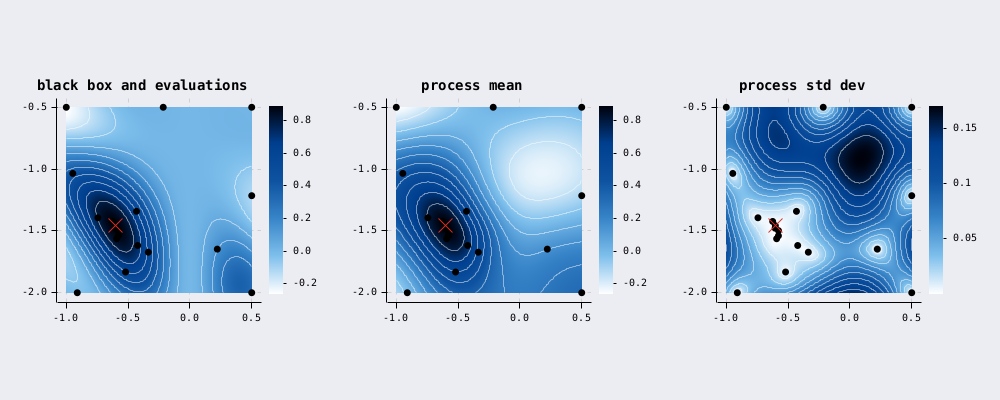
37.2 Time series
37.2.1 MA(2)
A moving-average series: each value mixes three consecutive Gaussian shocks.
Source: cljplot - MA(2).
(def ma2
(let [g (r/rng :mersenne 9)
e (vec (repeatedly 502 #(r/grandom g)))]
(mapv (fn [i] (+ (- (double (e (+ i 2)))) (* 0.8 (double (e (inc i)))) (* -0.9 (double (e i))))) (range 500))))(plot/render-image
{:data (map-indexed (fn [t y] {:t t :y y}) ma2) :mapping {:x :t :y :y}
:charts [(chart/line)]
:labels {:title "MA(2): -e(t) + 0.8 e(t-1) - 0.9 e(t-2)" :x "t" :y nil}}
{:width 800 :height 280})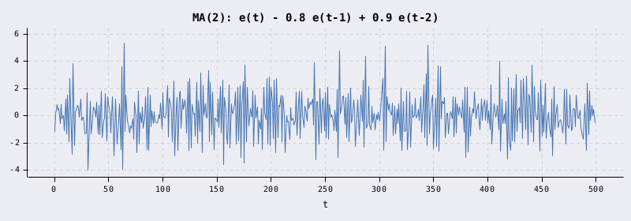
37.2.2 Lag plot
Each value against the one seven steps later: an AR(1) series with rare jumps.
Source: cljplot - lag.
(let [g (r/rng :mersenne 10)
ar (take 10000 (iterate #(+ (* 0.95 (double %)) (r/grandom g) (if (< (r/drandom g) 0.01) 10.0 0.0)) 0.0))]
(plot/render-image
{:data (series/lag-rows ar 7) :mapping {:x :x :y :y}
:charts [(chart/scatter {:size 3 :color [0 0 0 30]})]
:aspect :iso
:labels {:title "Lag 7 of an AR(1) series with jumps" :x "y(t)" :y "y(t+7)"}}
{:width 600 :height 600}))
37.2.3 ACF and PACF
The MA(2) series’ autocorrelations cut off after lag 2; its partial autocorrelations decay. Lags outside the band are red.
Source: cljplot - ACF / PACF.
(plot/render-image (plot/acf ma2 {:lags 50 :title "MA(2): ACF and PACF"}) {:width 800 :height 550})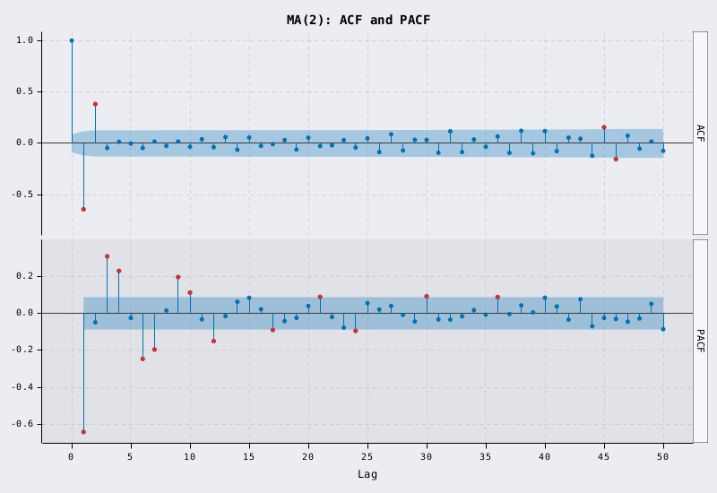
37.3 Functions and fields
(defn fn2d
[[x y]]
(let [x (double x) y (double y)]
(* (- (+ (* x x) (* y y))) (m/sin x) (m/sin y) (m/sin (* x y)))))(def fn2d-domain {:x [(- m/PI) m/PI] :y [(- m/PI) m/PI]})37.3.1 A function of two variables
Source: cljplot - function2d.
(plot/render-image
{:charts [(chart/field {:f fn2d :domain fn2d-domain :n 300})]
:aspect :iso
:labels {:title "-(x^2 + y^2) sin x sin y sin xy"}}
{:width 650 :height 600})
37.3.2 Its contours
Source: cljplot - contour2d.
(plot/render-image
{:charts [(chart/contour {:f fn2d :domain fn2d-domain :n 300 :fill true :levels 12})]
:aspect :iso
:labels {:title "Filled contours of the same function"}}
{:width 650 :height 600})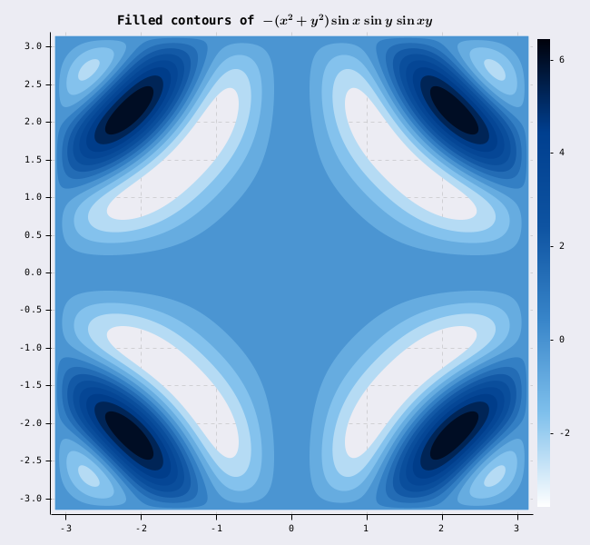
37.3.3 Value noise
Source: cljplot - value noise.
(plot/render-image
{:charts [(chart/field {:f (fn [[x y]] (r/vnoise x y)) :domain {:x [-6 6] :y [-6 6]} :n 400})]
:scales {:color {:range [:black :white]}}
:aspect :iso
:labels {:title "Value noise"}}
{:width 650 :height 600})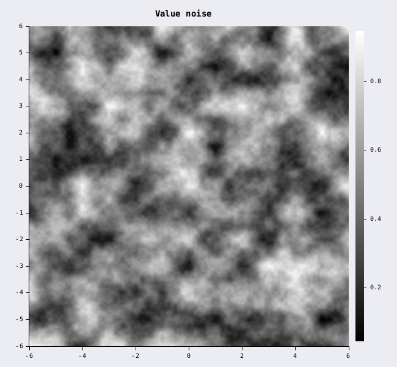
37.3.4 A complex function
Domain colouring: the hue is the argument of f(z), the brightness its magnitude wrapped into bands (:log2 - where |f| + 1 doubles), every pixel computed (:pixel-color).
Source: cljplot - complex.
(plot/render-image
{:charts [(chart/field {:pixel-color (field/domain-color (fn [z] (cx/div (cx/log z) (cx/sin z))))
:domain {:x [-6 6] :y [-6 6]}})]
:aspect :iso
:labels {:title "log(z) / sin(z)" :x "re" :y "im"}}
{:width 650 :height 600})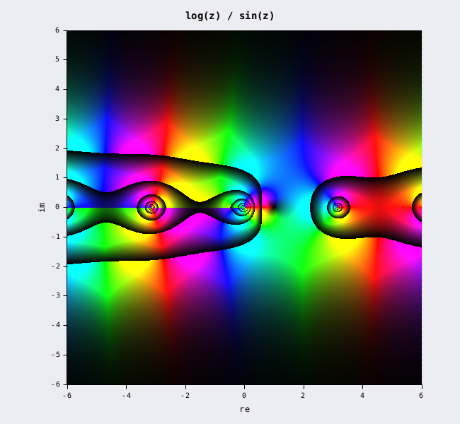
37.3.5 Field mapping
Uniform points pushed through a composition of fastmath fields (secant ∘ diamond ∘ power).
Source: cljplot - field.
(let [g (r/rng :mersenne 11)
field (f/combine {:type :operation :name :comp
:var1 {:type :operation :name :comp
:var1 {:type :variation :name :secant :amount 1.0 :config {}}
:var2 {:type :variation :name :diamond :amount 1.0 :config {}} :amount 1.0}
:var2 {:type :variation :name :power :amount 1.0 :config {}} :amount 1.0})]
(plot/render-image
{:data (vf/mapped-points field (repeatedly 200000 #(vector (r/drandom g -4 4) (r/drandom g -4 4))))
:mapping {:x :x :y :y}
:charts [(chart/scatter {:size 1 :color [20 40 90 25]})]
:labels {:title "Points mapped through secant . diamond . power"}}
{:width 650 :height 600}))
37.3.6 Vector field
Arrows of the hyperbolic field on a shifted grid, over the sine of its heading.
Source: cljplot - vector field.
(let [hyperbolic (f/field :hyperbolic)
heading (f/heading hyperbolic)
domain {:x [-3 3] :y [-3 3]}]
(plot/render-image
{:data (vf/arrows hyperbolic {:domain domain :n 24 :grid :shifted :scale 1.5})
:mapping {:x :x :y :y :xend :xend :yend :yend}
:charts [(chart/field {:f (fn [[x y]] (m/sin (heading (v/vec2 x y)))) :domain domain :n 300})
(chart/segment {:color [90 160 235] :width 1.5 :arrow {:end true :size 5}})]
:scales {:color {:range [:black :white] :title "sin heading"}
:x {:domain [-3 3] :expand [0 0]} :y {:domain [-3 3] :expand [0 0]}}
:aspect :iso
:labels {:title "Hyperbolic field"}}
{:width 650 :height 600}))
37.3.7 Traces
Points following the exponential field from 3000 random seeds; the traces run off to the right.
Source: cljplot - field trace.
(let [g (r/rng :mersenne 12)
seeds (repeatedly 3000 #(vector (r/drandom g -7 7) (r/drandom g -7 7)))]
(plot/render-image
{:data (vf/traces (f/field :exp) seeds {:steps 200 :step 0.01})
:mapping {:x :x :y :y}
:charts [(chart/scatter {:size 1 :color [20 70 140 20]})]
:scales {:x {:domain [-7 7] :nice false} :y {:domain [-7 7] :nice false}}
:labels {:title "Traces of the exponential field"}}
{:width 650 :height 600}))
37.4 Point density
37.4.1 Point cloud
600 000 Gaussian points as a binned density raster.
Source: cljplot - point cloud.
(let [g (r/rng :mersenne 13)]
(plot/render-image
{:data (repeatedly 600000 (fn [] {:x (r/grandom g) :y (r/grandom g)}))
:mapping {:x :x :y :y}
:charts [(chart/field {:binned? true :n 300})]
:scales {:color {:range [[10 10 40] [60 40 140] [220 90 120] [255 230 160]] :title "density"}}
:aspect :iso
:labels {:title "600 000 points"}}
{:width 650 :height 600}))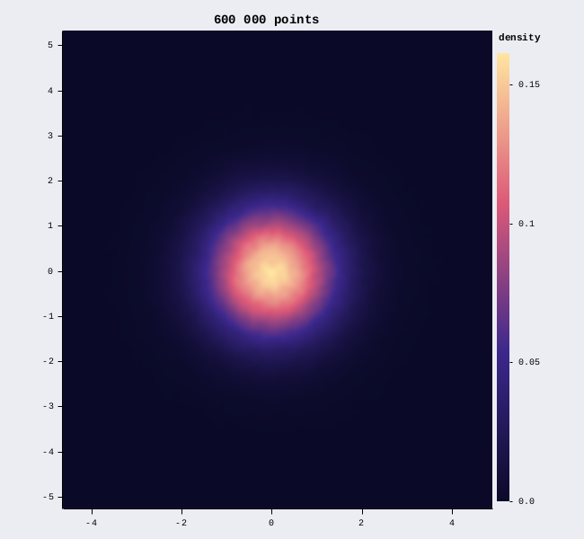
The same kind of cloud drawn by a chart/image callback: it gets the panel’s scales and size and returns an image - here 200 000 translucent pixels.
Source: cljplot2 - chart/image.
(plot/render-image
{:charts [(chart/image {:domain {:x [-4 4] :y [-4 4]}
:f (fn [{:keys [x-scale y-scale size]}]
(let [[w h] size
g (r/rng :mersenne 14)
canvas (c2d/canvas w h)]
(c2d/with-canvas [cv canvas]
(c2d/set-color cv 230 240 255 18)
(dotimes [_ 200000]
(let [x (r/grandom g) y (+ (* 0.6 x) (* 0.8 (r/grandom g)))]
(c2d/rect cv (x-scale x) (y-scale y) 1 1))))
canvas))})]
:theme {:panel {:fill [10 15 40]}}
:aspect :iso
:labels {:title "A correlated cloud drawn by a callback"}}
{:width 650 :height 600})
37.4.2 Hexbin
Two Gaussian clusters counted in flat-topped hexagons.
Source: cljplot - binned heatmap.
(let [g (r/rng :mersenne 15)]
(plot/render-image
{:data (repeatedly 10000 (fn [] (if (< (r/drandom g) 0.5)
{:x (r/grandom g) :y (r/grandom g)}
{:x (r/grandom g -10 1) :y (r/grandom g -10 1)})))
:mapping {:x :x :y :y}
:charts [(chart/bin2d {:cell :flat-hex :bins 30})]
:scales {:color {:range :prl-9}}
:aspect :iso
:labels {:title "Two clusters in hexagons"}}
{:width 650 :height 600}))
37.4.3 Density contours
Old Faithful: the 2D density at a wide and a narrow bandwidth as filled contour bands (nothing below the lowest level), with the eruptions over them.
Source: cljplot - contour. Data: Old Faithful geyser eruptions, R datasets package faithful (Härdle 1991; Azzalini & Bowman 1990); licence: Part of R (GPL-2 | GPL-3).
(let [faithful (nu/dataset :faithful)
panel (fn [bandwidth levels title]
{:data faithful :mapping {:x :waiting :y :eruptions}
:charts [(chart/contour {:bandwidth bandwidth :levels levels :fill true})
(chart/contour {:bandwidth bandwidth :levels levels :color [0 0 0 60]})
(chart/scatter {:size 4 :color [20 60 120 200]})]
:legend false
:labels {:title title :x "waiting time [min]" :y "eruption time [min]"}})]
(plot/render-image
(plot/arrange [(panel [6.0 0.5] 20 "wide bandwidth, 20 levels") (panel [2.0 0.15] 10 "narrow bandwidth, 10 levels")]
{:columns 2})
{:width 1000 :height 500}))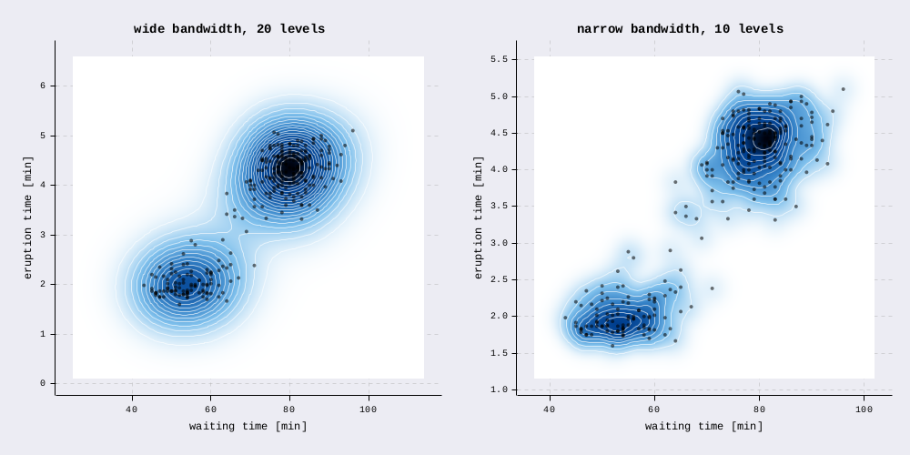
37.5 Lines and walks
37.5.1 Reference lines
Horizontal, vertical and sloped rules with dashes and widths, under a sine.
Source: cljplot - lines.
(plot/render-image
{:charts [(chart/rule {:y 0 :color :black})
(chart/rule {:y [1 -1]})
(chart/rule {:x m/HALF_PI :dash [10 10] :width 5})
(chart/rule {:x (* 0.75 m/TWO_PI) :dash [10 10] :width 5 :color [128 0 0 100]})
(chart/rule {:slope (/ 1.0 (* 0.75 m/TWO_PI)) :intercept -1 :dash [1 2 5 2] :width 3})
(chart/function {:f m/sin :domain [0 m/TWO_PI]})]
:labels {:title "Rules and a sine"}}
{:width 900 :height 320})
37.5.2 Wrapped random walk
A drifting 2D walk on a torus: leaving the square on one side, it comes back on the other. A row with a NaN y breaks the line at every wrap; :sort false keeps the walk’s order.
Source: cljplot - wrapped random walk.
(defn- wrap-coordinate
"`v` wrapped into [-200, 200)."
^double [^double v]
(- (m/mod (+ v 200.0) 400.0) 200.0))#'galleries.cljplot-extras/wrap-coordinate(let [g (r/rng :mersenne 16)
walk (take 3000 (iterate (fn [[x y]] [(+ (double x) 2.0 (r/grandom g 0.0 2.0)) (+ (double y) 0.5 (r/grandom g 0.0 2.0))])
[0.0 0.0]))
wrapped (map (fn [[x y]] [(wrap-coordinate x) (wrap-coordinate y)]) walk)
rows (mapcat (fn [[[x0 y0] [x1 y1]]]
(if (or (> (m/abs (- (double x1) (double x0))) 200.0) (> (m/abs (- (double y1) (double y0))) 200.0))
[{:x x0 :y y0} {:x x0 :y ##NaN}]
[{:x x0 :y y0}]))
(partition 2 1 wrapped))]
(plot/render-image
{:data rows :mapping {:x :x :y :y}
:charts [(chart/line {:sort false :color [0 50 255 150]})]
:scales {:x {:domain [-200 200]} :y {:domain [-200 200]}}
:aspect :iso
:labels {:title "A random walk on a torus"}}
{:width 650 :height 600}))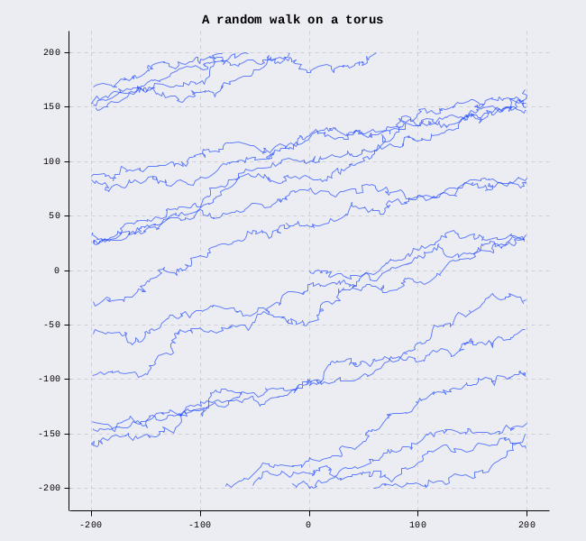
37.6 Composite
37.6.1 Stacked strips
One sample, many views on a shared x: jittered points, a rug, a box, a histogram and the extent (mean and range) above a violin, a density and a fine histogram below.
Source: cljplot - strips.
(let [g (r/rng :mersenne 17)
rows (vec (repeatedly 2000 (fn [] {:v (let [u (r/drandom g)]
(cond (< u 0.5) (r/grandom g)
(< u 0.65) (r/grandom g -10 2)
:else (r/grandom g 10 2)))})))
strip (fn [charts] {:data rows :mapping {:x :v} :charts charts :scales {:x {:domain [-20 20]}} :labels {:x nil :y nil}})]
(plot/render-image
(plot/arrange [(strip [(chart/stripplot {:size 6 :color [215 48 39 30] :rng (r/rng :mersenne 18)})])
(strip [(chart/rug)])
(strip [(chart/box)])
(strip [(chart/histogram {:bins 100 :y :count})])
(strip [(chart/extent {:method stats/extent :color :black})])
(strip [(chart/violin)])
(strip [(chart/density {:fill :color})])
(strip [(chart/histogram {:bins 150})])]
{:columns 1 :heights [1 1 1 1 1 3 1.5 1.5]})
{:width 800 :height 800}))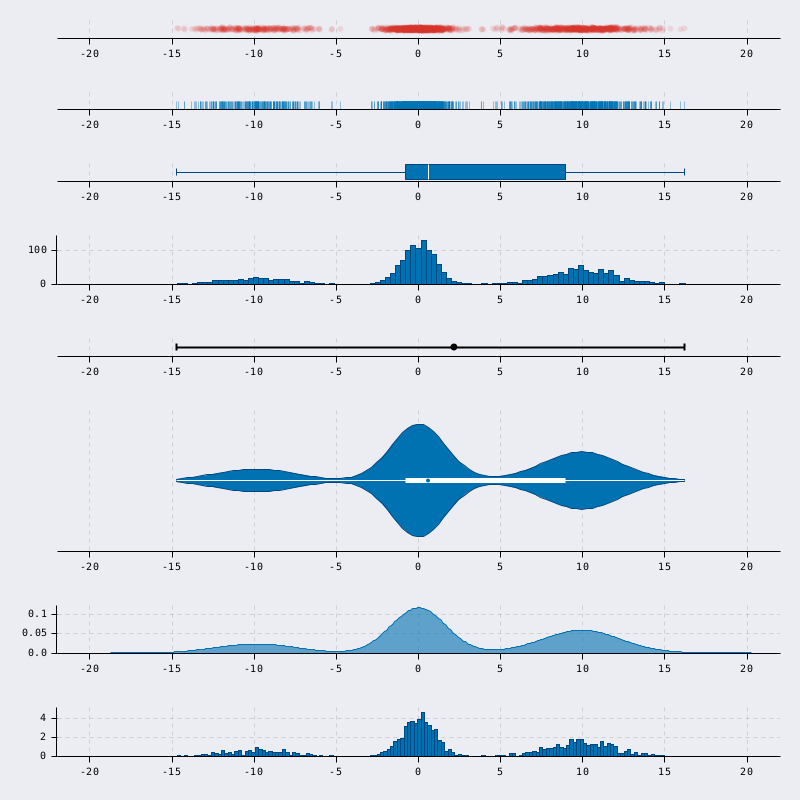
37.6.2 Bubble chart
Seattle’s days: maximal against minimal temperature, coloured by wind, sized (by area) by precipitation.
Source: cljplot - bubble. Data: Seattle daily weather 2012-2015, vega-datasets seattle-weather.csv (NOAA daily observations); licence: vega-datasets is BSD-3-Clause; NOAA data, public domain.
| date | precipitation | temp_max | temp_min | wind | weather |
|---|---|---|---|---|---|
| 2012/01/01 | 0.0 | 12.8 | 5.0 | 4.7 | drizzle |
| 2012/01/02 | 10.9 | 10.6 | 2.8 | 4.5 | rain |
| 2012/01/03 | 0.8 | 11.7 | 7.2 | 2.3 | rain |
| 2012/01/04 | 20.3 | 12.2 | 5.6 | 4.7 | rain |
| 2012/01/05 | 1.3 | 8.9 | 2.8 | 6.1 | rain |
| 2012/01/06 | 2.5 | 4.4 | 2.2 | 2.2 | rain |
| 2012/01/07 | 0.0 | 7.2 | 2.8 | 2.3 | rain |
| 2012/01/08 | 0.0 | 10.0 | 2.8 | 2.0 | sun |
| 2012/01/09 | 4.3 | 9.4 | 5.0 | 3.4 | rain |
| 2012/01/10 | 1.0 | 6.1 | 0.6 | 3.4 | rain |
| 2012/01/11 | 0.0 | 6.1 | -1.1 | 5.1 | sun |
| 2012/01/12 | 0.0 | 6.1 | -1.7 | 1.9 | sun |
| 2012/01/13 | 0.0 | 5.0 | -2.8 | 1.3 | sun |
| 2012/01/14 | 4.1 | 4.4 | 0.6 | 5.3 | snow |
| 2012/01/15 | 5.3 | 1.1 | -3.3 | 3.2 | snow |
| 2012/01/16 | 2.5 | 1.7 | -2.8 | 5.0 | snow |
| 2012/01/17 | 8.1 | 3.3 | 0.0 | 5.6 | snow |
| 2012/01/18 | 19.8 | 0.0 | -2.8 | 5.0 | snow |
| 2012/01/19 | 15.2 | -1.1 | -2.8 | 1.6 | snow |
| 2012/01/20 | 13.5 | 7.2 | -1.1 | 2.3 | snow |
| 2012/01/21 | 3.0 | 8.3 | 3.3 | 8.2 | rain |
| 2012/01/22 | 6.1 | 6.7 | 2.2 | 4.8 | rain |
| 2012/01/23 | 0.0 | 8.3 | 1.1 | 3.6 | rain |
| 2012/01/24 | 8.6 | 10.0 | 2.2 | 5.1 | rain |
| 2012/01/25 | 8.1 | 8.9 | 4.4 | 5.4 | rain |
| 2012/01/26 | 4.8 | 8.9 | 1.1 | 4.8 | rain |
| 2012/01/27 | 0.0 | 6.7 | -2.2 | 1.4 | drizzle |
| 2012/01/28 | 0.0 | 6.7 | 0.6 | 2.2 | rain |
| 2012/01/29 | 27.7 | 9.4 | 3.9 | 4.5 | rain |
| 2012/01/30 | 3.6 | 8.3 | 6.1 | 5.1 | rain |
| 2012/01/31 | 1.8 | 9.4 | 6.1 | 3.9 | rain |
| 2012/02/01 | 13.5 | 8.9 | 3.3 | 2.7 | rain |
| 2012/02/02 | 0.0 | 8.3 | 1.7 | 2.6 | sun |
| 2012/02/03 | 0.0 | 14.4 | 2.2 | 5.3 | sun |
| 2012/02/04 | 0.0 | 15.6 | 5.0 | 4.3 | sun |
| 2012/02/05 | 0.0 | 13.9 | 1.7 | 2.9 | sun |
| 2012/02/06 | 0.0 | 16.1 | 1.7 | 5.0 | sun |
| 2012/02/07 | 0.3 | 15.6 | 7.8 | 5.3 | rain |
| 2012/02/08 | 2.8 | 10.0 | 5.0 | 2.7 | rain |
| 2012/02/09 | 2.5 | 11.1 | 7.8 | 2.4 | rain |
| 2012/02/10 | 2.5 | 12.8 | 6.7 | 3.0 | rain |
| 2012/02/11 | 0.8 | 8.9 | 5.6 | 3.4 | rain |
| 2012/02/12 | 1.0 | 8.3 | 5.0 | 1.3 | rain |
| 2012/02/13 | 11.4 | 7.2 | 4.4 | 1.4 | rain |
| 2012/02/14 | 2.5 | 6.7 | 1.1 | 3.1 | rain |
| 2012/02/15 | 0.0 | 7.2 | 0.6 | 1.8 | drizzle |
| 2012/02/16 | 1.8 | 7.2 | 3.3 | 2.1 | rain |
| 2012/02/17 | 17.3 | 10.0 | 4.4 | 3.4 | rain |
| 2012/02/18 | 6.4 | 6.7 | 3.9 | 8.1 | rain |
| 2012/02/19 | 0.0 | 6.7 | 2.2 | 4.7 | sun |
| 2012/02/20 | 3.0 | 7.8 | 1.7 | 2.9 | rain |
| 2012/02/21 | 0.8 | 10.0 | 7.8 | 7.5 | rain |
| 2012/02/22 | 8.6 | 10.0 | 2.8 | 5.9 | rain |
| 2012/02/23 | 0.0 | 8.3 | 2.8 | 3.9 | sun |
| 2012/02/24 | 11.4 | 6.7 | 4.4 | 3.5 | rain |
| 2012/02/25 | 0.0 | 7.2 | 2.8 | 6.4 | rain |
| 2012/02/26 | 1.3 | 5.0 | -1.1 | 3.4 | snow |
| 2012/02/27 | 0.0 | 6.7 | -2.2 | 3.0 | sun |
| 2012/02/28 | 3.6 | 6.7 | -0.6 | 4.2 | snow |
| 2012/02/29 | 0.8 | 5.0 | 1.1 | 7.0 | snow |
| 2012/03/01 | 0.0 | 6.1 | 1.1 | 3.1 | sun |
| 2012/03/02 | 2.0 | 6.7 | 3.9 | 5.1 | rain |
| 2012/03/03 | 0.0 | 12.2 | 6.7 | 7.0 | sun |
| 2012/03/04 | 0.0 | 10.6 | 6.7 | 5.6 | rain |
| 2012/03/05 | 6.9 | 7.8 | 1.1 | 6.2 | rain |
| 2012/03/06 | 0.5 | 6.7 | 0.0 | 2.7 | snow |
| 2012/03/07 | 0.0 | 8.9 | -1.7 | 2.7 | sun |
| 2012/03/08 | 0.0 | 15.6 | 0.6 | 2.5 | sun |
| 2012/03/09 | 3.6 | 9.4 | 5.0 | 2.8 | rain |
| 2012/03/10 | 10.4 | 7.2 | 6.1 | 3.4 | rain |
| 2012/03/11 | 13.7 | 6.7 | 2.8 | 5.8 | rain |
| 2012/03/12 | 19.3 | 8.3 | 0.6 | 6.2 | snow |
| 2012/03/13 | 9.4 | 5.6 | 0.6 | 5.3 | snow |
| 2012/03/14 | 8.6 | 7.8 | 1.1 | 4.7 | rain |
| 2012/03/15 | 23.9 | 11.1 | 5.6 | 5.8 | snow |
| 2012/03/16 | 8.4 | 8.9 | 3.9 | 5.1 | rain |
| 2012/03/17 | 9.4 | 10.0 | 0.6 | 3.8 | snow |
| 2012/03/18 | 3.6 | 5.0 | -0.6 | 2.7 | rain |
| 2012/03/19 | 2.0 | 7.2 | -1.1 | 3.0 | rain |
| 2012/03/20 | 3.6 | 7.8 | 2.2 | 6.4 | rain |
| 2012/03/21 | 1.3 | 8.9 | 1.1 | 2.5 | rain |
| 2012/03/22 | 4.1 | 10.0 | 1.7 | 2.1 | rain |
| 2012/03/23 | 0.0 | 12.2 | 0.6 | 2.8 | sun |
| 2012/03/24 | 0.0 | 15.0 | 3.3 | 5.2 | sun |
| 2012/03/25 | 0.0 | 13.3 | 2.2 | 2.7 | rain |
| 2012/03/26 | 0.0 | 12.8 | 6.1 | 4.3 | drizzle |
| 2012/03/27 | 4.8 | 14.4 | 6.7 | 3.8 | rain |
| 2012/03/28 | 1.3 | 10.6 | 7.2 | 5.9 | rain |
| 2012/03/29 | 27.4 | 10.0 | 6.1 | 4.4 | rain |
| 2012/03/30 | 5.6 | 9.4 | 5.0 | 4.7 | rain |
| 2012/03/31 | 13.2 | 10.0 | 2.8 | 3.4 | rain |
| 2012/04/01 | 1.5 | 8.9 | 4.4 | 6.8 | rain |
| 2012/04/02 | 0.0 | 16.7 | 4.4 | 3.1 | sun |
| 2012/04/03 | 1.5 | 11.7 | 3.3 | 3.1 | rain |
| 2012/04/04 | 0.0 | 10.6 | 2.8 | 2.1 | sun |
| 2012/04/05 | 4.6 | 9.4 | 2.8 | 1.8 | snow |
| 2012/04/06 | 0.3 | 11.1 | 3.3 | 2.6 | rain |
| 2012/04/07 | 0.0 | 16.1 | 1.7 | 4.3 | sun |
| 2012/04/08 | 0.0 | 21.1 | 7.2 | 4.1 | sun |
| 2012/04/09 | 0.0 | 20.0 | 6.1 | 2.1 | sun |
| … | … | … | … | … | … |
(plot/render-image
{:data (nu/dataset :seattle-weather)
:mapping {:x :temp_min :y :temp_max :color :wind :size :precipitation}
:charts [(chart/scatter {:stroke-color :none})]
:scales {:color {:range (mapv #(c/set-alpha (c/darken (c/color %)) 200) (c/palette :gnbu-9)) :title "wind [m/s]"}
:size {:range [2 40] :area true :title "precipitation [mm]"}}
:labels {:title "Seattle weather 2012-2015" :x "minimal temperature [°C]" :y "maximal temperature [°C]"}}
{:width 750 :height 600})
37.6.3 Heatmap matrices
Random values in a 40 x 40 matrix, and a 15 x 15 one with every cell’s value written in it.
Source: cljplot - heatmap matrix.
(let [g (r/rng :mersenne 19)
matrix (fn [n] (vec (for [x (range n) y (range n)] {:x x :y y :value (r/drandom g x (inc y))})))]
(plot/render-image
(plot/arrange [{:data (matrix 40) :mapping {:x :x :y :y :color :value}
:charts [(chart/tile)]
:legend false
:labels {:title "40 x 40" :x "X" :y "Y"}}
{:data (matrix 15) :mapping {:x :x :y :y :color :value}
:charts [(chart/tile {:value-label (fn [{:keys [value]}] (format "%.1f" (double value)))})]
:scales {:color {:range [:yellow :red]}}
:legend false
:labels {:title "15 x 15, annotated" :x "X" :y "Y"}}]
{:columns 2})
{:width 1000 :height 520}))
37.6.4 Kernels
Six fastmath kernels as functions of the distance from 0, at full and half scale.
Source: cljplot - kernels (unsaved sketch).
(def kernels [:gaussian :periodic :cauchy :rational-quadratic :matern-12 :matern-52])(plot/render-image
(plot/arrange (for [kernel kernels
:let [f (k/kernel kernel)]]
{:charts [(chart/function {:f {"full" (fn [x] (f [0.0] [x])) "half" (fn [x] (* 0.5 (double (f [0.0] [x]))))}
:domain [-3 3] :width 2 :mapping {:color :function}})]
:scales {:color {:range [[69 117 180] [215 50 40]]}}
:legend false
:labels {:title (name kernel)}})
{:columns 3})
{:width 900 :height 550})
37.6.5 Covariance matrices
The same kernels’ covariance between every pair of points of [-1, 1].
Source: cljplot - covariance matrices (unsaved sketch).
(plot/render-image
{:data (vec (for [kernel kernels
:let [f (k/kernel kernel) points (m/slice-range -1.0 1.0 40)]
x points y points]
{:kernel (name kernel) :x x :y y :value (f [x] [y])}))
:mapping {:x :x :y :y :color :value :facet :kernel}
:charts [(chart/tile)]
:scales {:facet {:domain (mapv name kernels)}}
:aspect :iso
:labels {:title "Covariance matrices" :x nil :y nil}}
{:width 900 :height 650})
37.6.6 Lollipops
Frequencies of two small samples as lollipops, and a fine histogram as lollipops under its density.
Source: cljplot - frequencies and histogram lollipops (unsaved sketches).
(let [frequencies-rows (fn [sample label offset]
(map (fn [[value n]] {:value (+ (double value) (double offset)) :n n :sample label})
(frequencies sample)))
g (r/rng :mersenne 20)
sample (vec (repeatedly 1300 #(r/grandom g)))
bins (map (fn [{:keys [mid probability step]}] {:x mid :y (/ (double probability) (double step))})
(:bins-maps (stats/histogram sample 130)))]
(plot/render-image
(plot/arrange [{:data (concat (frequencies-rows [1 2 2 3 1 12 2] "a" -0.12)
(frequencies-rows [3 4 5 4 5 4 3 2 3 4 11 12] "b" 0.12))
:mapping {:x :value :y :n :color :sample}
:charts [(chart/segment {:yend 0}) (chart/scatter {:size 8})]
:labels {:title "frequencies" :x "value" :y "count"}}
{:data bins :mapping {:x :x :y :y}
:charts [(chart/segment {:yend 0 :color [69 117 180 160]}) (chart/scatter {:size 3})
(chart/density {:data (map (fn [v] {:x v}) sample) :mapping {:y nil} :bandwidth 0.04
:fill [215 48 39 80] :color [215 48 39 160]})]
:labels {:title "histogram lollipops and a density" :x nil :y "density"}}]
{:columns 2})
{:width 1000 :height 420}))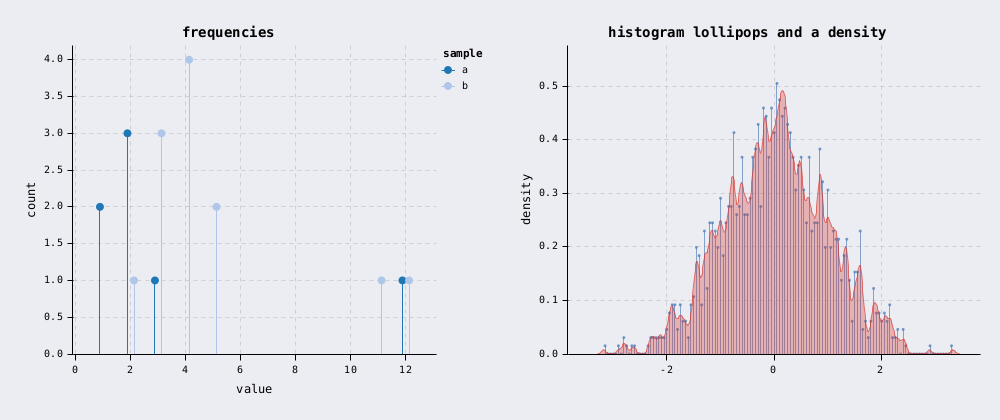
37.6.7 Logo
The cljplot2 logo, after the old one: 2500 random pixels of the word, jittered, coloured along x, of random sizes, with density margins. (The same recipe writes img/logo.png in the logo demo - keep the two in sync.)
Source: cljplot - logo.
(let [text-width 250 text-height 85
logo-font (with-open [in (io/input-stream (io/file "dev/resources/logo/Comfortaa-Bold.ttf"))]
(Font/createFont Font/TRUETYPE_FONT in))
pixels (p/to-pixels (c2d/with-canvas-> (c2d/canvas text-width text-height)
(c2d/set-background :black)
(c2d/set-color :white)
(c2d/set-font (font/resolve-font logo-font :plain 56))
(c2d/text "cljplot2" 4 62)))
g (r/rng :mersenne 2)
points (->> (repeatedly #(vector (r/irandom g text-width) (r/irandom g text-height)))
(filter (fn [[x y]] (pos? (double (c/luma (p/get-color pixels x y))))))
(take 2500)
(mapv (fn [[x y]] {:x (+ (double x) (r/grandom g))
:y (+ (double (- text-height (long y))) (r/grandom g))
:size (* 10.0 (m/pow (r/drandom g 0.1 1.0) 3.0))})))
margin-density (chart/density {:fill [60 60 130 170] :color [40 40 100] :mapping {:color nil :size nil}})]
(plot/render-image
{:data points
:mapping {:x :x :y :y :color :x :size :size}
:charts [(chart/scatter {:stroke-color :none})]
:scales {:color {:range (mapv #(c/set-alpha (c/color %) 110) [[30 50 140] [120 50 160] [200 40 90] [230 110 20]])
:legend false}
:size {:range [0.5 10] :area true :legend false}}
:margins {:top {:charts margin-density :size 22} :right {:charts margin-density :size 22}}
:labels {:x "cljplot2 - functional plotting library" :y nil}}
{:width 600 :height 300}))
37.7 Basic charts
The showcase images of the old README, with synthetic data: a skewed sample (skewed, most values 2-8, a tail to 20) and a long-tailed one (tailed, 0 to about 55).
(def skewed
(let [g (r/rng :mersenne 21)]
(vec (repeatedly 2000 (fn [] {:v (+ 1.5 (m/exp (r/grandom g 1.0 0.45)))})))))| v |
|---|
| 2.6187427512653687 |
| 4.770335216701122 |
| 4.383016312094808 |
| 3.7264756459433834 |
| 5.573138902154048 |
| 4.260410834698147 |
| 3.9242481855428655 |
| 4.049291736874033 |
| 4.454353308150173 |
| 3.987425729089265 |
| 4.606664560638659 |
| 6.1108429942604525 |
| 5.071342073114295 |
| 3.607949993746273 |
| 2.8246873201799554 |
| 3.1683944610386465 |
| 3.903441813181602 |
| 5.545383610096264 |
| 4.915847944047103 |
| 4.00967045165709 |
| 4.327558772700588 |
| 4.157166931840113 |
| 3.9995885862581098 |
| 3.192131522656952 |
| 4.165657176344659 |
| 3.4253728454771064 |
| 4.91979151554683 |
| 6.755294400432137 |
| 3.664668239425629 |
| 3.8691085809131325 |
| 5.085697131845032 |
| 6.3451632613815505 |
| 4.39018993496312 |
| 5.015778902655205 |
| 3.026152826652112 |
| 4.65752927512809 |
| 4.633909418660442 |
| 6.779475883760473 |
| 5.15215828557877 |
| 3.187315774655671 |
| 2.7730837962219814 |
| 3.1154842403072367 |
| 2.5880362626517326 |
| 3.648346525603765 |
| 4.081499018970819 |
| 4.376923445387221 |
| 2.7601004422579773 |
| 5.2423332648498855 |
| 5.105473152220705 |
| 6.794768823033508 |
| 7.317102220059728 |
| 4.022267020664291 |
| 6.485330479158099 |
| 4.0717511479630675 |
| 5.274238851396298 |
| 4.71159775350523 |
| 3.648415422950733 |
| 6.777659447454385 |
| 4.690329052171448 |
| 7.444379331863745 |
| 10.19620499073727 |
| 3.3427231070092116 |
| 4.667937661148566 |
| 3.2378304608575608 |
| 4.249420808301458 |
| 3.358133922678334 |
| 4.026268045570317 |
| 3.2533056805467213 |
| 4.427558429164491 |
| 4.03967675925379 |
| 4.780111742511482 |
| 2.6298904898978757 |
| 3.252559415005001 |
| 7.4666972084096574 |
| 4.202347211243056 |
| 2.746757623796846 |
| 2.631046775033664 |
| 5.531336513363884 |
| 4.861376705670365 |
| 3.6408409838226623 |
| 3.4208080640587353 |
| 4.210647488454734 |
| 5.0219180984651395 |
| 5.803816335749179 |
| 4.169718897191404 |
| 3.030462828952481 |
| 3.350643888113542 |
| 5.032550327745643 |
| 2.9657150980367 |
| 7.4483399073399035 |
| 4.27944373435495 |
| 4.7921690712034 |
| 5.335070131660403 |
| 5.174167289715944 |
| 3.1582349220852093 |
| 3.467828921335939 |
| 6.288182962666064 |
| 6.554519588869179 |
| 4.139435734846243 |
| 6.595485366754334 |
| … |
(def tailed
(let [d (r/distribution :gamma {:shape 1.2 :scale 8.0 :rng (r/rng :mersenne 22)})]
(vec (repeatedly 150 (fn [] {:v (r/sample d)})))))| v |
|---|
| 2.3259058149603153 |
| 6.107999621556243 |
| 14.348728438851253 |
| 6.243774953526939 |
| 2.3434746144661918 |
| 15.691275955187033 |
| 24.317736220989282 |
| 14.11050142341623 |
| 0.5950930981427095 |
| 17.83079498718058 |
| 7.766002992878886 |
| 4.456150937277548 |
| 11.589475931144657 |
| 10.97202347210491 |
| 11.214636026376386 |
| 18.479092873261017 |
| 18.54183087093114 |
| 4.9987083887693275 |
| 13.53877413557138 |
| 8.395329043534671 |
| 13.871416672330481 |
| 3.172586097592122 |
| 3.694314546173982 |
| 15.302049283350437 |
| 5.080015442587042 |
| 7.379582245752131 |
| 6.431816449564383 |
| 9.869755971241297 |
| 17.418897323019262 |
| 8.785500997863561 |
| 1.2777198319932563 |
| 9.42485525413359 |
| 15.407767642006862 |
| 2.0998964296327878 |
| 2.0163969784976667 |
| 8.820075958612573 |
| 10.823693298502034 |
| 2.9137907105085374 |
| 3.1276327721874675 |
| 9.834124908028608 |
| 19.781787156487038 |
| 0.11085447896976171 |
| 0.08985228048535873 |
| 2.9316914423290616 |
| 14.555682479125743 |
| 2.344412843650812 |
| 6.489142336510421 |
| 30.675113171147327 |
| 16.747781873376773 |
| 4.968261278615762 |
| 4.2636949263640584 |
| 0.7450577018213295 |
| 3.6917609323276483 |
| 9.502473042476074 |
| 7.268460233301192 |
| 4.404707075099305 |
| 17.14548920692468 |
| 0.503551762494342 |
| 11.440649665853206 |
| 9.12884235231534 |
| 4.283433254458716 |
| 10.130325495819768 |
| 15.834243241533878 |
| 13.954068417310523 |
| 20.34992593875816 |
| 7.234099428330089 |
| 6.372230483172341 |
| 12.106239759427078 |
| 9.661475527608436 |
| 15.269790402251628 |
| 3.1849244237023764 |
| 4.156188383762692 |
| 7.406382092459517 |
| 3.6145072876248805 |
| 10.023701077709346 |
| 12.054162785966465 |
| 17.244534039556022 |
| 2.7845312609913297 |
| 3.4101720841096625 |
| 9.682016471503616 |
| 19.416688973517793 |
| 8.468683157039198 |
| 10.386760106154744 |
| 1.9115255230283947 |
| 4.0910217726875135 |
| 5.882999246259338 |
| 4.459099657762161 |
| 8.75315258056676 |
| 35.439022642246165 |
| 0.8274643100449697 |
| 7.441917410882837 |
| 8.364284135761842 |
| 6.901934685994639 |
| 9.426784911631563 |
| 5.934207355186857 |
| 9.299220095280516 |
| 0.8785571033545913 |
| 46.35659272079329 |
| 4.3646497219528 |
| 47.51842387286859 |
| … |
37.7.1 One-dimensional charts
An interval, a box with points, a density line, extents (minimum - mean - maximum), a rug and strips of points.
Source: cljplot showcase - bar, box, density-line, min-max-mean, rug, strip, strip-distorted (1, 2, 3, 4, 5, 6, 7).


(let [strip (fn [title data charts] {:data data :mapping {:x :v} :charts charts :labels {:title title :x nil :y nil}})
halves [{:v -20.0} {:v 10.0}]]
(plot/render-image
(plot/arrange [(strip "interval" halves [(chart/extent {:method :min-max :center :none :line-width 22})])
(strip "box with points" tailed [(chart/box {:outliers true}) (chart/stripplot {:size 6 :rng (r/rng :mersenne 23)})])
(strip "density" skewed [(chart/density)])
(strip "min - mean - max" tailed [(chart/extent {:method stats/extent :shape \V :size 12})
(chart/rug {:color [69 117 180 160]})])
(strip "rug" tailed [(chart/rug {:thickness 16})])
(strip "distorted strip" tailed [(chart/stripplot {:size 9 :color [69 117 180 60] :rng (r/rng :mersenne 24)})])
(strip "strip" tailed [(chart/stripplot {:size 9 :jitter 0.0 :color [69 117 180 90]})])]
{:columns 1})
{:width 800 :height 800}))
37.7.2 Distributions
A filled density, a violin with its box, a mirrored histogram of two samples and a histogram in percent.
Source: cljplot showcase - density, violin, histogram, histogram-percents (1, 2, 3, 4).


(let [g (r/rng :mersenne 25)
two (vec (concat (map #(assoc % :sample "a") skewed)
(repeatedly 2000 (fn [] {:v (+ 1.5 (m/exp (r/grandom g 1.1 0.35))) :sample "b"}))))]
(plot/render-image
(plot/arrange [{:data skewed :mapping {:x :v} :charts [(chart/density {:fill :color})] :labels {:title "density" :x nil}}
{:data skewed :mapping {:x :v} :charts [(chart/violin {:inner :box})] :labels {:title "violin" :x nil :y nil}}
{:data two :mapping {:x :v :color :sample} :charts [(chart/histogram {:position :mirror :bins 60})]
:labels {:title "mirrored histogram" :x nil}}
{:data skewed :mapping {:x :v} :charts [(chart/histogram {:bins 60 :y :percent})]
:labels {:title "histogram, percent" :x nil}}]
{:columns 2})
{:width 1000 :height 600}))
37.7.3 Lollipop histogram
Bin counts as lollipops, the sample as a strip on top.
Source: cljplot showcase - lollipops2.

(plot/render-image
{:data (map (fn [{:keys [mid count]}] {:x mid :y count}) (:bins-maps (stats/histogram (map :v skewed) 60)))
:mapping {:x :x :y :y}
:charts [(chart/segment {:yend 0}) (chart/scatter {:size 5})]
:margins {:top {:charts (chart/stripplot {:data skewed :mapping {:x :v} :size 5 :color [69 117 180 60]
:rng (r/rng :mersenne 26)})
:size 30}}
:labels {:title "Lollipop histogram" :x nil :y "count"}}
{:width 900 :height 550})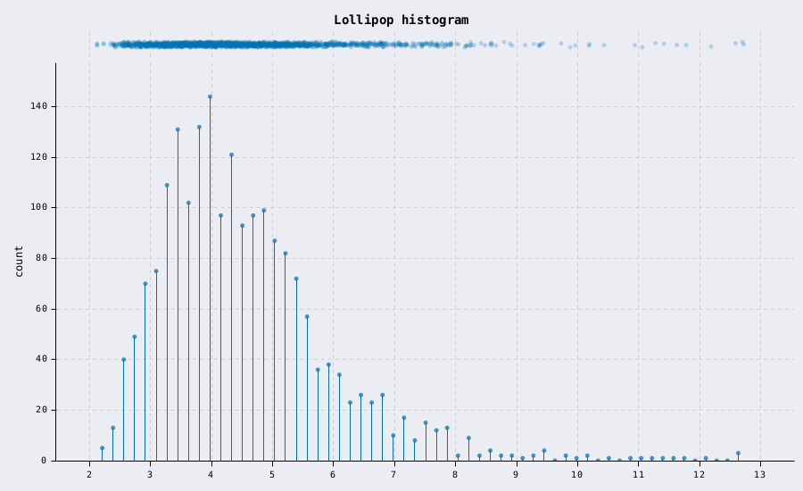
37.7.4 Bars
Two groups per category, side by side, negative values to the left.
Source: cljplot showcase - bars.

(plot/render-image
{:data [{:c "a" :g "1" :v -21} {:c "a" :g "2" :v -3.8} {:c "b" :g "1" :v -2.1} {:c "b" :g "2" :v 18}
{:c "c" :g "1" :v 33} {:c "c" :g "2" :v 22} {:c "d" :g "1" :v 11} {:c "d" :g "2" :v 22}]
:mapping {:x :v :y :c :color :g}
:charts [(chart/bar {:position :dodge})]
:labels {:title "Dodged bars" :x nil :y nil}}
{:width 800 :height 550})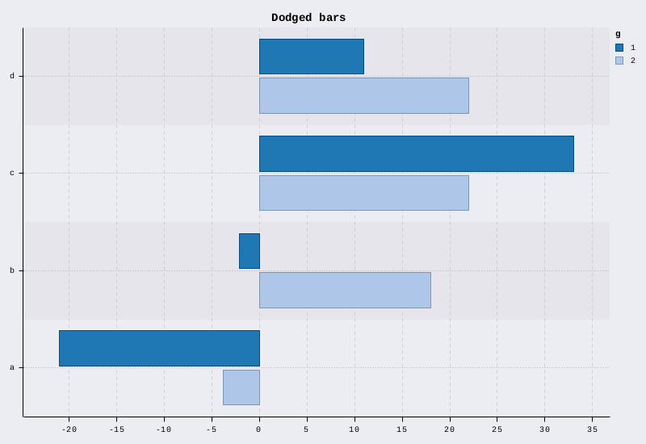
37.7.5 Connected scatter
Twenty points joined in their order by a smooth parametric curve, sized by a value.
Source: cljplot showcase - connected.

(let [g (r/rng :mersenne 27)
rows (vec (repeatedly 20 (fn [] {:x (r/drandom g 6 17) :y (r/drandom g 0 8) :s (r/drandom g)})))]
(plot/render-image
{:data rows :mapping {:x :x :y :y}
:charts [(chart/line {:sort false :curve :parametric :color [69 117 180]})
(chart/scatter {:mapping {:size :s} :color [150 30 30]})]
:scales {:size {:range [4 22] :legend false}}
:labels {:title "Connected scatter"}}
{:width 800 :height 600}))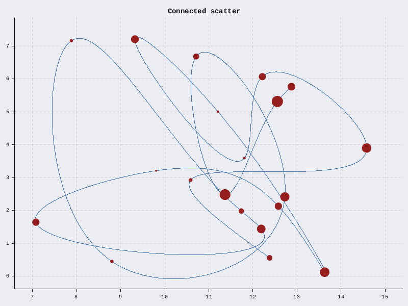
37.7.6 Dense scatter
5000 points of two bounded, correlated variables with quantised values (the original’s data, Kaggle columns cont4 / cont8, aren’t available): bands show the quantisation.
Source: cljplot showcase - cont4_cont8.

(let [g (r/rng :mersenne 28)
quantise (fn [v steps] (/ (m/round (* (double v) steps)) steps))]
(plot/render-image
{:data (repeatedly 5000 (fn [] (let [u (r/drandom g)
x (m/constrain (+ 0.2 (* 0.75 u) (r/grandom g 0.0 0.12)) 0.18 0.97)
y (m/constrain (+ 0.25 (* 0.6 u) (r/grandom g 0.0 0.15)) 0.25 0.98)]
{:x (quantise x 150) :y (quantise y 90)})))
:mapping {:x :x :y :y}
:charts [(chart/scatter {:size 5 :color [40 80 160 120]})]
:labels {:title "Two quantised variables" :x "cont4" :y "cont8"}}
{:width 600 :height 600}))
37.7.7 Noise curves
Three curves of value noise.
Source: cljplot showcase - functions.

(plot/render-image
{:charts [(chart/function {:f {"a" (fn [x] (r/vnoise (* 3.0 (double x)) 0.5))
"b" (fn [x] (r/vnoise (* 3.0 (double x)) 10.5))
"c" (fn [x] (r/vnoise (* 3.0 (double x)) 20.5))}
:domain [-4 4] :mapping {:color :function}})]
:labels {:title "Value noise curves"}}
{:width 1000 :height 320})
37.7.8 Line with a spline
A random series, its points and a cubic spline through them.
Source: cljplot showcase - line.

(let [g (r/rng :mersenne 29)
rows (map-indexed (fn [i y] {:x i :y y}) (reductions + 10.0 (repeatedly 99 #(r/grandom g 0 1.5))))]
(plot/render-image
{:data rows :mapping {:x :x :y :y}
:charts [(chart/line {:interpolator :cubic :color [200 40 120] :width 1.5})
(chart/line {:color [69 117 180 150]})
(chart/scatter {:size 4})]
:labels {:title "A line, its points and a spline"}}
{:width 800 :height 600}))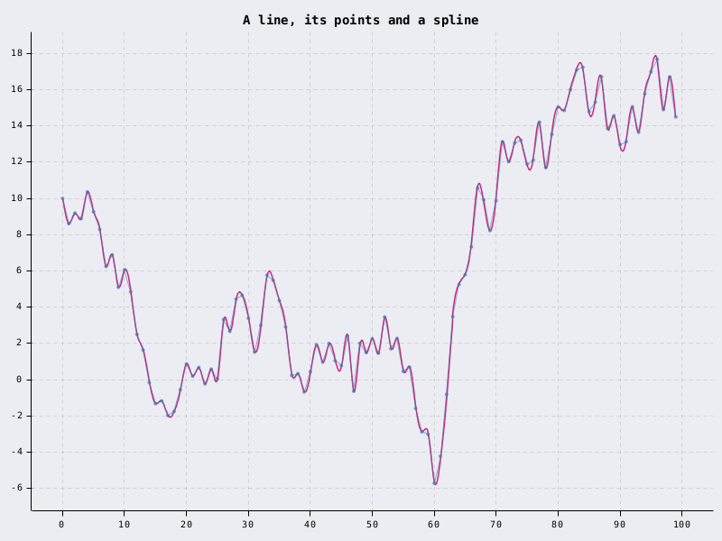
37.7.9 Rugs per category
Source: cljplot showcase - rugs.

(let [g (r/rng :mersenne 30)]
(plot/render-image
{:data (concat (repeatedly 1000 (fn [] {:c "a" :v (r/grandom g -0.2 0.9)}))
(repeatedly 1000 (fn [] {:c "b" :v (r/grandom g 2.0 1.2)})))
:mapping {:x :c :y :v}
:charts [(chart/rug {:color [69 117 180 60]})]
:labels {:title "A rug per category" :x nil :y nil}}
{:width 450 :height 450}))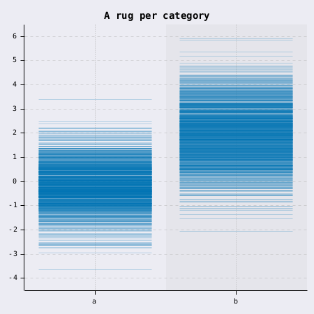
37.7.10 Scatter with histograms
Source: cljplot showcase - scatter-sides.

(let [g (r/rng :mersenne 31)]
(plot/render-image
{:data (repeatedly 1000 (fn [] (let [x (r/drandom g -7 18)] {:x x :y (+ (* 1.4 x) 5.0 (r/grandom g 0 4))})))
:mapping {:x :x :y :y}
:charts [(chart/scatter {:size 3})]
:margins {:top {:charts (chart/histogram {:bins 15})} :right {:charts (chart/histogram {:bins 20})}}
:labels {:title "Scatter with histogram margins"}}
{:width 600 :height 600}))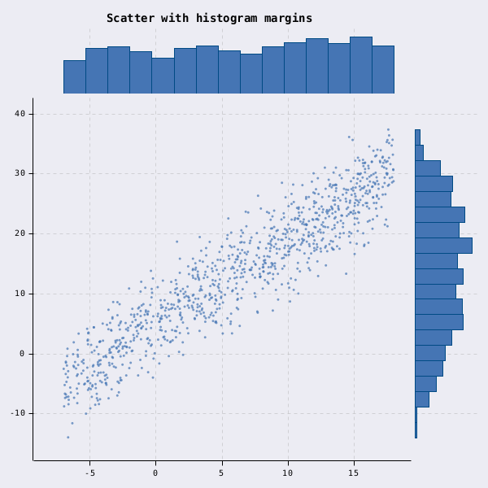
37.7.11 Two groups with a rug
Source: cljplot showcase - scatters2-rug.

(let [g (r/rng :mersenne 32)
group (fn [n mu sd label] (repeatedly n (fn [] {:x (r/grandom g mu sd) :y (r/grandom g mu sd)
:s (m/pow (r/drandom g) 4.0) :g label})))]
(plot/render-image
{:data (concat (group 1000 0.0 1.0 "a") (group 100 2.0 0.8 "b"))
:mapping {:x :x :y :y :color :g :size :s}
:charts [(chart/scatter {:stroke-color :none})]
:margins {:right {:charts (chart/rug {:mapping {:size nil} :thickness 16}) :size 25}}
:scales {:color {:range [[60 100 220 200] [140 20 20 120]]} :size {:range [2 18] :legend false}}
:labels {:title "Two groups, sized points, a rug of y"}}
{:width 800 :height 600}))
source: notebooks/galleries/cljplot_extras.clj